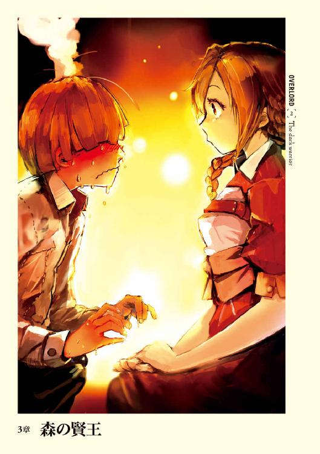
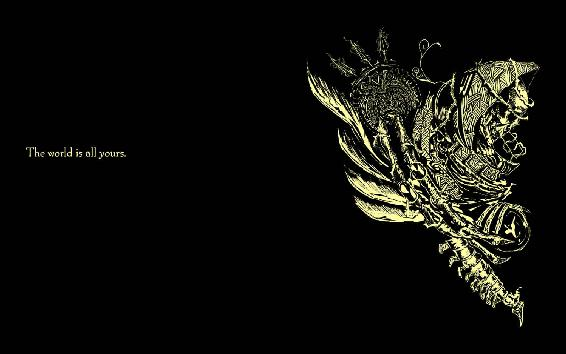

| オーバーロード2 漆黒の戦士 | |
| 丸山 くがね | |
| KADOKAWA / エンターブレイン (2017) | |
本作品の全部または一部を無断で複製、転載、配信、送信すること、あるいはウェブサイトへの転載等を禁止します。また、本作品の内容を無断で改変、改ざん等を行うことも禁止します。
本作品購入時にご承諾いただいた規約により、有償・無償にかかわらず本作品を第三者に譲渡することはできません。
本作品を示すサムネイルなどのイメージ画像は、再ダウンロード時に予告なく変更される場合があります。
本作品の内容は、底本発行時の取材・執筆内容にもとづきます。
本作品は縦書きでレイアウトされています。
また、ご覧になるリーディングシステムにより、表示の差が認められることがあります。
ナザリック地下大墳墓最高支配者の執務室は豪華だ。
室内に置かれた調度品の数々は細かな装飾の施されたものであり、品位と希少性を漂わせている。床は柔らかでふんわりとした緋色の絨毯が敷き詰められており、歩いても音がしない。部屋の最奥の壁にはそれぞれ違った紋様が刺繡された旗が、交差するようにかけられていた。
そんな室内に置かれた貫禄ある黒檀の執務机。そして総黒革のイスには部屋の主人が座していた。
光を吸収しているような漆黒のローブを身に纏ったその人物を、一言で言い表すならば、「死の魔王」。
むき出しの頭部は皮も肉もついていない骸骨。空虚な眼窩に宿った赤い灯火には、黒いものが混じっていた。
彼こそかつてモモンガという名を名乗り、現在はギルドその物の名、アインズ・ウール・ゴウンを名乗る男である。
アインズはその骨のみの手を組み合わせる。それぞれの指に嵌めた九つの指輪が〈永続光〉という魔法によって生み出された光を反射し輝く。
「やれやれ......これからどうすべきか」
〈Dive Massively Multiplayer Online Role Playing Game〉と呼ばれる、仮想世界で現実のように遊べる、体感型ゲーム、『Yggdrasil』のサービス最終日に、謎の現象によってゲームキャラの姿──骸骨じみた姿──で未知の異世界に転移してしまってから、八日ほど経過していた。
その間に居城たるナザリック地下大墳墓の状況やシモベたちを見て回り、ここがゲーム世界のときと大きな変化はないと知り、アインズは次の手に移るべきだと判断していた。
「全てはアインズ様の御心のままに」
室内で静かに控えていた一人の美女がアインズの呟きに反応し、言葉を発する。
それは純白のドレスを纏った非の打ち所のない絶世の美女だ。わずかな微笑を浮かべた顔は女神のごとく。ドレスと正反対の黒髪は艶やかに流れ落ち、腰の辺りまで届いている。しかし彼女は人間ではない。
金色に輝く色彩と縦に割れた瞳孔、左右のこめかみからは山羊を思わせる太い角が曲がりながら前に突き出していた。更に腰からも漆黒の翼が足元を隠すように姿を見せていた。
「そうか、アルベド。お前の忠義、嬉しく思う」
彼女こそナザリック地下大墳墓守護者統括「アルベド」。全部で七人いる階層守護者を纏め上げているNonPlayerCharacterだ。
かつてアインズがギルドメンバー達と共に作り出したナザリック地下大墳墓。そしてそこで働くシモベとして設定したはずのＮＰＣたちは今では自我意識を持ち、アインズに忠誠を誓っている。
それは嬉しいことである反面、元々は一会社員でしかなかったアインズに負担を強いた。
幾人もの部下達に対する主人としての立ち居振る舞い、かつ組織を円滑に運営しなくてはならないという支配者の責務などにおいて。
特に周囲に広がるのが未知の異世界であり、情報が欠如しているという点が最も問題だ。
「......では次の報告は？」
「こちらになります、アインズ様」
提出された紙の束を手に持つと、万年筆で書かれた丸っこい文字に目を走らせる。
第六階層守護者、アウラ・ベラ・フィオーラからの報告書だ。
現在のところ、アインズと同じユグドラシルのプレイヤーとの遭遇はなく、影も発見出来ず。ナザリック地下大墳墓近くに広がる大森林内の調査は、森を抜けた先の山脈のふもとに広がる湖まで、順調に進んでいるという旨が明記されていた。
アインズは一つ頷く。──最も警戒している他プレイヤーとの遭遇がないことに安堵して。
「了解した。このままアウラたちには命令を遂行するように伝えてくれ」
「畏まり──」
扉が静かに数度ノックされた。アルベドはアインズの表情を窺い、それから一礼すると扉に向かう。来客を確認したアルベドはそれが誰かを告げた。
「シャルティアがご面会を求めております」
「シャルティアが？ 構わない、入れろ」
アインズの許可に従い、スカート部分が大きく膨らんだ漆黒のボールガウンを着た、十四歳ほどの少女が優雅に入ってきた。
白蠟じみた肌の持ち主で、絶世という言葉が相応しい端整な顔立ちだ。長い銀色の髪が足運びにあわせて揺れており、外見年齢に似合わない盛り上がり方の胸もまた、大きく揺れていた。
彼女こそ第一階層から第三階層の階層守護者「真祖」、シャルティア・ブラッドフォールンだ。
「アインズ様、ご機嫌麗しゅう存じんす」
「お前もな、シャルティア。それで今日、私の部屋に来た理由は何だ？」
「もちろん、アインズ様のお美しいお姿を目にするためでありんすぇ」
アインズの骨の頭部には表情は浮かばないが、代わりに空虚な眼窩の奥に宿る真紅の光が数度瞬く。
つまらない世辞は止せと言おうとし、アインズはその言葉を飲み込む。情欲によってとろんと濁っているシャルティアの真紅の瞳を横目で見つめるアルベドの笑みが徐々に変わっていくのを目にして。
微笑みは変わらず、美しさは微塵も損なわれていない。しかしそれはもはや笑みではない。
般若だ。
ただ、アインズは安堵を覚える。視線の先にいるのがシャルティアであり、アインズではないから。
「ならば、満足でしょ。下がりなさい、シャルティア。今、私とアインズ様はナザリック地下大墳墓の将来に関して相談しているところなの。邪魔しないでくれるかしら、二人ですべき大切な行いを」
「......まず本題に入る前にご挨拶をするのが基本だといわすのに......いやでありんすね、薹の立ったおばさんは。賞味期限切れのせいか、忙しなくて」
「......保存料ぶち込みまくって賞味期限を無くした食べ物って、毒物と変わりないと思うけど？ それよりはまだ安全でしょ？」
「............食中毒菌を甘く見ない方がいいでありんす。ものによっては感染症まで引き起こしんす」
「............その前に食べるところがあるの？ 食品ディスプレイは大量に盛り上げてるみたいだけど、実際は......ねぇ？」
「..................食品ディスプレイ？ 殺すぞ、てめぇ」
「..................誰が賞味期限切れだ、コラ」
アインズの前に形容しがたい顔となった美女二人が並ぶ。一億年の恋も冷めそうなそんな表情。頭を押さえたくなる衝動を堪え、凄惨で熾烈な戦闘が始まる前に、アインズは声をかける。
「両者とも児戯は止めよ」
瞬間、二人は同時に了解の意を発し、即座に花が咲いたような満面の笑みをアインズに向けてくる。もはや先ほどの恐ろしいアレはおらず、純情可憐な乙女達がそこに立っていた。
（女って怖い......。いやこの二人だけが特別に違いない......）
アンデッドとなり大きな感情の動きがあると即座に押さえ込まれるようになったアインズですら、怯えてしまいそうな表情の繕い方だった。
この二人の対立は恋敵であることに起因している。
アインズはアルベドとシャルティア、両者から惚れられていた。絶世の美女二人に愛される。これを喜ばない男はいないだろう。
しかしアインズは素直にそれを受け入れることができなかった。
特に死体愛好癖という性癖を持つシャルティアは、アインズの耳元で「素晴らしい形の骨格であり、まるで神が作り出したような造形を持っている」と濡れた口調で囁いてきたのだ。
シャルティアからすれば愛の──もしくは賞賛の言葉なのかもしれないが、人生初の褒められた外見が骨格であるということに、アインズが衝撃を感じたのは数日前の懐かしい思い出である。
アインズはそんな小事を頭から追い払い、問いかけた。
「再び聞こう。何用だ、シャルティア」
「はい。これより君命に従いまして、セバスと合流しようと思っておりんす。今後少ぅしばかり、ナザリックに帰還し難くなると思われんすから、ご挨拶にまいりんした」
アインズはシャルティアに与えた指令を思い出し、頷いた。
「了解した。シャルティアよ、油断せずに務めを果たし、無事に戻ってこい」
「はっ！」
凜とした声が響く。
「下がってよろしい、シャルティア。それと退室したならばデミウルゴスをここに呼ぶようにナーベラルかエントマに伝えてくれ。次の策について話をしたいことがあると」
「畏まりんした、アインズ様」
１
隣国バハルス帝国、スレイン法国との要所となる境界に位置するリ・エスティーゼ王国の都市、エ・ランテルは三重の城壁に囲まれ、見た目通りに城塞都市の名を冠している。そんな街は、各城壁内ごとにそれぞれの特色を持っていた。
外周部の城壁内は王国軍の駐屯地として利用されるために、軍事系統の設備が整う。
最内周部は都市の中枢機能たる行政関係。兵糧を保管しておくため倉庫等も並び、厳重な警備が行われている区画だ。
そして二つの区画の間の区画は市民のためのエリア。街という名前を聞いて、一般的に頭に浮かぶ映像こそ、この区画である。
そんな区画に点在する広場の中で最も大きく、中央広場と呼ばれる場所には、幾人もの露天商が店を開き、様々な野菜や調理済みの食料などの多様な商品を店頭に並べていた。
雑多な人ごみの中、店主は威勢の良い呼び声を道行く人に投げかけて商売に余念が無く、年齢のいった婦人が商人と交渉しつつ新鮮な食材を探し、肉の焼ける匂いに引き付けられた青年が肉汁の垂れる串肉を買っていた。
昼特有の活気に満ち満ちた広場は、時間が過ぎさるまでその騒ぎを維持するように思われたが、そこに隣接して立ち並ぶ建物の一つ、五階建ての建物から一人の姿が吐き出された時に終わりを迎える。
広場にいた者は二人組に目を奪われ、その場に釘付けになった。
その二人組の一人は女性だ。十代後半から二十代ぐらいの年齢で、すっと線を引いたような切れ長の瞳は黒曜石のような光を放ち、豊かかつ濡れたような黒髪をポニーテールと呼ばれる髪型にしている。きめの細かい色白の肌は日差しを浴びて、真珠のような艶と輝きを放っていた。
何より目を引くのはお淑やかそうな雰囲気を持つ、誰もが振り返るような異国の情緒を漂わせるその美貌だった。深い茶色のローブというなんの変哲も無い服が、彼女にかかるとまるで豪華なドレスに変貌する。
対して彼女の連れ合いの性別は不明だ。というのも性別を示すものが表に出ていないのだ。
広場にいた誰かが「漆黒の戦士」と呟く。
そう。それは漆黒に輝き、金と紫色の紋様が入った絢爛華麗な全身鎧に身を包んだ人物。面頰付き兜に開いた細いスリットからでは、中の顔を窺い知ることは出来ない。屈強そうな人物に相応しく、真紅のマントを割って、背中に背負った二本のグレートソードが柄を突き出していた。
二人は周囲を見渡すと、全身鎧の人物を先にして歩き出す。
目撃者達は遠ざかっていく二つの後ろ姿を目で追いながら、口々に噂した。それは物珍しいものを見たという類のもので、武装に対する警戒心や恐怖心といった感情はない。
なぜなら、二人が出てきた建物こそ、「冒険者組合」と言われるモンスター退治を専門に行う者達の斡旋所であり、武装した人物の出入りは珍しくないからだ。実際、二人が出てきたあとも、何人もの武装した者たちが出入りしている。それに目端の利く者は、二人が首から小さな銅のプレートをつけたネックレスをしていることに気がついていた。
だからこそ、二人が注目を浴びたのは女性の美貌とあまりにも見事な鎧のゆえでしかなかった。
二人組はさほど広くない通りを、黙々と進む。
通りには轍の跡に水溜まりが出来、太陽の光を反射している。石畳のようなしっかりした作りではなく、土と泥が交じり合っていて足場は非常に悪い。下手に歩けば転倒しかねないが、二人の平衡感覚やバランス感覚が優れているためか、足運びの速度は石畳の上を歩くのとまったく変わらかった。
路上を軽やかに歩きながら、女は周囲に人がいないことを確認すると隣を歩く全身鎧を着た人物に話しかけた。
「アインズさ──」
「──違う。私の名前はモモンだ。そしてお前はナザリック地下大墳墓の戦闘メイドの一人であるナーベラル・ガンマではなく、モモンの冒険者仲間であるナーベだ」
女──ナーベラルの発言を即座に遮って、全身鎧を着た人物──アインズは答える。
「あっ！ これは失礼しました。モモン様」
「様も止せ。私達は一介の冒険者であり仲間だ。様付けなどしていたら怪しまれよう」
「し、しかし！ 至高の御方に対して！」
僅かに声が大きくなったナーベラルに、声を落とすようジェスチャーで示しながら、アインズは若干の諦めと呆れ混じりに答える。
「それは幾度も話したことだろう。この地において私はモモン・ザ・ダーク......いやモモンであり、お前のパートナーである。だから様付けは止せ。これは命令だ」
しばらくの時間が空き、ナーベラルはしぶしぶと答えた。
「畏まりました。モモンさ──ん」
「まぁ、それならば良いだろう、本当は呼び捨てで構わないのだがな。パートナーにさん付けだと少し、こう、なんというか隔たりがあるのではと思われそうだ」
「それは......不敬では......」
言いよどんだナーベラルに、アインズは肩を竦める。
「我々はその正体を知られてはいけない。それは分かっているな？」
「勿論でございます」
「......敬語......まぁ、もういいや。つまり......注意深く行動しろと言うことだ」
「......畏まりました、モモンさ──ん。しかし、私でよろしかったのでしょうか？ 供とするのであればアルベド様のように美しく、お優しい方こそ適任かと思うのですが？」
「アルベドか......」
アインズの言葉に含まれた感情は複雑なものだ。
「あれには私がいない間ナザリックを管理してもらわなくてはならない」
「......僭越ながら申し上げますが、ナザリックの管理であればコキュートス様がいらっしゃいます。守護者の皆様も仰っておりましたが......御身のご安全を考えますと、やはり供はナザリック最高の守り手であるアルベド様こそ相応しいのでは？」
ナーベラルの質問にアインズは苦渋の声を上げた。
アインズが自ら都市に向かうと宣言した際、守護者達の中で最も強く反対意見を述べたのはアルベドだ。それも共に行動出来ないと分かった途端に。
アインズも転移直後、従者を引き連れるのが嫌で勝手に出歩いたという負い目があったために、アルベドの反対に対して強く出られなかった。しかし今回はあのときの勝手な行為とは違い、熟考した結果であったために引くことは出来ない。
「命令」すれば従属を喜びとする守護者であるために、己の意志を殺し従っただろうが、アインズはそれを良しとは考えなかった。ギルドの仲間達が作り出したものへ、己の意志のみを強く押し出すのは気が咎めたためだ。
説得を試みるアインズと、強固に反対するアルベド。両者の意見は平行線を辿り、いつまでも終わることはないと思われたが、デミウルゴスがアルベドに何かを囁くことで、アルベドが急に意見を取り下げて決着がついた。最後は全部分かっていますという穏やかな微笑みで見送られたほどだ。
今でもデミウルゴスが何と言ったかの確認を取らなかったことが、アルベドの急激な変化と相まって、アインズに若干の不安を抱かせる。
「......アルベドを連れてこなかったのは、あれほど私が信頼出来る者は他にいないからだ。あいつがいるからこそ、私は安心してナザリックを離れることが出来る」
「やはりそうでしたか！ つまり、アルベド様はモモンさ──んの最もお近くの存在ということですね」
うん、まぁ、そうだね、と流石に口には出さずに、頭を縦に動かすことでナーベラルの問いに答える。
「それに危険は承知している」
アインズは黒いガントレットに包まれた右手を持ち上げると、薬指を動かした。
「しかし、ここは私でなければならない。ナザリックの中から指揮するだけでは、未知の世界であるが故の手落ちもあるだろう。実際に外の世界に出て触れる必要がある。......確かに幾つも手段はあるだろう。だが、そのどれも未知数な状況下では不安が多い」
なるほど、承りましたと重々しい声で答えるナーベラルを、アインズはスリット越しに眺め、若干の不安がある声で問いかけた。
「時に質問なのだが......人間を下等生物と思うか？」
「まさにその通りです。何の価値も無いゴミです」
心底そう思っているという迷い無い返事に、アインズは口の中で「あ、やっぱり。お前もそうなんだ」と呟くが、それはあまりに小さすぎてナーベラルには届かない。そして続いた「こういう性格だから下手に人間の街にやれないんだよ。やっぱり部下の性格の把握を最優先にやっておくべきだった」という愚痴も。
アルベドを連れて来なかった理由の一つは、人間を下等生物と言い切るその考え方だ。人が多い都市にそんな考えの者を連れて来て、目を離した隙に殺戮パーティーなど引き起こされたらたまったものではない。それにアルベドは変装系の能力を有していないために角や翼を隠せないという点もあった。
そして決して口には出せない最大の理由。
それは単なるサラリーマンであったアインズには、現場を見ないで上がってくる情報のみで組織の将来を見据えた運営を行える自信がなかったためだ。だからこそ自分が外に出ることで、そういった才能を持つアルベドに押しつけたのだ。優秀な部下がいるならば下駄を預けてしまった方が賢い。無能な上司が出しゃばったところで悪い結果しかでないだろうから。
それにアルベドはアインズに対する「忠誠心」と「愛情」という二つの鎖で縛られている。だからこそナザリック地下大墳墓を安心して任せることが出来る。
（愛情か......）
アルベドを前にすると、そしてアルベドがアインズに惚れているという発言をするたびに、アルベドの設定を書き直したという己の失態を思い出してしまう。そう、アインズはゲーム終了直前にアルベドの「キャラ設定」を、モモンガ──つまりアインズを愛していると書き換えた。もちろん、未知の異世界に飛んでしまうなんてことは知りもしなかったのだから、あくまでも最後のちょっとした冗談のつもりだった。
しかし振り返って考えてみれば──アルベド自身は構わないというが──タブラ・スマラグディナという友人は今、アインズのしでかしたことを知ったらどう思うのだろう。
自分だったらどうだろうか。自分の生み出したＮＰＣが仲間達に歪められたとしたら......。
更には、そんなアルベドだから裏切らないだろうと、利用している自分が好きになれない。
アインズは頭を振って暗い考えを追い払う。アンデッドの体になって強い感情の波は押さえ込まれるようになったが、この程度の小さな波は人間だったときと同様そのまま感じられる。アンデッドの精神に完全に変化すればこういった罪悪感も覚えたりはしなくなるのだろうか。
そんなことをぼんやりと思いながらアインズは、面頰付き兜に覆われた顔をナーベラルに向けた。
「......ナーベよ。その考えを捨てよとは言わんが、最低でも抑えよ。ここは人間の街であるし、人間の中にどの程度の強者がいるかいまだ不明な点が多い。敵対的行動を誘発する考えは出来る限り慎め」
忠誠と服従を示す深いお辞儀をしかけるナーベラルの頭を押さえて止めると、重ねて釘を刺す。
「それともう一点。私たちが本気で戦おうとしたり、殺すぞと思ったとき、人間を脅かす......殺気というものが実際あるかは不明だが、その手の類のものが漂うらしい。だから私の許可がない限り、決して本気を出すな。いいな？」
「畏まりました、モモンさ──ん」
「よし。......さて、この辺りに教えてもらった宿屋があるはずなのだが」
アインズは周囲を見渡す。
幾つもの店が開いており、出入りする者の姿が僅かに見える。ちょっと横を見渡せば作業用の前掛けをつけた数人の職人が荷物を運び込んでいる。だが、それもちらほら程度だ。
そんな店の立ち並ぶ区画で、吊り下げられている絵の描かれた看板を目印に店を探す。これはアインズ、そしてナーベラルもこの国の文字が読めないからだ。
やがて目的の「絵」を見つけたアインズの足はひとりでに速くなっていた。ナーベラルがそれにつづく。
装甲靴についた泥を落としながら二段ほどの階段を上がり、アインズは両手を使ってウエスタンドアを押し開け、店内に入る。
明かり取りの窓がほとんど下ろされているためその室内はうす暗く、外の明るさになれた人間なら一瞬真っ暗に感じるだろう。しかしながら闇視の能力を持っているアインズからすれば十分な明るさだ。
室内はかなり広い。一階は酒場になっており、奥にカウンター。その後ろには二段ほどの棚が据え付けられ、何十本もの酒瓶が並んでいる。カウンター横の扉の先は調理場だろう。
酒場の隅には、途中で折れながら上に向かう階段がある。組合の受付嬢の話によると二階、三階部分が宿屋という話だ。
何卓もある丸テーブルには客の姿がちらほらと見られる。ほとんど男であり、暴力の傍に身を置いている者に相応しい空気に包まれていた。
視線は一直線にアインズたちに向けられている。そこには値踏みをするような粘りつくものが多く含まれていた。アインズたちに注意を払わないのは、唯一店の端っこの方に座っている女だけであり、彼女は自分のテーブルの上に置いた瓶をじっと見つめていた。
そんな宿屋の景色に、アインズは面頰付き兜の下で偽りの眉を顰めた。
覚悟はしていたが、予想よりも薄汚い。
ユグドラシルというゲームでも、汚い場所やおぞましい場所というのはある。実際にアインズが支配するナザリック地下大墳墓にだってある。恐怖公の間や蠱毒の大穴などだ。
しかしそれらとは違った汚さがある。
床にこぼれた何かの食いカス、同じく床に溜まった何かの液体、壁に出来た奇妙な染み、隅の方に転がっている固まってカビの生えた何か......。
アインズは内心でため息を吐き出すと、店の奥に目を向けた。
そこには薄汚れた前掛けをした男がいた。袖を捲り上げ、露出した太い二の腕には獣とも刀剣とも判別出来ない傷跡が幾つも浮かび上がっている。
顔立ちは精悍と野獣の中間といったところだろう。そして顔にもやはり傷がある。頭部は完全に剃られ、一本も髪は残っていない。
店の主人というより用心棒としか思えない男が、モップを片手にアインズを堂々と観察していた。
「宿だな。何泊だ」
割れ鐘を彷彿とさせる濁声がアインズにかけられた。
「一泊でお願いしたい」
「......銅のプレートか。相部屋で一日五銅貨だ」主人はぶっきらぼうに言う。「飯はオートミールと野菜。肉が欲しいなら追加で一銅貨だ。まぁ、オートミールの代わりに数日たったパンという可能性もあるがな」
「出来れば二人部屋を希望したいんだが？」
微かに鼻で笑った声が聞こえる。
「......この街に冒険者ご用達の宿屋は三軒ある。その中で一番下が俺の店なんだが......組合の人間にここを紹介されたんだろうが、どうしてか分かるか？」
「分からないな。教えてくれるか？」
即答したアインズに、主人の眉が危険な角度で吊りあがる。
「少しは考えろ！ そのご立派な兜の中身はガランドウか！」
苛立ちが含まれた、腹の下から突き上げられるような声を耳にしても、アインズは平然とした態度を崩さない。子供の癇癪を浴びたような気持ちでいられるのは、先日の戦いを経た結果であろう。
あの戦い、そしてそれに続く捕虜からの強制的な情報収集がアインズに己の強さをある程度理解させてくれた。だからこそ、怒鳴り声にも余裕の態度を維持出来る。
そんなアインズの姿勢を見て、ほう、と主人から感嘆の呼吸が微かに漏れ出た。
「......中々肝は据わってるようだな。......、ここに泊まるのは大体が銅から鉄のプレートを持つ冒険者だ。同じ程度の実力なら、顔見知りになればチームとして冒険に出る可能性がある。そうやってチームを組むのに相応しい奴を探すには俺の店がもってこいだからだ......」
ぎょろっと主人の目が動いた。
「個室で寝泊まりしても構わないが、接点がなければ仲間は出来んぞ。バランスの良いチームを編制出来なきゃモンスターとの戦闘で死ぬ。だから仲間の足りない駆け出しは普通、大部屋などで顔を売るんだ。最後に聞くぞ、相部屋か二人部屋どっちが良い？」
「二人部屋だ。食事の必要はない」
「ちっ。人の親切が理解できねぇ奴......それともその全身鎧はお飾りじゃねぇっていう自負か？ まぁいい。一日七銅貨。当然、前払いだ」
宿屋の主人がすっと手を差し出した。
値踏みをするような視線の中、アインズは後ろにナーベラルを従え歩を進め──邪魔するようにスッと行く手に足が出された。
アインズは立ち止まり、目のみを動かして足を出してきた男を観察する。
嫌らしい薄笑いを浮かべた男だ。同じテーブルを囲む者たちも同じような笑みを受かベているか、もしくはアインズとナーベラルをじっと眺めている。
店の主人、その他の客。止めようと動く者はいない。
一見すると興味がないか、もしくは面白いことが始まったという視線ばかりだが、一挙一動見逃さないという鋭いものも中には隠れていた。
（やれやれ）
アインズは呆れたように微かなため息を吐き出すと、その足を軽く蹴り払った。
それを待っていたように男が立ち上がる。鎧をしていないため、その衣服の下で十分に盛り上がっている筋肉が分かる。首にしているアインズのものと似た小さなプレート──ただし鉄の物──を付けたネックレスが動きに合わせて揺れた。
「おいおい、痛いじゃねぇか」
男はドスの利いた声で威圧しながら、ゆっくりとアインズににじり寄る。立ち上がるときに取ったであろうガントレットを装備し、拳を作るとギシリという金属の軋む冷ややかな音がした。
身長がほとんど同じ程度の両者は、殴りあうにはいささか近すぎる距離でにらみ合う。最初に口火を切ったのはアインズだ。
「そうか。面頰付き兜だと視界が悪くてな。足があったのが見えなかった。それとも短いから見えなかったのかも知れないが......そんな理由だ。許してくれるだろ？」
「......野郎」
アインズのおちょくるような言葉に、男の目に危険なものが宿る。しかしその視線が後ろに控えるナーベラルへと動くと、怒りの代わりに粘ついたものが付着した。
「てめぇはむかつく野郎だが......俺は寛大でな。そっちの女を一晩貸してくれたら許してやんぞ？」
「くっ、くくく」
アインズから短い哄笑が軽く漏れ、前に出ようと動き出したナーベラルを軽く手を上げることで抑止する。
「......なんだ？」
「いやいや。見事なまでに雑魚に相応しい台詞を口にしたものだから、笑いを堪え切れなかった。許してくれ」
「あん？」
ハッキリとした憤怒が男の顔に宿り、顔色がまだらに染まる。
「ああ、殴りあう前に一つ聞いてもいいか？ お前はガゼフ・ストロノーフよりも強いか？」
「はぁ？ 何を言ってるんだ、おめぇ？」
「そうか。その反応だけで十分だ。ならば遊ぶ程度の力も出さないでよさそうだな。──飛べ」
アインズは素早く手を伸ばすと、男の胸倉を摑む。そして瞬時に男の体を持ち上げた。
回避どころか抵抗することすらできずに持ち上げられた男から「うぉ」という驚きの声が上がり、それと同じく周囲で騒ぎを見つめていた男達もどよめく。成人男性を片手で持ち上げるということが、どれほどの膂力の強さを示すか。それが分からないほど想像力が貧困なものはこの場にいない。
その場で起こったざわめき、そして息を飲む音。そういった驚愕が作る空気を両断するように、アインズはそのまま足をばたつかせる男の体を軽く放り投げた。
軽くといってもそれはアインズにとってだ。
投じられた男の体は驚くような勢いで天井近くまで上昇し、放物線を描いて一つのテーブルの上に勢いよく落ちる。
肉が叩きつけられる音、上に載っていた物が割れるような音、木が割れるような音、男の苦痛の声などが重なり合って室内に大きく響き渡る。うめき声に押されるように、宿屋内に静寂が立ちこめた。しかし──
「おっきゃあああああ！」
──一拍置いて、奇怪な叫びがそのテーブルに座っていた女の口から放たれた。とんでもない目に遭ったという魂の絶叫だ。いや、男が上から降って来れば当たり前だろうが、それとは決定的に違う何かがあった。
「......で？ 次はどうする？ 面倒だから一斉にかかってきてくれていいぞ？ 時間を無駄にするのも馬鹿馬鹿しいしな」
アインズの言葉は男と同じテーブルに座っていた者達に向けられていた。アインズの短い言葉に含まれていた意味を、すぐに理解した男の仲間は慌てて頭を大きく下げた。
「あ？ あ、あぁ！ 仲間がすまないことをした！ 謝らせてくれ！」
「......ああ、許すとも。こちらは何の迷惑もかけられていない。ただ、テーブルの代金を主人に払っておいてくれ」
「勿論だ。あれはこちらで支払っておくとも」
ならば話は終わったとアインズが再び歩き出そうとしたとき、唐突に声をかけられる。
「ちょっとちょっとちょっと！」
見れば、先ほど奇怪な悲鳴を上げた女がズカズカとアインズに迫ってくる。
年齢は二十いくかいかないか。赤毛の髪を動きやすい長さに乱雑に切っている。どう贔屓目に見ても切りそろえているわけではない。どちらかというなら鳥の巣だ。
顔立ちはさほど悪いわけではないが、目つきは鋭く、化粧っけはこれっぽちも感じられない。日差しに焼けた肌は健康的な小麦色に変わっており、腕には筋肉が隆起し、手には剣だこ。真っ先に想起される性質は「女」ではなく「戦士」だった。
胸元の小さな鉄のプレートをぶら下げたネックレスが、足取りに合わせて大きく揺れる。
「あんた何すんのよ！」
「何とは？」
「はぁ!? あんた自分が何したのか分かんないって言うの！」
女が指差すのは壊れた机だ。
「あんたがあの男を投げたせいで私のポーションが、私の大切なポーションが割れたのよ！ 何考えてあんなクソでかぶつ投げつけてくんのよ！」
「それで？」
「それでって！ あんたねぇ！」女の目が一層鋭くなり、声も低くなる。「弁償しなさいよ。私が買ったポーション」
「たかだかポーション......」
「......私が食事を抜き、節約に節約を重ね、必死になって溜めた金で今日、今日！ 買ったばかりのポーションを壊したのよ？ 危険な冒険もあのポーションがあれば命が助かると信じていた私の心を砕いた上にその態度？ マジ切れたわ」
女が更に一歩アインズに近寄る。
大きく見開かれた目は血走り、そこにいるのは興奮した牛だった。
アインズはため息を堪える。確かに投げた先を確認せず、不用意に放り投げたのは自らの失態だ。しかしある理由からそう容易く弁償には応じられない。
「......それならあの男に請求したらどうだ？ あいつが短い足を必死に伸ばさなければこんなことにはならなかった。なぁ、そうだろ？」
アインズは兜に開いたスリット越しに、男の仲間達を睨む。
「あ、ああ......」
「いやでもなぁ」
「まぁ私はどっちでもいいから、現物を寄越すなり、見合うだけの金額を払ってくれさえすれば問題ないんだけど......金貨一枚と銀貨十枚よ」
男達が下を向いた。支払う金はないらしい。そして再び女の目はアインズに戻る。
「やっぱりね。いつも飲んだくれてるんだから、あるはずないわよね。それで、あんたさぁ。ご立派な鎧を着ているんだから、治癒のポーションぐらい持ってるんでしょ？」
なるほどと、アインズは納得した。なぜ女がアインズに請求してきたかを。これは致命的なまでに厄介だ。
アインズは少しだけ考え、それから覚悟を決めて問いかける。
「持ってるが......ポーションは回復のもので間違いないな？」
「そうよ。私がこつこつ──」
「──ああ、その話はもう結構だ。こちらもポーションを出す。物々交換で終わりにしよう」
アインズは下級治癒薬を取り出し、女に差し出した。女は訝しげな表情でポーションを眺め、それからぶすっとした顔で受け取る。
「......これで問題はないな？」
「......ええ、これでひとまずは問題はないわ」
若干、奥歯に物が挟まったような女の口調ではあったが、アインズは疑問を追い払う。それよりも先ほどからナーベラルが致命的なことをしかねないか不安だった。
釘を刺したにも関わらず、ナーベラルからはチリチリとしたものが滲み出ているようだ。それを感じているとおぼしき何人かの顔に不安げな色があった。
「行くぞ」
アインズはナーベラルに牽制の意味も兼ねて短く告げると、宿屋の主人の前に立つ。そして無造作に懐に手を入れ皮袋を取り出し、中から一枚の銀貨を抜き取って主人のごつい手の中に落とした。
主人は無言のままズボンのポケットに銀貨に突っ込むと、代わりに引き抜いた手には幾枚かの銅貨が握られていた。
「うんじゃ、つりの六銅貨だ」
アインズのガントレットの上に銅貨を落とすと、カウンターの上にぱちんと音を立てて小さな鍵を置いた。
「階段上がって、すぐ右の部屋だ。寝台に備え付けてある宝箱の中に荷物は入れろ。言わなくても分かると思うが、他人の部屋には不用意に近づくな。勘違いでもされたら厄介なことになるからな。まぁ、顔を売りたいならそういう手もあるのは認めてやるさ。おめぇならあらかた対処出来そうだしな。だが俺に面倒をかけんじゃねぇぞ」
主人の視線が未だ床に転がって呻いている男の方に一瞬だけ動く。
「了解した。それと冒険の最低限の道具を準備してくれ。持っていたものを紛失してしまったのでな。組合でこちらで頼めば準備してくれると聞いたが？」
主人はアインズとナーベラルの服装に目をやり、それから持っている皮袋をじろじろと眺める。
「ああ、分かった。夕飯までには用意しておいてやる。そっちも金の準備をしておけよ」
「了解した。ではナーベ行くぞ」
アインズはナーベラルをあとに従え、ギシギシと悲鳴を上げる古くさい階段を上り、与えられた部屋へと向かっていった。
•
アインズの姿が二階に消えると、投げられた男の仲間は慌てて、男に治癒の魔法をかけ始める。それが口火を切ったかのように静まりかえっていた宿屋内はざわめき出した。
「......見かけ倒しじゃないな」
「そうだな。あの筋力、あれは桁が違うな。どんな鍛錬で得たんだ、ありゃ？」
「グレートソード二本以外の武装をしてないが、それだけの自信はあるってことだな」
「また一気に俺達を飛ばしていきそうな奴の登場かよ」
飛び交う会話にあるのは感嘆、瞠目、驚愕。
元よりアインズがただ者ではないだろうな、というのは誰もが実のところ理解していた。
根拠の一つはその見事な武装だ。全身鎧は安い売り物ではないため、購入出来るのは冒険を繰り返した──経験豊富な者に限られてくる。報酬だけで考えるならば、銀のプレートまで昇ればそれだけの資産が作れる。しかし中には先祖伝来のものを譲り受けた者や、戦場や遺跡などで拾った者もいる。だからこそ、どの程度の力があるか確かめようとした。
ここにいる全員は一応は仲間であるが、それと同時にライバルだ。新たな新規参入者の能力は誰だって知りたい。そうして先ほどの一連の流れが繰り返される。
実際、基本的にこの場にいる誰もが通った道だ。しかし、これほどまでに容易く通り抜けたかと自問すればそんなことはないと言えよう。
つまりは、あの見知らぬ銅のプレートを下げた二人組。
彼らは味方としてもライバルとしても、折り紙付きの強さを持つのは誰の目から見ても明らかだった。
これからあの二人をどう扱おう。あの美人にはもう声はかけられない。もし二人だけならうちのチームに入れても良いぞ。参加してくださいの間違いじゃないか？ あの兜の下の顔はどんなのだろう。今晩、俺、あいつらの部屋の壁に耳付ける。かの周辺国家最強の戦士、ガゼフ・ストロノーフの名前を出していたぞ？ もしかして戦士長の弟子とか。ありえそうだな、その線。その大役は聴覚に優れた盗賊たる俺の仕事だ、などなど、未知の二人組への興味が飛び交う騒ぎの中、宿屋の主人は一人の冒険者の元まで歩く。
向かった先にいたのはアインズからポーションをもらった女だ。
「おい、ブリタ」
「ん？ 何？」
女──ブリタは今まで見ていた赤いポーションから視線だけを動かし、主人に興味のなさそうな顔を向けた。
「なんだ、そのポーションは？」
「さぁ？」
「......おいおい、さぁってねぇだろ？ 価値を知っていたからこそ、直ぐに引いたんじゃないのか？」
「まさか。つーか、こんなポーション見たこともないよ。おやっさんも見たことないから、見に来たんでしょ？」
ブリタの言う通りだった。
「そんなんでいいのか？ ポーションを壊されたのは事実なんだろ？ 下手したらお前さんが買ったのよりも安いもんかもしれねぇ」
「あー、だね。確かに博打みたいなもんだけど、今回のには勝てる自信はあるよ。こっちのポーションの金額を聞いた上で、あんな見事な鎧を着た奴がくれたもんだからね」
「なるほどな......」
「......こんな色の回復系のポーションは見たことがないし、なかなかの逸品である可能性は高いじゃん。下手に躊躇って、やっぱり金で支払うとか言われたら竜の塒に入って何も持って出ないようなもんじゃない？ ま、明日には鑑定をしてもらいに行ってみるからその価値は分かるはず」
「おう。そんなら俺が鑑定料持ってやるよ。それだけじゃねぇ、一流どころも紹介もしてやるよ」
「おやっさんが？」
ブリタの眉が真ん中による。宿の主人は善人だが、決してお人好しではない。何か裏があると考えても間違いではない。
「ああ、そんな顔すんなよ。俺にもそのポーションの効果なんかを教えてくれりゃいいだけさ」
「そういう取引ね」
「悪くない取引だろ？ それに俺のコネなら最高のポーション職人を紹介出来るぜ。かのリイジー・バレアレだ」
ブリタは素直な驚きをその顔に浮かべた。
エ・ランテルは傭兵や冒険者らが多く集まる場所であるために、彼ら向けの武器やアイテムの売買は盛んだ。その中でも治癒のポーションの取引は盛んで、エ・ランテルには普通の都市に比べて薬師達が多く集まっている。
リイジー・バレアレはその中でも最高の薬師として知られ、都市の薬師の中では最も複雑なポーションまでも生成出来る職人だ。そんなエ・ランテル最高の薬師の名前を出されてしまえば、もはや断るという選択肢はブリタにはなかった。
２
パタリと音を立てて木の扉が閉まる。
部屋には小さな机が一つ、そして宝箱が備え付けられた二つの粗末な木製寝台ぐらいしか調度品はない。鎧戸が開けられているために、直接外気と日光が入り込んでくる。
アインズは室内を見渡し、軽い失望を覚える。所詮は場末の宿屋、ナザリックのような設備や清潔度を求める方が間違っているとは知っていたが、それでもちょっとだけ身構えてしまうような作りだ。
「このような場所にモモン様が滞在されねばならないなんて」
「そう言うな、ナーベ。私たちの目的はこの都市で冒険者としての地位を得、名が知られるまで上り詰めること。それまでは分にあった生活というのも悪くはない」
内心をおくびにも出さず、ナーベラルを宥めると、アインズは鎧戸を閉める。鎧戸の隙間から入り込む陽光だけでは、室内に満ちた闇を追い払うことは不可能だ。アインズやナーベラルは闇視の能力を持っているため支障はないが、そうでない者にとってこの部屋は、物を見るには不便なほど暗い。
「しかし冒険者......。予想以上に夢のない仕事だ」
冒険者。
その言葉にアインズは若干の夢を抱いていた。
未知を求め、世界を冒険する者。そんなユグドラシルというゲームの正しい遊び方を体現したような職業をイメージしていたのだが、組合で受付嬢の話を聞いてもっと現実的でつまらないものだと知った。
冒険者とは一言で表すなら「対モンスター用の傭兵」だ。
アインズの夢見ていた冒険する者という側面もあり、二百年前に出現した魔神によって滅ぼされた国の残骸──遺跡の探索や、秘境に未知を求める場合もあるが、基本的にはモンスター退治屋だ。
モンスターはその種ごとに様々な特殊能力を持つ。だからこそ兵士などよりは多種多様な技──対策手段を持つ者を必要としていた。
それだけ考えれば、ゲームなどによくある勇者的な、多くの人から頼られる立場に就きそうだが、実際は違う。
というのも、統治する側としては自分がコントロールできない武装集団が存在するのは嫌だからだ。そのために金銭的な面は別にしても、立場的には低い。
さらに冒険者を国家レベルで囲い込まない理由は、金のかかる正社員を抱えているよりは、その場その場で派遣社員を雇い入れた方が安くつくという企業の考えと同じものだ。そのため派遣社員を雇わないでも回せる企業があるように、自国の兵力でモンスターを討伐出来る国では冒険者の地位はより一層低い。
スレイン法国では冒険者という存在はなく、バハルス帝国では現皇帝になってから冒険者の立場が悪くなっているとは、組合受付嬢の愚痴だ。
アインズは微かな失望を心の内から追い払う。憧れた職業についてみたら、現実はそんなに夢のあるものではなかったというのはよくあることだ。
アインズが軽く手を振ると、漆黒の全身鎧と背負っていた二本のグレートソードは溶けるように消え去り、その下からマジックアイテムに身を包んだ骨の姿が顕わになった。
かけた薄い黒色のミラーシェードには時折、赤いターゲットサイトが浮かんでは消えていく。頭を囲む紫水晶をはめ込んだ銀のサークレットは薔薇の蔓のようで、外側に棘が幾つも飛び出している。
着ているのは絹の光沢を放つ黒色の長袖に、ぶかぶかの長ズボン。そしてズボンを留めるのはベルトと言うより黒帯だ。
無骨な鉄のガントレットを外すと、骨の指には左右の薬指を除いて指輪が嵌まっている。
赤茶色のゴツゴツした皮で作られた半長靴には金糸で刺繡が入っていた。
首から下げたネックレスには獅子の顔を描いた銀色のプレートがぶら下がっており、そして真紅のマントだ。
通常、ユグドラシルのアイテムは外装にデータクリスタルを入れることで組み上がる。そのため、外装に統一性を求めるのは非常に難しい。しかし、あまりに和洋折衷の格好は嫌だというプレイヤーが多かったために、ある特定条件を満たすことで、装備の能力はそのままに、外装を統一出来るようなアップデートが行われた。
先ほどまでアインズの全身をくまなく覆っていた漆黒の鎧。〈上位道具創造〉によって作られたそれも、特定条件の一つだ。
現在、アインズが装備しているのは必中の眼鏡、精神防壁の冠、黒後家蜘蛛の衣服、ブラックベルト、イルアングライベル、ネメアの獅子、加速の靴。そして──
──ユグドラシルのアイテム売買というのは、データクリスタルの形式でのやりとりが多い。しかし中にはより強力なアイテムを製作したため、今まで着用していたアイテムを販売するということもある。ここで問題になるのは、製作したアイテムは──放送禁止用語や特定人物等を侮辱するような名前は運営より修正要求が届くことがあるが──基本的には制作者の好きに命名して良いことになっているという点だ。
売る際にアイテムに変な名前がついていると忌避される傾向は、当然ながら強い。名前を変更するための課金アイテムは格安ではあるが、それを使用してまで購入する客は少ない。
だからこそアイテムに名前をつけるときは大抵のプレイヤーは頭を捻ってつける。神話から持ってきたり、英語の名前を付けたりだ。
もちろん例外はある。
指輪に名前をつけるのが面倒だからといって、指輪１、指輪２、指輪３とつけた、などはまだ可愛いものだ。親指輪、人差し指輪、中指輪という名前だってアインズは実際に見たことがある。
アインズの友人の一人で、二本の大太刀を状況に応じて使い分けていた、武人建御雷という男は、その所持していた武器の片方の八代目に「建御雷八式」と名づけていた。
そしてこの真紅のマントもその類だ。
昔のアメリカン・コミックに出てくるダークヒーローから取られたもので、名前をネクロプラズミックマントと呼ぶ。
これらは全て聖遺物級の装備だ。アインズの主武装からすれば二段劣るアイテムではあるが、あまり強すぎるアイテムを持ち込むことによる弊害を考え、この辺りで留めて置いた。
肩を回し、鎧を脱いだことによる解放感を味わっているアインズに、ナーベラルが問いかけてくる。
「しかしあの不快な女はどういたしましょう？」
「ああ、あのポーションを壊されたという女か。別段、相手にすることはない。私だって大切にしていたものを壊されれば憤怒に我を忘れる......」
この肉体になってからの精神の変化を思い出し、アインズは口ごもってから続ける。
「......だろう、多分。不注意だった私を責めるのは当然だ」
「しかしあれは愚かな人間が至高なる御身に喧嘩を売るという下種な行為をなしたがゆえの結果。責められるべきはあの男でしょう」
「そうだろうが、投げたのは私だしな。ここは寛大な気持ちで許してやるとしようじゃないか。それにこの街でやるべきことは、モモンとナーベというこの世界の者が名声を得ること。たかだかポーション一本程度の金額すら支払えないと知られてしまっては、評判にけちがつこう」
納得してはいないようだが、ナーベラルは了解の意として深々と頭を下げる。
「それに相手は先輩だ。後輩たる者、多少は顔を立ててやろうじゃないか」
アインズはネメアの獅子以外に、首から下げたネックレスを弄る。
（......単なる金属のプレートに過ぎないが、偽造とかの可能性は......まぁ、その辺りは組合が考えることだな）
銅の小さなプレートをぶら下げたそれは、いうならば認識票だ。このプレートこそその冒険者の能力の高さを証明している。
銅、鉄、銀、金、白金、ミスリル、オリハルコン、アダマンタイト。
あとの金属になるほど評価が高いことを示し、同じく選択出来る仕事の難易度ひいては支払われる報酬の額が高くなる。それは冒険者の命を無駄に減らさないためのシステムだ。
冒険者登録を済ませたばかりのアインズはいちばん初めの銅のプレートであり、それに対して彼女は鉄のものである。先輩には最低限の敬意を表するのは、社会を上手くわたっていくコツでもある。
「しかし、アインズ様であれば、アダマンタイトなどの柔らかな金属ではなく、アポイタカラ、ヒヒイロカネなどの七色鉱が相応しいと思われます。目の腐った者ばかりです」
ユグドラシルでも上位の金属の名前を挙げるナーベラルに、アインズは鋭い視線を送り、気になっていたことを告げる。
「ナーベ、念のためだ。この街にいる間は私をモモンと呼べ」
「畏まりました！ モモン様！」
「先ほどの繰り返しがしたいのか？ モモンだ」
「も、申し訳ありません！ モモンさ──ん」
「......モモンさーんと間抜けに聞こえるぞ？ まぁ、良い。モモンが無理ならばせめてモモンさんだぞ？ 分かったな」
「畏まりました。モモンさん」
再び深々と頭を下げたナーベラルに対し、アインズは指を額に当てる。
（モモンさんと言わせた理由が分かってない。ちょっとばかり駄目な奴だな......。まぁ、いまは他人の目があるわけでもないし、とりあえずは許容しておこう）
「とりあえずはこれからの行動方針を語っておこう」
「はっ！」
床に片膝をついて頭を垂れるナーベラル。主命を待つ従者の態度だ。
アインズはどうしようかと困惑する。扉には入った際に鍵をかけたから大丈夫だとは思うが、端から見れば何か言われそうな光景だ。
（しかし......なんでモモンと呼ぶように言ったのか理解してないんだろうか？ 宿屋に向かう途中でも説明したはずなのに......）
アインズは、もういいや、と半ば投げやりな気持ちで話しだす。
「我々はこの都市で著名な冒険者としての偽装身分を作り出す。その理由の一つはこの世界の冒険者という存在、つまりは強者の情報を集めるためだ。何より重点を置きたいのは私と同じユグドラシルのプレイヤーの噂だ。上のプレート持ちになればそれに見合った仕事などが回されるために、得られる情報も純度が高く有益なものが多くなるだろう。そのために当面は冒険者として成功を収めることを第一目標とする」
了解の意を示すナーベラルに、アインズは懸案事項を口にした。
「ただし既に問題が生じている」
アインズは小さな皮袋を取り出すと、その口を緩め、中のものを手の上に広げた。転がり出たのは硬貨であり、その数は非常に少なく、金の輝きは一切見られなかった。
「まず、金がない」
先ほどの諍いでアインズがポーションを渡した理由は幾つかあったが、そのうちの一つは金銭で問題を片付けられる自信がなかったからだ。あそこでお金がありませんでは、あまりにも悲しすぎる。
怪訝そうな顔をしたナーベラルに、アインズは付け加える。
「いや、もちろん、金はあるぞ。ただし、私の手持ちの殆どがユグドラシルの金貨だ。そのためこれを使うのは最後の手段に取っておきたい」
「なぜでしょう？ ユグドラシルの硬貨でも金銭的価値はあるとご確認されたのではないのですか？」
「確かに私がこの前行ったカルネ村では金貨......ああ、交易共通金貨の略で交金貨だな。交金貨二枚分の価値があると言われた。しかし、この都市でユグドラシルの金貨を使用した場合、その流れた先で何があるか分からん。下手をすればユグドラシルのプレイヤーがここにいるぞと不特定多数に宣伝するような結果を残すだろう。世界を知らない現状ではそれは避けたい」
「プレイヤー......アインズ様と同格の存在であり、かつてナザリックに攻め込んできた不逞の輩ですね」
アインズ様との呼び方に、ない眉を顰めるが、先ほどと同じ理由でアインズは何も言わないことにする。
「そうだ。決して油断出来ない存在だ」
彼──アインズ・ウール・ゴウンはユグドラシルの最高である百レベルではあるが、プレイヤーにとって最高レベルというのは別段珍しくない。というより全プレイヤーのかなりがそうだった。
そんな中でアインズは自身の強さを中の上だと認識している。これはアンデッドの魔法詠唱者に似合った職業ばかりを、強さを無視してロールプレイの一環で取ってきたことの弊害だ。複数の神器級アイテムに身を包んでいる、課金アイテムをかなり持っているなどを考えれば上の中まではいけるかもしれないが、それでも上には上がいる。
だからこそ、プレイヤーに発見されることは避けなくてはならない。下手に戦闘に入れば、アインズでは勝てない相手というのもごまんといるためだ。
そしてプレイヤーは元々が人間だ。人間に肩入れする者は多いだろう。そんなプレイヤーが人間を下等生物と見なしているアルベドと対峙した場合、ナザリック地下大墳墓──アインズ・ウール・ゴウン全体が人間の敵だと見なされる可能性があった。そのためアルベドを連れ歩くことは危険に思われた。
（しかしまさかナーベラルまでそういった性格だとは思ってもいなかったが）
アインズは人間の敵ではない。しかし己の目的のために人間を殺すことに迷いはない。それでもプレイヤーと正面切って戦うのは避けたかった。
「そういう意味では本当に勿体なかったな」
「何がでしょう？」
「ニグンという男をあんな簡単に失ったことがだ。最も情報を握っていただろう者を、あの程度の簡単な質問で終わらせてしまったことがな」
カルネ村で捉えた陽光聖典の構成員で生き残っているのは、現在十人程度だ。その他は情報を聞きだす過程で死亡し、アインズの特殊技術で召喚したアンデッドの媒介と成り果てた。
捕虜から無理矢理吐かせた情報を思い出し、アインズは自嘲する。
「普通のプレイヤーであれば......スレイン法国を支援しそうだな」
スレイン法国とは六百年前に降臨した六大神を信仰している宗教国家だ。
陽光聖典の構成員の言葉を借りれば、スレイン法国は人間という弱者が他の強大な種族に打ち勝ち、繁栄するために努力しているという国だ。もし人間の心を失わないプレイヤーがいれば、スレイン法国の教えには賛同するのではないだろうか。
人間が種の頂点に立つ世界とは違い、この世界では人間という種は劣等種の一つという立場にある。
平野にこのような立派な都市を構築しているが、平野での生活を営んでいるというのもその弱さの現れにしか過ぎない。
というのも平野というのは危険な場所である。まず隠れる場所がなく、次に敵に見つかりやすい。そんな場所を住処に選んだのは、暗闇を見通す視力もなければ脚力も持久力もない脆弱な種族では、平野という隠れる場所もない危険な場所でなければ、生存圏を作り上げることが出来なかったためだ。
人間よりも優れた肉体能力を持ち、優れた文明を持つ種族もいるが、彼らがこの大陸を支配していないのは、五百年前に大陸を支配しようと動いた八欲王なる存在との抗争によって、種としての力が落ちたためだ。もしそれがなければ、恐らくは人間という存在は淘汰されていたかもしれない。
そんな世界に立てば人間に肩入れもしたくなるだろう。だからこそアインズはスレイン法国に近寄る気は今のところない。プレイヤーを警戒して。
「まぁ、何はともあれ、金については、お前に持たせている騎士に偽装したスレイン法国の者たちが持っていた剣をいざとなれば売る予定だが......その前に仕事を見つけたい」
「畏まりました。では明日、再び組合に行くとおっしゃるのですね」
「そうだ。出来ればこの街を見学し、知識を得たいところだったが、それは金銭をある程度稼いでからだな」
「承りました。戦闘メイドの一人であるこの私も全力でご支援したいと思っております」
「そうか。よろしく頼むぞ、ナーベラル」
深々と頭を下げるナーベラルの姿に満足すると、アインズは魔法を発動させ、幻影と鎧を纏う。
「私は周辺の地理を確認してくる。お前はここで待機しておけ」
「お供を！」
「いらん。周辺の様子を窺うだけだ。出来れば巨大だと言われる墓地を見物したいが......。それとお前をここに残すのは何者かの侵入などを避けるためだ。決して油断することなく注意しておけ。今のところ一切ボロは出していないはずだが、ここは敵地と言っても過言ではない。警戒は怠るな」
「畏まりました」
「あと定時連絡を頼む」
アインズが部屋を出ていき、ナーベラルはふぅとため息を吐き出す。
そして目元を押さえると上下に動かした。先ほどまで鋭かった目は力なく垂れ下がり、完全に気の抜けたような表情になった。ポニーテールもまるで気力が抜けたように、へにょりとしている。
とはいえ至高の主人より与えられた命令は覚えている。
ナーベラルは五感に神経を集中させ室外を探ろうとするが、魔法詠唱者であるために盗賊の真似事は難しい。そのため自分の得意技でその弱みを補う。
〈兎の耳〉
魔法の発動に合わせて、ナーベラルの頭の上からぴょこんと可愛らしい兎の耳が生える。それがピクピクと動き、周囲の音を感知しようと行動を開始する。
兎さん魔法とユグドラシルプレイヤーに言われる三つのうちの一つである。この他は、幸運値を上昇させる〈兎の足〉、モンスターの敵対値を若干下げる働きをするという〈兎の尻尾〉である。これら三つを同時に発動させた女性キャラは服装が変化することで馬鹿な人気があるのだが、他の二つをかける必要がないナーベラルは唱えたりはしない。
ナーベラルが習得している魔法の大半が、戦闘に使うものだが、これはその数少ない例外だ。
周囲の音を十分に聞き取り、安全を確認してから〈伝言〉の魔法を発動させる。それを待ち望んでいたかのように直ぐ、頭の中に綺麗な女性の声が響いた。
『ナーベラル・ガンマ。どうしたのかしら？』
「はい。定時報告です」
ナーベラルの会話の相手はナザリック地下大墳墓守護者統括であるアルベドだ。
現状をくまなく話したナーベラルは最後に、先方が望む言葉を口にする。
「アインズ様はアルベド様を『あれほど私が信頼出来る者は他にいない』とおっしゃってました」
『くふー！』
なんだか得体の知れない興奮の叫びがナーベラルの頭の中に響いた。
『よーし。よーし。良い娘よ、ナーベラル！ その調子で私をアピールするのよ！ これはナザリック守護者統括としての命令よ！』
命令するほどのことなのだろうか、とナーベラルは疑問に思うが、冷静に考えてみれば至高の存在の横に侍る女性を決める戦いだ。それであれば命令も当然だ。
そうナーベラルが納得している間にも、アルベドの興奮したような声がガンガンと響く。
『シャルティアが別件で外に出ている間に、私はゆっくりとアインズ様との距離を縮めていくわ！ 難攻不落の要塞といえども波状攻撃し、橋頭堡を築いていけば何時の日か陥落する！ その栄光の日にシャルティアは悔し涙を流すでしょう！』
歓喜の叫びを上げるアルベドに、ナーベラルは若干眉を顰める。流石にこうまで興奮の声を上げられると、若干煩わしい。
スキップでもしていそうな明るさで、今度はああしないと、こうしないとなどとブツブツ呟いていたアルベドが一気に冷静な声を発した。
『しかし、なんであなた達は力を貸してくれるのかしら？ シャルティアではなく、私を選んだ理由って何かしら？ 欲しいものでもあるの？』
「簡単なことです。シャルティア様とアルベド様。どちらがアインズ様のすぐ横に座られるに相応しいかと問われましたら、私はアルベド様こそお似合いだと思いますので」
『くふー！ 素晴らしいわ。まさにあなたこそ将来のナザリックの大局が見える者。感心してしまうわ』
「それにユリ姉さんがシャルティア様を苦手とされておりますので」
『ああ、ユリ・アルファが。なるほど、そういうことなのね。では他の娘も私の味方と思っていいのかしら？』
自分たちの副リーダーであるユリ・アルファに続いて、他の仲間達の顔を思い出しながらナーベラルは答える。
「それは微妙かと。ルプスレギナはアルベド様寄りですが、ソリュシャンはシャルティア様寄りでしょう。エントマとシズは不明です。今のところどちらにもつかないと思われます」
『ソリュシャンを引き入れることは？』
「難しいでしょう。あの娘はシャルティア様に似た趣味を持っていますので」
『ああ、なるほど......悪趣味なあれね』
ナーベラルはアルベドに同意の声を上げながら、ソリュシャン・イプシロンのああいった趣味が理解出来ずに首をかしげた。例外の一人を除き、人間は下等生物だが、だからといっていたぶる趣味はない。邪魔をすれば殺すし、面倒でも殺す。だからといってわざわざ手間をかけてまで殺しに行きたいとは思わない。
『仕方ないわね。では他の娘たちを私の陣営に引き込むように行動しましょう。まずはエントマとシズをね』
「それが良いかと思います。ソリュシャンとエントマは人間を食材として好むという性質を持ちますので、もしかするとエントマがアルベド様についた場合、ソリュシャンも味方になるかも知れません」
『そうなのね......。了解したわ。それで話は変わるんだけど......愛しいアインズ様はどんな感じだったか、詳しく教えてくれない？』
「はい、畏まりました」
こうしてアルベドとの定時連絡は話が弾み──アインズとナーベラルが同じ部屋で寝ると知ってアルベドが奇怪な雄叫びを上げるなどの揉め事はあったが──四度同じ魔法をかけなおすという事態になり、帰って来たアインズを若干呆れさせるのだが、それはまた別の話である。
３
空気に色がついたような気がし、ブリタは犬のように鼻で数度空気を嗅ぐ。
わずかな緑の匂いが含まれているのは気のせいではないだろう。空気を染めた匂いは何らかの薬品や潰した植物のもの。それが、目的となる区画に近づいていることを、ブリタに告げてくる。
ブリタは通りを進み、先ほどよりも匂いが強まった区画に到着する。左右を見渡し、最も大きな家の前で足を止めた。
その家屋は周囲に並ぶ建物が前に店舗、後ろに工房、という感じで建てられているのに対し、工房に工房に工房という感じで建てられていた。
ドアにつり下げられた木のプレート、そして出されている看板の文字を読み、目的地がここで正しいことを確認する。
入り口の扉を押し開ける。上にとりつけられていた鐘が、驚くほどの大きな音を立てた。
入るとそこは客と話すための応接間らしく、部屋の中央には向かい合った長椅子が置かれ、壁沿いには書類らしきものが並んだ本棚が置かれている。部屋の隅には観葉植物が置かれていた。
ブリタが一歩踏み込んだとたん、声がかかる。
「いらっしゃいませ！」
男の声だ。いやその声は男と言うには若若しすぎる。
見れば部屋の奥に、潰した植物の汁が所々付着し、つーんとした匂いを放ちそうなボロボロの作業着を着た少年が立っていた。
金髪が長く伸びて顔を半分ほど隠してしまっているために年齢の判別は難しいが、その身長や声から考えれば成長期ぐらいだろう。
そんな少年だが、ブリタにも名前の予想はつく。祖母が有名であることもそうだが、その生まれながらの異能によって、エ・ランテルの有名人の一人に数えられる人物。
「......ンフィーレア・バレアレさん？」
「はい。そうですよ」
少年──ンフィーレアはこくりと頷くと、問いかけてきた。
「それで今日は一体、どのようなご用件ですか？」
「あ、はい。えっとちょっと待ってください」
ブリタは懐から店の主人から預かった折り畳まれた紙を取り出し、それを近づいて来た少年に渡す。
ンフィーレアはそれを受け取ると開き、じっくりと読み始めた。
「これは......なるほど。じゃぁ、そのポーションというものを見せてくれますか？」
ブリタが出したポーションをンフィーレアは受け取ると、それを髪に隠された目の高さまで持ち上げる。
空気が変わった気がした。
ンフィーレアは髪をかき分ける。現れた顔立ちは整っており、将来、確実に女性たちに騒がれるだろうなと思われた。
しかしいまはまだまだ幼さが残るそこに、鋭いものが浮かんでいる。目は先ほどの口調からは考えられないほど鋭く、数度瞬きを繰り返す瞳には強い興奮の色があった。ンフィーレアはそのまま数度ポーション瓶を揺らすと、一度だけ頷く。
「すみません。ここでは何とも言えないのでこちらに来ていただけますか？」
その言葉に従い、ンフィーレアの案内でブリタが向かった部屋はごちゃごちゃとしていた。いやそう思ったのは、彼女に知識がないからだろう。
テーブルの上には丸底フラスコ、試験管、蒸留器、すり鉢、じょうご、ビーカー、ランプ、天秤、奇妙なつぼなどが置かれている。壁には棚があり、その中には無数の薬草や鉱石などが大量に並べられている。
部屋からは鼻を刺激する独特な臭いが流れ出し、体が害されるような気分を抱かせる。
部屋には先客がおり、じろりと突然の乱入者である二人を睨んだ。
非常に高齢の老婆だ。しわくちゃな顔、しわくちゃな手。肩の辺りでバッサリと切られた髪は真っ白。着ている作業着にはンフィーレア以上に緑の染みがあり、濃い草の香りを漂わせていた。
部屋に入ったンフィーレアはその老婆に向かって声をかけた。
「おばあちゃん！」
「なんだい、なんだい。そんなでかい声上げなくても聞こえるよ。耳はまだまだ調子がいいんだよ」
ンフィーレアの祖母は一人しかいない。彼女こそがこの都市最高と言われる薬師、リイジー・バレアレだ。
「これ見てよ」
ンフィーレアから突き出されたポーション瓶を受け取り、それを眺めたリイジーの眼光はブリタが思わず身構えたくなるほど鋭く、歴戦の強者と感じさせた。
これは気のせいではない。薬師は薬を作る過程で魔法を使用する必要があるために、高名な薬師であればあるほど使用出来る魔法の位階は高い。そのためにエ・ランテル最高の薬師であるリイジーの個人戦闘能力はブリタを凌駕する。
「こいつは......そっちのが持ってきたのかい......。......伝説の？ いやまさか......神の血？ おい、なんだい、こいつは？」
「え？」
ブリタは目をぱちくりさせる。それを聞きたいのはこちらの方だ。
「こいつは......ありえないポーションなんだよ。どこで手に入れたんだい？ 遺跡かい？」
「え？ あ、いや、それは」
「ハッキリしない娘だねぇ。聞かれたことだけパンと話せば良いんだよ。どこで手に入れたんだい！ 別に盗んだりしたわけじゃないだろう？ ん？」
びくりとブリタの肩が跳ね上がる。悪いことは何一つしてないのに、叱られている気分だ。
「......おばあちゃん。脅したりしちゃ駄目だよ」
「......なんだい、ンフィーレア。私はこれっぽちも脅してなんかないよ。......ねぇ？」
いや、脅されてます。そう言いたいが言えるはずもないブリタは唾を飲み込み、単刀直入にポーションを手に入れた経緯を話す。
「あ、えっと、もらいました」
「......はぁ？」リイジーの視線がより厳しいものへと変わる。「あんなぁ......」
「待って、おばあちゃん。えっとブリタさん、どんな人から、どんな理由でもらったんですか？」
ンフィーレアの助け船を得て、ブリタは全身鎧を着た謎の人物からもらったと簡単な説明を終わらせる。それを受けて、リイジーはしわくちゃな顔をより一層しわくちゃにした。
「......ポーションには三種類あるのは知ってるかい？」
問いかけながらもブリタの答えを聞かずに、そのままリイジーは話し続ける。
「薬草のみで作るもの。こいつは即効性はなく、いうならその人間の本来の機能を強めるような薬だ。効果は薄いがその代わり非常に安価だ。次が魔法と薬草で作るもの。こいつらは先のポーションより効果が現れるのが早いが、それでも多少時間がかかる。戦闘が終わって時間がある時なんかに冒険者が飲む治癒のポーションはこいつが多いね。そして最後が魔法のみを使用して作るポーションさ。こいつは錬金術溶液に魔法を注ぎ込むことで作るもんだ。効果は即座に現れ、魔法と同じような効能を持たせることが出来る。その代わりに高額だよ。で、あんたの持ってきたポーションは何かというと、薬草などの沈殿物が一切見られないことから、魔法で生成したポーションだと思われる。でもね──」
リイジーは青色の液体の入ったポーション瓶を取り出すと、ブリタに突きつけた。
「こいつが基本的な治癒薬さ。色が違うだろ？ 治癒薬の色は製作過程でどうしても青くなっちまう。しかしあんたのは赤。つまりはこの治癒薬と世間一般のものは製作過程が完全に違うということなんだよ。ようするにあんたの持ってきたコレは相当のレアもんであり、今の治癒薬生成技術を場合によっては変えちまうかもしれないもんさ。......ピンと来ないかも知れないけどねぇ」
それだけ言うとリイジーは魔法を発動させる。
〈道具鑑定〉
〈付与魔法探知〉
二種類の魔法をポーションにかけたリイジーの表情に驚愕と憤怒の色が浮かんだ。
「くくっ......ふぁふあははは！」
──突如、壊れたような笑い声が、狭い室内に響き渡った。ゆっくりとリイジーが顔を上げる。そこには狂人のような壊れた笑みがあった。ブリタはリイジーのあまりに急激な変化に気圧され、話すどころか指一本すら動かせない。
「くくく！ やっぱりかい！ 見るがいいさ、これを！ ンフィーレア！ ここに、ここにポーションの完成形があるぞ！ 私達が──私達薬師や錬金術師、ポーション生成に係わる全ての者が、研究の歴史を積み上げてなお届かない理想の形が！」
リイジーは興奮しきったために紅潮した顔で、荒く浅い呼吸を繰り返す。そして決して離さないと表明するかのごとく、手で堅く握り締めたポーション瓶をンフィーレアに突きつける。
「ポーションは劣化する。そうじゃな！」
「そうです、当たり前のことです」
リイジーの興奮具合とは違ってンフィーレアの口調は冷静だったが、表情には微かな興奮の色があることにブリタは気がついた。
ただ、なぜ、そんなに興奮しているのかが理解出来ない。しかし自分が何かすごいことに巻き込まれたのだということは、ひしひしと感じていた。自分がもらったポーションで、この都市最高のポーション職人がこれほどの興奮を顕わにしているのだから。
「魔法のみで生成するポーションには錬金術溶液を使う。こいつは鉱物をベースにして錬金術を使って作るもんだ。そのために時間の経過と共に劣化するのは当然の理！ だからこそ〈保存〉の魔法をかける」そこで一拍置いて、結論を口にする。「そう今まではな」
リイジーの言いたいことが漠然と理解出来たブリタは、赤の溶液に驚きの目を向けた。
「これは！ このポーションは、このポーションはな！ これだけで効能が劣化しない、つまりは完成されたポーションなんじゃ！ 今まで誰にも開発出来なかった！ 伝説によれば真なる癒しのポーションは神の血を示す。昔からある言い伝えだよ」リイジーの手の中でポーションが揺れ、真紅の液体が跳ねた。「もちろん伝説でしかないし、今までは神の血は青いんだ、なんて冗談が薬師の間ではやっていたぐらいさ」
一拍置いて、リイジーは興奮に震える手でしっかりと握ったポーションを睨む。
「これこそが恐らくは真なる神の血を示すポーション！」
ぜいぜいと息を切らすリイジー。背をさするンフィーレア。驚きで何も言えないブリタ。そんな三者によって生まれた静寂を、リイジーが破る。
「......それであんたはこのポーションの効能を聞きに来たんだと思うが、第二位階の治癒魔法相当だね。希少性などの付加価値を加算しないのであれば、金貨にして八枚だねぇ。ちなみに付加価値も考えると、あんたを殺してでも奪い取りたいという人間が出てくる可能性があるっていうぐらいの金額だよ」
ゾワリとブリタの身が震える。
効能的価値だけでも鉄のプレート持ちの冒険者であるブリタからすればかなり高額だ。ただ問題はその付加価値の方だ。目の前にいるリイジーの鋭い瞳が、まるで襲いかかるチャンスを見定めているような気さえする。
それにしても疑問が残る。あの全身鎧に身を包んだ男はなぜこれほどのポーションをポンと渡せるのだろう。あの鎧の下の素顔は一体何者なのか。
無数の疑問がブリタを襲う中、リイジーが問いかける。
「こいつを私に売る気はないかい。色はたっぷりつけさせてもらうよ。そうさね、金貨三十二枚でどうだね？」
ブリタは先ほどより大きく目を見開いた。
提示してきた金額は、ブリタからすれば驚愕の大金だ。家族三人で慎ましくすれば三年は暮らせるだろう。
ブリタは迷う。このポーションが法外な価値を持つのは分かった。ではここで金貨三十二枚で売ることは正しいのだろうか、と。再びこのポーションを得られる可能性は極めて低い。
しかし断った場合、自分は生きて帰れるのだろうか。
そんなブリタの逡巡を見て取ったリイジーは仕方ないと頭を振った。そして代案を告げた──。
４
明朝、再び組合の扉をモモンことアインズは押し開ける。
入れば奥にあるカウンターが目に入る。そこでは組合の受付嬢が三人、笑顔で冒険者らの相手をしていた。全身鎧を着用する戦士、軽装鎧に弓矢を持つ身軽そうな者、神官衣を纏い何らかの神の聖印を下げる者、ローブにスタッフを持つ魔力系魔法詠唱者の姿もある。
左手側には大きな扉があり、右手側にはボード。そこには昨日はなかった羊皮紙が幾枚か張り出されていた。やはりそこにも幾人もの冒険者の姿が見える。羊皮紙を前に仲間内で相談している。
その姿と張り出されている羊皮紙にアインズは非常に嫌なものを感じながら、受付に向かって歩き出した。
幾多の視線がアインズが首からぶら下げている銅のプレートに集まり、そして次に姿格好へと舐めるように動いていくのが感じられた。それは昨日の宿屋と同じ類の気配だ。
アインズも横目で冒険者たちを観察する。首から下げたネックレスにぶら下がっているプレートは金や銀。銅のものは一切ない。若干のアウェー感を感じながら、アインズはカウンターの前まで進む。
ちょうど一組が終わったようで、手の空いた受付嬢がいた。その前に立つと問いかける。
「すまない、仕事を探しているんだが？」
「でしたら、あそこに張り出されている羊皮紙をお選びになって、こちらまでお持ち下さい」
了解の意を示しながら、アインズは喪失した汗腺機能が復活したような感覚に襲われていた。アインズは羊皮紙が張り出されている前まで到達すると、ざっと見渡す。それから大きく頷いた。
うん。文字が読めない。
この世界の法則の一環で言語は翻訳されているが、文字までは訳されはしない。
前に冒険者組合に来た際は全て受付嬢がやってくれたために、今回もそうなのだろうと思っていた。甘い考えだった。
あー、と悲鳴を上げて転げ回りたい気分になり、そして精神が沈静化される。この身になってからの変化に感謝しながら、アインズは必死に頭を回転させた。
識字率は高くはないらしいが、それでもこの場で字が読めないと知られるのは恥ずかしすぎるし、侮られるという不利益に直結しかねない。
アインズが持っている文字読解のアイテムはセバスに渡したままだし、その手の魔法の習得はユグドラシル時代に嘲笑を浮かべて一蹴したものだ。スクロールがあるから、そんな使い道のあまりない魔法はそれで代用するよ、と。
この世界の文字が読めないのを知りながら対策を怠っていた自分は本当に愚かだ。
しかし覆水盆に返らず、後悔先に立たず。
ナーベラルも文字を読むことは出来ない。詰んだ。終わった。
そんな思いが駆け巡るが、ナザリックの支配者である自らが恥ずかしい行動は取れない。
意を決し、アインズは羊皮紙を一枚剝がすと、ずかずかとカウンターに向かう。
「これを受けたい」
やけに力一杯出された羊皮紙に目を通した受付嬢の表情に困惑の色が浮かぶ。そして苦笑いと共に言葉を紡いだ。
「申し訳ありません。こちらはミスリルプレートの方々への依頼でして......」
「知っている。だから持ってきた」
アインズの静かで重みを感じさせる声に、受付嬢の目に訝しげなものが生まれた。
「え、あの......」
「私はそれを受けたいのだ」
「え？ あ、いや、そうおっしゃられましても、規則でして」
「くだらん規則だ。昇格試験を受ける日まで、あんな容易く、見窄らしい仕事を繰り返さなくてはならないというのが不満でな」
「仕事に失敗した場合、多くの方の命が失われる可能性もあります」
受付嬢の固い声には数多の冒険者達の努力によって培われた組合の評判も、という声なき声が含まれているようだった。
「ふん」
アインズの嘲笑に周囲の冒険者達の表情が、受付嬢と同じく敵意で固くなる。今まで自分たちが守ってきた規則をバカにする新人だ。ごく当たり前の態度だと、アインズは思う。
アンデッドたるアインズは別に気にもしないが、鈴木悟というサラリーマンの残滓は頭を周囲の者に全力で下げていた。
鈴木悟が嫌いなのは「こちらの出した案を、なんの代案も無しに頭ごなしに否定する奴」であり、「常識の通じないクレイマー」だ。今のアインズはまさに後者。殴り飛ばしたくなる輩だ。
しかしアインズも簡単には引き下がれない。元より引く気ではいるが、ある程度の状況まで持って行かなくてはならない。だから切り札を出す。
「後ろにいる私の連れ、ナーベ。彼女は第三位階魔法の使い手だ」
ざわりと空気が動き、驚愕の視線が一気にナーベラルに移る。この世界では第三位階は魔法詠唱者として大成した者の領域とされている。
真実か虚偽か。周囲の者の目がその二つの間で揺らぎ、アインズの見事な全身鎧に動く。
冒険者たるもの、強さに比例して装備品はより良いものになっていく。仲間と思われるアインズの纏う立派な鎧は何よりの説得力があった。
周囲の見る目が変わったことに気づき、アインズは内心で喝采を送りながら、もう一手打ち込む。
「そして私も当然ナーベの強さに匹敵するだけの戦士。我々であればその程度の仕事は容易と断言出来る」
先ほどに比べれば受付嬢や周囲の冒険者の間に流れる驚きは小さい。しかしそれでもアインズを見る目が変わったのは摑めた。
「銅貨何枚などの簡単な仕事をしたくて、冒険者になったのではないのだ。私たちはもっとレベルの高い仕事を望んでいる。もし力が見たいというのであれば見せてやろう。だからその仕事をさせてくれないかな？」
先ほどまであった敵意は急速に薄れている。確かに、もしくはなるほど。そういった雰囲気がそこにはあった。冒険者という強さを重視する荒くれたちには、アインズの言葉は理解出来るものだったためだ。
しかし受付嬢は違う。
「......申し訳ありませんが規則ですので、それは出来ません」
頭を下げての謝罪に、内心でアインズは勝利のポーズを取った。
「それでは仕方がないな......我が儘を言ったようで悪かった」アインズも頭を軽く下げる。「では銅のプレートの仕事で最も難しいものを見繕ってくれ。その掲示板に出ているもの以外にはないかな？」
「あ、はい。畏まりました」
受付嬢が立ち上がり、アインズが完全な勝利に精神的に感涙しようとしたとき、男の声がかかる。
「それなら私達の仕事を手伝いません？」
「あん？」
ドスの利いた声がつい漏れた。取り繕うように視線を向けた先にいたのは四人組の冒険者であり、首から下げた銀のプレートが光を反射し輝く。
折角、誘導が完璧に上手くいっていたのに、と内心で愚痴を溢しながらアインズはその者達に向き直った。
「仕事というのは......やりがいがあるもの......でしょうか？」
「うーん。まぁ、あると言えばあると思いますね」
一行のリーダーとおぼしき男が返答した。何条もの金属製の細帯が互いに重なりながら、皮や編んだ鎖帷子の上をそこそこ覆った鎧──帯鎧を着用した戦士風の男だ。
この男の仕事に参加すべきだろうか。無論、話を聞いてからでも良いが、その場合再びこの受付嬢が仕事を選んでくれるかどうかは不明だ。しかし仕事を受ければこの者らとのコネを作ったり、知りたい情報を得るチャンスとなるかも知れない。
迷いは数秒。
アインズはゆっくりと頷いた。
「やりがいある仕事こそ望んでいたものです。一緒にやらせていただきましょう。しかし一応どんな仕事なのか聞かせていただけますか？」
その返事を聞くと、男たちは受付嬢に依頼して部屋を一つ用意させた。
そこは会議室のような部屋だった。木のテーブルが中央に置かれ、その周りを囲むようにイスが置かれている。男達は部屋の奥側のイスに座り始めていた。
「じゃぁ、そこに座ってもらえます？」
指示に従って、室内にあったイスの一つに座る。ナーベラルが隣に静かに腰掛けた。
男たちの年齢は若く、二十歳にも満たないと思うような若々しさだ。しかしそこに青さはない。年齢には似合わないような落ち着いた雰囲気が存在する。くつろいではいるが瞬時に武器をとることの出来るように、間隔を置いた位置取りで腰掛けている。
無意識のうちにそうしているのだから、潜り抜けてきた死線の中で染みついたものなのだろう。
「さて仕事の話をする前に、簡単な自己紹介をしておきましょう」
先ほどの戦士風の男が代表として声を上げた。
王国では基本的な人種の特徴である金髪碧眼の顔は、これといった特徴はないが整ったものだ。
「初めまして。私が『漆黒の剣』のリーダーのペテル・モークです。あちらがチームの目や耳である野伏、ルクルット・ボルブ」
皮鎧を纏った金髪の男が、軽く頭を下げる。茶色の瞳がおどけるように細まっていた。
全体的に瘦せ気味で、やけに手足が長く、蜘蛛を彷彿とさせるフォルムだ。ただ、その細い体は無駄なものをかなり削った結果によるものだ。
「そして魔法詠唱者であり、チームの頭脳。ニニャ──『術師』」
「よろしく」
この中では最年少だろう。大人というには若々しすぎる笑顔を浮かべて、軽くお辞儀をしてくるのは濃い茶色の髪に青い瞳の持ち主だ。
肌は他のメンバーがそこそこ焼けているのに対し、白い。顔立ちもこのチームでは一番の美形だ。男の美しさというより中性的な美しさ。声も男のものにしてはやや甲高い。
ただ、浮かぶ微笑は仮面のように顔に張り付いているだけの、作り笑いとも違う何かだった。
服装も他のメンバーが鎧を着ているのに、皮の服を着ている程度。その代わりにベルトには様々な奇怪なものをぶら下げているのが机の陰から見えた。奇妙な形の瓶や、変わった形の木工細工等だ。
術師という言葉を考えれば、魔法詠唱者の中でもアインズと同じ魔力系に属する者だろう。
「......しかし、ペテル。その恥ずかしい二つ名やめません？」
「え？ 良いじゃないですか」
「二つ名持ちですか？」
それがどの程度のことか分からず不思議そうなアインズに、注釈を入れるようにルクルットが口を出す。
「生まれながらの異能を持っていて、天才といわれる有名な魔法詠唱者なんだよ、こいつ」
「ほう」
アインズは声を上げる。生まれながらの異能は陽光聖典の者を三人潰してまで引き出した情報だ。その実例が目の前にいることに喜びを感じてしまった。
対してナーベラルからは微かに嘲笑の鼻息が聞こえるが、相手には気がつかれなかったことにアインズは安堵する。取引先で駄目な部下が変なことをしでかした上司の気分で、一瞬だけ軽く腹を立てたりもするが、この場でもめごとを起こすのは不味いと直ぐに冷静さを取り戻す。
「別にすごいことじゃないですよ、たまたま持っていた生まれながらの異能がそっち系統だったというだけで」
「ほほう」
更なる興味を引かれ、耳を大きくして身を乗り出す。
生まれながらの異能とは武技と同じく、ユグドラシルにはなかったこの世界特有の能力だ。おおよそ二百人に一人程度の割合で生まれ持つ、保有する者の存在自体は珍しいものではない特殊な能力だが、それは千差万別であり弱い力から強い力まで多様にあった。
例えば明日の天気を70％の確率で当てる力、召喚したモンスターを強化する力、イネ科穀物の収穫時期を数日ほど早める力、この世界にかつてあった竜の魔法を使う力、など多岐に渡る。
ただ、これは生まれたときに得る能力であり、選択したり変えたり出来る能力ではない。そのために嚙み合わないことも多い。魔法の破壊力を増す能力を持って生まれてきたとしても、魔法詠唱者になれる肉体も才能もなければ宝の持ち腐れで終わる。
嚙み合ったら幸運という程度のもので、それが人生の全てを決定するということは、特別に強大なものを除きほぼないに等しい。
ガゼフ・ストロノーフのような戦士が生まれながらの異能持ちでないことからも分かる。
とはいえ、戦闘に使える生まれながらの異能を持つ者は冒険者という職を選びやすい傾向にあるので、冒険者には生まれながらの異能持ちは多く見られた。そんな中、目の前にいる人物は見事に嚙み合った幸運の結晶とも言えた。
「魔法適性とかいう生まれながらの異能で習熟に八年かかるところを四年だっけ？ まぁ俺は魔法詠唱者じゃないからそれがどれぐらいすごいのかいまいちピンと来ないんだけどな」
アインズは同じ魔法職としての好奇心と、欲しいなというグッズ・コレクターに通じる欲望にかられる。ナザリック地下大墳墓にない力を得ることは、組織の強大化に繫がる。もし何らかの手段でその能力を奪うことが出来るのであれば、それは敵を作りかねないという危険を犯してもする価値があるかもしれない。
もしそれが出来るとしたら、超位魔法の一つ〈星に願いを〉だろうか。
そんなことをヘルムの下で考えながら、獲物を見つめる目で眺めているアインズに気がつかず、二人の会話は続いている。
「......この能力を持って生まれたのは幸運でした。夢を叶える第一歩を踏み出せたのですから。これがなければ最低な村人で終わっていましたよ」
ぼそりと呟いた声は暗く重い。それを払拭する目的で上げたペテルの声は当然、正反対だ。
「何はともあれこの都市では有名な生まれながらの異能持ちだということです」
「まぁ、わたしよりもっと有名な人がいますけどね」
「蒼の薔薇のリーダーか？」
「その方も有名ですけど、この街にいる方の中でですよ」
「バレアレ氏であるな！」
まだ名を聞いていない最後の一人が重々しく、かつ大声で人の名前を口にした。それに興味を引かれ、アインズは問いかける。
「......その方はどんな生まれながらの異能をお持ちなんですか？」
四人が驚いた表情を浮かべた。どうやら知っていて当然の情報だったらしい。
アインズは自らの好奇心やナザリックを強大化させる力を求める思いのあまり、つい油断したと後悔するが、この程度ならまだ挽回出来ると言い聞かせる。
しかしアインズが言い訳するよりも早く、彼らなりのなんらかの結論が出たようだった。
「なるほど、それだけの立派な鎧を纏い、噂になってもおかしくない美女を連れていながら、全然私たちが知らなかったのはこの辺りの人ではないからですか」
渡りに船とアインズは頷いた。
「まさにその通りです。実は昨日来たばかりなんですよ」
「ああ。じゃ、知らないですかね？ この都市の有名人なんですが、流石に遠くの都市までは広がってないかな？」
「ええ、聞いたことがありませんでした。よろしければ教えてくれませんか？」
「名前はンフィーレア・バレアレ。名の知れた薬師の孫に当たる人物で、彼が持つ生まれながらの異能はありとあらゆるマジックアイテムが使用可能という力です。本来であれば使えないはずの系の違う巻物でも使えますし、使用制限で人間以外とされているアイテムでも使えるんですよ。きっと王家の血が流れていることが必要なものでも問題なく使用出来るんでしょうね」
「......ほう」
アインズは自らの声に入る警戒感を出来る限り匂わせないように、苦心して声を出す。
その生まれながらの異能はどこまで使用出来る。スタッフ・オブ・アインズ・ウール・ゴウン──特殊条件を除き、ギルド長しか使うことの出来ないアイテムや世界級アイテムすらも使用出来るのか。はたまた限界があるのか。
警戒すべき存在。しかし利用価値も高い。
同じようにナーベラルも感じ取ったのだろう。ヘルムの下に耳があればここだろうという箇所に口を近づけると、警戒の色が強い声を投じてくる。
「その人物、危険かと思われます」
「......分かっている。やはりこの都市に来て正解だったな」
「モモンさん、どうかされましたか？」
「ああ、いえ。お気にされずに。それよりは最後の方の紹介をお願いしてもよろしいですか？」
「はい。彼は森祭司──ダイン・ウッドワンダー。治癒魔法や自然を操る魔法を使い、薬草知識に長けていますので、何かあったら直ぐに相談してください。腹痛などにもよく効く薬とかもありますから」
「よろしくお願いする！」
口周りにぼさぼさと生えた髭と、かなりがっしりとした体格が野蛮人じみた印象を抱かせる男が重々しく口を開いた。とはいってもアインズの外見よりも若いのだが。
彼からは非常にわずかだが草の匂いが漂ってくる。その発生元は腰から下げている袋からだ。
「では次は私たちの番ですね。こちらがナーベ。そして私がモモンです。よろしくお願いします」
「よろしくお願いします」
「はい。こちらもよろしくお願いします。それでモモンさん方が私たちを呼ぶ際は名の方で呼んでいただいて結構ですよ。さて早速で申し訳ないのですが、仕事の話に移りたいと思います。えっと、実のところ仕事というわけでもないんです」
「それは......」
アインズが発した訝しげな声を受け、ペテルが待って欲しいというように手を差し出す。
「この街周辺に出没するモンスターを狩るのが今回の目的です」
「モンスター討伐ですか......？」
それは十分に仕事という範疇に入ると思われた。それとも何か冒険者的な理由があって、仕事ではないというのだろうか。アインズはその辺りの疑問を投げかけたくなるが、それが一般的な常識であった場合、あまりに知識が欠乏していると思われるのも不味い。だからこそ当たり障りのない範疇で、ボールを投げてみた。
「なんというモンスターですか？」
「あ、いえ。そっちじゃなくて、モモンさんの国ではなんと言うんでしょう？ モンスターを狩るとそのモンスターの強さに応じた報奨金が街から組合を通して出ますよね、それです」
なるほど。
アインズは理解する。ペテルの言ってる仕事ではない仕事というのはユグドラシルなどのゲームの知識に置き換えるなら、自動的にわき出るモンスターを狩って、ドロップアイテムを手に入れるような行為だ。
「糊口を凌ぐのに必要な仕事である」
重々しく森祭司──ダインが横から口を挟んだ。更に続けてルクルットが口を挟む。
「俺達は飯の種になる。周囲の人間は危険が減る。商人は安全に移動が出来る。国は税がしっかり取れる。損する人間は誰もいないって寸法だよな」
「今じゃ組合のある国ならどこでもやってることですけど、五年前はそんなことなかったんですから驚きですよね」
ニニャの発言に合わせ、チーム全員がしみじみと首を縦に振った。彼らはアインズを置いて様々な話を口にする。アインズは会話に加われなかった。この国のことを何も知らないではあまりに怪しすぎるので、黙って聞いていることにする。
「黄金の王女様万歳って奴だな」
「頓挫しましたけど、冒険者においては足税もなくなるという方向にも、もって行きたかったみたいですよ」
「ほえー。冒険者をそこまで評価するとはねぇ」
「全くですね。国家に忠誠を尽くしてない武力組織なんて、場合によっては敵になりうる組織だというのに。帝国でもそこまでの寛容さは持ってませんよ」
「本当にあの王女様は色々な素晴らしい案を出される方だよ......ほとんど潰されたけど」
「あんな美人さん嫁にしてぇー」
「なら貴族になるように努力したらどうであるか!?」
「あー無理無理。あんな堅苦しそうな生活は出来ねぇな」
「でも貴族様は良い身分だと思いますよ。住民を絞り上げて、自分の欲望のままに行動して良いと国で定められてるんですから」
ニニャの微笑みの下のドロドロとしたものが滲み出ていた。アインズはヘルムの下で偽りの眉を顰めたが、ナーベラルは何も変わらず平然としたものだ。ルクルットがやけにわざとらしい軽い口調で話しかける。
「うわー、いつもながらきついこと言うね。おまえさんの貴族嫌いは相変わらずだねー」
「一部の貴族がまともなのは知っているんですけどね。姉を豚に連れて行かれた身としてはどうしても」
「......話があらぬ方向に行っているようであるな！ その類の話は共に討伐をするモモン氏、ナーベ女史の前ですべきもののようには思えんであるが?!」
ダインの軌道修正に乗るような感じで、ぺテルがわざとらしい咳払いをしつつ続く。
「まぁ、そんなわけでこの周辺を探索することになります。文明圏に近いためさほど強いモンスターは出ないでしょうから......モモンさんには少しばかり不満でしょうか？」
ペテルは羊皮紙を持ち出すと、それをテーブルの中央に広げる。周辺の地図らしく、村や森、川といったものが大雑把に書き込まれている。
「基本的に南下してこの辺りを探索します」
羊皮紙の中央から始まって、南方の森の近辺を指で指し示す。
「スレイン法国国境の森林から出てきたモンスターを狩るのがメインですね。後衛まで攻撃を飛ばしてくるような道具を使ってくるのはせいぜい小鬼ぐらいですか」
「まぁ、弱いから、ぶっ殺しても報酬金はやっすいけどな」
一行の余裕に、アインズは微かな疑問を感じた。
アインズの知るユグドラシルの小鬼は名を色々と持ち、レベル帯も一レベルから五十レベルほどまで大きくばらけ、決して小鬼と一くくりで考えて良い相手ではない。下手をすれば痛い目を見る可能性もある。
彼らの気楽な態度は高レベル小鬼が出ないと確信しているためか、もしくはこの世界では小鬼はその程度しか力を持っていないのだろうか。
「......強い小鬼というのはいないのですか？」
「確かに強い小鬼はいます。ですが我々が向かう森から出てきません。というのも強い小鬼は部族を支配する立場です。部族全てをあげて動くということは考えにくいんですよ」
「小鬼も人間の勢力範囲は知ってますからね。大侵攻ともなれば厄介ごとになると理解しているんです。特に強い小鬼のような賢い上位種は」
「それにナーベさんのように第三位階まで使えるなら、小鬼の上位種でも問題にはなんないでしょ？」
「なるほど。ただ警告させてもらいますが第三位階の魔法すら使える小鬼は存在しますよ。参考までに遭遇する可能性のあるモンスターの名前を教えていただけませんか？」
漆黒の剣のメンバーが一斉にニニャに顔を向ける。それを受けてニニャが教師のような表情で説明を始めた。
「私たちがよく遭遇するのは小鬼やそれに飼われている狼ですね。その他の野生の獣では強敵となるようなものとの遭遇はこの辺りでは記録にありません。草原で遭遇する可能性がある中で最も危険性が高いのは人食い大鬼でしょうか」
「森には入らないということですか？」
「はい。森は危険度が高いですから。跳躍する蛭や巨大昆虫系等ならまだ何とかなります。ですが木の上から糸を飛ばしてくる絞首刑蜘蛛、地面から丸吞みにしようと襲い掛かってくる森林長虫などのモンスターは少々きついですね」
なるほど。
アインズは頷く。森から草原にこぼれ落ちたモンスターを狩るということか。
「そんなわけなんですが、モモンさん。どうでしょう、私たちに協力してもらえますか？」
「......ええ、よろしく......と言う前に念のために報酬の確認をさせてもらってよろしいですか？」
「ああ、そうですね。それは重要な話だ。とりあえずモモンさんのチームと私たちのチーム、二チームでの協力ということでチームで分割です」
「チームの人数を考えると、それはずいぶんと気前が良いですね」
「ですがモンスターが現れたら、モモンさん達には半分を受け持ってもらいますし、私たちの使える魔法は第二位階までです。そういったことを計算すれば釣り合うのでは、と思うんです」
アインズは少しだけ考える振りをすると、こくりと頷いた。
「こちらはそれで問題ありません。協力させていただきたい。それでなんですが共に仕事を行うのですし、顔をお見せしておきましょう」
アインズはそう言うとヘルムを外す。中から現れた面を見た四人は軽い驚きを顔に浮かべた。
「......黒髪黒目ということはナーベさんと同じで、この辺りの方ではないですよね。南方の方にモモンさんのような顔立ちが一般的な国があると聞いたことがありますが......そちらですかね？」
「ええ。かなり遠方から来たんですよ」
意外と年行ってるな、おっさんだな。失礼ですよ、第三位階の使い手と互角の戦士ならそれぐらいの年齢になってしまいますよ。ナーベ女史が優秀なのである。などとペテルを除く三人がぼそぼそと呟いているのを、鋭い聴覚が捉える。
おっさんという言葉に苦いものを感じるが、彼らのような若者からすればそう思われても仕方がない。それに十六歳ほどで成人と見なされていることを考えればアインズは十分におっさんだ。
「とりあえずは顔も見せましたし、また隠させていただきますね。二人とも異邦人だと知られると厄介ごとに巻き込まれるかもしれませんから」
アインズはそう言いながらヘルムを再び被る。
そしてヘルムの下で笑みを浮かべた。触られればバレるような位階の低い幻術であったが、念のために使用していて良かったと。
「それで協力して狩りを行うならば、互いの疑問をこの場で解決した方が良いかと思いますが、私たちに何か質問はありますか？」
「はい！」
アインズの問いかけに、ぴんと手が天井めがけ勢いよく上がる。見ればそれはルクルットだ。
自分以外に質問をしようとする者がいないことを確認すると、ルクルットはやけに大きな声でナーベラルに質問を投げかけた。
「おふた方はどのような関係なんでしょうか！」
静寂が舞い降りた。
アインズはその意図を計りかねて。ペテル達一行はルクルットの意図を鋭敏に理解して。
「......仲間です」
アインズの返答に対して続いたルクルットの発言に、場の空気は大きく乱れた。
「惚れました！ 一目惚れです！ つき合ってください！」
全員がルクルットを眺める。冗談を言うことで友好関係を強めるという狙いで発言したものではないと知ると、視線はナーベラルへ動いた。全員の視線を浴びたナーベラルはふうとため息を一つついてから返答した。
「黙れ、下等生物。身のほどをわきまえてから声をかけなさい。舌を引き抜きますよ？」
先ほどとは比較にならない静寂が舞い降りる。
「あ、いや......」
アインズが何か言おうとするよりも早く、再びルクルットが声を上げる。
「厳しいお断りの言葉ありがとうございました！ では友達から始めてください！」
「死ね、下等生物。私がお前の友人になどなるはずがないでしょ。目をスプーンでくりぬかれたいの？」
再び繰り返されるやりとりから目を離し、ペテルとアインズは互いに頭を下げあう。
「......仲間がご迷惑を」
「いえこちらこそ申し訳ありません」
「では互いに質問はないということで問題ないですよね？」
ペテルは全員を見渡し、宣言する。ニコニコと笑うルクルットと冷酷な表情を浮かべるナーベラルは視界に収めない。
「ではモモンさん達の準備が整いましたら出立しましょう。こちらの準備は既に出来ておりますので」
アインズは準備と聞かれ、思い出す。
宿の主人から最低限のものは買ったし、かさばる飲食物はアインズもナーベラルも不要だ。とはいえ、何も食べないでは怪しまれるだろうから、ある程度は必要だろう。
「そうですね。食料の補給さえ終われば直ぐに出発出来ます」
「食料だけですか。もし特定の店で買う必要がないのであれば、カウンターで保存食を注文してはどうですか？ すぐに準備してくれますしね」
「そうですね。それがよいでしょう。直ぐに出立出来ますし」
「では行きますか」
全員で立ち上がり、部屋をあとにする。
組合受付まで戻ってくると、冒険者の数は先ほどよりも多く、羊皮紙の張り出された辺りには幾つものチームの姿があった。ただ、殆どの冒険者の意識が一人の少年に集まっている。
その金髪の少年はカウンターで受付嬢の一人と話しており、残りの二人もじっと少年の話を横から聞いている。アインズが来たときの大繁盛からすれば百八十度回転したような光景だ。
そのとき、受付嬢の顔が、いや口の形がＯの字を描く。それは驚きの表情だ。そして向けられた視線の先にいるのはアインズ。
（なんだ、一体？）
アインズが疑問に思っている間に、受付嬢が立ち上がり向かってくると口を開く。
「ご指名の依頼が入っております」
その言葉に周囲の空気が急激に変化した。アインズは好奇に輝く幾つもの無遠慮な眼差が我が身に集中するのを感じた。漆黒の剣の面々も驚いているようだった。
その得体の知れない雰囲気の変化に、ナーベラルがわずかに動く。それはいざというときの対処を考えた、戦闘準備だ。
アインズはじわりとした焦りを感じる。
不味い。幾らなんでもナーベラルの動きは不味すぎる。ナーベラルからすれば周辺の変化を異常事態と判断し、アインズの身を守るというつもりで行動しているのかも知れない。しかし、この場では相応しくない。というより常識的に考えればそういう態度は普通は取らないだろう。
アインズの身を守ることが最優先とはいえ、あまりにも考えなしだ。
（この馬鹿。アルベドもそうだが、一体何を考えている。いや......多分なにも考えていないのだろうな。人間という存在を軽視するが故に、五月蠅い虫を踏み潰す程度の感覚か）
ほぼ異形種のみで構成されているギルド「アインズ・ウール・ゴウン」が作り出したＮＰＣの態度としては間違っていない。しかしそれでも時と場合というものがある。
アインズは頭を抱え「なんでこんな奴しかいないの？」とかつての仲間たちを問い詰めたくなる。どんなキャラ設定をしても良いが、せめてＴＰＯをわきまえるなり、空気を読むなどの最低限の対人スキルを持たせてくれよ、と。
この状況下では叱咤する時間はない。というよりナーベラルが戦闘態勢に移行しつつあると周囲に判断されたら何が起こるか分からない。
アインズは即座にナーベラルの頭にチョップを叩きつけた。無論、全力ではないが、それでもガントレットでの一撃は強力な痛みを与えたらしく、驚きと困惑、二つの感情に支配され、涙目でアインズを窺うナーベラル。それを完全に無視し、アインズは受付嬢に質問を投げかけた。
「一体、どなたが？」
言ってから馬鹿かと自分に突っ込みを入れる。ほぼ確実にあの少年だろう。
「はい。ンフィーレア・バレアレさんです」
さきほど聞いた名前だと思ったときにはもう、少年が近寄ってきていた。
「初めまして。僕が依頼させていただきました」
軽く頭を下げてきた少年に合わせてアインズも軽く頭を下げる。
「それで実は依頼を──」
言いかけた少年に対してアインズは手を差し上げ、それを止める。
「大変申し訳ない。私は既に別の仕事の契約を交わした身。君の仕事を即座に引き受けることは出来ない」
ざわりと空気が揺らいだ。特に大きく揺らいだのは漆黒の剣の一同だ。
「モモンさん！ 名指しの依頼ですよ」
ペテルの反応に、「名指しの依頼」とはそれほど興奮するものなのだろうかという疑問が浮かぶ。しかし──
「そうかもしれませんが、それでも先に依頼を受けた方を優先するのは当然でしょう？」
アインズの判断は間違っていなかったようで、周囲の冒険者たちの中には頷く者がおり、そこには好意的な表情が現れていた。
「しかし......こちらは依頼というほどのものではないですし、モンスターに遭遇しなければ報酬も支払えないものですから......」
ペテルがもごもごと言葉を濁しながらアインズに話してくる。
自分自身のみならず、祖母までもが名声を持つ少年のご指名の依頼と、放浪してモンスターを狩るのでは、あまりに仕事の価値が違う。だからこそペテルは一歩引いたような態度を取るのだろう。
そう判断したアインズは優しい声を出す。
「......であればどうでしょう、ペテルさん。バレアレさんからまだ契約内容も報酬、それに期日の方も聞いておりません。お話を聞いてから考えるとことで」
「僕の方は全然問題ないですよ。早い方が良いですけど、今日明日という仕事のつもりではなかったですから」
「では、漆黒の剣の皆さんの立ち会いの下で話し合いましょう。折り合い等がついた......いやつかなかったらと言うべきかも知れませんが、その場合は先に受けた仕事を優先させていただきます」
「え？ モモンさん、私たちも同席して良いのですか？」
「はい。当事者という意味でも皆さんのご意見も聞きたいところですし」
漆黒の剣の面々の了解を得ると、再びアインズ達はさきほどの部屋に戻ってくる。
なんだか忙しないな。
アインズは再び苦笑を浮かべ、さきほどと同じ席に座った。その隣にナーベラルがやはり座り、一つ置いて少年。漆黒の剣の一同もアインズと同じように先ほどと同じ場所に座った。
そんな一行の中で最初に口を開いたのは当然、少年だった。
「先ほど受付の方がおっしゃってましたが、僕の口からも名乗らせてください。僕はンフィーレア・バレアレ。この街で薬師をしています。依頼の内容は、僕はこれから近場の森まで行く予定なんですが、ご存じのように森は危険な場所です。それで僕の警護及び出来ればその森での薬草採集に協力して欲しいんです」
「警護ですか。なるほど」
アインズは鷹揚に頷きながらも、少しばかり厄介な仕事だと思った。
アインズは自分が強者に属すると知っている。ナーベラルと協力すれば向かってくるモンスターを殲滅することは容易だろう。しかし、護衛任務となるとこなせる自信が無かった。魔法詠唱者であるアインズもナーベラルも盾として対象を警護する特殊技術や技能を所持していないためだ。
「報酬は規定の金額を──」
「──少し待ってください。警護任務とは非常に好都合です。ねぇ、ペテルさん、逆に私に雇われる気はないですか？」
「え？」
「警護や森での採集となりますと、野伏であるルクルットさんや森祭司であるダインさんがいた方が効率がよいのではないでしょうか？」
「うむ！ モモン氏の慧眼、お見事である。森という環境下に於いて森祭司は優れた能力を発揮する。野伏であるルクルットよりもその能力は高いであろう！」
ダインの重々しい言葉には矜持があった。それに対して若干面白くなさそうな表情をしたのが、ルクルットだ。
「ダインちゃん。言うねぇ」
「森祭司の能力を以てすれば当然のことである！ 更には私が薬学も若干学んでいると言うことを忘れないで欲しいのである！」
「ふーん。ペテル。こっちは全然問題ないぜ。この森祭司さんに採集能力がどっちが優れているか知らしめておこうかなって感じだな」
「では、それでよろしいということで。もし向かう途中でモンスターが出現した場合は殺して、追加報酬を街から支払ってもらえば良いかと。そしてバレアレさんからの報酬は頭割りで構いませんね、ぺテルさん」
「モモンさんがそれで構わないというのであれば、こちらに異存はありません」
「バレアレさん、お待たせしました。よろしければ先ほどの依頼はここにいる全員で受けさせていただきたいのですが？」
「そうですか、僕も問題はありません。では、皆さん、よろしくお願いします。あ、それと僕はンフィーレアと呼んでいただいて結構ですから」
そういった依頼主に対してアインズ達は口々に自己紹介を始める。途中、ルクルットに対してナーベラルが毒舌を吐いたりもしたが、問題なく終了した。
「それで今後の予定としてはまずはカルネ村まで赴き、そこに滞在拠点を設け、森に向かうという僕のいつものパターンになります。採取の日数は採取出来た薬草の量にもよりますが、最長で三日です。いままでの平均は二日ですね」
「そこまでの足は？」
「はい。一頭引き馬車が一台です。ただ、これには採取した薬草を入れる瓶を載せますので、皆さんを乗せる余裕はないです」
「カルネ村内で補給することは可能ですか？」
「水は問題ありませんが、食料は難しいかも知れません。そんなに大きな村ではないですから」
漆黒の剣の面々は互いに準備について相談しあい、疑問をンフィーレアに投げかける。そんな姿を目にしながらアインズも口を開いた。
「いくつか質問しても良いでしょうか？」
どうぞ、と笑う少年にアインズは最初からの疑問を投げかけた。
「なぜ、私なのでしょう？ つい最近、私はこの街に馬車に乗ってやって来ました。ですのでこの街に親しい友人もおりませんし、知名度だってありません。にも関わらずなぜ、私を？ それにパターンということは今までは別の冒険者を雇っていたのではないでしょうか？ その者たちは？」
ヘルムの下のアインズの目は鋭い。
この少年に名指しされる心当たりがない。正体を見抜かれているとしたら、今までとは別の偽装やアプローチが必要となってくる。
見極めようとするものの──顔の半分を隠すほど伸びた髪のせいで瞳の変化は確認出来ず──少年の真意を探り出せない。
それとも深く考えすぎかと、アインズが迷っている間に、ンフィーレアが口を開く。
「ああ、今まで雇っていた方々はエ・ランテルを出られて、別の街に行かれたようなんです。それで新しい方を探していたんですね。それで......実はですね、うちのお店に来た方から宿屋の件を聞いたんです」
「宿屋の件？」
「はい。あっという間に一つ上のランクの冒険者の方を吹っ飛ばしたって」
「なるほど......」
あれは力を誇示し知名度を高めるという狙いがあったから、この少年はまんまとその釣り針に引っかかったと考えるべきか。アインズが納得しかかったとき、少年は冗談めかした口調でアインズの胸のプレートを指さした。
「それに銅のプレートの方でしたらお安いでしょ？ 長くお付き合いが出来ればなと思いまして」
「はは、確かに」
青田買いならばアインズだって十分に理解出来る。アインズは自らの警戒心が氷解していくのが感じられた。しかしながら一つの懸念があった。もしそうだとすると──。
アインズがそんなことを考えている間にも幾つもの質問が飛び、それにンフィーレアが答える。やがて質問が出尽くしたと見なしたンフィーレアが声を上げた。
「では準備を整えて出発しましょう！」
５
夜闇の中、フードを被った人影が滑るようにエ・ランテルの巨大な墓地を進んでいた。
漆黒のフード付きマント、肩や腰の辺りが上下しない独特の進み方、それらが相まって遠目に見れば亡霊のようだ。
人影は墓地内に配置された魔法の明かりを器用に避けながら、奥へ奥へと進んでいく。
やがて一つの霊廟がその前に姿を表した。人影はゆっくりとフードを外す。
若い人間の女性だ。年齢的には二十歳前後という瑞々しい若さ。
顔立ちは整っているが、それは猫科の動物じみた愛らしさだ。可愛らしくあるが、瞬時に肉食獣としての素顔を見せ付けるような危険なものがそこにはあった。
「到着っと」
女は戯けるように言いながら短い金髪をかき上げ、霊廟の石扉を押し開けた。マントの下でチャラっという金属が擦れるような、鎖帷子が立てるのに酷似した音が鳴った。
霊廟に入ると死体を安置するための石の台座には何も載ってはおらず、死者の門出を祈る飾り付けは既に撤去されていた。にも関わらず大量に焚かれた香が石にでも染みこんでいるのか、甘ったるい匂いが女性の鼻を刺激した。
女は微かに眉を顰めつつ、奥に置かれた石の台座に近寄る。
「ふんふんふーん、とねー」
鼻歌を歌いながら、女は石の台座の下の方にある意外に細かな彫刻の一つを押し込む。
それは動くとガチンという何かが嚙み合う音がした。そして一拍後、ゴリゴリと音を立て、ゆっくりと石の台座が動き出す。その下から姿を見せたのは地下へと続く階段である。
「はいるよー」
下に向かって言葉尻を伸ばす気楽そうな声をかけ、女は階段をおりていく。途中で一度折れ曲がりながら階段を下りきると、そこには広い空洞が広がっていた。
壁や床は土がむき出しではあったが、人の手が入っているため、簡単に崩れることはなさそうだ。空気もまた淀んではおらず、どこから取り入れてるかは不明ではあるが、新鮮だった。
ただ、そこは決して墓場の一部ではない。もっと邪悪な何かであった。
壁には奇怪なタペストリーが垂れ下がり、その下には血を練り込んだ真っ赤な蠟燭が幾本も立てられ、ボンヤリとした明かりを放つのにあわせて、焦げたような血の臭いが湧き上がる。
踊るように揺れる灯りが無数の陰影を作る中、広間には幾つか人間が通れそうなサイズの穴が空いており、その奥からは低位のアンデッド特有の死臭が匂う。
女はぐるっと広間を見渡し、ある一点で目を止めた。
「あー、そこで隠れて見ている人、お客さんが来ましたよー」
通路の陰に隠れて様子を窺っていた一人の男がびくりと肩を震わせる。
「ちわー。ここにいるカジッちゃんに会いに来たんだけどいるー？」
男はどうしようかと迷っていたが、あとから聞こえてきた足音に再び肩を震わせる。
「良い。お前は下がっていろ」
あとから来た男は戸惑っている男に対してそれだけ言うと、広間に姿を見せた。
瘦せた男だ。
目は落ちくぼみ、生きているのが不思議なほど顔色は悪く、土気色という言葉がまさに相応しい。頭部には髪の毛は一本も見受けられない。それどころか眉毛も睫も──体毛が一本も生えていないのではないだろうかと思えるほど毛らしきものがない。
そんな風貌のために年齢は皆目見当がつかないが、肌に皺が少ないことからそれほど年を重ねているわけではないようだ。
そんな男は血の色にも似たどす黒い赤のローブを纏い、首からは小さな動物の頭蓋骨をつなげたネックレスをかけている。骨と皮ばかりの腕が伸び、黄色の汚い爪の生えた手でしっかりと黒い杖を握っている。それは人間というよりは、アンデッドモンスターにも似ていた。
「ちわー、カジッちゃん」
男は女の気楽な挨拶に顔を顰める。
「その挨拶は止めないか。誇りあるズーラーノーンの名が泣くわ」
ズーラーノーン。
強大な力で持つことで名の知れた盟主を頭に抱く、死を隣人とする魔法詠唱者達からなる邪悪な秘密結社だ。幾つもの悲劇を生み出してきた彼らは周辺国家が敵と見なしている結社である。
「そおー？」
今後も変える気がなさそうな女の返事に、男は顔を更に顰める。
「......それで？ おぬしがここに来たのは一体どんな理由あってのことだ？ ここで儂が死の宝珠に力を注いでいることは知っておろう。荒らしに来たのならばそれなりの対処はさせてもらうぞ」
男は目を細め、手に持つ杖に込める力が増す。
「いやだなーカジッちゃん。これ持ってきてあげたんだよー」
女はニンマリと笑い、マントの下で手をごそごそと動かす。チャリチャリという音が響き、やがて目当ての物を発見した女は、喜び勇んで手を外に出す。
それはサークレットであった。
蜘蛛の糸のような細さの金属糸の所々に無数の小粒の宝石がつけられ、水滴が付着した蜘蛛の巣のような繊細な作りのものだ。サークレットの中心──額が来るであろう場所──には黒い水晶のような大きな宝石が埋め込まれている。
「それは！」
男は目を大きく見開く。
遠目であろうと一度見たことのあるそれを見間違えたりはしない。
「巫女姫の証、叡者の額冠！ スレイン法国の最秘宝の一つではないか！」
「そうだよー、可愛い女の子がこんな変なものしてたからさぁ。似合わないから奪ってあげたんだよねー。そしたらこれがびっくり！ 発狂しちゃったんだよねー。糞尿たらしまくりー」
ケラケラと笑う女。
叡者の額冠を奪えば着用者──スレイン法国での魔法的儀式の中心である巫女姫がどうなるかを、かつて漆黒聖典に所属していた女が知らないはずがない。
次の巫女姫への代替わりの際、これを外すことで発狂した巫女姫を神の御許に送るのは漆黒聖典の者の仕事なのだから。
「ま、しょうがないじゃん。それぐらいしか手に入れる方法ないんだしさー。悪いのは作った奴だよ、いけないよねー」
叡者の額冠を安全に取り外す手段はなく、唯一の方法は破壊することだけだ。
だが、着用者の自我を封じることで、人間そのものを超高位魔法を吐き出すだけのアイテムと変える神器を破壊するなど、そんな勿体ないことが出来るはずがない。
結果、狂人が生まれる。
「ふん。漆黒聖典を裏切ってまで手に入れたのがそんなガラクタだとはな。それであれば六大神の残した神器を奪ってくれば良いものを」
「ガラクタはひどいなー」
頰をわざとらしくぷくっと膨らませる女を男はあざ笑う。
「ガラクタで間違いなかろう？ そのアイテムに適合する女の確率は百万人に一人という割合だ。スレイン法国のような国家でなければ、使用者を探すことすら出来んだろうよ」
スレイン法国は住民台帳まで作成している近隣唯一の国である。だからこそ、そのアイテムの使用者──生贄を見つけることが出来る。
そうでなければ、たとえ、ズーラーノーンの力を使ったとしても発見は困難だ。
「つーかあの神器なんか奪えるはずがないでしょうーが。人外領域すら超越した漆黒聖典最強の化け物。六大神の血を引くとされる先祖返りのアンチクショウが守っているんだから」
「神人か......奴らはそれほどに強いのか？ おぬしの言葉でしか聞いたことがないが」
「あっりゃ、強いっていう桁を凌駕してるって。そりゃ、情報規制されてるから知らないかー。精神操作されて喋られても困るしね。下手に情報が漏れると、生き残っている真なる竜王たちと決戦になって法国が巻き添えで消滅するからって言うけど、少しぐらいは流してほしいよねー」
「......眉唾だな」
「ま、あの力を目にしないとそうだよねー。......でさぁ、話を戻すけどカジット・デイル・バダンテール。同じ十二幹部として協力しない？」
突然、女の口調が変わる。
「ほう。素顔を見せたな？ クインティアの片割れ。しかしデイルは止せ。既に捨てた洗礼名だ」
「......こっちもクインティアの片割れは止めてくれないかな？ クレマンティーヌって呼んでよ」
「......クレマンティーヌ。それで協力とは？」
「この街には素晴らしい生まれながらの異能を持つ人物がいるんでしょ？ そいつならこのアイテムも使えるんじゃないかなー」
「......なるほど。噂に聞くあれか。しかし人一人を攫うくらいおぬしだけで片がつくだろう」
「うん。その通りだねー。ただ、行きがけの駄賃にでっかいイベントを起こしたいんだよねー」
「そのどさくさに紛れて逃げるということか......。なるほど......」
「それでカジットの儀式に協力すると言ったらどうー？ 悪くないんじゃないー？」
男──カジットの目が細く鋭いものになり、邪悪きわまりない笑みを浮かべた。
「素晴らしいな、クレマンティーヌ。それであれば死の祭典を前倒しで行えよう。良いとも、この儂の全力をもって協力させてもらうぞ」
１
エ・ランテルより東北に位置するカルネ村に向けて、馬車で進むルートは大きく分けると二つある。
北上し、森の周辺に沿って東に進むルート。それと、まず東に進み、それから北へ進路を変えるルートだ。
今回選んだのは前者のルートである。
森の周囲に沿って進むのは、モンスターとの遭遇率が若干高まり、警護という観点からすると間違った選択ではある。
にも関わらずそのルートを選択したのはアインズがペテル達と最初に受けたモンスター討伐の依頼のためだ。二兎を追うものは一兎をも得ずという危険もあったが、それでも「モモンとナーベ」という強力な存在がいるのならばという安心感がこのルートを選ばせた。それと、街の外で第三位階の魔法が使えるという証明としてナーベラルが使用した〈雷撃〉もその一因となっているだろう。
そもそも森の奥ではなく、平原との境界では、それほど強大な力を持つモンスターは出現しない。ならば対処も十分に可能だろうし、実戦を行うことで互いのチームの能力を確かめられるという判断から、行きはそのルートを使おうということに話がまとまった。
エ・ランテルを出立し、太陽が頂点を過ぎる頃、遠くに視線を向ければ黒緑の塊としか思えないほどのうっそうと茂った原生林がその姿を見せた。太い木々が直立し、その見事な枝を大きく広げているために日差しが入らない森の中は視界が悪く、闇に飲み込まれていくような感覚すら覚える。ぽっかりと開いた木々の隙間が、飛び込んでくる獲物を待って口を開いているような、そんな得体の知れない不安を煽った。
一行は中央に馬車を据え、御者は当然ンフィーレア、馬車の前を歩くのが野伏ルクルット、馬車左側に戦士ペテル、馬車右側に森祭司ダインと魔法詠唱者ニニャ、後方にアインズとナーベラルという隊列で移動をしてきた。
視線が通るということもあり、ここまでさほど警戒してこなかったが、ここに来て始めてペテルが少しだけ堅い声を発した。
「モモンさん。この辺りからちょっと危険地帯になってきます。対処不可能なモンスターは出ないと思いますが、念のため少しだけ注意してください」
「了解しました」
頷きつつ、アインズはふと思う。
ゲームであれば遭遇するモンスターは場所によって決まっている。しかし現実でそんなことはありえない。どんな厄介な敵が出るかはまさに神のみぞ知るだ。
アインズは先日のカルネ村での戦い、そしてそこで捕まえた陽光聖典の者たちからの情報によって、己の強さには自信を持っていた。しかしながらそれは魔法詠唱者としての強さだ。今のアインズは魔法によって作り出された鎧を着ており、殆どの魔法が唱えられない。
そんな自分の長所が殺された状態で前衛としてどれだけ通じるか。更に護衛である以上、敵との戦いに勝つのではなく、ンフィーレアを守るという勝利条件を達成しなければならない。こうしたことを考えて若干の不安を抱いていた。
いざというときは鎧を消し去って、魔法で対処するつもりだが、共に旅するこの一行を殺すか記憶操作するかしなくてはならなくなるので、そうなっては欲しくない。
（面倒だからな）
アインズは頭を動かし、ナーベラルに視線を送る。それを受け、ナーベラルが一つ頷いた。
いざというときはナーベラルが第三位階より上位、最高で第五位階の魔法を唱える手筈となっている。それで片がつけば良し。無理であればアインズが鎧を脱ぎ去り、少しばかり本気を出す。
そんな二人のアイコンタクト──アインズは面頰付き兜を被ったままだが──を見て、何を勘違いしたのか、ルクルットが戯けるような軽い口調で話しかけてくる。
「大丈夫だって。そんなに心配することはねぇって。奇襲でも受けない限りそんなにやばいことにはならねって。そして奇襲なんか、俺が耳であり目である限りは問題ナッシング。なぁナーベちゃん。どうよ、俺すごくない？」
キリリッと真剣な表情を浮かべる男を、ナーベラルは嘲笑する。
「この下等生物は......叩き潰す許可をいただけますか、モモンさん？」
「ナーベさんの冷たい一言頂きました！」
親指を立てたルクルットに対し、みな苦笑いを浮かべているが、きつい言葉をかけたナーベラルには誰も何とも思っていないようだった。ナーベラルが人間という種全般を下等生物と呼んでいるのではなく、特定個人のみに言っていると思ってくれているようだった。
アインズはナーベラルの本気の懇願を却下し、ないはずの胃が痛むような感覚を抱いた。人間と共に旅しているのだから、もう少し隠せ、である。
そんなアインズの態度を別の意味に捉えたのだろう。ンフィーレアが口を挟む。
「大丈夫ですよ。実はこの辺りからカルネ村の近辺まで、『森の賢王』と言われる強大な力を持つ魔獣のテリトリーなんです。ですから滅多なことではモンスターは姿を見せないんですよ」
「森の賢王ですか」
アインズはカルネ村で得た情報を思い出す。
森の賢王とは魔法すら使用する魔獣で、恐ろしいまでの力を持つらしい。森の奥を生活の場としているために目撃情報は皆無に等しいが、存在自体は遙か昔から語り継がれており、一説では数百年の時を生きている蛇の尻尾を持つ白銀の四足獣とのことだ。
（会ってみたいものだな。眉唾ではあるが長寿であれば、驚くような知恵を持っているかもしれないな。何より森の賢王という名前なのだから。捕えることが出来れば......ナザリックの強化にも繫がるはずだ）
アインズはぼんやりとその魔獣の姿を思い浮かべる。
（森の賢王というと、滅んでしまった動物でそんなのがいたな......猿に似た生き物で......ああ、オラウータンだ。森の人......賢者だったっけ？ それに尻尾が蛇......そんなモンスターいたぞ？）
ユグドラシルにもいたはずだと考えたアインズはようやく答えに辿り着く。
（鵺！ ......確か猿の顔、狸の胴体、虎の手足、尾は蛇か......。ユグドラシルのモンスターがいるかは不明だが、天使が召喚されたように、その可能性は十分にあるな）
ユグドラシルの鵺のデータをアインズが思い出していると、ルクルットが再び軽い口調でナーベラルに話しかけていた。
「まぁ、うんじゃ、仕事を完璧にしてラブリーナーベちゃんの好感度を上げるとするかね」
ナーベラルの返答は心底嫌そうな舌打ち一つだ。
ショックを受けた素振りのルクルットを慰めようという人はいない。コンビ芸のように認知されはじめたらしい。
そんなお喋りを交えながら、一行はジリジリと肌を焦がすような太陽光を背負いつつ歩く。革靴には草を踏み潰した際に微かな汁が付着し、青い臭いを放つ。
滲みだした汗を拭う一行を見て、アインズは照りつける日差しも一切苦にならず、重量鎧を着ても疲れを知らないアンデッドの肉体に感謝する。
黙々と歩く仲間達に、ルクルットだけは元気に軽口を続ける。
「みんな、そんなに警戒しなくて大丈夫だって。俺がしっかり見てるからさ。ナーベちゃんなんか俺を信じてるから超余裕の態度だぜ」
「あなたじゃありません。モモンさんがいるからです」
ナーベラルの眉間に皺が出来る。もう少しすればパンと割れて、何か途轍もないことが起こりそうな予感を覚えたアインズは、ナーベラルの肩に手を載せると瞬時に表情が和らいだ。
そんな二人を見ていたルクルットはある質問を投げかけた。
「なぁー。やっぱ、ナーベちゃんとモモンさんは恋人関係なの？」
「こ、っここいびと！ 何を言うのですか！ アルベド様という方が！」
「おま!!」アインズの絶叫が迸る。「何、言っているんだ！ ナーベ！」
「あ！」
ナーベラルが大きく目を見開くと口を押さえ、対して咳払いしつつアインズが冷たい声を出した。
「......ルクルットさん。詮索は止めていただけませんか？」
「......あー。失敬。ちょっとからかうつもりでした。あー、モモンさんにはもう決まった相手がいるんですか」
ぺこりと頭を下げたルクルットはあまり反省している素振りはないが、アインズはさほど腹は立ってなかった。今回の件に関してはナーベラルがあまりにも愚かだ。
人選を誤ったかと思うが、彼女以外に動かせそうな人材がいないことにアインズは内心で頭を抱える。異形種で構成されていたアインズ・ウール・ゴウンではメンバーが作ったＮＰＣも殆どが異形種であり、人間の都市に潜り込めるような人材は非常に少ない。ナーベラルは偽りとはいえ数少ない人間の外見を持つ一人だったのだが......性格までは考慮していなかった。
今となってみれば、同じ戦闘メイドの一人であるルプスレギナ・ベータの方が最適だったかもしれないが、いまさら遅すぎる。
自分の失態に青ざめた表情のナーベラルの背を、安心させるようにアインズは数度軽く叩く。立派な上司は部下の初めての失敗ぐらいは許してやるものだ。繰り返されたときにがつんと行けばよい。それに落ち込まれたり萎縮されたりして、今後の行動に差し支える方が不味い。
何よりアルベドの名前が出ただけだ。記憶操作をする必要性もないだろう。──多分。
「ルクルット。もう無駄話はよして、しっかり警戒してろ」
「了解」
「モモンさん。仲間が申し訳ない。他人の詮索は御法度だというのに」
「いえいえ。今後気をつけていただけるのであれば、今回は水に流しますとも」
二人は同時にルクルットの背中に目をやり、「あー、ナーベちゃんに嫌われたよ。うぉー好感度完全にマイナスじゃん」という言葉を聞き、肩を落とす。
「あのバカ......！ あとで強く言っておきます。それと先ほどの話は聞かなかったことにしておきますので」
「それはまぁ、うん。よろしくお願いします。それでルクルットさんが警戒しているならばお任せして、私も少しお喋りをさせてもらいますね」
「どうぞどうぞ。ご迷惑をおかけした分、しっかり働かせますから」
ペテルの笑顔を受けながらアインズはニニャとダインに並ぶ。それと交代にダインが後ろに下がってナーベラルの横につく。
「魔法について幾つか伺いたいのです」
ニニャが了解の意を示すのを確認し、アインズは質問を投げかけた。それに興味を抱いたのか、ンフィーレアが眺めてくる。
「魅了、支配などの魔法によって操られた者は、自分の持つ情報をあらかた喋ってしまうと思いますが、その対策として特定状況下で複数回質問された場合、その人物が死亡するという類の魔法は存在しますか？」
「そんな魔法は聞いたことがないですね」
アインズは頭を動かし、ヘルム越しにンフィーレアを眺める。
「僕も知らないですね。魔法修正強化で時限式発動ってありますけど、そこまでのことが出来るとは思えないんですよね」
「......そうですか」
最も聞きたかった質問が空振りに終わり、アインズは微かな失望を覚えた。
これで陽光聖典の生き残りをどのように使うべきかという、頭を悩ませる問題の解決は遠ざかった。
現在生き残りは少なく、無駄な消耗は惜しい。死亡すると消失するなんらかの魔法医学的仕掛けがあるのかと、幾人かを生きたまま腑分けしたが、かなり勿体ないことをした。それぐらいであれば死ぬと分かった上で、情報を引き出すべきだっただろう。一人につき三回分の裏情報を得るチャンスを逃したのだから。
いやもっと惜しいのはニグン、あれを最初に使用したのが最も痛い。一番情報を握っていた男をあれほど簡単な質問で失ったのだから。
そんな失敗が、ユグドラシルで培った知識のみではこの世界には対処しきれないという認識に繫がったのだから完全な無駄とも言い切れない。良い勉強になったと前向きに判断すべきだ。
アインズがそんなことをぼんやりと思っている間も、ニニャの話は続く。
「とはいっても私が知る魔法はごく一部に過ぎません。国家レベルで魔法詠唱者の育成に当たっている国などであれば、そういった魔法も産み出されている可能性はあると思います。スレイン法国であれば神官──信仰系魔法詠唱者の教育を行ってますし、帝国であれば秘術師、妖術師、魔術師などの魔力系魔法詠唱者全般の学院がありますからね。そのほかにもアーグランド評議国ならば竜の英知を利用した何らかの魔法があってもおかしくないですし」
「なるほど、国家レベルの支援があればあってもおかしくはないということですね」
アーグランド評議国というのは、これまでに得た情報では亜人種たちによる国家であり、評議員達が政治を主導している国らしい。人間至上主義を掲げるスレイン法国の潜在的な敵対国家である。その中で目立つのが評議員をしている五匹の竜であり、かなり強大な力を持つという。
アインズとしてはその国に興味があるが、足場もしっかりしていない現状でそこまで手は伸ばせない。ただでさえ色々と手を打って、ナザリック内の戦力が激減しているときなのだから。
「では次に別の質問をさせていただきたいのですが」
ニニャに他の疑問を投げかけながら、アインズは深い満足を得ていた。
漆黒の剣の面々はまたやってるな程度の視線しか二人には送らない。アインズはそれほど多くのことをニニャやペテルなどから聞き続けた。内容は魔法のこと、武技のこと、冒険者のこと、周辺国家のことなど多岐に渡る。
注意深く聞く必要はあったものの、非常にためになることばかりで、アインズは自らが持つこの世界の知識量が一気に増えたことを確信していた。
しかしそれでも足りない。何かを知れば、派生して更に知るべきことが増えていく。特に魔法はそうだ。魔法の存在が世界の基盤になるとこうも変わるのか、と驚くほどだ。
特に強く影響を受けているのが、この世界の文明レベルの高さだ。中世と見せかけて実際は近世、ものによっては近代だ。この技術の担い手が魔法である。
それを知って技術の進歩に関しての考察をアインズは放棄した。科学技術とはまるで違う技術体系によって進歩してきたこの世界について、科学技術の世界で生きてきた者には深い考察など不可能だ。塩や砂糖や香辛料の生産魔法や、連作障害を避けるため畑の栄養価を取り戻す魔法が存在するほどだ。
それに噓か本当か、海はしょっぱくないらしい、という情報があるほどアインズの常識と大きく違っているのだから。
アインズが注意深く自らの好奇心を満足させる時間がどれだけ経過したか。
「動いたな」
突如、ルクルットの緊迫感を多分に含んだ声が飛ぶ。ナーベラルに話しかけるときのちゃらちゃらした調子はまったくはなく、そこにいたのは冒険者としての経験を積んできたプロだった。
すぐさま全員がルクルットの視線を向ける方向に武器を構える。
「どこだ？」
「あれだよ。あれ」
ペテルの質問に対してルクルットが指差す方向。そこは巨大な森の一角。木々に隠れているために見通しが悪く、何かがいるような気配もなかった。それでも疑う者はいない。
「どうするよ？」
「無理に突っ込むわけにはいかないから、森から出てこないなら無視だな！」
「では計画通りにンフィーレア氏には下がってもらうのが得策であるな！」
そんな話をしている間に、森がざわめき、ゆっくりとモンスター達が姿を見せる。
小さな、子供ぐらいの身長をした生き物が十五。それに取り囲まれるように巨大な生き物が六体。
前者の小さな生き物は小鬼と呼ばれる亜人種だ。
潰れた顔に平べったい鼻をつけ、大きく裂けた口に小さな牙が上向きに二本生えている。肌の色は明るい茶色。油で固まったようなぼさぼさに伸びた薄汚い髪は黒色をしている。
汚れたのか染めたのか判断がつかないような焦げ茶色の襤褸切れのような服に、毛皮をなめしただけの粗い皮を鎧代わりに着用している。片手に木で作った棍棒を持ち、もう片手に小型の盾を所持していた。
人間と猿を掛け合わせて、そこに一握りの邪悪さをトッピングしたようなモンスターだ。
数の少ない巨大な生き物は身長は二メートル後半から三メートルはあるだろう。
顎を前に大きく突き出した顔は愚鈍そのものである。
筋肉の隆起した巨木を思わせる長い腕は、猫背ということもあり地面につく寸前だ。木からそのまま毟り取ったような棍棒を持ち、なめしていない毛皮を腰に巻いただけという格好だ。酷い臭いがこれだけ離れた場所まで漂ってくるような気さえする。
所々疣が浮き上がっている肌は焦げ茶色っぽく、分厚い胸筋や腹筋をしている。外見から判断するにかなりの筋力を持っているだろう、毛のぬけ切ったチンパンジーを歪めたようなモンスター──人食い大鬼と呼ばれる亜人種だ。
殆どのモンスターが襤褸切れで作った袋のようなものを提げている。長距離の移動を考えていると思われる雰囲気だ。
モンスターたちは一行を見渡し、それから草原に足を踏み出し始めた。距離があるが、醜悪な顔に敵意の感情が浮かんでいるのは十分に感じ取れる。
「......ちょっと数が多いな。こりゃ戦闘は避けられないな」
「ああ、そうだな。小鬼や人食い大鬼はこちらの人数が少ないと襲ってくる性質だからな。というより数でしか互いの戦闘能力を判断する知恵がないと言うか、面倒な」
理解していたし実感していたが、ゲームとはまるで違うなとアインズは軽く首をかしげた。
人食い大鬼も小鬼も個体ごとに特徴がある。身長だったり、皮膚の色の濃さだったり。つまり同一個体はいない。そのため未知の二十一体のモンスターを敵に回すような気分だ。
「現実はゲームとは違うか」
攻略サイトなしに未知のエリアに飛び込み、知識にないモンスターと対峙するような感覚に襲われ、カルネ村の戦いでも実感したことを再び思い出し、アインズは周囲には聞こえない程度の声でぼやく。
「それでモモンさん」
「......おっと、なんでしょう？」
「半分受け持ってもらえるということですが、どのように分けましょう」
「二チームに分かれて来た敵を適当に殺していくのでは駄目でしょうか？」
「それだと片方に全部集まって来た場合が厄介です。ナーベさん、〈火球〉などの範囲魔法で一気に小鬼をなぎ払うことは可能ですか？」
「私は〈火球〉は使えません。使える中で最大火力は〈雷撃〉でしょうか」
そういう設定だ。アインズは心の中で呟く。
「〈雷撃〉って直線貫通の魔法だったな」
「なら上手く誘導して、一気に横手から貫くというところですか？」
「そうなると敵の突撃を防ぐ壁が必要だが......」
「それは私がやらせてもらいますよ。というより皆さんは馬車に乗ったンフィーレアさんを守っていただけますか？」
「モモンさん......」
「人食い大鬼ごときに苦労していたら、単なる大口たたきになってしまいます。人食い大鬼を容易く屠るところを見ていただきましょう」
アインズの自信のみなぎった声に漆黒の剣の面々に理解の色が浮かんだ。それと任せても大丈夫そうだという、安堵もまた。
「了解しました。とはいえ私たちも敵の突進を見逃すわけにはいきません。出来る限りの戦闘支援はさせてもらいますよ」
「えっと支援魔法はいりますか？」
「あ、私たちは結構です。漆黒の剣の皆さんはお仲間の支援を行ってください」
「ではそうさせていただきます。皆、この状態で戦闘を開始すると森に近いし、逃げられる可能性があるけど？」
「なら、いつもどおりの手で行こうぜ？ 亀の頭を引っ張り出してな」
「それがよいである！ 敵の突撃はモモン氏がブロックをするとして、抜けてきた敵の対処はどのように、ペテル？」
「人食い大鬼の足止めは武技、〈要塞〉を起動させつつ私が押さえる。小鬼の足止めはダイン。ニニャは防御魔法を私に。それから不要かも知れないけどナーベさんの安全に注意を払いつつ、攻撃魔法に専念して欲しい。ルクルットは小鬼を狩っていってくれ。もし他の人食い大鬼が抜けてきたらブロックすること。その場合はニニャが小鬼の掃討を優先で」
ペテルの指示に皆、互いの顔を見合いながら、一度頷くだけで了解する。戦闘方針の決定が実にスムーズに進んでいる。まさに阿吽の呼吸だ。
アインズは感心し、ほうと息を漏らした。
ユグドラシル時代の記憶が蘇る。アインズ達も狩場では阿吽の呼吸で狩りを繰り返した。囮、釣り、ブロック、攻撃対象操作。互いの能力を熟知しているからこそ出来るチームプレイで。
ひいき目かもしれないが、あれほどのコンビネーションはそう容易くは出来ないだろうという自信があったが、漆黒の剣からそれには劣るが片鱗のようなものを感じとれた。
「モモンさんたちにも魔法以外の支援は必要ですか？」
「いや、それには及びません。私たちは二人で十分です」
「それは......すごい自信ですね」
ペテルの言葉に大丈夫かという不安がわずかに滲んでいた。壁となる人物が簡単に突破された場合、なし崩しで壊滅する危険性がある。それを危惧して。
これはゲームのような遊びではなく、命の奪い合いだから。
「始まれば分かりますよ」
アインズはそれだけ言うと話を打ち切る。
「ペテルさん達の準備がよろしければ戦闘を開始しましょう」
ルクルットが合成長弓を弓がけ引き絞る。ギリギリという音が止み、ビンッと弦が空気を切り裂く。放たれた矢は中空を一直線に走りぬけ、草原を歩き出していた小鬼たちから十メートル以上離れた場所に突き立った。
突然の攻撃に、盾を構えながらゆっくりと距離を詰めだしていた小鬼達はルクルットにあざけり笑いを向ける。
一射を外したことへの嘲笑だ。無論、小鬼たちも百二十メートルも離れたターゲットに攻撃を命中させる能力はないが、それは頭から抜け落ちている。
そして攻撃されたという事実と、数の圧倒的差が小鬼の暴力性を過剰に膨れ上がらせる。結果──一斉に叫び声を上げながら、何も考えずに全力でルクルットめがけ走り出した。わずかに遅れて人食い大鬼も走り出す。
血への渇望に我を忘れ、隊列もなければ、盾を構えながらという防御手段もとらない。もはや完全に全てが頭から抜け落ちている。
それを確認したルクルットにわずかな笑みが浮かんだ。
「てっ！」
彼我の距離が九十メートルでもう一射。次の矢は外さずに、小鬼の頭部を射抜く。数歩、のたのたと歩き、最も後ろにいた小鬼が崩れ落ち絶命した。
両者の距離は見る間に縮んでくるが、ルクルットの矢を番える手に緊張の色はない。なぜなら、すぐ側まで迫られたとしても守ってくれる人間がいると信じているからだ。
〈鎧強化〉
ルクルットの後方でニニャの防御魔法が発動する。それを耳にしながら、再び矢を番える。
五十メートルでもう一射。また頭部を貫かれ、一体の小鬼が大地に転がる。そこでペテルとダインが動き出す。
小鬼の方が動きは俊敏だが、人食い大鬼の歩幅は非常に大きく、両者ともさほどの差はない。とはいえ、草原を百メートル近く駆けてきているために、脚力に長けた人食い大鬼が先であり小鬼がそれに追従するような形だ。両者の距離はそこそこ開きだしているため、あまり多くのモンスターを魔法の効果範囲に入れることは出来ない。
だが、それで十分。ダインの最初の役目は人食い大鬼の一体の足止めなのだから。
〈植物の絡みつき〉
ダインの魔法が発動し、人食い大鬼の一体の足元を中心に草原の植物がざわめき、のたうつ鞭と化して絡みつく。非常に強固な植物の鎖に束縛され、焦りを浮かべた人食い大鬼の咆哮が響く。
そんな中、アインズが背後にナーベラルを伴って、のんびりと歩き出した。
それはモンスターの突進に立ち向かう足取りとは思われない。戦闘というよりも、散歩に行くような軽いものだった。
先頭を走る人食い大鬼との距離が近づきつつある中、アインズは両手を交差させるように背中に回し、剣の柄を握る。そしてナーベラルがマントの下に手を入れ、剣から鞘を抜き取る。
大きく、大きく、弧を描くようにゆっくりと二振りの剣がその姿を見せた。
その目映い輝きに、漆黒の剣の誰もが息を飲んだ。
アインズが握りしめた百五十センチを超える剣は、戦闘の道具というよりは芸術品としての価値の方が高そうな、そんな見事な武器だった。
刀身に彫られた溝には絡み合う二匹の蛇にも似た紋様が彫り込まれ、先端部分は扇状に広がっており、刃は寒々しく鋭利な輝きを宿していた。
英雄が持つ武器。
そんな言葉が似合うそれを、アインズは両手にそれぞれ握りしめる。
その姿に漆黒の剣の一同は再び息を飲む。さきほどのものが感嘆のものであるとするならば、こちらは絶句というべき類のものだ。
刀身が長くなれば長くなるほど重量は当然増す。たとえ軽量化の魔法が付与された武器だとしても、振り回すのは容易ではない。確かに、短期間だが共に旅して、アインズという人物の桁外れな腕力は承知している。それでもグレートソードを両手に軽々と持つ異様な姿を認めることは、培ってきた常識が許してくれない。
しかし、だ。
アインズはそれが棒切れであるかのように楽々と振り回して構える。その姿は堂々たるものだった。
「モモンさん......あなたはなんという......」
全員を代表するようにペテルが喘ぎながら言葉を漏らす。同じ戦士としてどれほどの筋力が可能とする偉業かを即座に理解出来たがため、そして己では辿り着くまでにどれほどの鍛錬時間が必要となるか悟ったための驚きだ。自分とは立つ位置が違う存在であるというのは薄々は気がついていたが、それでも目の前でそれが証明されれば、足元から震えすらこみ上げる。
知性の低い小鬼ですら、その姿に恐れをなしたのであろう。遮二無二動かしていた足を鈍らせ、方向を修正しつつ遠回りをするようにペテルたちに向かう。
愚鈍であり、自分たちの腕力に自信がある人食い大鬼達のみが、アインズにそのまま突撃する。
互いの距離が迫り、人食い大鬼が棍棒を振り上げる。
たとえアインズの持つ剣が大きいと言っても、巨体であり、巨大な棍棒を持つ人食い大鬼の方が攻撃範囲は広い。先手は人食い大鬼かと思われたとき、アインズが踏み込む。
その動きは疾風である。そしてそれ以上の速さで、右手に握り締められた剣が白銀の輝きを残し、空間を断つかのごとく走った。
その一振りはあまりにも見事だった。自分が切られたのではないにも関わらず、死が自らの真横に立ったような感覚を見るもの全てが感じ、総毛立つほど。
一振りでそれは終わった。
目の前に立つ人食い大鬼から、別の人食い大鬼へとアインズは目標を変える。アインズが立ち去るのを待つかのように、棒立ちとなっていた人食い大鬼の上半身がズルリと動き、半身を残して地面に落ちる。吹き上がる血とこぼれ落ちる臓物、周囲に広がる臭いが、決して夢幻でないことを教えてくれる。
袈裟斬りによる一刀両断。
戦闘中だというのに、敵も味方もまるで時が停止したように動きを止め、その圧倒的な光景を眺めていた。
一撃必殺。それも人食い大鬼ほどの分厚い肉体を真っ二つにするほどの剣撃。
「......すげぇ」
誰かが漏らした小さな言葉。それが誰の耳にも入るほど、戦場は静まり返っていた。
「......信じられない。ミスリルどころかオリハルコン......いや、まさかアダマンタイト？」
両断。
それは決して不可能な技ではない。ごく一部の領域までその技術を高めた存在であれば、もしくは強力な魔法の武器を持てば可能な技だろう。しかしグレートソードという巨大な両手武器を片手で握り、両断出来るほどの力を乗せるのは困難。それが常識だ。両手武器とは、両手で遠心力と質量をもって断ち切る武器であり、腕力だけで切り裂くものではない。
そのためアインズの行為が証明しているのは、比類ないほどの優れた魔法付与が施された剣か、アインズの腕力は片手ですら普通の戦士の両腕分よりも優れるということ、もしくはその両方である。
絶句するような光景を前に、思わず足を止めてしまった人食い大鬼たちが怯えの表情で後ろに下がった。その距離つめるようにアインズが一歩進み出る。
「どうした？ かかってこないのか？」
静かで軽い声が戦場に広がる。
そんな単なる問いですら、人食い大鬼に恐怖を与える。自分達との圧倒的な強さの差を目の辺りにしたために。
アインズが全身鎧を着ているとは思えない速さで、別の人食い大鬼の一体に迫る。
「ウォオオ！」
人食い大鬼が悲鳴とも雄たけびとも聞こえる濁声を上げ、迫り来るアインズに対して手に持つ棍棒を構える。だが、誰の目にもそれはあまりにも遅すぎる動きにしか思えなかった。
人食い大鬼に肉薄し、振り払うように左手のグレートソードが走る。
人食い大鬼の上半身がくるんと空中で回転し、下半身とは違ったところに落ちる。
横一文字斬りによる一刀両断。
「モモン氏は......化け物か......？」
再び起こった圧倒的な光景を前に、ダインの言葉を否定する声は上がらなかった。
「......さて、残りは......」
アインズが踏みだし、人食い大鬼がその醜い顔を凍らせ、更に後ろに下がる。
その横を大きく迂回した小鬼達が通り抜け、ペテル達に襲いかかる。今まで我を忘れて観戦していた漆黒の剣の一同がそれに反応して動き出す。
ペテルはブロードソードに大型の盾を構え、正面から十匹以上の小鬼に向かって駆け出した。先頭を走っていた小鬼の頭が踏み込みざまの一閃でくるくると舞った。吹き上がる血を潜り抜けるように、ペテルは小鬼たちに肉薄する。
「クライヤガレ！」
黄色い歯をむき出しにした、小鬼の汚らしい濁声が響く。
小鬼の棍棒の一撃を盾でペテルはたやすく受け止める。横合いから殴りつけてきた他の小鬼の一撃は、魔法で強化された鎧が重い音を立てて弾き返す。
〈魔法の矢〉
魔法の光弾が二つ放たれ、ペテルを後ろから殴ろうとしていた小鬼はそれに直撃され、糸が切れたように崩れ落ちた。
ペテルの周囲を取り囲んでいた小鬼の半数が三人めがけ走り出す。アインズという名前の死の暴風の側に立つナーベラルに襲いかかろうとする小鬼はいない。
合成長弓を放り、腰からショートソードを抜き放ったルクルットと鎚矛を構えたダインがニニャとの射線上に躍り出、背中にかばう。
小鬼五匹とルクルット、ダインの戦いはほぼ五分だ。ゆっくりと一体ずつ倒してはいるものの、今少し時間がかかるだろう。ルクルットは片腕を棍棒で殴打された痛みを我慢しているのが一目瞭然なしかめっ面で、小鬼の一体の皮鎧の隙間にショートソードを突き刺している。ダインも複数回殴られているため、動きは多少鈍くはなってきたがまだ致命的な傷は負ってないように思える。
ニニャは戦局を注意深く見ながら、魔法の温存に入る。魔法によって行動不能状態になっている人食い大鬼がいるのだ。場合によってはニニャが受け持たなくてはならない。
そしてペテルと小鬼六匹の戦闘は攻防が拮抗した状態だ。
小鬼十一匹という数の暴力に飲み込まれなかったのは、小鬼達の攻撃に迷いがあったためだ。アインズの一撃必殺という桁外れな光景を目にすることで、戦意が著しく損なわれ、逃げるべきか戦うべきかの踏ん切りが完全にはついていなかったのだ。
そしてそんな小鬼の戦意を更に砕くように、アインズの剣が大きく振るわれる。
誰もが耳を奪われるような風切り音と共に、大地に重たいものが転がる音。しかもそれが続けて二度。
全ての者の予想通りに人食い大鬼の死体が更に増えている。いまでは生きているのは草の鎖に縛られた一体と、アインズの前で怯える一体の計二体だけだ。
アインズのヘルムが動き、対峙している最後の人食い大鬼に向けられる。その細いスリットの奥のアインズの瞳を感じ取ったのか、人食い大鬼は奇怪なうめき声と共に逃走を開始する。手に持っていた棍棒を落とし、森めがけて先ほど向かってきたときよりも速い足取りで。しかし、逃がすはずがない。
「ナーベ、やれ」
冷ややかな声が響き、背後に控えていたナーベラルが軽く頷く。
〈雷撃〉
雷撃が空気を大きく振動させながら走り、雷鳴と共に逃げ出した人食い大鬼の体を貫通。更に奥にいた縛られた人食い大鬼の肉体をも貫く。
それだけで二体の人食い大鬼が生命の鼓動を止める。
「ニゲルゾ！」
「ニゲル！ ニゲル！」
その光景を惚けたように見ていた小鬼達から撤退の叫びが上がり、逃げだそうとするが、流石にペテル達の動きの方がそれよりも早かった。戦意を喪失した小鬼などもはや大した敵ではない。
立て続けに小鬼を掃討していく。更にはこれ以上魔法を温存する必要もさほどないニニャの魔法が追加される。小鬼は瞬く間に命を奪われていった。
死体が生臭い臭いを放つ中、ダインが〈軽傷治癒〉でルクルットとペテルの傷を回復させ、手の空いているニニャが、抜いたダガーで小鬼達の耳を切り落として回っていた。
これを組合に提出することでモンスターに応じた報酬を払ってくれるのだ。無論、全てが耳というわけではない。そのモンスターに応じた箇所というのがある。とはいえ、人食い大鬼や小鬼といった亜人系は大抵が耳だ。
慣れた手付きで切り落としていると、ナーベラルを連れたアインズが人食い大鬼の周囲で何か探すように見渡している姿が、視界に入ってきた。
「どうかしましたか？」
疑問を抱いたニニャの声に、アインズが顔を上げて答える。
「ああ、遺留品......特にクリスタルがないかな、と思いまして」
「......水晶ですか？ 人食い大鬼が宝石などを持つというのは聞いたことがないですが」
「やはりそうですよね。そういった珍しいものでもあればと思いまして」
「確かにそうですね。人食い大鬼もお宝でも持っていてくれれば嬉しいんですけどね」
そう答えながら、ニニャは慣れた手つきで人食い大鬼の耳を切り落としていく。
「しかし......すごいですね、モモンさん。腕に自信のある戦士なんだろうとは思っていましたが、あれほどまでとは思ってもみませんでした」
そのニニャの声に反応し、治癒魔法をかけ終わりつつあった三人も口々にアインズに言葉を投げかける。
「すごかったですよ！ 同じ戦士として憧れます！ あの腕力はどうやって鍛えたんですか？」
「ナーベちゃんを連れているだけあって、すごい金持ちそうだなって思ってたけど、あの剣はどこぞの逸品？ あれほどの価値のありそうな剣は見たことがないんだけどさ」
「組合での言葉が偽りではなかったと強く実感しました。噂に名高いかの王国最強の戦士に匹敵するのではと思える強さでした。感服いたします」
ナーベラルが隣でふふんと鼻高々という表情を浮かべている中、アインズは大きく手を横に振った。
「いやいや、たまたまですよ」
「たまたまって......」
苦笑いを浮かべるペテル達。
「......ほんと、上には上がいると納得出来る戦いぶりでした」
「皆さんでしたらこの程度軽くこなせるようになります」
アインズの言葉にペテル達は苦笑いをより一層深いものにする。
ペテル達は強くなろうと努力している。報酬も無駄遣いなどには一切回さず、ただ自らを強くすることのみに費やして来ている。そんなメンバーだからこそ、今まで仲良くやってこられた。しかし、これまでの努力を振り返っても、アインズと同じレベルに到達出来るイメージが浮かばない。ペテル達からすれば、いまアインズの立つ場所はごく一握りの人間のみが立つことを許される極限の高みにしか思えなかった。
自分たちが共に旅した人物は、これから英雄として、誰もが名を知ることになる人物だろう。そんな冒険者の頂点に立つことの出来る偉人。
そうとしか思えなかった。
２
まだまだ日が沈むには早い時間から、一行は野営の準備を開始した。
アインズは与えられた木の棒を持って、野営地の周囲に突き立てて回る。馬車をその内に収めなくてはならないので、周囲と言っても一辺二十メートルにも及ぶかなり広い範囲だ。
四つの頂点に打ち込んだら、その次は黒く染め上げられた細い絹糸をその木の棒に巻きつけ囲いを作る。最後に絹糸の中央に結び目を作って、そこからテントの前まで糸を引き、大き目の鈴を吊るして完成だ。ようは鳴子による警戒網である。
アインズが棒を突き刺していると、背後にナーベラルが立つ。
（......ナーベラルは別の仕事をしていたはずだが......それが終わったのであれば良し。またあの男が怒らせたならば、ちょっと文句を言った方が良いな）
そう判断したアインズが向き直ろうとしたとき、憤怒を押し殺したような重いナーベラルの声が発せられた。
「......そのような雑務を何もモモンさんがすることもないのでは」
怒りの理由を知ったアインズは軽くため息をつく。それから周囲を窺い、声を潜めて語りかける。
「皆で手分けをして野営の準備をしている。私だけがどっかりと腰を据えるなど許されるものか」
「見事な戦闘能力を誇示されたではありませんか。適材適所という言葉がありますようにこのような仕事は弱者がすればよいのです」
「それを言うな。良いか、私たちは強者として目立つ必要があるが、傲慢といった負のイメージは背負いたくない。お前も少しばかり言動に注意せよ」
ナーベラルが理解の印として頷く。しかしそれは納得はしてないがアインズの命令であるために従う、という気持ちが丸分かりだった。
そんな姿に己の不満を圧倒的な忠誠心で叩き潰すというのは嬉しい反面、どこかで破綻するのではないだろうかという不安がこみ上げる。
実のところアインズは一連のアウトドアを結構楽しんでいた。現実世界では当然のごとく、そして架空世界であったユグドラシルですら出来なかった経験のため、新鮮な驚きがあった。それに少しばかり移動に時間がかかりすぎるのが難点ではあるが、ユグドラシルでの未知を求めての冒険を思い出してもいたために。
（もしこの謎の世界に出現したのがナザリック地下大墳墓ごとでなく、この身一つだけであったら何も考えず旅していたかもしれないな）
アンデッドの肉体であれば飲食は不要だし、呼吸だってそうだ。ならば遙かな頂に足だけで登攀することだって可能だろうし、深海にその身を潜らせることだって出来るだろう。そうやってこの世界だけの未知の光景を楽しめたに違いない。
しかし、仲間たちの残した宝が部下として従っている以上、アインズはナザリック地下大墳墓の支配者としてその忠義に応えるべきだ。
思いを振り払ったアインズは、無心で作業を再開する。四本の棒を十分な深さまで押し込み、絹糸をピンと張り終えると、マーキーテントまで戻った。
「ご苦労様っす」
「いえ、いえ」
そこにいたルクルットがアインズを見ずに感謝の言葉を述べる。礼儀に欠ける態度だが、別に彼も遊んでいるわけではない。先ほどから道具を使って必死に穴を掘り、竈となるものを作っている。
魔法詠唱者──ニニャも周囲を歩き、何か魔法を唱えている。なんでも〈警報〉という警戒用の魔法であり、あまり広い範囲をカバーすることは出来ないが、念のためにということだそうだ。
ユグドラシルにはない魔法に、アインズは目を細める。
こういった見知らぬ魔法の収集は他の者に与えた仕事の一つだが、それでも未知の魔法は魔法詠唱者としての欲望を刺激する。
ニニャの発動する魔法はアインズのものと同じで、魔力系だ。しかも見た感じではユグドラシルの魔法と酷似している。アインズは種族として得た特殊技術〝黒の叡智〟を持つ者のみが行えるイベントをこなすことによって、自らの魔法習得数を増加させてきた。
（生贄の儀式を行えば、ユグドラシルになかった未知の魔法も習得出来る？ それとももっと別の方法がある？ 分からないことは本当に多いな......）
アインズが凝視しているのに気づいたニニャが、最初に会った頃よりは多少打ち解けたがまだまだ作り笑いと分かるものを浮かべながら戻ってくる。
「いや、そんなに見なくても。それほど面白いものじゃないでしょう？」
「私は魔法には非常に関心がありますので、ニニャさんのされることは非常に興味深いです」
「そんな......。私なんてナーベさんにかなり劣りますよ？」
「ナーベでは使えない魔法をニニャさんは使われますので」
ナーベラルがわずかに顔を伏せるのが、アインズの視界に入る。羞恥というよりは嫉妬が浮かびかけていたのを、目の端で捉えていた。
「私もニニャさんのように魔法が使いたいものです」
「欲張りですね、モモンさんは。そんなに剣の腕が立つにもかかわらず、魔法の力まで手に入れたいなんて。いえ、冒険者らしいというべきなんでしょうか？」
「魔法は昨日今日で使えるようになるもんじゃないらしいぜ。まずは世界への接続とかいう奴が出来なくちゃならないらしいけど、それが簡単に出来るのは潜在的な才能を持ってる奴ぐらいだからな。それ以外は時間をかけて少しずつ感覚を覚えていくしかないって話だぜ」
作った竈から顔を上げずにルクルットが口を挟む。ニニャは笑顔を搔き消し、真剣な表情を作った。
「ああ、モモンさん。私はモモンさんには才能があると思ってますよ。普通の人とは違うような気がするんです。人に在らざる様な......そんな感じですか」
無い心臓が一つ跳ねた気がした。ニニャの発言はアインズがアンデッドであるということに漠然とでも気づかれたためかと思い。
幻術や対情報系魔法などを使用はしているが、未知の魔法や特殊な能力がアインズの覆面をはぎ取る可能性は十分にありえる。アインズは慎重に尋ねる。
「......そうですか？ 私は確かに強いと思いますが、人に在らざると言われるほどではないでしょう。顔をお見せしましたが、そう思われませんでしたか？」
「いや外見というか......あの力を知れば常人の領域にはいないわなぁ。人食い大鬼を一撃だもんな......。やっぱ男は顔じゃなくて強さだよな！ ナーベちゃんなんて美人を連れてるんだし」
ルクルットの発言を冷静に考えると、アインズの作り出した幻影の顔は不細工という範疇に収まると言われている気がするが、今まで出会った者達の顔立ちを思い出せば、納得するほかない。
（この世界は美形が多すぎる。道行く人間を見れば、大抵の奴が整った顔立ちだしな。贔屓して三枚目が五枚目ぐらいまでランクダウンとは......）
「顔は別としまして、ルクルットの言う通りですね。英雄と呼ばれる方は常人の域にはいない。その言葉を実感させてくれるものでした」
「あ、いや、英雄とは......お世辞にしても困ってしまいますね」
アインズはニニャに照れたような演技で返答しながら、安堵の息を殺す。
「もしよければ私の師匠に会いに来ませんか？ 私の師匠の生まれながらの異能は相手の魔法力を探知するっていうものでして、もしモモンさんに魔法を行使する力が先天的にあるならば感じられると思うんです。師匠は魔力系魔法詠唱者なら位階までかなり正確に見分けられるんですよ」
「前から思っていたんだけど......その生まれながらの異能は帝国の主席魔術師と同じやつか？」
「そうですよ。同じ生まれながらの異能ですね」
聞き捨てならない話であり、強く突っ込んだ方が良い情報だ。
「......どういう能力ですか？」
「ああ、師匠の話では、私たち魔法詠唱者は魔法のオーラのようなものを、体の周囲に張り巡らしているらしいんです。魔法を使う腕が高まれば高まるほど、纏う量も増えるもので、師匠はそれを見る力を持ってるんですよ」
「へ......へぇ」
一瞬低くなりかけた声を自制し、アインズは怪しまれないように普通に聞こえる声で返答する。
「師匠はそうやって才能を持つ子供を集めて教育をしてるんです」
私もそうやって拾われたんです、と続けるニニャ。それに相槌を打ちながら、アインズはそういう生まれながらの異能を持つ者もいるのか、厄介だなと心中で毒づく。
「では魔法を使いたいと思ったら、最初はどうすれば良いのでしょうか？」
「まずはちゃんとした師匠を見つけることでしょうか？」
「......例えばニニャさんに弟子入りって出来るんですか？」
「うーん。私よりはもっと腕の立つ人の方が良いと思いますよ。ただ、王国だと個人塾が殆どですし、魔法関係の組合も全然コネクションのない人は入れません。入れたとしても基本的にまだ頭の柔らかい子供がメインですからね。モモンさんぐらいの年齢ですと、よほどのコネがないと無理でしょうね。その点、帝国だとしっかりした魔法学院がありますし、法国はその辺はかなり高度な教育を進めていますけど、信仰系ですしね」
「なるほど。帝国の魔法学院には直ぐに入れるんですか？」
「難しいでしょうね。一応、魔法学院とかは国の政策としてある教育機関ですから、帝国の臣民でもない人だと......」
「そうですか......」
「あと私に弟子入りですけど、申し訳ないですがやりたいことがあって、そちらに割ける時間はないんです」
ニニャが暗い顔をした。そこにあるのはどす黒い意志。敵意が透けて見えた。
（踏み込むことはしない方が良いな。メリットもなさそうだし）
アインズがそう判断する中、ルクルットが軽い口調で話を遮る。
「おーい、話が盛り上がってる最中すまないけどな。飯の準備も整いそうだ。あの三人を呼んできてくれないか？」
「私が参ります、モモンさん」
「うえー、ナーベちゃん行っちゃうの？ 俺と一緒に愛の共同作業として料理しない？」
「死ね、下等生物。煮えたぎった油を飲ませて、下らないことが言えないようにしようか？」
「よさないか、ナーベ。共に行くぞ」
「はい！ 分かりました！」
アインズはニニャに礼を言ってから、テントから少し離れたところで、大地に座りながら黙々と作業している二人の元まで歩く。
ペテルとダインの二人は使用した武器の点検に余念がない。剣が錆びないようにオイルを塗布したり、武器に歪みがないかを注意深く確認している。
真新しい傷が鎧にも出来ているし、剣にも小鬼の武器と打ち合わせたときの凹みが出来ている。それらの応急修理は命をかける以上当たり前のことだ。二人とも声をかけるのを躊躇うほどの注意力を発揮していた。
そんな二人に食事の準備が終わったことを告げると、少し離れた場所で馬の世話をしていたンフィーレアにも伝える。
•
日差しが地平線に隠れる一時。夕日が世界を朱に染め上げる中、食事が始まる。
塩漬けの燻製肉で味付けしたシチューが、各自のお椀にとりわけられる。それに固焼きパン、乾燥イチジク、クルミ等のナッツ類が今晩の食事だ。
アインズは塩気の強そうなスープを見下ろす。ガントレットを嵌めているためにお椀越しの温かさは感じられないが、皆が冷ますことなく口にしていることを考えれば、恐らくはちょうど良い温め方なのだろう。
（さて、どうするか）
アインズはアンデッドであり、飲食出来ない体である。更に幻術をかけて誤魔化してはいるものの、骨のみの体で口の底が抜けている以上、もしスープを口にすればすぐにだだ漏れになる。
幾らなんでもそれを見せることは出来ない。
未知の世界の未知の食事。目の前にあるのは素朴なものでしかないが、食べられないことをアインズは残念に思う。
食欲自体ほとんど失われた欲求ではあるが、それでも目の前に美味しそうかつ好奇心を刺激されるものを並べられると、食べられないことが悔しくも感じられる。
アインズはこの世界に来て、そしてアンデッドの肉体を得てから初めて、その肉体に無念を感じた。
「あー、何か苦手なものが入っていた？」
一切手を出そうとしないアインズに対して、ルクルットが問いかける。
「いえ、そういうわけではなくですね。ちょっとした理由がありまして」
「そうなん？ ならいいけどさ、無理に食べなくてもいいんだけど？ つーか飯どきなんだしヘルムぐらいは外したらどうよ？」
「......宗教的な理由でしてね。命を奪った日の食事は四人以上で食べてはいけないというものがありまして」
「ほう......変わった教えを信じられているのだな、モモン氏は。とはいえ世界は広い、そういった教えもあろう」
宗教がらみと知ると、皆の不審者に向けられるような視線が和らいだ。
（この世界でも宗教は微妙な問題になっているのかも知れないな）
そんなことを考えながら、信じてもいない神に誤魔化せた事への感謝の祈りを捧げると、アインズは話題を変えるという意味合いも兼ねてペテルに問いかける。
「皆さんは漆黒の剣という名でチームを構成されているようですが、誰も漆黒の剣は持ってないですよね？」
各員の主武器はペテルは大した付与がされているわけではない魔法のロングソード、ルクルットは弓、ダインは鎚矛、ニニャはスタッフだ。誰も漆黒の剣は有していない。ペテルの剣やルクルットの補助武器であるショートソードが形状ではそれに近いが、やはり「漆黒」とはほど遠い。
特殊な粉末を練り込むことで金属の色を変えられるという技術があるため、漆黒の色の剣を作ることは容易だ。にもかかわらず、誰一人としてその色の武器を持っていないというのが逆に不自然だ。
「ああ、それ」
ルクルットが苦笑いを浮かべる。かつての恥ずかしい記憶を突きつけられたような笑い方だ。特にニニャはたき火の照り返しとはハッキリと違った〝朱〟をその顔に浮かべていた。
「あれはニニャが欲しいと」
「もうやめてください。若気の至りです」
「恥じるところはないのである！ 夢を大きく持つのは重要なことである！」
「ダイン。勘弁してくれませんか、本当に」
漆黒の剣のメンバーたちが朗らかにニニャに笑いかけ、ニニャは何やら転げ回りそうな雰囲気だ。漆黒の剣という名称は彼らだけに分かる何かのようだった。
「えっと、漆黒の剣というのは昔いらっしゃった十三英雄の一人が持つ剣にちなんでるんです」
満面の笑みで言い切るペテル。それ以上言おうとする気配がない。
（そんなことを言われても知らないのだが......。十三英雄というのが二百年前に世界で暴れた魔神を滅ぼした超英雄という情報は把握しているが、その構成メンバーや所持品までの詳しい情報はまだ集まってない。......それを知らないことは恥に繫がるのか？ それとも知ったかで答えるか？）
アインズが迷っていると、横からナーベラルが口を挟む。
「なんですか、それ？」
見事だ。アインズが内心で勝利のポーズを取る一方、漆黒の剣のメンバーには動揺が走った。
チーム名にまでした魔法の武器を知らないと言われれば、当然、多少なりともショックはあるだろう。
「ナーベちゃんは知らないか。まぁ、そりゃそうだよな。十三英雄でも悪魔の血を引くとか悪者扱いされている英雄だもんな。英雄譚では故意に隠されるし......実際、持ってる能力はすっげーやばいって伝わっているし」
「漆黒の剣は十三英雄の一人で〝黒騎士〟と呼ばれる方が持つ四本の剣のことです。闇のエネルギーを放つ魔剣キリネイラム、癒えない傷を与えるとされる腐剣コロクダバール、かすり傷でも命を奪う死剣スフィーズ、どんな特殊能力を持つか不明の邪剣ヒューミリスです」
「ふーん」
ナーベラルのもはや興味をなくした軽い反応に、一同は苦笑いを浮かべる。
それに対してアインズはかすかに首をかしげる。どこかで聞いたことのある特殊能力だった。
思案を重ね、脳裏に一人の吸血鬼が浮かび上がる。シャルティア・ブラッドフォールンの習得している職業の一つ、カースドナイトの特殊技術によく似ている、と。
カースドナイトは呪いによって汚れた神官騎士という設定であり、ユグドラシル全職の中でもなかなか強い部類に入るが、ペナルティもまた強力なために人気のない職業だ。そんなカースドナイトの習得できる特殊技術に、闇の波動を放ったり、呪いによって強力な治癒魔法ではなければ癒えない傷を与えたり、即死の呪いをかけたりするものがあった。
アインズはヘルムの下の幻影の目を細める。偶然とは思えなかった。漆黒の剣というのはカースドナイトの特殊技術と同等の効果を持つ剣という可能性もあるが、その英雄がカースドナイトである方が高い。
もし、そうだとしたらカースドナイトは前提条件をクリアするまで、最低でも六十レベルはクラスを積み重ねる必要がある。そのため〝黒騎士〟は最低でも六十レベルであることが確定する。いや、特殊技術を得ることまで考えれば七十レベルになるだろう。
それほどの存在が相手にしていた魔神も同程度の強さと思いたいところだが、そうなると陽光聖典のニグンが召喚した威光の主天使が魔神を倒したとか叫んでいたので、強さのバランスがあわなくなる。
魔神の強さもピンキリと想定するのが、今までの情報を組み立てて、一番納得がいく答えだ。ただ、正解は現実に剣を手に入れるか、その英雄と会ってみなくては出ないだろう。
アインズが物思いにふけっている間も一行の話は進んでいた。アインズは慌てて意識をそちらに向ける。情報を得るチャンスを逃しては勿体ない。
「──を発見するのが俺達の第一の目標ってわけさ。まぁ、伝説って言われる武器は本当に色々あるけど、その中でも存在がしっかりと確認されてる武器だしな。まぁ、今も本当に残っているかは不明だがねー」
「あ、漆黒の剣の内の一本は、持っている方が実際にいらっしゃいますよ？」
ンフィーレアから軽い口調で投じられた爆弾に、漆黒の剣の全員が弾かれたように勢いよく向き直る。
「だ、だれ！」
「うぉー！ マジかよ！ じゃぁ残り三本かよ！」
「むぅ。全員分行き渡らなくなったであるな......」
ンフィーリアはおどおどと答える。
「あ、えっと〝蒼の薔薇〟と名乗られている冒険者の方たちで、そのリーダーを務められている方です」
「うげぇ。アダマンタイト！ あの冒険者たちかよ。じゃぁ仕方ねぇか」
「そうですね。まだ三本残っていますし、それを手にすることが出来るぐらい強くなりましょう」
「そうだな。実際に一本は実物があるのだからな。他の三本も確実にあるだろうさ。俺たちが発見するまで誰にも見つからない場所に隠れていて欲しいね」
「ニニャ、ちゃんとおまえさんの日記に書いておけよ、忘れないように」
「分かってますって。ちゃんと書いておきますよ。というかわたしが書いているのは私的な日記なんですから、そういったことは自分で書くなり覚えておけばいいじゃないですか」
「形に残るということは良いことである！」
「そういう問題ですか？ ダイン......」
「まぁ、私たちにはアレがありますしね」
「アレですか？」
「これです、モモンさん」
ペテルは懐から柄に四つの小さな宝石を埋め込んだ短剣を取り出すと抜き放つ。そこには黒の刀身があった。
「本物が手に入るまで、私たちの印として持っておこうという考えでしたが......」
「〝漆黒の剣〟じゃなくて〝漆黒の刃〟とかで良くね？ 第一、本物も偽物も無いだろうよ。こいつが俺たちがチームを組んだ証なのは間違ってないんだしなー」
「ふむ......ルクルットが珍しく良いことを言ったのである！」
和気あいあいと漆黒の剣のメンバーは笑う。
釣られるようにアインズも微笑を浮かべた。その短剣に向ける感情は、アインズがギルドの証たる杖に向けるものと同じだろうと、共感を覚えて。
やがて食事時に相応しい雑多な話題となり、人数の多い漆黒の剣が主導権を握り、アインズやナーベラル、それにンフィーレアに上手く話題を振ってくる。
アインズも参加はするが、漆黒の剣の面々との間にはどうしても垣根を感じてしまった。それに世界知識が少なく、ボロを出さないよう言葉を濁すことが多々ある所為で浮いてしまう。それで更に口数が少なくなるという悪循環だ。
ナーベラルはボールを投げられても、ホームランしか打たないので、だんだんと振られなくなりつつあった。
ンフィーレアはその辺りが上手い。
元々アインズとは違い、この世界に生きている人間だからという点もあるが、それ以上にアインズよりも遙かに人間関係の構築が上手い。話題に巧妙に乗れるのだ。空気を読む「巧さ」というものがある。
（......構うものか。俺にはかつての仲間達がいる）
アインズは拗ねるようにそんなことを思いながら、焚き火の明かりの中、和気あいあいと楽しげに会話する者たちを眺める。
本当に仲が良い。命を預けあった仲だから当然の仲か。ンフィーレアもそんな姿を見て、羨ましげな表情をしている。
アインズはかつての仲間たちを思いだし、嫉妬からヘルムの下でガリッと歯を嚙み締める音を立ててしまう。
──自分も昔はこうだった、と。
「......仲がいいですね。冒険者の皆さんってこんなに仲が良いのが普通なんですか？」
「多分そうですよ、命を預けますからね。互いが何を考えているか、どういったことを行うかが理解出来ないと危険ですし、それでいつの間にか仲が良くなってますね」
「そうだな、うちのチームは異性がいないしな。いると揉めたりするって聞くぜ」
「......ですね」
ニニャが微妙な笑いを浮かべ、続けて語る。
「いたら最初にルクルットが問題を起こしそうですね。それにチームとしての目標......も、まぁ、しっかりとしたものがあるからじゃないでしょうか？」
ペテル達四人はうんうんと頷く。
「......そうでしょうね。皆の意志が一つの方向を向いていると全然違いますよね」
「あれ？ モモンさんも昔はチームを組んでいたんですか？」
不思議そうなンフィーレアにアインズは言葉につまる。しかしここで変に誤魔化す必要はないだろう。
「冒険者......ではなかったですがね」
かつての仲間たちを思い出し、少しばかり口調が重く暗いものになったのは仕方がない。アンデッドの身になったとはいえ、精神の動きが完全になくなったわけでないし、かつての仲間たちはアインズにとって最も強い思いを抱かせる存在だ。
そんなアインズの返答に何かを察知し、それ以上触れる者はいない。沈黙の帳が降りた。
世界に自分たちしかいないような静けさ。すっとアインズはいつの間にか星が輝きだした夜空を見上げる。
「私が弱かった頃、最初に救ってくれたのは剣と盾を持った純白の聖騎士でした。彼に案内されて、四人の仲間と出会ったんです。そうやって私を含めて六人のチームが出来上がり、更に私と同じように弱かった者たちを三人仲間にくわえて合計九人で最初のチームを形成したんです」
「ほぉー」
火の粉の爆ぜる音と共に、誰かの感心したような声が聞こえた。しかし誰の声かアインズには興味がなかった。ギルド「アインズ・ウール・ゴウン」の前身であった最初の九人を思い出す。
「素晴らしい仲間達でした。聖騎士、刀使い、神官、暗......盗賊、二刀忍......二刀盗賊、妖術師、料理人、鍛冶師......。最高の友人達でした。それからも幾多の冒険を繰り返しましたが、その中でもあの日々は忘れられません」
友達という存在を知ったのは、彼らのお陰だ。ユグドラシルというゲームの世界でも自分はこんな扱いかと思って、しかし現実とは違い手を伸ばしてくれた素晴らしい仲間達。そして徐々にメンバーが集まっていく中、多くの楽しみを分かち合った日々。
だからこそ、アインズにとって「アインズ・ウール・ゴウン」というギルドは全てを捨てて、全てを踏みにじっても、守り飾らねばならない最も大切な宝。輝かしい全てだ。
「いつの日か、またその方がたに匹敵する仲間が出来ますよ」
ニニャの慰めるような言葉に、アインズは苛立ち、強く言い放つ。
「そんな日は来ませんよ」
驚くほど敵意に満ちた声だった。アインズは自分の発言に驚きつつ、ゆっくりと立ち上がる。
「......失礼......。ナーベ、私はあちらで食べるつもりだ」
「では私もご一緒します」
「そうですか......まぁ、宗教に関することでは仕方がありませんね」
ペテルが残念そうに返事をするが、強く引き留められはしない。
立ち上がる際に窺った、ニニャの表情は暗かった。しかしそれを知ってもなおアインズにニニャに対して言葉をかけようという意志はなかった。
「気にしてませんよ」。そういうだけで良いはずなのに。
•
二人は糸を張ったエリアの隅に座って食事を始めているようだった。
先ほどまでいた人物が去った場合、その人の話になる場合がある。特に今日、話題の中心になる人物がいなくなったのだ。話がそちらに移行するのは自然な流れだった。
ちょうど話が中断し静けさが舞い降りた中、焚き火がパチリと音を立て、火の粉が舞い上がる。その火の粉が消えていくのを目で追いかけながらニニャがぼそりと呟く。
「......悪いことを言ったみたいですね」
「うむ。何かあったのであろうな」
ダインが重々しく頷き、ペテルが続ける。
「全滅ってところじゃないかな。仲間を戦闘で全員失った人は、あんな雰囲気を見せるよ」
「そいつは......難しいよなぁ。たとえ、命を奪い奪われる世界に身を置いていても、仲間を失うっつうのは......」
「そうですね、ルクルット。少しばかり浅薄な発言でした」
「発した言葉は元には戻らないのである。ゆえにその言葉を塗り替えるだけの何かをかの御仁にいだかせるしかないのである」
そうします、そういったニニャの顔は暗い。そして続けてぼそぼそと呟いた、「奪われる辛さは知っていたはずなのに、何でそこまで考えが及ばなかったんだろう」という言葉には誰も何も言わなかった。
静寂の中、再びぱちりと木が爆ぜ、火の粉が上がる。
満ちた重い空気を変えようと、ンフィーレアが恐る恐る話しかける。
「......今日のモモンさんの戦闘、すごかったですね」
それを待ち望んでいたペテルが即座に乗った。
「ええ、あそこまでとは思ってもいませんでした。あの人食い大鬼を両断する一撃......」
「どんだけだよなぁ、ありゃ」
「人食い大鬼を一撃で倒すのはすごいと思うんですが、両断というのはどれぐらいの卓越した技なんですか？」
ンフィーレアが不思議そうに問いかけ、漆黒の剣の面々は互いの顔を見合わせた。
生まれながらの異能で知られる少年ンフィーレアは、優秀な魔法詠唱者という側面も持つ。将来は大輪の華を咲かせるだろう才覚を持つ人物ではあるが、アインズの戦士としての凄まじさは比較対象として戦士が身近にいなければ理解は難しい。
そう考えたペテルが、ンフィーレアにも分かるように言葉を選びながら口にする。
「通常、大剣では重量で押し切るという方法を取ります。対して彼は『切断』していました。大剣であの筋肉の塊を相手に、片手でそれを成し遂げるのは非常に困難なんです。......まぁ例外はありますけど」
ペテルの言葉にふーんと感心したような声を上げるンフィーレア。だが、感心の声がまだまだ軽いことを悟り、ペテルは比較対象としてある人物の名前を出す。
「ハッキリ言って、モモンさんは王国戦士長級じゃないかと思いますね」
ンフィーレアが大きく目を見開く。
ようやく漆黒の剣の一同が、アインズをどのレベルと見なしているかの正確なところを理解したのだ。
「......それはアダマンタイト級の冒険者に......最高位の冒険者、生きる伝説、つまりは人間の最高位者に匹敵するという意味ですか？」
「そうです」
ペテルは簡単に頷き、ンフィーレアの視線が動いた先にいた漆黒の剣の一同は同意するように頷いた。
絶句するンフィーレア。
最硬度として知られる希少魔法金属、アダマンタイトのプレートを持つ冒険者。それは冒険者の頂点に位置する存在であり、当然その数は非常に少ない。王国と帝国ならばそれぞれ二チームという少なさだ。
そんな彼らの能力は人間最高位の領域であり、つまりは英雄とも称されるほど。
それほどの人物に匹敵する。
「すごいんですね......」
呟きには深い感嘆があった。
「最初...‥初めて会った際、最下級のプレートを下げているモモンさんが着用している見事な全身鎧を見て嫉妬しましたが、相応しい実力を見せられれば納得するしかないですね。彼の──モモンさんの全身鎧は能力に相応しいものでしかないと。本当にあの強さは羨ましいですね......」
戦士であるペテルが着用しているのは全身鎧よりも防御能力が落ちる帯鎧だ。これは幾多の中から自由に選択したのではなく、金銭的制約の中で最も防御能力があるものを選んだ結果だ。
「なーに。ペテルならその内もっとすげぇ全身鎧を買えるって」
「そうです。それにあの強さに憧れるならば、努力して目指せば良いんです。目指すべき高き山の頂を目に出来た幸運に感謝すべきでしょう」
「ニニャの言う通りだぜ。モモンさんに並べるように努力すりゃいいんだ。俺達だってサポートするし、同じように山を登ってやるさ」
「その通りである！ ゆっくりと時間をかけていけばよいのである！ モモン氏もあの外見。ペテルよりも時長く鍛えたはずである！」
ダインの言葉にンフィーレアが反応する。
「モモンさんのヘルムの下を見たんですか？」
アインズはンフィーレアに会ってから一度もヘルムを外したことがない。食事の最中も、ずっとヘルムを被っていたし、水分の補給もどうやっているのか不明なほどだ。
「ええ、見たことがありますよ。ごく普通の人でしたけど......ただ、この辺りの人種ではありませんね。ナーベさんと同じように黒髪黒目でした」
「そうですか......どこの国の人とか言ってましたか？」
漆黒の剣の面々は顔を見合わせる。突然、ンフィーレアが話に食いついてきたなと思い。
「そこまでは聞いてませんが......」
「そうですか......。あ、いえ、遠くの国の方ならこの辺りとは違ったポーションを使っているかもしれないなと思いまして。薬師として興味引かれる部分です」
「なるほどねー。確かにナーベちゃんと同郷っぽかったけど、外見は全然似てないけどなー。お世辞にも格好いいとはいえねぇな。しっかしあんなのが好きなんかねー」
「外見なんか大したことじゃないさ。あれほど強いんだ。寄ってくる女は数え切れないほどだろうな」
強い人間はもてる。というのもモンスターという存在がおり、人間という種族が劣等種であるために本能を刺激され強い男性に惹かれる女性は多いのだ。
「はぁー。俺のこの恋は実らないのかー」
「いや、あれはどう見ても、実る気配は皆無だと思いますよ？」
ニニャがナーベラルの反応を思い出し、苦笑いと共に告げる。
「そんなことはねぇって。とりあえず押して押して押してみる。そうしなけりゃ駄目なんだって。つーかあんな超絶美人さんだよ？ もし少しでも動いてくれたら、それだけで俺の人生勝ち組突入だよ」
「......確かに非常に美しいのは事実であるが......」
渋い顔で言いかけたダインはンフィーレアが苦い顔をしているのに気がつく。
「ンフィーレア氏、どうかされたのであるか？」
「あ、いえ。うん、大したことではないんですが......」
「おやー？」ニヤニヤとルクルットがいやらしく笑う。「もしかしてナーベちゃんに惚れてたりした？」
「違います！」
やけに大きな声で、素早くンフィーレアが答える。その過剰とも言える反応に、触れてはいけないものを感じ、ペテルが口を開く。
「ルクルット、失礼だろ。お前は少し考えてものを言え」
ルクルットが心の底から申し訳ないとンフィーレアに謝る。その受け答えにンフィーレアが困ったような表情を浮かべた。
「いや、そうじゃなくてですね。えっと......ちょっと不安になったんですね。......モモンさんってそんなにもてるんですかね？」
「......外見は別として、あの強さですからね。可能性は高いだろうね。しかも鎧や剣を見た感じ裕福そうだし......」
「あー」
少しばかり顔を曇らせたンフィーレア。そんな彼に年下の後輩にお世話を焼く先輩の態度で、ペテルが問いかける。
「何がありました？」
幾度か口を開き閉ざすという行為を繰り返すンフィーレア。それに対してペテルたちは誰も手を差し出したりはしない。言いたくないことであれば無理に言う必要はないのだから。ただ、やがて決心したンフィーレアが重い口を開いた。
「うー。カルネ村である人がモモンさんに惚れたら嫌だなって」
その言葉に含まれた感情を鋭敏に察知し、漆黒の剣の面々は微笑ましいものを見る目を向けた。
「よし。そんな少年にお兄さんがすっげぇーテクニック──」
ペテルの拳がルクルットに突き刺さり、ごずりという奇怪な音が立つ。悶絶するルクルットを視界の端に追いやって、漆黒の剣の面々は目を点にしたンフィーレアに思い思いの言葉をかける。
炎が照らす中、少年は破顔した。
•
──同時刻。
鋼鉄製の兜ごと額が貫かれる。
一瞬だけ身を大きく震わせ、それから糸が切れたように仲間が大地に転がった。着ている金属鎧がけたたましい音を夜闇に響かせる。この音を聞きつけ、誰かが来ることを祈りたくもあったが、エ・ランテルの貧民街の中でも廃棄された区画にまで来る酔狂な人間がいるはずがない。だからこそ、こんな場所で依頼人と会う約束だったのだから。
男は目の前に立つ女を睨む。といっても虚勢を隠しきれなかった。軽やかな動きで立て続けに仲間を三人も殺されれば、戦意も砕かれる。
女は仲間達を殺してきた血塗れのスティレットを振った。周囲に血が飛び散り、スティレットは冷ややかな輝きを取り戻す。
「んふふふー。あとはお兄さんだけだねー」
女は歯をむき出しに、肉食獣の笑いを浮かべた。
「な、なんでこんなことをする！」
自分でも馬鹿な質問だと思うが、こんな目に遭う心当たりが男にはなかった。
男達は冒険者の中でもドロップアウトした存在で「ワーカー」と呼ばれる存在である。ダスクワーカーとも言われる彼らは犯罪ギリギリ、もしくは犯罪そのものの仕事まで引き受ける。
だから恨まれる線もなくはないが、それでもこの街ではまだ仕事をしていないし、女にも見覚えはなかった。
「あ、こんなこと？ いやーお兄さんが欲しいなーって思ってさー」
言葉の内容が上手く理解出来ず、男は瞬きを繰り返し、問いかける。
「ど、どういうことだ？」
「有名なさー、薬師のお孫さんが留守でねー。いつ帰ってくるか監視してくれる人が欲しいの。私はそういう面倒なことはしたくないしー」
「それならそういう依頼すればいいだろうが！ そういうつもりだったんじゃないのか!?」
ワーカーである彼らは違法な仕事だって引き受ける。女に殺される理由がなおさら分からない。
「いやいやいや、裏切るかもしれないじゃーん」
「俺達は約束の金さえもらえるなら裏切ったりはしない！」
「ん？ じゃぁ、変えようか？ 私はね、人を殺すのが大好きで、恋していて、愛しているの」
あ、拷問も大好きだよ、と笑う女。
常識の通じない何かを前に男は顔を引きつらせる。
「なんで、お前、そんなにイカれてるんだよ?!」
「何で？」
ふと女の表情が変わった。声の調子も違う。先ほどのふざけた態度はどこにもない。
「本当に何でだろう？ 仕事で色んな人を殺し続けたから？ 優秀すぎる兄と比べ続けられたから？ 親の愛情が兄にばっかり行っていたから？ まだ弱っちかった頃、グルグル回されたから？ 友人が目の前で死んだから？ ミスって捕まって、数日に渡って拷問を受けたから？ 熱せられた洋梨って痛いよね」
そこには幼子がいた。しかし、それは瞬時に薄れ、再び女の顔に笑みが戻る。
「なーんてね、全部、噓、噓、うーそ。そんなことされたことないって。でも、どーでもいいじゃん、そんなこと。過去を知ったって何も変わらない。色々積み重ねてこーなったんだってことさー。いやー、それにしてもカジッちゃんが情報を集めておいてくれたお陰で、すぐにお兄さんたちとコンタクトが取れて良かったよー。ほら、協力してくれる人を探すところから始めたら、どんだけ時間がかかったか分からないからねー」
女は持っていたスティレットを手放す。重力に引っ張られた剣先は大地に沈み、倒れない。その異常な鋭利さは、スティレットが鋼ではなくもっと別の金属で出来ていることを物語っていた。
「オリハルコンだよ。もっと言えばミスリルにオリハルコンコーティングを施しているの。結構な逸品だよ」
その希少性の高い武器を持つということが、女の強さを証明する。つまりは勝算は皆無だということを。
「さーて、次に行こうか。お兄さんに大怪我させると役に立たなくなっちゃうから......カジッちゃんが信仰系魔法を使ってくれればどんだけ痛めつけても回復出来て問題ないのになー。ね、そうすれば無限に拷問が楽しめるのにって思わない？」
おぞましいことを言いながら、女は別のスティレットをローブの下から抜き放った。
「これで良かったはずだけど......外れたらごめんねー」
舌をぺろっと出して女は謝罪する。外見は確かに可愛らしい。しかしその泥に塗れたような内面が透けて見えた。
男は女に後ろを見せ、走り出す。後ろから女のわざとらしい驚いたような声が聞こえるが、意識の外に置く。明かりのない夜闇の中を、自慢の方向感覚を働かせて必死に走り続ける。
しかし、すぐ背後からチャラチャラという音と、息一つ乱れない女の冷たい声が聞こえた。
「──遅すぎ」
そして肩口に灼熱の痛みが走る。スティレットで刺されたと考えると同時に、思考に靄がかかる。
──精神操作。
男は必死に耐えようとするが、意識にかかっていく靄の方が強い。
やがて後ろから親しい友人の声が掛かった。
「いやー。大丈夫？ 傷は深くない？」
「ああ、大丈夫だとも」
男は振り返り、友人に笑いかける。
「そっか。それは良かったー」
それを受けて女もおぞましい表情で微笑んだ。
３
太陽が昇る頃に出立し、草原に隠されているような街道を一行は歩む。
「あと少しでカルネ村のはずです」
全メンバー中──アインズも来たことはあるが──建前上は唯一来たことになっているンフィーレアの声に、共に歩く一同は頷く。しかしそれ以外の素振りは見せない。ただ、黙々と歩くのみで、声を出したンフィーレアも居たたまれないような表情を浮かべた。
一行の間を流れる雰囲気は非常に悪い。その原因を作ったアインズは失敗したなという思いをヘルムの下に隠していた。
ちらちらとこちらを窺ってくるニニャ。煩わしいが、それが自分の所為であるのだから何も言えない。
というのも、昨晩の発言がいまだ後を引いている結果だ。
朝飯どきにも謝られたので、それで許してやっても良かったはずだ。しかし、許すという簡単な言葉は出てこなかった。
あまりに狭量すぎるかという思いはあったが、アインズは容易くは水に流せなかった。
（アンデッドの肉体になり、精神が変貌していてもこれか......）
アンデッドの肉体になってから、激しい感情は抑え込まれる。しかし、弱い感情は消えることがない。つまりは弱い怒りが長く続いている証拠だ。それだけアインズにとってはかつての仲間達という存在は大きいのだろう。それをしみじみと実感しながらも、このままでは不味いという気持ちも同時にあった。
しかし、自分から空気を変えようと動く気はない。
この微妙な感情の動き──子供が意固地になっているのと同じだと冷静に判断出来る分、そんなガキな自分に苛立つ。
空気が悪い中──唯一の例外であるアインズの近くを歩くナーベラルは、ルクルットから話しかけられないので鼻歌すら歌い出しそうなほどご満悦だ──一行は黙々と歩き続け、かなりのハイペースでカルネ村の近くまで到着する。
「あ、あのさー。こんだけ見晴らしが良い場所なんだし、隊列を組む必要もなかったかもなぁー」
わざとらしいルクルットの発言。
横手に目を向ければ森がうっそうと広がっているのだから、見晴らしが良いというのには微妙に首をかしげてしまう。それに見通しが良い場所にあっても警戒を怠らない、というのは警護の基本であるため、今のように隊列を取るのは正しい行為だ。
ただ、今回に限っては隊列を組んで黙々と歩いているのは、冒険者的警戒心が生み出した結果でないのは明白だ。
「......警戒は大切だ。そのまま......うん、とりあえずは村に急ごう」
「まさに！ 不意を打たれないよう、警戒はいついかなるときでも重要である！」
ペテルに続き、森祭司であるダインがそう返答をしつつも、その顔には「なわけないよな」という表情が浮かんでいた。
「超遠方から飛来した竜が、突如襲撃を仕掛けてくるかもしれませんし」
ニニャがぽつりと言う。それに即座にルクルットが食いついた。
「そりゃどこの糞みたいな物語だ。常識で考えてそんなことがあるのかニニャ！」
「ありえませんね。エ・ランテル近郊に竜がいたとされたのは、かなり大昔に天変地異を自在に操る竜がいたという眉唾な伝承があるばかりで、最近は竜を見たという話は聞きません。あ、いえ。アゼルリシア山脈には霜の竜が多数生息しているという話もありますね。かなり北方寄りらしいですけど」
（大昔はいたのか。竜が大陸最強の種族だとは陽光聖典の者たちから聞いたが......）
竜という存在はユグドラシルでも最強の敵に数えられる種族だ。高い物理攻撃力に物理防御力、底知れない体力。更には保有する無数の特殊能力や行使する魔法。
それはまさに優遇されすぎというレベルだった。
ユグドラシルには膨大な数のモンスターやネームドモンスター、エリアボスモンスター等がいるが、その中に世界級エネミーと呼ばれる超級のモンスターがいる。最大人数六人からなるチーム六つで構築される軍団ですら勝算が低いとされるバランスブレイカーなモンスターだ。
公式の微妙ストーリーにおけるラスボス「九曜の世界喰い」。そして「八竜」、「七大罪の魔王」、「セフィラーの十天使」、それに大型アップデート『ヴァルキュリアの失墜』以降追加された「第六天天主」「五色如来」の六体を加えた総数三十二体であり、その中の一種類に竜という種族が入っていることからも製作サイドの贔屓が分かる。
（もし竜がいるならば警戒はしておくべきだろう。ユグドラシルでは寿命がないと設定されている種族だ。想像を絶する力を持つ個体がいてもおかしくはない）
「あー、その天変地異を自在に操る竜の名前とかはご存じですか？」
喧嘩している相手に平然と問いかけられるほど面の皮が厚くないアインズはぼそぼそと声を上げる。しかし十分に聞こえたようで、ニニャが勢いよく顔を向けてくる。
喧嘩した男女のように、会話から仲直りの糸口を探しているみたいだ。
アインズは昔、喫茶店で目撃したカップルの会話と、今の会話を比べてそう思う。
とはいえアインズが話しかけたということで、ニニャの表情が若干明るいものとなり、漆黒の剣の面々やンフィーレアも微かに明るい笑顔を浮かべた。何も変わらないのはナーベラルのみだ。というよりナーベラルが今朝方から流れていた微妙な空気を感じとった気配は、微塵もなかったが。
「申し訳ありません！ 街に帰ったら調べてみましょうか?!」
（いや、そこまで興奮して話しかけてこなくても......。それに知らないならそれで結構だから......。話のタネに振っただけなんだから......）
しかし、そんなことは言えない。
「ええ、ニニャさん。時間が許したら、で結構ですから調べていただけますか？」
「分かりました、モモンさん！」
全員が満足したようにうんうんと頷いている姿にアインズは若干の羞恥心を覚えた。これが逆ならまだ良いが、最年長者がこれでは恥ずかしい。
「さて、カルネ村はそろそろ......」
今朝方以来、初めて聞くような明るい口調で言いかけたンフィーレアは急に口を閉ざした。
全員の視線が前方に姿を見せつつあった村へと移る。それは森のすぐ側に広がる質素な村だ。ンフィーレアの口を閉ざさせるような雰囲気はなく、気になる点もない。
「どうしました、ンフィーレアさん。何かあったんですか？」
「あ、いえ。あんな頑丈そうな柵、前はなかったんですけど......」
「そうか？ 大した柵には思えないけどなぁ。辺境の村の柵と考えるとみすぼらしい類じゃね？ こんな森の近くにあるんだから、モンスターを警戒してもっと、頑丈でもおかしくなくね？」
「うーん、そうかもしれませんけど......カルネ村には森の賢王という存在がいますから、これほどの柵は作ってなかったんですよね......」
全員で村を眺める。見える範囲であるが、村の周囲はしっかりとした柵で囲まれている。折れにくそうな太い木を使ったものだ。
「おかしいな......。何かあったのかなぁ......」
不安げな少年の声を耳にしても、アインズは当然何も言わない。前ここに来たのは魔法詠唱者アインズ・ウール・ゴウンであり、今ここに来ているのは冒険者モモンなのだから。
ニニャが渋い顔で口を挟んだ。
「ちょっと心配しすぎかも知れませんが......私は村の出身だから、こういった村の生活はよく覚えています。それで疑問が二つ。こんな時間になっているのに畑に誰も出てきていない。それと一部の麦が既に刈り取られているのも」
ニニャの指さす方向を眺めれば、麦畑の一部が確かに既に刈り取られている。
「なるほど。確かに......何かあったのか？」
不安そうに顔を見合わせる一行に、アインズが声をかけた。
「......皆さん、私たちに任せてください。ナーベ。不可視化を行って、飛行の魔法で村の様子を眺めてきてくれ」
アインズに了承の意を告げると、不可視化の魔法を使ったナーベラルの姿が消える。続いて飛行の魔法を唱えた声のみが響き、その場からナーベラルの気配が薄れた。一行は街道の真ん中でじっと待ち続け、やがて同じ場所にナーベラルが姿を現す。
「......村人は村の中を普通に歩いていました。特別、何者かに命令をされているような雰囲気はありませんでした。それと村の反対側の畑では村人達が働いておりました」
「......なんだ。では、私の気にしすぎでしたね」
「とりあえず問題もなさそうだし。このまま進んでも......よろしいですか？」
ペテルがンフィーレアとアインズに問いかける。それに対する両者の反応は肯定だった。
一行は街道が細くなったために一列になると、村の入り口を目指して歩き出す。
道の左右に広がる畑は麦によって青々と染め上げられ、時折流れる風が、優しく揺らす。そんな中を一行は歩く。まるで遠目から見れば緑の水中に浸っているような、そんな光景だ。
「ん？」
馬車がガタガタと音を立てて進む中、二番目を歩くルクルットが奇妙な声を上げ、畑の中をのぞき込む。収穫の時期が来ていなくても、稈長七十センチ以上の高さまで既に伸びている麦だ。当然、海のごとく中を見通すことはできない。
「どうしました？」
直ぐ後ろを歩くニニャが怪訝そうに声をかける。
「ん？ いや、気のせいかな？」
ルクルットは一度だけ首を傾げると、少しばかり開いたペテルとの間をつめようと、足の運びを速める。
ニニャも同じ方角を眺め、動くものがいないことを確認すると追いかけるように歩き出す。
村に続く街道までも、海が浸食しているように麦が突きだしていた。足場の確保のために麦を切り飛ばしたくもなるが、そんなことをしたら面倒なことになる。
「畑の管理をしっかりして欲しいなぁ、これじゃ勿体ないだろう」
先頭を歩くペテルの太股周りを守る鎧に麦がぶつかり、麦穂から実がこぼれる。その様を見てペテルはぼやくと同時に、微妙な違和感に襲われた。
死線をくぐり抜けてきたことによって鍛えられた勘が囁く。そんなに簡単に緑の実が落ちるだろうかと。
直感に従って何気なしに麦畑を覗いてみると、そこにはペテルを凝視する目があった。身を隠すために、麦を全身に巻きつけた小さな生き物がいたのだ。顔は麦で隠れてほとんど見えないが、人間のものではない。
「な！」
驚き、後ろの仲間達に警告の声を発するよりも先に、その生き物──亜人から声が飛ぶ。
「武装を解除してもらいましょうかね？」
小さな亜人は既に抜き身の刃物を構えており、ペテルがどんなに素早く行動したとしてもそれより早く突き刺してくるだろう。
「おっと、武器を捨ててくだせぇ。それを後ろの方々にも伝えてもらえませんかね？ 弓で射殺したりはしたくはないんです」
別の場所から小さな声が上がった。そちらに視線だけ動かしてみると、麦畑に巧妙に穴を掘って下半身を入れていた同じ亜人が一体。同じように麦を身に付けている。
ペテルは逡巡し、その生き物の言葉にまだ交渉の余地があることを感じ取る。
「......命の保障はあるのか？」
「勿論ですとも。降参してくれるなら、ですがね」
ペテルは迷う。
馬車に乗ったンフィーレアへの射線を阻害し安全を確保、敵の数と構成の把握。向こうの狙いの確認も重要だ。現状では降伏も勧告の拒否も出来ない。
そんな困惑を見て取ったのだろう。ガサリと音を立て、畑に二人の亜人種が立ち上がった。
「──小鬼」
ニニャの呟き。
立ち上がった亜人種。それは昨日見た小鬼といわれるものである。それが矢を番え、鋭い眼光で狙いをつけている。
やるか。
ニニャ、ルクルット、ダインは視線で互いの考えを読み取ろうとする。
小鬼は身長、体重、そして筋肉のつく量と、人間よりも劣った身体能力の種族である。確かに闇視等を持っているため、暗がりで襲われれば厄介ではあるが、この日差しの下であれば、冒険を繰り返した漆黒の剣のメンバーからすればさほど恐ろしい相手ではない。
それにアインズがいるのだ。昨日と同様に簡単に屠れるだろう。
小鬼程度なら、ペテルが人質に取られてはいるが何とか助ける自信はある。
しかし即座に決断出来ない理由もまたあった。
昨日戦ったような小鬼とは違う何かを、冒険者の勘が感じ取ったためだ。
一言で言えば目の前の小鬼たちからは、訓練された者特有の気配がある。そして体格も良い。昨日の者が弛んだ肉体をしていたのに比べて、いま姿を見せた者たちはしっかりとした筋肉が全身に乗っている。
それだけではない。弓を構えた小鬼の姿勢は、非常に堂に入ったもの。昨日の者が棒を振り回す子供なら、目の前にいるのは弓の扱いになれた戦士だ。
最後にその武装の質の良さだ。下手をすれば漆黒の剣の面々の武装に匹敵するだけの武具であり、それらは非常に丁寧に磨かれている。
人間が訓練することで強くなるように、モンスターだって強くなる。亜人種である小鬼だって、それは当然の理だ。
つまりは目の前にいる小鬼が、漆黒の剣のメンバーが今まで戦ってきた同種よりも遙かに強いということは十分考えられる。
そのとき、畑を走る風の音とは異なる音を聞きつけ、ルクルットは慌てて視線を後ろに向ける。
「......へへ、ばれましたかね？」
そこには、畑から顔を出し、おどけるように舌を出す小鬼がいた。こっそりと後ろに詰め寄ろうとしていたのだろうが、野伏であるルクルットを騙すほどの隠密能力はなかったようだ。しかし発見したからといって、有利になったわけではない。
周囲を冷静に見渡せば、麦畑のあちこちに何者かが潜んでいるのを示す動きがある。それらは馬車を中心に据えて、取り囲むように移動しつつあった。
圧倒的に不利な立ち位置だ。
漆黒の剣のメンバー達にはこの状況を打破する手は一切浮かばなかった。
掃討を開始しようとするナーベラルを手で制していたアインズは小鬼たちの観察を終え、自分の想像が間違っていなかったことを確信する。
「『小鬼将軍の角笛』で召喚される小鬼と小鬼の弓兵だな」
もしも、角笛を与えたあの少女が小鬼を使役しているならば、敵対的行動は出来る限り避けたい。そうでなければ何らかの対処が必要になってくるが、アインズとナーベラルの敵ではないので問題は一切ないだろう。
余裕を持って様子を眺めているアインズに小鬼が声を投げかけた。
「そっちの全身鎧の人。出来れば動かないで欲しいんですけどね。戦闘は出来る限り避けたいんですよ」
ナーベラルの動きを止めた身振りを視認したのだろう。アインズに向けられた声は警戒心から来る固い声だ。
「安心して欲しい。そちらが攻撃してこないなら、これ以上こちらも動かないとも」
「そいつはありがてぇ。そっちの兄さん方は強いかも知れねぇがさして怖くはねぇ。──だが、あんたは別だ。そっちの姉さんもな。敵に回したらちーっと不味い雰囲気ってのをバリバリ感じるぜ」
アインズはそれには答えずに肩を竦める。
「あっと、姐さんが来るまでちょっと待ってほしいんすよね」
「姐さんっていうのは何者だ！ そいつがカルネ村を占拠したのか！」
ンフィーレアの激しい剣幕に、小鬼の顔に訝しげなものがハッキリと浮かんだ。
「ンフィーレア。少し落ち着いて。どちらが有利かは言うまでも無いんだから。それに村の様子を見たナーベさんの話を考えると、奇妙な点が残る。だから事情がわかるまで下手に喧嘩を売るような真似は避けて欲しいんだ」
ニニャの声がかかるが、ンフィーレアは苛立ちを隠さない。
それでも今にも飛びかかっていきそうだった表情は悔しげなものに変わり、拳に込められていた力はわずかに抜ける。
そんなンフィーレアの急激な変化にアインズは驚きと戸惑いを感じていた。
確かに短い旅ではあり、少年の性格を隅々まで知ったわけではない。しかし、それでもこれほど激高するタイプだとは思っていなかった。それとも薬草を採集する際に滞在する村という以上の、特別な理由があるのか。
疑問を胸に抱いて少年をアインズが眺めている一方で、小鬼たちも同じくンフィーレアの憤怒に感じるものがあったようで、困惑の気配を漂わせながら互いに見つめあう。
「うーん、なんかちょっと違うようだな......こりゃ」
「俺達は、姐さんの村がつい最近、帝国の騎士の格好をした奴に襲われたから、警戒しているだけなんだけどな」
「村が襲われたって......！ 彼女は無事なのか！」
ンフィーレアのそんな叫び声に応えるかのように、村の入り口付近に一人の少女が小鬼に守られながら姿を見せた。その姿にンフィーレアが大きく目を見開き、少女の名前を力強く呼ぶ。
「エンリ！」
その声に答えて、少女も大きな声を発する。それは親しい友人の名を呼ぶような優しく好意に溢れたものだった。
「ンフィーレア！」
そこでアインズは前に聞いた話を思い出す。
「ああ、薬師の友人とは......女じゃなくて男ということか」
幕間
デミウルゴスはナザリック地下大墳墓第九階層を歩く。履いた硬い革靴がカツカツという音を立て、そのまま静寂に飲み込まれていく。警備のために何体ものシモベを配置してなお、この階層の神話然とした雰囲気は決して壊れていない。
ふっとデミウルゴスは周囲を見渡し、その顔に笑みを浮かべた。
「......素晴らしいですね」
感嘆の言葉が向けられた先にあるのは、九階層の全てである。デミウルゴスが全てを捨ててでも忠義を尽くしたい至高の四十一人に相応しい景色であるために、この景観の全てをデミウルゴスは愛していた。
この階層を歩くたびに、デミウルゴスの心は歓喜に満ち溢れ、創造者たちへの忠誠心を新たにする。いやそれはデミウルゴスだけではない。道化たちや楽士といった騒がしい者達もこの階層に来れば敬服の念から口ごもり、静寂に溶けこもうと努力するのだから。
もしこの景観に対して歓喜の念を抱かないとすれば、それは至高の四十一人への忠義の心が薄いか、はたまた「そうあれ」と生み出された存在かのどちらかだろう。
デミウルゴスはそんなことを考えながら、角を曲がる。もう少しで目的地である、至高の存在であり、唯一最後まで残ったナザリック地下大墳墓最高支配者、アインズ・ウール・ゴウンの自室である。
目的の部屋の扉が見えた辺りで、その扉が開かれ、出てくる者たちがいた。
その者たちもデミウルゴスを視認したようで、デミウルゴスが歩いてくるのを待ち受ける。
一人は執事の格好をした人物だ。ただし、服の全てが──白の手袋以外──黒色であり、執事服というより戦闘服を思わせる。
彼は全部で十人ほどいるナザリックの男性使用人の一人である。ただ、その十人の誰かまではデミウルゴスの目を以てしても見分けがつかない。というのも全員が戦隊ものの雑魚戦闘員が被るような目だし帽を被っているためであり、更に奇怪な鳴き声しか発しないからである。
そしてその男性使用人の前に立つ者。
裸ネクタイなどというどうでも良い考えが、デミウルゴスの脳裏を走る。
それはペンギンだった。
どこから見てもペンギン以外の何者でもない。それも黒ネクタイのみを締めた。
「これは久しぶりだね、執事助手君」
デミウルゴスの柔らかな挨拶に対して、ペンギンも満面の笑み──らしきもの──で答えた。
「お久しぶりです、デミウルゴス様」
そしてペンギンは頭をクイッと下げる。
もちろん単なるペンギンではなく、彼こそナザリック地下大墳墓の執事助手という地位につく、バードマンと言われる異形種である、エクレア・エクレール・エイクレアーだ。
本来バードマンは至高の四十一人の一人であるペロロンチーノのように、猛禽類の頭に翼、そして肘から先と膝から先を鳥のものへと変えた姿を持っている。しかしこの男はなぜかペンギンだが、その姿にデミウルゴスは疑問を持たない。
そうあれと、至高の四十一人に創造されたのだから。
「アルベドは中かね？」
「ええ。アルベド様は中にいらっしゃいます」
アインズの不在の間、アルベドがナザリック地下大墳墓を管理することとなっているが、与えられた自室ではなくこの部屋に籠もっているのは周知の事実である。アインズの許可を取っての行動であるために、異を唱えるものは外に出ようとしていたシャルティア・ブラッドフォールンを除いていなかった。
デミウルゴスとしてもアルベドに「良妻たるもの夫の帰りを待って、家を守るものではないですか？」と告げた関係上、夫の部屋を妻が守って何が悪いと言われてしまうと、言い返しようがない。
なるほどと頷き、デミウルゴスはエクレアに話しかける。
「エクレア君がこっちの方まで来るというのは珍しいね。客室周辺が君の仕事場だろ？」
「セバス様がいらっしゃらない以上、この私がその分も働かないといけませんので、ただいまアルベド様と詳細な打ち合わせを行っていたところです」
「そうだね。彼がいない以上、ナザリック地下大墳墓の九階層は君の手腕にかかって来るとも」
「全くです。この私がナザリック地下大墳墓を支配するときのためにしっかりと働かなくては」
デミウルゴスの笑顔に変化はない。目の前で異様な台詞を言われたとしても。
彼がナザリックの支配を狙っているのは周知の事実であるが「そうあれ」と至高の四十一人に生み出されたのだから、やはりそこには何の問題もない。
もちろん、命が下れば容赦なく抹殺するだろうが、それまでは一切の問題はない。
「そうだとも頑張ってくれたまえ。ところで何を最初にするつもりかね？」
「掃除ですね。それ以外の何の仕事があるでしょうか？ この私以上に丁寧な掃除の出来るものはおりません。トイレ掃除をすれば便器を舐められるほどですとも」
自信満々に答えるエクレアに、デミウルゴスも満足げに頷く。
「素晴らしい。君の仕事こそ重要なものだ。この階層を薄汚くしてしまっては、至高の御方々に対する侮辱とも捉えられよう」
うんうんと頷いたデミウルゴスは、重ねて疑問を口にする。
「君の仕事の重要性は十分承知した。しかし、それではセバスのいない間のこの階層の運営管理を代行するのは誰かね？」
「それはセバス様の命を受けた、メイド長であるペストーニャの仕事ですね。管理運営など掃除からすれば大したことのない仕事ですとも」
「なるほど......同じ至高の方に作られたもの同士、役割分担がしっかりと出来ているということか。......ところでそのペンギンの手で掃除というのは難しくはないかね？」
「それをこなせるからこそ、私なのですとも」
自信満々に胸を張るエクレアだが、続いて若干、機嫌を損ねたような声を出す。
「ところで、デミウルゴス様。ナザリックで私の次に賢い、あなたのお言葉とは思えませんね」
彼は頭の左右に生えた金色の飾り羽根を、後ろの男性使用人から受け取った櫛で撫でつける。
「私は単なるペンギンではなく、誇りあるイワトビペンギンとして至高の御方、餡ころもっちもち様に創造されました。それを決してお間違えのないように。それと、これは手ではありません。──翼です」
「これは失礼を」
謝罪として頭を下げたデミウルゴスに対して、エクレアはお気になさらずと返すと、後ろを振り返る。男性使用人に命令を下す。
「私を運べ」
「イー！」
エクレアは男性使用人の小脇に抱え上げられた。
エクレアの歩き方は飛び跳ねるような動きで、ある意味非常に遅い。だから歩くときはいつも男性使用人に今のように持ち運ばれる。
「ではデミウルゴス様、これで失礼を」
「ああ、また会おう、エクレア君」
小脇に抱えられたまま、ぬいぐるみのように運ばれていく執事助手の姿を最後にチラリと眺め、それからデミウルゴスは扉をノックする。
「デミウルゴスです。入室いたします」
もちろん、部屋の主人は不在ではある。しかしそれがどうだというのだろう。デミウルゴスにとっては部屋自体が敬意を示すべき場所だ。
返答がない部屋にデミウルゴスは入る。
見渡しても予測していた通り、アルベドの姿もない。デミウルゴスは軽くため息をつくと、別の扉を開け、奥の部屋と進む。
至高の四十一人の部屋はロイヤルスイートをイメージした作りとなっており、奥には巨大な浴室、バーカウンター、ピアノが置かれたリビング、主寝室、客用寝室、専用調理人が料理するためのキッチン、ドレスルームなど無数の部屋が置かれている。
その中でデミウルゴスが迷わず向かったのは主寝室である。
ノックをし、返事を待たずにドアを開く。
寝室に置かれたベッドは一つだけだが、キングサイズと言われる大きさで、天蓋付きの立派なものだ。そんなベッドはもこりと一人分より若干、大きなサイズが膨らんでおり、もぞもぞと動いていた。
「アルベド」
呆れたようなデミウルゴスの問いかけに、絶世の美女が裾から顔を出した。肩口までむき出しであり、恐らく服は着ていないのだろう。ベッドに潜り込んでいたためか、頰は微かにピンク色に上気していた。
「......そんなところで何をしているのかね？」
「アインズ様がお戻りになったときに、私の香りで包んで差しあげようかと思って」
もぞもぞと動いていたのはマーキングの一種のようだ。
デミウルゴスは言葉もなく、ナザリック地下大墳墓守護者統括という至高の四十一人に作られた者での最高位者を眺める。それから力なく頭を振った。
「アインズ様はアンデッドだからベッドで寝たりはしないと思うよ」とか「寝られるにしてもシーツなどは交換されると思うよ」とは告げない。彼女が満足ならばそれで良いだろうから。
「まぁ、ほどほどにね」
「......ほどほどってどういう意味なのか分からないけど分かったわ。ね、アインズ様」
アルベドの横に並んで、ひょこりと顔を覗かせた者がいた。
一瞬だけ、デミウルゴスは驚きのあまりに言葉を失った。
それはまさにアインズ・ウール・ゴウンその人のように一瞬思えたのだ。しかし厚みが足りないし、貫禄が一切ない。
「それは......抱き枕ですか？ ......誰が作られたのでしょう？」
「自作よ」
即答に対して、デミウルゴスは閉ざしたような瞳を若干見開く。アルベドがそんな技術を持っているとは思えなかった。
「これでも私は、掃除、洗濯、裁縫、どれをとってもプロ級の腕を持っているのよ」
デミウルゴスの驚きに気分を良くしたアルベドが、自慢げに語る。
「更には将来生まれて来るであろう、私の赤ん坊のために靴下や服を編んでいるの。もう五歳までの分は作ったわ」
くふふふ、と満面の笑みを浮かべ、軽い笑い声を上げるアルベドにわずかな脱力感を感じながら、デミウルゴスは考える。こいつを残して出ていっても大丈夫なんだろうか、と。
「男の子でも女の子でも問題ないわ......はっ！ 両性とか無性とかでしたらどうしましょう」
デミウルゴスは言葉もなく、呻いているアルベドを見つめる。
いや、ナザリック地下大墳墓という組織の運営管理ということに関してはアルベドは非常に優秀だ。それに関してはデミウルゴスを遙かに凌駕する。しかし、防衛戦などの軍事面に関しては不安が残る。だからこそデミウルゴスがいるのだ。
ただ、直接的な敵の存在が確認されていない現状であれば問題はない。
デミウルゴスはそう判断し、己の不安を無理矢理飲み込む。デミウルゴスの出立は主人よりの命令であり、それに対して異を唱えることなど出来るはずがないのだから。
「では私はアインズ様のご命令通り、そろそろ出立したいと思います。これでナザリック内に残る動ける守護者はあなたとコキュートスだけになりますので、忠告の必要はないと思いますが、留意してください」
「アウラ、マーレ、セバス、シャルティアに続いてあなたね。ええ、大丈夫。いざとなったら私の姉妹の協力も仰ぐつもりよ。それにプレイアデスまで本気で動かすわ。それだけやれば皆が戻ってくるまでの時間ぐらい十分に稼げるもの」
「......仮に緊急事態であったとしても、妹君を動かすのは流石にアインズ様の許可がなければ無理でしょう。それに彼女達もそうですね。第一、二人ほど外に出てますから、全メンバーの集合は不可能でしょう。それぐらいであればヴィクティムを上の階層に配置換えしたらどうですか？」
「あの程度じゃねぇ......。まぁ、その場合は対策を取る準備は一応出来ているから、もしもの時は急いで戻ってきて頂戴。それより陽光聖典の生き残りの扱いはどうするの？ あれはアインズ様の許可を頂いた上であなたが管理してるんでしょ？ 任せてもらっても良いけど、あなたが何をしているかさっぱり分からないから......」
「ああ、あれですか？ アインズ様の許可を頂いた上での実験ですよ」
デミウルゴスが楽しげに笑い、アルベドが形の良い眉を顰める。
「まず治癒魔法の実験です。切り落とされた後、傷口に治癒魔法をかけて癒すと、切断された腕は消滅します。では切り落とした腕を食べさせた後に治癒魔法をかけた場合、栄養はどうなるのでしょう。繰り返した場合、食べていた人間は餓死するのですかね？」
「あー、なるほど」
「それだけではないですよ。彼らには食料となる者と、切れないノコギリで四肢を切断する役目の者を投票で選ぶようにさせました。それも記名式で」
「それはどういう意味があるのかしら？」
「決まっています。捕虜の中で順位が生まれるんですよ。食料となる人間、切り落とす人間、そしてそれを食べる人間。そうすると決まって仲間の内で憎悪が生まれるんです。そして決定的な憎悪が生まれた辺りで、食料となる人間に優しく声をかけてやるんです。寝返らせるために。よく働いてくれるんです、全てを憎んでいる生き物というものは」
「......その辺が不快だわ。私たちナザリックの存在は至高の御方々に創造された身。アインズ様を裏切るはずがないわ。でも人間は主人を裏切るというのだから......忠誠心の皆無な者達ね」
「だからこそ面白いのですがね。アルベドも人間のそういった部分を楽しむのも悪くないと思いますが？ おもちゃだと思えば良いんです」
「その辺の考え方はさっぱり分からないわ」
「それは非常に残念ですね。さて、あまりここでお喋りをしていてアインズ様より頂いた命令の遂行を遅らせるのも問題です。何かあった場合は呼んでいただければ即座に戻ってまいりますので」
「ええ。それほどの問題はないと思うけど、場合によっては呼ぶわ」
すっとシーツから出た白い腕がピラピラと振られ、デミウルゴスに別れの挨拶を送ってきた。
「では失礼します。そういえば......男児用の衣服を作るのなら一応忠告しておきますが、どうも至高の御方々は少年には少女の格好をさせるみたいですよ？」
「......え？」

１
カジットの隠れ家たる、エ・ランテル墓地の地下神殿に戻ってきたクレマンティーヌからは苛立ちが炎を象って噴き上がっているようだった。歩く足取りは荒く、眉間には皺が寄っている。更には口をへの字に歪めているせいで整った顔立ちが大きく歪み、醜いと言い切っても良かった。
本性はあれよりも醜いがな。
カジットは心の中で呟き、新たに作り出した動死体をアンデッド保管場所に向かわせる。
「おんやー？ 新たな動死体ですか？ もう百五十体を超えてるんですから死の宝珠の力はすごいですねー」
第三位階魔法にあるアンデッド作成の魔法〈不死者創造〉で作り出し、支配出来るアンデッド数は、その魔法詠唱者の力量によって変化する。強いアンデッドを作り出した場合は支配出来る数が減るが、動死体のような最下級のアンデッドであれば、アンデッド支配などに特化した力を持つカジットは、普通ではありえない数である百体以上支配できる。そしてそれを超えて支配出来るタネこそカジットが持つアイテム──死の宝珠の力だ。
「おぬしが遊んだ所為だ」
「ごめーん」
ぺこりと謝るクレマンティーヌに謝罪の色は一切ない。
「でもさー。簡単に死んじゃう奴らが悪いんだよー。もうちょっと頑張ってくれても良いのにー」
「......おぬしにあれで殴られれば容易く死ぬだろう......」
「冒険者は簡単には死なないけどねー」
「冒険者でなく......単なる民ならば死ぬ......。クレマンティーヌ、分かりきったつまらんことをグダグダ言って、時間を稼ぐ趣味でもあるのか？」
「はいはいはーい。ごめんねー。もうしないから勘弁！」
カジットは舌打ちを一つ。
「信用出来んが、とりあえずはこれ以上人間を攫って来るのは止めろ」
「はーい」
軽い返事にカジットは眉を顰める。しかし、それ以上は言っても効果はないと諦めるが、せめてもと顔を大きく歪めることで自らの心境を強くアピールする。予想通り、無視されたが。
「でもさー暇なのが悪いんだよー。て、ゆーかー。どこ行っちゃったのよ？」
「まだ戻らんのか？」
「まだ帰ってないんですよ、これがまたー。折角だからあのばあさんも攫っちゃおうかー？」
「止めろ。あの老婆はあれでも第三位階までの魔法を使い、なおかつこの街でも有数の名声持ちだ。下手にちょっかいを出せば厄介なことになる」
「えー、でもさー」
カジットはローブに手を入れ、その手の中に黒い石を握る。
「......クレマンティーヌよ。この街を死の街へと変えるために、儂はここで数年を準備に費やした。にもかかわらずおぬしのくだらん遊びでその計画が駄目になるような事態はごめんだ。これ以上、おぬしが厄介ごとを起こすなら......殺すぞ？」
「......死の螺旋だっけ？」
「そうだ。儂らが盟主が行われたな」
アンデッドが集まっている場所には、より強いアンデッドが生まれる傾向がある。そしてより強いアンデッドが集まれば、更に強いアンデッドが生まれる。それを利用したのが螺旋を描くようにより強いアンデッドが生まれてくる現象から名づけられた都市壊滅規模の魔法儀式〝死の螺旋〟。
かつて一つの都市をアンデッドの跳梁跋扈する場所へと変えた邪法だ。
カジットの目的こそ、このエ・ランテルを第二の死都へと変え、そこに溢れる死の力を集めることで自らを不死の存在へと変化させること。
そのために長い準備をしてきたのだ。数日前に現れたこの女に計画を台無しにされるわけにはいかない。
「分かったな？」
ぷくっと可愛らしく頰を膨らませたクレマンティーヌの表情に残酷なものが走ったのをカジットは見抜く。瞬間、殺意の暴風と化したクレマンティーヌが踏み込んできた。
十分にあった距離を一呼吸にもならない時間で縮め、霞むような速度で腕が伸びる。その手の延長には鋭利な刃物があり、閃光がカジットの喉めがけ突き出された──
クレマンティーヌが突き出した剣は、スティレットと呼ばれる刺突専門の武器だ。
刺突武器というのは攻撃方法にバリエーションが少ないために使い勝手が悪い。しかしそんな武器のみを愛して使用するクレマンティーヌは、筋肉を鍛え、装備を選び、武技を習得していった。致命的な一撃を確実に命中させる能力を得るために。
そうして培った力で数多の対人、対モンスター戦を生き抜いてきたクレマンティーヌの一撃は、何時しか常人では防ぐのが不可能な領域にまで到達していた。
元々、人間の領域を逸脱するほどの天賦の才を持つクレマンティーヌが自身の人生を費やしてきたのだから当たり前であろう。
しかし受ける側もまた常人の領域にはいない。
ズーラーノーンが誇る十二人の高弟。その一人であるカジットは容易く殺されはしない。
──回避不能な尖鋭な刃は、大地から壁のごとく突き出した白いものが受け止めていた。それは無数の人骨で構成された巨大な手。それも爬虫類を思わせる鉤爪だった。
鉤爪が蠢き、そこを中心に大地が割れていく。巨大な存在がカジットの意志に従って躍り出ようとしていた。
カジットは足元から伝わってくる強大なアンデッドの気配に満足しながら、クレマンティーヌを睨む。
「下らぬ真似を。おぬしの所為で一時的に他のアンデッドの支配が緩んだわ」
「てへ、ごめんねー。でも全然本気じゃなかったよ。カジッちゃんのギリギリで止める気だったよ？」
「噓を言うな、クレマンティーヌ。おぬしはそんな人間では無かろう」
「うわーばれちゃってる。うん、カジッちゃんが防げなかったら肩を貫いていたね、きっと。でもでも、殺す気は全然なかったよー、ほんとにほんと」
カジットは顔を歪めた。目の前の女が嫌な笑みを浮かべたためだ。
「でも私ならそいつ倒せるよー。魔法詠唱者じゃ勝ち目は無いかもしれないけど、戦士の私ならまぁ結構余裕？ ちょっと殴打武器は使うのが苦手だけどねー」
「......一撃必殺に特化したおぬしは生者に対して強い。しかしアンデッドなどの生理機能が働いていないものに対してはどうかな？ それにこやつが儂の最後の切り札だと思っているのか？」
「ふーん......。そうだねー」
クレマンティーヌの視線が通路の一つへと動く。その奥に控えているカジットの支配しているアンデッドの気配を感じているのだろう。
「勝てると思うけど......持久戦になったら負けるね、こりゃー。てへ、ごめんね。カジッちゃん」
クレマンティーヌが剣を握った手をマントの下に戻す。それに伴い、大地の揺れは収まった。
「いやー、流石はアンデッドの支配に特化しただけはあるねー。おみごと！」
クレマンティーヌはそれだけ言うと、くるっと背中を見せて歩き出す。
「あ、そうそう。最後の瞬間まではあのばあさんには手を出しません。これ以上人を攫いません。これで良いでしょ？」
「......ああ」
カジットはクレマンティーヌが立ち去るまで決して握った手から力は抜かなかった。そしてその後ろ姿が地下神殿の奥に消えてなお。
「性格破綻者が」
カジットは吐き捨てる。
確かに自分も破綻はしているだろう。しかし、クレマンティーヌほどは破綻していない。
「能力は高いくせに......いや、能力が高いからこそああまで歪んだのか」
クレマンティーヌは強い。カジットの所属する秘密結社の最高幹部十二名でも勝てる者は三人しかいない。その中には残念ながらカジットは含まれていなかった。手にしたアイテムの力を使っても勝算は三割というところだ。
「元漆黒聖典第九席次か......英雄級の力を持つ性格破綻者とは厄介なものだ」
•
「そんなことがあったんだ」
ンフィーレアは深い喘ぎと共に、言葉を紡ぐ。
エンリの両親のことはよく知っている。素晴らしい両親であり、十分な愛が注がれた娘二人が羨ましかったほどだ。ンフィーレアの両親は幼い頃に亡くなっており記憶がおぼろげなため、ンフィーレアが立派な両親像として最初に思い浮かべるのが、そんなエンリの両親だった。
その命を奪ったという「帝国の騎士の格好をした輩」には憤怒の感情がこみ上げ、無残に殺されたと聞いてもざまあみろという思いしか浮かばない。また兵士を派遣しないエ・ランテルの上層部にもわずかな怒りがこみ上げる。
しかし最も憤怒し、悲涙して良いエンリを差し置いて、そういった感情を表すというのは間違っている気がした。
思い出してうっすらと涙を目の端に浮かべたエンリの傍にいって慰めようかと迷っている間に、エンリは涙を拭い微笑む。
「妹もいるし、悲しんでばかりじゃいられないわ」
腰をわずかに上げていたンフィーレアは再び、イスに腰を下ろす。慰めるチャンスを失い、少しばかり残念がっている自分を軽蔑しつつ。
それでも──自分が守ってあげたいという気持ちは無くなりはしない。迷い、そしてンフィーレアは決意する。エンリの横には自分以外の誰も座らせたくはない。たとえ、エンリを守れるほど強い人でも。
焦りもあるが、それ以上に失いたくないという気持ちから、幼い頃、初めて村に来た頃から抱き続けた思いを口にしようとする。
「それじゃぁ──」
喉が張り付いたように言葉が出ない。言え、言うんだ。そう必死に思うが、言葉は喉に絡みついたように出てこない。
年齢的にはエンリもンフィーレアも結婚してもおかしくはない歳である。それにンフィーレアの薬師としての稼ぎで、十分エンリとその妹を食べさせることもできる。
もし子供が生まれたとしても......。
頭の中に自分が作る家庭の姿を思い浮かべ──そこまで暴走し始めた思考を振り払う。目の前でエンリがそんな自分を訝しげに見ているのが分かり、それが焦りを強める。
口を開き、閉ざす。
好きだ。
愛している。
しかし、その言葉をどちらも言うことは出来なかった。ゴメンナサイと言われるのが怖くて。
であれば二人の距離を縮める別の言葉。
街なら安全だから、一緒に生活しない？ 妹さんの面倒も見るよ。働きたいなら、おばあちゃんのお店で働けばいい。街に不安があるなら僕が力になるよ。
そう言うだけで済む。それであれば愛の言葉を紡ぐよりも、断られる可能性は非常に低い。
「エンリ!!」
「な、なに？ ンフィーレア？」
突然の大声にびくりと肩を震わせたエンリに、ンフィーレアは告げる。
「──も、も、もし困っていることがあったら言ってよ。出来る限り助けるからさ！」
「ありがとう！ ......本当にンフィーレアは私には勿体ないぐらいの友人だわ！」
「ぁ、あ、うん......いや、いいんだよ。長い付き合いだしね」
満面の笑みを浮かべたエンリに対して何も言えなくなったンフィーレアは、心の中で情けない自分を罵り、それと同時にやっぱりエンリは可愛いなあ、などと思いながら幼い頃の話につき合う。
やがて一段落付いた頃、ンフィーレアはある質問を投げかけた。
「それであの小鬼は何？」
エンリを姐さんと呼んでいる小鬼たちだ。しかもどの小鬼たちも、街道の途中で姿を見せたものとは大きく違い、どちらかと言えば歴戦のつわもの的な雰囲気があった。更には村の中に魔法詠唱者の姿まであったのが更なる驚きだった。そんな小鬼たちと、単なる村娘であるはずのエンリがどこでどうつながるのかわからない。
その疑問にエンリは簡単に答えてくれる。
「村を助けてくれたアインズ・ウール・ゴウン様が置いていかれたアイテムを使ったら出てきたの。私に従って色々と働いてくれるわ」
「そうなんだ......」
キラキラと瞳の中に星を宿したようなエンリの表情に苦いものを感じながら、ンフィーレアは相槌を打つ。
アインズ・ウール・ゴウン。
その名前は先ほどから幾度もエンリの話に出てくる。
帝国の騎士の格好をした一団に襲われたカルネ村を圧倒的な力で救い、平和を取り戻してくれた通りすがりの謎の魔法詠唱者。エンリを救ってくれた英雄であり、ンフィーレアが感謝すべき相手だ。
しかしそれを素直に表に出すのが難しい。それはエンリの顔に浮かぶ表情の所為だ。
救われた者として当然の反応だと理解は出来る。しかし嫉妬心が込み上げる。男として負けたくはないという気持ち、自分にはそんな表情を向けてくれないエンリへの苦い思い。そういったものが混ぜこぜになった醜い感情。
情けなく思いながら、それを拭うようにエンリの教えてくれたアイテムのことを考える。
小鬼を召喚するために使用したアイテムの名称は「小鬼なんとかの角笛」。
なんとかという部分も村を救った大魔法詠唱者からエンリは聞いたらしいのだが、あまりに混乱していたために、そこまで覚えきれなかったらしい。
ンフィーレアは不思議に思う。
そんなアイテムに思い当たるものはない。しかし忘れたとは考えられない。それほどの特別な力を持っているアイテムであれば、一度聞いたら忘れるわけがない。
というのも確かに召喚するアイテムというのは実際に幾つもあり、魔法の中に召喚系統という分類もあるが、それらの手段によって召喚されるモンスターは規定の時間が来ると跡形もなく消えてしまうからだ。
召喚モンスターは決して長期間に渡って使役出来る存在ではない。
もしそれが可能なら、それは今までの魔法の歴史を覆しかねないものである。
ではそれを行えるアイテムにはどれだけの価値がつくのだろう。エンリは金銭的価値には気がついていないようだが、もし売ればそれだけで生涯遊んで暮らせるだけの値がつくはずだ。
そんな希少アイテムをエンリが使用したのは、これ以上村に血が流れないことを求めてだ。
エンリに相応しいとンフィーレアが思う願いによって召喚された小鬼は村を守り、更にはエンリを主人と仰いでその命令に従って畑での仕事まで手伝いはじめた。そしていまでは村人たちに弓の使い方といった護身術まで教えてくれているそうだ。そんなこともあって、今ではちょっと変わった新しい村人として受け入れられているという。
小鬼たちが受け入れられている裏には、同じ人間である騎士たちが村を襲ったという点もあるだろう。軽度の人間不信が、逆に助けてくれる小鬼たちを受け入れやすくしているのだ。
そしてもうひとつ、このアイテムを授けてくれたのが村を救った魔法詠唱者であるというのも大きいだろう。
「それでアインズ・ウール・ゴウンさんだっけ？ どんな人なの？ お会いしたときに僕からもお礼を言いたいしね」
アインズ・ウール・ゴウンという人物にンフィーレアは心当たりがない。というよりも仮面の下の素顔をエンリが見てないのだから、もし知っている人物だとしても分からないだろう。ただ、角笛ほどの高額なアイテムをポンと与えることができるほどの大物なのだから、一度でも面識を持てば忘れないはずだ。それを素直に告げると、エンリの顔にはっきりと読みとれる失望の色が浮かんだ。
「そっか。ンフィーレアなら知ってるかなって思ったんだけどな......」
エンリの反応にンフィーレアの心臓は一度大きく跳ね上がり、背中に嫌な汗が滲む。「外見なんか大したことじゃないさ。あれほど強いんだ。寄ってくる女は数え切れないほどだろうな」。昨晩聞いたそんな言葉が脳裏に浮かび、我知らず呼吸が荒くなる。
必死に不安を押さえ込みながら、ンフィーレアは問いかけた。
「エ、エンリ。一体どうしたの？ そのゴウンって人に会ってどうし、したいんだい？」
「え？ うん。お礼をしっかり言いたいなって思って。村でも助けてくださった恩を忘れないためにも、小さい銅像でも造ろうかという話はあるんだけど、私個人としてもお礼を言わないとな、って......」
その答えにはンフィーレアが恐れていた感情が一切含まれていないことを鋭敏に察知し、大きくため息をはき出しながら肩に籠もっていた力を抜く。
「そう。そうなんだ。うん......ふぅ。そうだね、お礼を言うのは当然だね。何か、こう特徴とかあれば思い当たる人物がいるかも知れないし、色々な面で範囲も狭まるんだけど......そうだな。どんな魔法を使っていたか知ってるかい？」
「あ、魔法ね。す、すごかったよ。雷がバリバリって走ったと思ったら、騎士が一撃で倒れたの」
「雷......もしかすると雷撃って言ってなかった？」
少しのあいだエンリは空中に視線を投げてから、大きく頷く。
「うん！ ......たしか、そんなことを言っていたような気がする」
でも、もっと長かったような......などというエンリの呟きに、魔法を発動させる前に何か言っていたんだろうと、ンフィーレアは判断する。
「そうなんだ......第三位階の魔法を使ったんだね」
「......その第三位階って......すごいの？」
「すごいかすごくないかといえばすごいさ！ 僕が使えるのが第二位階までの魔法で、第三位階の魔法は常人が到達出来る最高位の魔法だから。それ以上になると天賦の才能を持った人とかの領域だからね」
「やっぱり！ ゴウン様は凄い御方なんだ！」
エンリは感心したように頷くが、ンフィーレアはそのアインズという魔法詠唱者が第三位階までの魔法しか使えないとは思えない。というのも先ほどきいたような魔法のアイテムをぽんとくれる相手だ。もしかすると、英雄の領域である第五位階魔法まで行使出来るような偉人かも知れない。
そんな人物がなぜこんな村に来たのだろう。
ンフィーレアは首を捻り、続いてのエンリの爆弾発言によって疑問は一気に吹き飛んだ。
「それだけじゃないんだよ。真っ赤なポーションをくれて──」
今までの話が抜け落ちるような驚きがンフィーレアに襲いかかる。
ンフィーレアの脳内にあのときの会話が思い出された。
「なら金を払うから、あんたにポーションを渡したという人間の詳しい情報をもらえないかね？」
リイジーの質問に、ブリタと言った戦士は眉を顰めた。
「それを聞いてどうするんです？」
「決まってるだろ、顔を繫いでおくのさ。その全身鎧を着た謎の人物にね。仲良くなればそのポーションをどこで手に入れたか教えてくれるかもしれないだろ？ それにポロッとしゃべっちまうかも知れない。そんなわけで冒険者なら、一つ依頼でもしようと思うんだけど、ンフィーレアはどう思うかね？」
それがンフィーレアがモモンを名指しで雇った理由。
友好関係を深めることでポーションに関する情報を引き出すこと。そしてもうひとつは薬草を採りに森に向かえば、その採集過程で何か情報を漏らすのではないかという狙い。
ンフィーレアは内心の興奮を表に出さないように、先ほどと同じような冷静な声を維持しつつ、注意深くエンリに問いかける。
「えっと、そのポーションってどんなの？」
「え？」
「ほら、薬師だしさ。そういうのってちょっと興味があるんだ」
「ああ、そうだよね！ 仕事で取り扱うものだものね」
エンリはンフィーレアにその魔法詠唱者から与えられたポーションについて全てを語る。途中、アインズ・ウール・ゴウンのすごさを何度も語られ、先ほどであれば醜い感情が込み上げたかも知れなかったが、今のンフィーレアの頭の中は別のことで一杯だった。
無数の情報が一本の糸に結びつき、何枚ものベールがはがされて下から姿が現れる。
エ・ランテルでのポーションと、エンリが飲んだポーションは、同じものである可能性が高い。そして両方の場所で現れた人物は旅人で、魔法詠唱者と黒い全身鎧を着た二人組。
ならば答えは一つだ。ただアインズ・ウール・ゴウンと名乗る人物として思い当たるのは二人。先程からのエンリの話で男だろうとは思っているが、念のため確認しておく。
「......もしかしてそのアインズ・ウール・ゴウンって、女性......じゃない？」
「え？ 違うよ？ お顔は見ていないけど、声は男の人だったよ」
絶対にそうであるという証拠にはならない。魔法には声を変えるものもあるし、魔法のアイテムでもそれを可能にするものがある。ただ、ナーベ＝アインズ・ウール・ゴウンとするのはあまりに違和感がある。冷酷でやや天然なナーベと、エンリから聞いた知的で落ち着いた物腰、かつ弱者を助けるために駆けつけるアインズでは、人物像がかけ離れている。アインズの雰囲気とイコールで結べそうなのはやはり──
「黒い鎧を着ていた人の名前はアルベドって言っていたかな」
「そ、そうなんだ......」
その名前には聞き覚えがある。ナーベの一言。
答えは出た。
アインズ・ウール・ゴウン＝モモンだ。
そうなると驚愕の事実が判明する。
この村を救った魔法詠唱者が、あれほどの戦士でもあるということだ。魔法の訓練を受けた戦士というのは存在するが、どちらかの利点を殺してしまうのが殆どだ。魔法詠唱者の中でも魔力系の魔法詠唱者は重装鎧を着用した状態では、魔法を詠唱出来ない場合が多い。
それに第三位階の魔法詠唱者でなおかつ剣士としての腕前がアダマンタイトクラスの冒険者。
なんという冗談じみた存在だろう。もし本当にそうだとしたなら、英雄の中の英雄だ。
だがそうするとなぜ、道中色々な質問を投げかけていたのだろうか。
最も考えられるのは異国の未知の技術を学んだ魔法詠唱者で、こちらのことをあまり知らないというところだろう。そんな人であれば異国の、全く未知の知識で作り出されるポーションを持っているのは当然だ。
ンフィーレアは手に入れたあまりの情報の価値に、はき出す息が荒いものになるのを押さえられなかった。そんな自分にエンリが疑惑の目を向けているというのを知ってなお。
それと同時に複雑な感情を覚える。
エンリを助けるためにポーションを渡してくれた人物に比べて、製法を知ろうとコソコソと近寄る自分に嫌悪を感じて。薄汚れているような気がする。そんな男にエンリは惚れるだろうか。
そう思うと吐き気さえした。
「だ、大丈夫？ 顔色悪くなったけど」
「う、うん。大丈夫だよ。ちょっとね......」
その製法を知ることで多くの人が救えるというのであれば、己の罪悪感を殺せるだろう。しかし、そうなる可能性は低く、あるのは薬師としての、新たなるポーション製法を知りたいという欲求。
戦士として強く、魔法詠唱者としても優れ、美女を供にし、未知のポーションを持ち、危ない村娘を助ける義俠心をも持つそんな男と自分。
ンフィーレアは自分とモモン、いやアインズ・ウール・ゴウンとの差に絶望する。
「どうしたの？ なんか変だよ？」
「ああ、うん。いや、別になんでもないよ」
ンフィーレアは吐き気を押さえながら微笑む。しかし上手く笑えた自信はなく、エンリがそれを悟っているのが顔にハッキリと浮かんでいた。
「......僕はどうすればいいのかな。エンリは後ろ暗い隠し事している奴なんか嫌いだよね？」
「......神様の御許に召されるまで、自分一人の内に仕舞うべきことはあると思う。それを告げることで他人を不幸にしたりすることは特にそう。でもそれを自らの内に隠すことで、他人までを不幸にするのであれば別だと思う。......ンフィーレア、嫌いになったりしないから、罪を犯しているなら衛兵詰め所に行った方が良いよ！」
「......いや、犯罪とかじゃないんだ」
「え！ ......うん！ そうだよね！ ンフィーレアはそんなことをしないよね！ 信じてたよ！」
ホホホとわざとらしく笑うエンリを目にし、ンフィーレアは肩から力が抜けるようだった。
「いや、でもありがとう。変な意味で肩の力が抜けたよ。とりあえずは対等の位置に立とうと努力するよ」
君に胸を張れるよう。好きだ、愛してると言えるように。
ンフィーレアの決意に溢れた宣言に対して、先ほどから何のことかさっぱり理解してないエンリは愛想笑いを浮かべて頷いた。
２
「ふーん」
感心にも似た声を上げながら、アインズは村のある一点を眺める。
そこでは村人が幾人か、一列に並んでいた。性別や年齢は本当に様々だ。四十代のふくよかな母親らしき者もいれば、十代に入りかけたぐらいの少年もいる。全員に共通して言えるのは、その顔は真剣そのもので敵意すらみなぎっているということだ。遊びの気分でその場にいる者はいない。
一体の弓を持った小鬼が、並んだ者たちに話している。
優れた聴覚を持つアインズでも、これだけ距離が離れていると何を言っているかはわからない。
やがて、そこにいた村人達がゆっくりとそれぞれの弓に矢を番えた。粗末な短弓だ。自作したのであろう弓は不格好であり、みすぼらしかった。
弓を引き絞る。狙いは少し離れた場所に据えられた、人型をした藁束だ。
小鬼が命令を出したのであろう。村人達は一斉に弓をひいた。
粗末な作りの弓だというのにその飛跡は見事なものであり、吸い込まれるように藁束に突き刺さる。外れた矢は一本としてない。
「やるじゃないか」
アインズは軽く賞賛の言葉をもらす。
「左様ですか？」
疑問を含んだ声を投じるのはすぐ後ろに控えていたナーベラルだ。
ナーベラルからすればあの程度の技で賞賛する理由が分からないのだろう。ナザリック地下大墳墓の弓兵と比較すれば、児戯とも呼べないほどの腕だから。
そんな気持ちを理解し、アインズのヘルムの下の幻影は苦笑を浮かべる。
「確かに驚くほどの技術は何もなく、ナーベの言う通りだ。しかしあそこにいるのは十日ほど前まで弓を使ったことのなかっただろう者たち。そんな者たちが連れあいを、子供を、親を殺され、二度とあのようなことを起こさせないではなく、起こったときに牙をむいて戦いたいという気持ちがなしている業を賞賛しなくてどうする？」
讃えるべきは単なる村人達にそこまでさせた憎悪だ。
「も、申し訳ありません。そこまで考えが至らず......」
「良い。ナーベはそこまで考える必要はない。それに事実、彼らの技術には賞賛すべきところはないのだから」
アインズは再び矢が空を切り、藁束に突き刺さる光景を目にしながら、ふと思う。
彼らはどこまで強くなれるのだろうか、そして自分はどこまで強くなれるのだろうか、と。
アインズはユグドラシルでは最高レベルである百レベルであり、余剰経験値もＭＡＸである〇・九レベル分溜まった状態でこの世界に来た。恐らくではあるが他の能力は維持されたままなので、この世界でもそれは変わってはいないはずだ。問題は、〇・一レベル分の経験値を得ることで百一レベルになれるかどうかということだ。
それに対して、薄々とではあるがアインズは答えを導き出している。
自分はこれ以上強くなれない。ここが強さの終着点だ。
アインズの強さは成長しない強さであり、彼らの弱さは底の知れない強さへの可能性だ。
もし仮にこの世界を生きるものたちの強さに限界がなく、ユグドラシルでいう百レベルを超えて成長出来るとしたら、アインズたちナザリック地下大墳墓の存在では勝てないときが来る。
そしてそれは決して──
「ありえないとも限らないか......」
アインズがプレイヤーと睨んでいる、スレイン法国の六大神が姿を見せたのが六百年前。アインズの出現した時間との間にあるこの差は謎ではあるが、寿命という概念がないと設定されている異形種であったり、特殊な寿命設定のある職業を保有していた場合、六大神が生き残っている可能性は高い。
もし六大神が今でもスレイン法国の背後に存在するならば、六百年の間に六大神の力を借り、パワーレベリング──強いプレイヤーの手助けを受けて、通常より早いスピードで経験値稼ぎをする行為──をすることによって、百レベルを超えた者がいてもおかしくはない。
ただ、そうなると、法国が世界を制していないのは同格の存在がいるため、という可能性が出てくる。もしくは百レベル程度では実のところ、強さ的に大したことがないのかもしれない。
そう考えると、ないはずの胃がきりきりと痛む思いだった。
もし六大神が本当にプレイヤーだとしたら、情報が不足している現状では友好的に物事が運ぶように努力しなければならない。ところが陽光聖典からの情報ではこの村を襲った帝国の騎士たちは、実は法国の人間が紛していたのであり、この村を助けたのはスレイン法国に対する敵対行為となる。
「助けたのは間違いだったかな......」
やはり情報を最優先で集める必要がある。
そんなことをぼんやりとアインズが考えていると、こちらに向かって駆けてくる一人の少年の姿を発見した。普段は髪の毛によって隠れている目が、上下する髪の動きに合わせて現れており、視線がアインズを真正面に捉えているのがわかった。
そんなンフィーレアにアインズは嫌なものを感じる。前に見た村長の姿と重なったためだ。
「何をそんなに急いでいる？ また非常事態か？ 全く、この村は......」
ぼやくアインズの前にンフィーレアが到着する。
息を大きく乱したンフィーレアの額には汗が滲み、汗で濡れた髪をかき上げた少年の真剣な面持ちがアインズたちに向けられる。
何を迷っているのか、どちらかに話しかけようとしては口を閉ざす、という行為を繰り返す。やがて意を決したらしく、アインズの方に向き直った。
「モモンさんがアインズ・ウール・ゴウンさんなのでしょうか？」
突然の質問にアインズは言葉につまった。ここは当然、違うと言うべき場面だ。
しかし、それを否定することが許されるのだろうか。己の、そして仲間たちと作り上げてきた名前。それを今は自分のものとして名乗っているにもかかわらず、否定していいのだろうか。
逡巡している時間が何よりも雄弁にンフィーレアに答えを語る。
「そうですか。ありがとうございました。ゴウンさん。この村を救ってくださって。そしてエンリを助けてくれて」
ぺこりと頭を下げたンフィーレアにアインズは小さく答えた。
「......違うとも。私は......」
ようやく発せられた呟き声にンフィーレアは分かっていますと頷く。
「はい。名前を隠されているのには何か理由があるんだとは分かっています。それでもこの村を救ってくれたこと──いえ、エンリを助けてくれたことに対してお礼を言いたかったんです。僕の好きな女性を助けてくれてありがとうございました」
深く頭を下げたンフィーレアにアインズは何も言わない。「好き」という言葉に青春しているなぁ、とおっさんじみた気持ちを抱き、ノスタルジーに身を浸したのも事実ではあるが、それ以上にもっと別の思いに包まれて。
「はぁ......。もう......頭を上げたまえ」
その返答は暗に自分がアインズ・ウール・ゴウンだと認めているようなものだが、この場でどれだけ言い訳をしてもンフィーレアの考えを否定することは不可能だろう。アインズの完全敗北だ。
「はい。ゴウンさん。それと実は......隠していたことがあるんです」
「......こちらに来たまえ。ナーベはそのままそこで待機していること」
ナーベラルに命令を下すとンフィーレアを伴い、アインズは少しばかり離れた所に移動する。変なことを言われて、ナーベラルが激高することを警戒してだ。
ナーベラルと距離を取り、アインズは少年と向かい合う。
「実は......」
ごくりとンフィーレアが唾を飲み込む。そして決意に満ちた表情を見せた。
「ゴウンさんが宿屋で女性に渡されたポーションは、通常の方法では作れない、非常に希少なものです。そんなポーションを持つ人物がどんな方なのか、それと製法を知るために、今回の依頼をしました。申し訳ありません」
「ああ、なるほど」
やはり失態だった。
アインズは治癒のポーションをこの村で少女に渡した。そして同じ物をエ・ランテルでも。これが原因で正体を見破られたのだろう。更に──
（......あのポーションは回収しておくべきかもな。あの女冒険者の名前を聞いておけばよかった......いや、後悔してもしょうがない）
アインズはエ・ランテルではあれは最善の手だったと考えている。
女が言った台詞、「そんな立派な鎧を着ているんだから、最下級治癒薬ぐらい持ってるんでしょ」。何の気なしの台詞だったかもしれないが、それがアインズの行動を大きく狭めた。
例えば、高級車に乗っている人間が外に出てきたとき、身なりにも金を注ぎ込んでいるのが分かる格好であれば、車もまたその人間に相応しいと判断されるだろう。しかし身なりが非常に貧しかったらどうだ。その場合は車の維持に給料の全てを費やしていると思われ、もしかすると嘲笑の対象になるかもしれない。
アインズが警戒したのはそれだ。
拒絶した場合、供に連れたナーベラルの美貌、着用している鎧などを妬まれ、粘着質な噂がついて回る可能性もあると考えた。陰口というものは一度生み出されると、何時までも付いて回り、その傷を突っついてくる人間は多い。
アインズは、街に冒険者として高い名声を得るために来ているのだから、汚名に繫がる行動を避ける必要があった。
そこまで考えた上で、あの場でポーションを渡した。
賭けであり、外してしまったが、残念とは思わなかった。まだ致命的なものではなく、ここから挽回すれば良い。アインズは失敗を一度もしないような、そんな抜かりない者ではないのだから。
ただ、ンフィーレアが謝罪する理由が分からない。
「別に悪いことではないだろ？」
「え？」
「......隠し事をしながら笑顔で握手を求めてきたというと聞こえが悪いが、今回の依頼はコネクション作りの一環ということだろ？ 何が問題なんだ？」
アインズは心底不思議そうに問いかける。
「ゴウンさんは心が広いんですね......」
感心したようなンフィーレアに対して、アインズは心の中で小首をかしげる。コネは社会人の基本であり、コネを作ろうとすることに問題は何もない。ただ、漠然とだが分かるような気もした。ンフィーレア側からすれば、門外不出の企業情報を盗む目的でにじり寄ったようなものと思っているのだろう。
「ポーションの作り方を教えた場合、それを君はどのように使う？」
驚きの声が上がり、それからンフィーレアはしばらく考えてから答えた。
「僕はそこまでは考えていませんでした。あくまでも知識欲の一環だったので......。多分おばあちゃんもそうだと思います」
「なるほど。ならば別にどうもしないさ。悪用する意図があったなら兎も角、そうでないのであれば問題はない」
「凄いですね。やはり......が憧れるだけの......あると......」
ぼそぼそと呟く少年の髪は汗が乾き、再び目元まで覆っていたが、その奥には憧憬の眼差があった。野球の好きな少年がプロ野球選手に向けるような。
そんな態度を示す少年の気持ちは、かつてＰＫに遭い続けていた頃のアインズが、仲間達に会って、その強さに驚き感じたのと似たようなものなのだろう。
照れくささが走り、そして押さえ込まれる。
それほどまでにンフィーレアの態度に心を動かされたという事実にアインズは驚きながら、冷静さを取り戻し、行動を開始する。最初に問いかけるべきことは一つだ。
「ところで私がアインズだと知っているのは君だけかね？」
「はい。誰にも伝えてはいません」
「そうか。それはありがたい」
そこまで言ったところでアインズは、ンフィーレアをどのように言いくるめれば良いか、さっぱり思い付かないことに気づいた。だからストレートに頼むことにした。
「......今の私はモモンという一介の冒険者だ。それを忘れないでくれれば嬉しいな」
「はい。多分、そうなんだろうなと思っていました。モモンさんにご迷惑をおかけしたとは思いますが、それでも僕の感謝を伝えたかったんです。エンリを、そしてこの村を救ってくださってありがとうございました」
ンフィーレアは真剣な眼差で、アインズに心の籠もった感謝の言葉を伝える。
「いや、もう良いとも。たまたま救っただけだ」
「ですがそれであればあの角笛を渡さなくても良かったはずです」
そういう意図はあまり無かったが、ンフィーレアが好意的に解釈するならそれはそれで構わない。アインズはそれ以上言おうとはせずに、鷹揚に頷くだけだった。
もう一時間したら森に向かうという依頼主としての言葉と、村を救ったことへの心からの感謝の言葉を残し、ンフィーレアが背を向けて歩き出す。
徐々に小さくなっていく後ろ姿を眺めていると、ナーベラルが前に回り勢いよく頭を下げた。
「アインズ様、申し訳ありません！」
「目がある。頭を上げろ」ナーベラルが再び頭を上げる気配を感じながら、アインズはわずかに棘のある口調でぼそりと口にする。「そうだな。お前がアルベドの名を出したせいだな」
（実際は全然違うが、あの失態は大きかった。この際だからそういうことにして、二度とあのようなミスをしでかさないように釘を刺しておいた方が良いな。第一、アインズと言うな......。まぁ......聞いてる者はいないみたいだが......）
「この命で謝罪を！」
冗談で言っている気配は無い。
ナザリック地下大墳墓の全ての者がそうだ。至高の四十一人と呼ぶ、アインズ・ウール・ゴウンのギルドメンバー達を絶対なる存在として礼賛し、それに忠義を尽くすことを喜びとする。
アインズからすれば少々重くもあるが、それでも自分たちが作りあげたものが歓喜の表情で忠義を尽くしてくれるならそれも良しという思いもあった。それもまた創造せし者の宿命だろう、と。
そんなＮＰＣであるナーベラルだ。もし冗談でも自害せよと言えば即座に行動するだろう。許可を求めているのは自分の命が主人の物であるという絶対の忠誠心から生じたものだ。
「......良い。誰でも、どんな者でも失敗は当然ある。ならばその失敗を繰り返さないように努力すればよい。一つ、一つ積み上げ、二度と同じ失敗を繰り返すな。お前のミスを全て許そう、ナーベラル・ガンマ」
己のなした失敗に対して命を以て謝罪したいという気持ちと、それを許さないアインズの言葉に従うべしという忠義の心。二つの相反する思いの板挟みとなっていたナーベラルの天秤が、やがて片側に傾くのをアインズは感じた。
ナーベラルがゆっくりと頭を下げる。
「ありがとうございます！ 二度とこのような失敗を犯さないように注意いたします！」
「......まぁ、本当に気にするな。モモンという名前の冒険者──偽装身分を作り出す狙いはまだ完全には失敗していないのだから、これから注意すればよい。しかし......場合によってはあれには消えてもらう必要があるが......」
「では、今すぐに？」
「まさか。依頼を失敗したりしては面倒なことになる」
ンフィーレアの祖母はエ・ランテルでも有名な薬師だ。そんな人間の憤怒や恨みを買っていてはアインズの目的が遠のいてしまう。
「ま......あ、臨機応変だな」
というよりそれぐらいしかアインズには思い浮かばなかった。
３
目を森に向ければ百メートル以上先で、うっそうと茂った森にぽっかりとした空間が空いていた。小鬼に守られた村の人間たちが柵を作るため木を切った跡だが、巨大な魔獣がその顎を開いているようにも映る。
そんな場所で、アインズたちは最終チェックを行う。口を開くのは依頼人である少年だ。
「ではこれから森に入りますので、僕の警護をよろしくお願いします。とはいっても森を少し行った辺りから森の賢王と呼ばれるモンスターの縄張りが広がっているため、それ以外のモンスターに襲われる可能性は普段どおりであれば低いと思います。ただ問題は昨日、人食い大鬼が姿を見せた辺りも森の賢王の縄張りだったということです。森で何か起こっているのかもしれません。冒険者である皆さんに言うことではないと思いますが、警戒のほうを何卒よろしくお願いします」
ンフィーレアの視線が一瞬だけアインズに向けられる。
それから漆黒の剣の一同の視線も同じく向けられた。
「まぁ、モモンさんがいれば大丈夫だとは思いますが」
「......もし森の賢王なるモンスターが出現した際は、しんがりは私たちが受け持ちましょう。皆さんは先に逃げてくださって構いません」
アインズの自信溢れる言葉に全員が感嘆の息を漏らす。先日の人食い大鬼などとの一戦から、より一層、一目置かれている。
周囲から流石と声をかけられるたびに、アインズは少しばかりむず痒い気もする。今までの人生で褒められたことがあまり無いための弊害だ。直ぐ横にいるナーベラルの自慢げな態度が羨ましい。
「もし逃げる場合は即座にその場から離れてもらえますか？ 森の賢王が強大な魔獣であればあるほど、全力で戦わなくてはなりません。巻き込みたくありませんので」
「分かりました。では、その際は私達がンフィーレアさんを守って森の外まで逃げさせていただきます。モモンさんも無理をなさらず」
「ありがとうございます。危なくなったらすぐに逃げさせてもらいますよ」
「あの......モモンさん」
言いよどんだンフィーレアが決心したように口を開く。
「森の賢王は殺さずに追い払ってくださいませんか？」
「......それは一体どうしてです？」
「はい。森の賢王がこの辺りを縄張りとして持っていることで、これまでカルネ村はモンスターに襲われませんでした。もし、森の賢王を倒してしまわれますと......」
「なるほど......」
「そいつは無理だろ。幾らモモンさんが強いからって言ったって、伝説の魔獣が相手じゃ、全力で戦わねぇとやべぇだろ。そんな余裕が──」
「了解しました」
「はぁ！」
ルクルットから驚きの声が上がり、漆黒の剣の他のメンバー達も声には出さなかったが驚きの表情を浮かべていた。
「難しいかもしれませんが、追い払う程度に留めておきましょう」
アインズの自信に満ち溢れた声に、同じ冒険者として畏怖に襲われたようだった。
「相手は......何百年も生きる伝説の魔獣にも関わらず......」
「強者のみに許された態度であるか......」
「モモンさんの性格からすると、慢心や増長ではないでしょうからね......」
漆黒の剣の面々と対照的に、アインズの強さを多少は知っているンフィーレアは安堵した表情を浮かべる。
そんな少年を眺めながら、内心でアインズは笑う。
少年の願いはカルネ村にモンスターが現れないこと。ならば森の賢王の代わりに縄張りを守るモンスターを配備すれば、少年の願いは叶えられる。
森の賢王を殺したとしても、ナザリックからシモベを連れてくれば良い。
「良し！ じゃ、早速ですが、僕が今回採集しようとしている薬草はこんな形をしたものです。もし皆さんが見つけたら教えてください」
ンフィーレアは腹部につけた大きな採集用の鞄から、何かのしなびた植物を取り出す。
「ほう。ングナクの草であるか！」
アインズからすればその辺りに生えている雑草と何ら変わらないように見えた草だが、森祭司であるダインからすればまったく違ったようで、即座にそれが何か答える。
その単語に反応し、ルクルット、ニニャの二人が納得したように数度頭を振っている。知識として名前に心当たりがあったのであろう。
知ったかぶりをしたほうが良いか迷っている間に、アインズに全員の視線が集まる。
「モモンさん大丈夫ですか？」
「ん？ ああ、それですね。了解していますとも」
鷹揚にアインズは頷く。
アンデッドの精神構成でなければ動揺から声が上ずったかもしれないが、表情はヘルムに隠れて視認されないし、感情を読み取ることも出来ない。鉄の壁に守られたアインズの態度はまさに威風堂々としている。その内面は兎も角。
「はい。薬草を使う治癒のポーションでの使用頻度が高い材料ですね」
「冒険者の身近にあるものである！」
「ああ、そういうことか。なんで森まで採りに来たのか謎がとけたわー。確か薬効効果が栽培されたものより、天然ものの方が強いんだっけ？」
「そうです。というよりうちのポーションは全部天然もの、というのが自慢ですから！ まぁ、薬効10％増し程度なんですけどね」
「その10％が重要なんですよ、命のやり取りをする者にとっては。同じ金額でより良いものを売るんですから......流石は高品質ポーションを売ることで名高いバレアレ薬品店」
ンフィーレアと漆黒の剣のメンバーがポーションに関して話すのを聞き流しながら、アインズは考えにふけっていた。
ユグドラシルの治癒のポーションは基本的に、特定職業を経た者のみが得られる特殊技術と込めたい魔法を材料にして作り出す。アインズは知識だけしか持っていないが、材料は錬金術溶液に特定物質を合成して作り出すそうだが、薬草を使用するという例は聞いた例しがない。
つまりはこの世界でのポーションの製法は、ユグドラシルのものとは違うということ。ンフィーレアが「通常の手段では作れない」と言ったのは、こういうところに由来した言葉だったのだろう。
この世界のポーションに関する技術を手中に収めることは、ナザリックの強化に繫がるとアインズは確信する。ではどうやってそれを手に入れるかだ。
思案を巡らせていると、再び依頼の件に話が戻ったようで、アインズは耳を傾ける。
「予定としては、森の中に広場になった場所がありますので、そこを目指して進みます。その場所はルクルットさんにお伝えしましたので、案内をお願いします」
まかせてよ、などと軽く返えるルクルットから視線を戻し、ンフィーレアは全員を見渡す。
「それで採集に入るのですが──」
「──そこで一つ提案が」
「どうぞ、モモンさん」
「キャンプの際に使われた〈警報〉に似た魔法をナーベが行使できますので、その場に着いたら一旦自由にさせてもらって良いでしょうか？」
ンフィーレアを含めて全員がかすかに眉を顰める。最大戦力が危険な場所で持ち場を離れることに対する不安だ。だが、ンフィーレアがいち早く口を開く。
「構いませんよ。でもあまり長く離れないでくださいね」
「勿論ですとも。それに森の中で迷ってしまうと大変ですのでロープを付けていきます。何かありましたらそれを引っ張ってください」
「なら俺がちょろっと付いて行こうか？ ナーベちゃんたちがヘンなことをしないように、しっかり見ないとな」
「死ね、下等生物。お前の頭には性欲しかないのか？ 去勢すればまともに動くの？」
「......止めろ、ナーベ。ルクルットさん、それには及びません。そしてニニャさん、森の中ではぐれても大丈夫なように、互いの場所を捜索する魔法なんてあれば便利なのですが？」
「そんな魔法は聞いたことがないですね。あったら確かに便利だと思うんですが」
ニニャの否定を受け、アインズは頷く。
（第六位階に特定物体の探査の魔法があるが、それを知らないのは知識が無いため？ それともこの世界独特の魔法があるように、ユグドラシルの魔法でもこの世界に存在しないものがある？）
アインズは疑問を一旦飲み込み、ナーベラルに軽く顎をしゃくることで、準備しておくようにと伝える。それに応え、ナーベラルが漆黒の剣のメンバーのある一点を順番に凝視していく。
「では、モモンさんとナーベさんはちょっとの時間だけ離れるということですので、戻られてから採取を開始しましょう」
依頼人が決定したことであれば反対意見を述べようが無い。漆黒の剣の面々も同意したようで、一度二度頷く。
提案や注意などの最終チェックも終わり、ンフィーレアの出立の声が響いた。一行は荷物を背負うと、森の中に踏み出していく。
村人が木々を切り倒した辺りは大地も乾いており、歩きやすい林程度のイメージであったが、徐々に緑の迷宮と呼びたくなるような世界へと変わっていく。
目印となる物が無い森の中は、自分達が来た方角すら判別が付かず、飲み込まれてしまったような頼りなさがある。天高く聳える木の威容なども相まって、普通の人間は怯えるかもしれない。しかし、アンデッドの精神にこびりついた人間のかすかな残滓を除いて恐怖を感じないアインズは、自然が産み出した見事な光景に冷静な賞賛を贈る。
ユグドラシルでの森などの自然エリアが所詮はゲーム世界のものでしかなかったと、そんな思いすらこみ上げてきた。
ナザリック地下大墳墓の作りこみを誇るアインズは複雑な思いも抱いてしまうが、人の手が入っていない森というものにこれほど圧倒されるとは思ってもいなかった。
（ブルー・プラネットさんが自然を愛していたのも分かるな......）
森の観察ついでに周囲を見渡すが、動くものの気配は無く、静かなものだ。遠く、本当に遠くの方から鳥かなにかの鳴き声が聞こえる以外、生物の存在を感じさせるものは無い。
先頭に立つ野伏のルクルットが五感を全力で働かせ、注意深く歩く後ろ姿が見える。彼は周囲には隠れるものはいないと判断しているようだ。
（実際はいるがね）
アインズは静かに尾行してきているだろう人物を誇らしく思う。
日が差し込まないためか、意外に涼しい森の中を一行は──二人ほどの例外を除き──緊張しながら黙々と歩く。足場が悪く、それと精神的な負担のために、一行の額には汗が滲む。
やがて直径五十メートルほどの開けた場所に出る。
「ここが予定地です。ここを基点に採集を開始します」
荷物を降ろしながらのンフィーレアの言葉に、皆も荷物を降ろすが、気を許すものはいない。周囲に目を配り、即座に対応が取れるように心がけている。
もはや、ここは人の世界ではないのだから。
「では、私達は先ほど言ったように行動を開始させてもらいます」
ンフィーレアの了解の意に返答を示すと、アインズはロープを近くの木に結びつけ、それを持って森の中へと踏み出す。
手に持ったロープは細めではあるがしっかりした作りで、地面に擦ったぐらいでは切れたりはしない。そんなロープを片手に、アインズとナーベラルは出来る限り一直線に森の中を進む。
普通であれば、真っ直ぐに歩こうにも木々が邪魔で不可能に近いが、手に持つロープの存在が今まで歩いた道筋を教えてくれるので、森に不慣れな二人でもほぼ一直線に歩くことが出来た。
やがて森の中を五十メートルほど進み、ロープが無くなりかけた辺りで足を止める。
後ろを振り返っても木々に遮られ、見られる心配は無い。尾行はすぐ対処できる人物が近場にいるだろうから、気にする必要は無い。
「この辺りで良いな」
「はっ」
「ここで私の名を高めるための打ち合わせといこうじゃないか」
「......それでご質問がございます。一体、どのようなことをされるのでしょう？ 彼らの探している薬草を大量に発見するのでしょうか？」
アインズは黙ってナーベラルを見つめ、それから間違っていると頭を横に振った。
「森の賢王と戦うつもりだ」
クエスチョンマークを頭に浮かべるナーベラルに、さらに説明をする。
「私の強さを彼らにはっきりと分かる形で見せ付けるのが狙いだ」
「......あの人食い大鬼たちで既に十分に見せ付けたではないですか？」
「......お前の言うことは正しい、しかし小鬼や人食い大鬼程度のモンスターでは不足なのだ。街に帰り、彼らがモモンという冒険者の偉業を言い広めてくれる際、人食い大鬼を一撃で両断したと言うのと、森の賢王を撃退したというのでは、あまりに違う。噂の伝達速度、そして名声の大きさがな。だからこそ彼らにスペクタクルを演出してやろう」
「なるほど！ 流石はアインズ様！ 完璧な計画かと思います！ しかし、どうやってその森の賢王を見つけ出すので？」
「既に手は打ってあるとも」
それは、と問いかけたナーベラルに対して、第三者の声が割り込んだ。
「はーい。ということであたしが来ました」
突然、横手から声を投げかけられ、ナーベラルがそちらに鋭い視線を向けた。更に右手を突きつけ、魔法のターゲッティングまで行っている。しかしその声を出した人物が誰かを悟り、打って変わって穏やかな表情へと変わった。
「アウラ様！ 驚かさないでください」
「ごめんね」
木の陰から顔を覗かせているのは、えへへへと笑う闇妖精の少女だ。
ナザリック地下大墳墓第六階層の守護者の片割れ、アウラ・ベラ・フィオーラである。
「一体、何時から？」
「うん？ アインズ様とナーベラルが森に入った時からだよ」
アウラは魔獣使い兼野伏であり、森の中の尾行はお手の物だ。確かに同じ野状としてルクルットがいたが、能力に差がありすぎてアウラの尾行を発見できるはずが無い。
「ということで呼び出されましたあたしが森の賢王なる魔獣を発見し、アインズ様にけしかければよろしいんですね」
「そうだ。森の賢王は、これまで得た情報によると白銀の体毛を持ち、その尻尾は蛇のように長い。そして四足獣ということなのだが......それだけで思い当たるものはいるか？」
「ええ、大丈夫です。多分あいつのことだと思います」
打てば響くように、軽く上の方に視線を向けながら、アウラは肯定する。
「でもそれでしたらあたしが使役しちゃいましょうか？」
「......それも考えたが、やめておこう」
魔獣使いであるアウラであれば使役は簡単だ。しかし何らかの原因で自作自演とばれたら厄介だ。そういった不安は最初から取り除いた方が賢い。
「ちなみにアウラ。お前に与えた使命、どの程度進んでいる？」
「はい！」
すっとアウラが膝を大地に着け、臣下の姿勢を取る。
アウラらしくないと思いながらも、アインズはそのまま主人らしい態度で報告を聞く。
「アインズ様より頂きました使命、『大森林内を探索し、把握せよ。ナザリックに従属する可能性を持つ存在の確認や、物資蓄積場所の設営も重ねて行え』は現在順調に進んでおります」
そうか、とアインズは短く答える。
アインズがエ・ランテルに向かう前、各守護者にはそれぞれの仕事を与えてきた。その中でアウラ──とマーレ──に与えた命令、大森林を探索する理由は言うまでも無く、ナザリックの安全確保と情報収集のためだ。
次に物資蓄積場所というのは、実際には避難所と言ったほうが正確かもしれない。そんな場所の確保を命じたのは、何らかの非常事態によってナザリックに帰還がかなわない場合に身を隠す場所として、またナザリックの存在を隠蔽する際に必要となる偽の拠点を作った方が安全と考えたからだ。もちろん、様々な資源の倉庫としても使うことは考えてはいるが。
ナザリックに従いそうな存在を発見するのは、パワーレベリングという行為は可能か、またこの世界の存在にはレベルアップという概念はどのように働くのかを確認するためだ。
そんな一連の任務を与えたために、この森はアウラとマーレはもちろん、施設建設に従事するシモベなどの強大な異物を腹に収めることとなった。そのためにこの森の勢力バランスが崩れ、結果として人食い大鬼たちが森の賢王のテリトリーを踏破してまで森の外に出てくる原因となったのだろう。
「ですが、物資蓄積場所に関してはまだまだ時間がかかると思います」
「それは仕方がない。お前に指令を与えてからさほど時間が経過してないのだから」
一応、働き手としてゴーレムやアンデッドなどの不眠不休で行動できる者をナザリック地下大墳墓から連れてきているとはいえ、それでも仕事量を考えれば短期間で全てが終わるはずがない。
「時間をかけても良いから出来る限り完璧なものを準備せよ。もし何者かに攻められたとしても、そう容易くは落ちない程度の防御も備えてな」
「はい！ 畏まりました」
「よし。ではアウラ。先ほどの森の賢王の件、任せるぞ」
「はい！」
元気良く返事をしたアウラが立ち上がった。
•
アインズと別れると、それを待っていたようにゆらりと、木々の後ろから濡れたような毛皮を持つ漆黒の巨大な狼がその姿を現す。燃え上がるような真紅の瞳には深い英知が宿っており、それが単なる獣でないことを証明していた。
それだけではない。
別の木には巻き付くように、カメレオンとイグアナを融合させたような六本足のモンスターがいた。鱗状の皮膚が凄い勢いで色を変えていく姿はまるで波打っているようだった。これも先の狼と同様に巨大だ。
「フェン、クアドラシル。何？ 心配で見に来たの？」
フェンと呼ばれた狼が鼻を鳴らしながらアウラを突っつく。クアドラシルは舌を伸ばし、ぺたぺたとアウラの頭を優しく叩く。
「こらこら、アインズ様のお仕事しなくちゃいけないんだから」
アウラはナザリック階層守護者の中でその強さはブービーである。領域守護者の中でアウラよりも強い者がいるぐらいだ。しかしそれは個としての強さ。
アウラの強さは個ではなく、群である。アウラの使役する総数百にものぼる魔獣たちは最高レベル八十であり、アウラの特殊技術による支援を受ければ九十レベルにも相当する。それらを以てすれば、他の守護者の個人戦力を圧倒し得るだろう。
そんなアウラの使役する魔獣の内、今ついて来ているのがお気に入りの魔獣──神獣と言われる類の上位魔獣、フェンリルのフェン。そして同格のイツァムナーのクアドラシルだ。
アウラのその言葉を理解し、フェンもクアドラシルも突っつくのを止める。
「よし、じゃあ、行こうか！」
二匹の魔獣を従え、アウラは森を駆ける。森の中だというのに一切速度の鈍らない疾風のごとき移動速度だ。
疾走すること三十分弱。アウラは目標地点に到着する。
アウラの幼い顔に、ニンマリと年齢には不釣合いな笑みが浮かんだ。どことなく無邪気ではあるが、どことなく残忍なものだ。
「ちょっと欲しかったけど、アインズ様のご命令じゃ仕方ないよね」
ペットと言うよりは自分の身を飾る装飾品に対して投げかけるような口調で、アウラは呟く。
森の賢王の塒を知っていたのは、元々アウラが手に入れようかな、と考えていたためだ。森の賢王なる魔獣は、アウラの使役するモンスターと比較して非常に弱く価値は低い。しかし、何よりもアウラの知らない未知のモンスターという部分がコレクター魂を刺激した。それを諦めるのは残念だが、自らの全てを捧げ忠誠を尽くしている、最高の主人のためでは仕方が無い。
「さって、と」
アウラは肺の中で気体組成を組み替えた。構成し直された自然ならざる成分の呼気が、薄く開いた桜色の唇から漏れ出る。感情などを操作する吐息だ。
本来であれば自分の周囲にしか拡散されず、範囲の狭いどちらかと言えば微妙な常時発動型特殊技術だ。しかし、そんな能力でも、やろうと思えば射撃系の特殊技術と組み合わせることで最長二キロという距離からのピンポイント攻撃も可能だ。しかもこんな森の中でも標的を見失わずに。
しかし今回はそこまでする必要はない。完全に気配を消しながら静かに標的の近くまで忍び寄る。野生の獣どころか、より優れた感覚を持つ魔獣ですら今のアウラの気配には気が付けない。
存在を完全に消したアウラは堂々と森の賢王の直ぐ側まで近寄り、ふぅと息を吐きかける。息に含まれていた恐怖心を刺激する作用は、眠りに落ちていた森の賢王を一瞬で覚醒させた。
森の賢王は全身の毛を逆立て、一目散に走り出す。恐怖にかられた四足獣の全力での疾走は異様な程速い。しかしその後を追尾するように走るアウラはより速い。
適度に息を吹きかけ、アインズの元に誘導するその姿はまるで追尾する〝死〟のようであった。
「......でも死んだら毛皮ぐらい貰えないか聞いてみよっと」
•
森がざわめく。
空気の変化に、聞き耳をたて警戒に当たっていたルクルットが険しい顔で周囲を窺う。
「何かが来るぞ」
その声に薬草採集の手伝いをしていた漆黒の剣の一人一人が武器を抜き、構えた。遅れてアインズはグレートソードを左右に握りしめる。
「森の賢王でしょうか？」
薬草を鞄に仕舞い始めたンフィーレアの不安を滲ませた声に答えはない。みな黙ったまま、森の奥を睨むだけだ。
「まずいなぁ、こりゃ」
さすがに真剣な声でルクルットが吐き捨てる。
「でかいものがこっちに向かって突進してきている。なんで蛇行を繰り返しているのか理解できないが、下ばえを踏みしめる音を考えると、まもなくこっちに来るぞ。ただし......森の賢王であるかどうかは分からないな」
「撤収だ。森の賢王かは兎も角、ここに残ることは危険だ。森の賢王でなくともわれわれがそいつのテリトリーを侵しているだろうから、追って来る可能性もある」
そう宣言したペテルの視線がアインズに向けられる。
「モモンさん。しんがりをお願いしてもよろしいですか？」
「ええ。任せてください......あとは私たちが対処します」
漆黒の剣はアインズに口々に声援を送ると、ンフィーレアを伴って森の外に出るため撤退を開始する。
「モモンさん、無理はしないで下さいね」
ンフィーレアの声にはアインズに対する絶大の信頼があり、髪の毛の下からはキラキラとした憧憬の宿るまなざしが向けられていた。アインズはむず痒くなり、この場からの早急な離脱を勧める。
森の木々の向こうに消えていく一行を見送り、少しだけ自分達だけで森の外に上手く出られるのだろうかという不安がよぎるが、終わった後アウラに先導させれば良いと即座に気が付く。
それより問題は──
「しまったな......。森の賢王ではないと判断される可能性もあったか......。ナザリックに連れて行く場合でも、追い払ったという証拠をどうにかして手に入れないと......足の一本ぐらい切り飛ばすか？」
「──アインズ様」
ナーベラルの視線の先、離れた木々の後ろに巨大な影があった。木々に隠れてその姿の判別は付かず、日が差さないために白銀の体毛も確認は出来ない。
「お客様のご登場か」
お客様はこちらかも知れないな。そんなことをボンヤリと思いながら、アインズはナーベラルの前に立つ。森の賢王の戦闘能力──レベル換算が不明のため、魔法詠唱者であり直接戦闘を苦手とするナーベラルを守るのは当然だ。
アインズがナーベラルの前に立った瞬間、空気がしなったような気がした。それを受け、グレートソードを盾のように構える。
軋むような金属音が響き、アインズの片腕に重みが走る。グレートソードにかなりの速度を持った、質量あるものがぶつかった衝撃だ。
蛇のような鱗に覆われた異常に長い尻尾が、木々の後ろへとゆっくりと戻っていくのが見えた。
（尻尾が牛追い鞭のように襲ってきたみたいだな。しかし、ぶつかり合った感触や音から察するに、金属に匹敵する硬度を持つ鞭と同等だと？ ......二十メート以上が攻撃範囲というのが特に面倒だ。だが、そんな尻尾でどうやって生活しているんだ？）
前衛系の特殊技術を持たないアインズには対処法が浮かばない。せいぜい近距離戦闘に持ち込むという程度。
アインズは息を吐き出す。もちろん、アインズは肺を持たない存在なのでその真似事ではあるが、肩の力を抜き、追撃にも反応出来る姿勢へと移行していく。対して木々の後ろから深みのある静かな声が響いた。
「それがしの初撃を完全に防ぐとは見事でござる......。それほどの相手は......もしかすると初めてかもしれぬな」
「それがし......ござる......」
幻影の顔を引きつらせ、それからアインズはその言葉も翻訳されたものということを思い出す。アインズの脳が最も近いと判断した言葉がそれということだ。
「さて、それがしの縄張りへの侵入者よ。いま逃走するのであれば、先の見事な防御に免じ、それがしは追わないでおくが......どうするでござるか？」
「......愚問。お前を倒して、利益を得るとしよう。......それよりも姿を見せないのは自分の姿に自信が無いのか？ それとも恥ずかしがり屋さんかな？」
「......言うではござらぬか、侵入者よ！ ではそれがしの偉容に瞠目し、畏怖するがよい！」
ゆっくりと森の賢王が茂みを踏み分け、その姿をアインズたちの前に晒す。
その姿にアインズの幻影によって作られた偽りの顔は目を大きく見開いた。
「ふふふ。そのヘルムの下から驚愕と、恐れが伝わってくるでござるよ」
獣の顔に歪んだような笑みが浮かぶ。そして長い尻尾がくねった。白銀の体毛に包まれた体には、奇怪な文字にも似た模様が浮かび上がっている。体は大きく、馬ほどの大きさはあるだろう。しかし体高は低い。横に広く、うすべったいという形状だ。
森の賢王はゆっくりと距離を縮めてくる。
「なんという......」
形容しがたい心の動きにアインズは襲われる。アンデッドの肉体になって精神が大きく動くと押さえ込まれるので、それから判断すればさほど強い感情の動きではないのだろう。それでも、ユグドラシル時代を含めても、モンスターを見てこういった感情に襲われたのは久方ぶりだった。
「......一つ聞きたい、お前の種族名はなんだ？」
「それがしはお前達が言うところの森の賢王。それ以外に名は持たぬでござるよ」
アインズはごくりと出ない唾を飲み込み、問いかける。
「お前の種族名は............ジャンガリアンハムスターとか言わないか？」
森の賢王。
その姿はアインズが知るところ、ジャンガリアンハムスターという生き物に非常に酷似していた。銀というよりはスノーホワイトの毛並み、黒く円らな瞳。まん丸い大福のようなその姿。
勿論、ハムスターにはあれほどの長い尻尾は無いし、人を凌ぐ巨大さには成長しない。ただ、それ以外に喩える言葉が浮かばない。百人いたら百人が間違いなくハムスターだと答えるだろう。超巨大ジャンガリアンハムスター、もしくはミュータントジャンガリアンハムスターという線もあるが。
可愛らしい顔を──首があるようには見えない──かしげ、鼻をひくつかせながら、森の賢王は答える。
「さて......それがしは生まれてからずっと一人で暮らしてきたでござる。同族を知らぬが故に答えかねるが......もしやそなたそれがしの種族を知っているのでござるか？」
「う......む......。知っていると言って良いか......かつての仲間にお前によく似た動物を飼っている人がいた......」
ペットのジャンガリアンを寿命で亡くして、一週間近くユグドラシルにインしてこなかった仲間のことを思い浮かべる。
ナーベラルが後ろで「おぉ......」と感嘆の声を上げているのは、至高の四十一人の情報だからだろう。
「なんと！ それがしに似たものをペットにするとは！」
ぷくっと森の賢王の頰袋が膨らむ。
機嫌を害したのか、はたまた威嚇のポーズなのか、それとももっと別のものなのか。アインズに分かるのは、餌を口に入れてはいないということぐらいだ。
「ふむ......その話は詳しく聞きたいものでござる。それがしも生物として種族を維持しなくてはならないのでござる。もし同族がいるのであれば、子孫を作らねば生物として失格でござるがゆえに」
森の賢王の論理で行けば、子孫を作っていないアインズは生物失格になる。自分は既にアンデッドであり、生物ではないなどと馬鹿な言い訳を考えながらやる気無く答える。
「......いや、お前ほど大きくはなかったからな」
「そうでござるか......もしや、幼子でござるか？」
「......違うぞ。大人でもサイズ的には手に乗るぐらいだ」
ちょっとしょんぼりしたのであろう、森の賢王の髭が力無く垂れる。
「それはちょっと無理でござるなぁ......。ではやはりそれがしは一人なのでござるかなぁ......」
「......格好良い種族が言ったら、様になるんだろうが......ハムスターじゃなぁ。哀れに思わないこともないが、同族がいたらねずみ算式に数が増えて世界が終わるんじゃないかと不安になるんだが......」
森の賢王の髭がピンと立つ。円らな瞳はそのままだが、聞こえてきた声には怒りが多く含まれていた。
「失礼でござろう！ 種の維持は重要な事でござる！ それにずっと一人で生きてきたのでござるよ！ 仲間に会いたいと思うのは当然でござろう！」
「う......む......。確かにそんな気がしないこともない......。許して欲しい......」
アインズ・ウール・ゴウンの仲間たちを思い出し、アインズは謝罪の言葉を発する。ただ、ハムスターの言葉で仲間たちを思い出したのも、ハムスターに謝るのも、何かこう、複雑な気分ではあった。
「......まぁ、許すでござるよ。それよりそろそろ無駄な話は止して、命の奪い合いをするでござる。さて......それがしの支配する領地に侵入せし者よ。それがしの糧となるでござる！」
「う......む......」
アインズはかなりやる気が失せていくのを感じていた。
その可愛らしい姿が擬態だとしても、どうもやる気がでない。ナザリック地下大墳墓の支配者である自分が、巨大ハムスターと正面から対峙しているという光景を客観的に見ると、あまりにも情けない。
それに仮に倒してしまったとして、超巨大ジャンガリアンハムスターの死体を突き出し「これが森の賢王です。激戦で追い払えませんでした」と言ったら、漆黒の剣に代表される冒険者はどう思うだろう。どう好意的に考えても、生暖かい目が向けられるだけの気がする。
ならば森の賢王を倒すのではなく、捕縛し英知を引き出せばよい。
「ナーベ、下がれ」
無理矢理、戦意を搔き立てたアインズの命令に、深々としたお辞儀をすると、アインズの勝利を確信した表情でナーベラルは広場の端に寄った。
「うーむ。二人とも同時で構わないでござるよ？」
「......ハムスター相手に二人がかりなどと恥ずかしいことが出来るか」
言い捨てたアインズが武器を構えると、戦闘態勢に移行したと見なした森の賢王の全身が沈んだ。
「それを後悔しても遅いでござるよ！ では行くでござる！」
そして、どん、と大地を揺らすような勢いで地面を蹴り上げ、巨大な塊となって一気にアインズに飛びかかってくる。
森の賢王の巨体を生かした体当たりは、まともに武技を使わずに受ければ人間サイズであれば容易く吹き飛ばされる。しかし、そんな一撃をアインズは真っ正面からグレートソードを盾として受け止める。
恐るべき破壊力ではあるが、アインズの筋力は容易く耐え凌ぐ。
「むぅ！ でござるよ」
一歩も後退しないアインズに驚きの声を上げ、森の賢王は意外に鋭い爪の生えた前足を振りかぶり、叩きつける。それに対してアインズは左手に持つグレートソードではじき返すと同時に、右手のグレートソードで斬りつける。
全力ではないが、ある程度の力の乗った一撃だ。
それが甲高い音を立てて弾かれる。腕に伝わる痺れ。見れば森の賢王もアインズの一撃に合わせるように、片手を振るっていた。両者の攻撃は空中で激突しあい、共に弾かれたのだ。
「見事でござるよ！ ではこれはどうでござるか！ 〈全種族魅了〉」
アンデッドは精神系の攻撃を基本的に無効化する。魔法攻撃を完全に無視し、アインズは両手のグレートソードを同時に突きだす。
甲高い金属音が響き、アインズの剣が再び弾かれた。
ヘルムの下でアインズは目を細めた。
お遊び程度であったが、森の賢王は今の攻撃を外皮だけで弾いた。それは下手な金属よりも硬いということ。
ふかふかの毛皮ではないのかと、少しばかり裏切られた気になるが、そんな戦闘中にふさわしくない思いを頭から追い払う。
物理的な攻撃能力をユグドラシルのレベルで測定すると、アインズはだいたい三十レベル強の戦士職に匹敵する。もちろん、使用している魔法や装備品などによって大きく左右されるので、絶対にそうだと言い切ることはできない。しかしながらそれを基準に考えると、森の賢王の戦闘能力はレベルにして同等程度はあると推測される。
アインズはヘルムの下の幻影の顔を大きく歪める。
「いいじゃないか......。近接戦闘の実地テストには最適だ」
アインズは本気を出せば問題なく勝てる強さと判断した。油断をすることはできないが、前衛として剣の訓練を行うには最適な相手だ。
アインズは両手のグレートソードを連続して振り回す。それに対して森の賢王はかぎ爪のはえた前足を交互に使い器用に攻撃を弾くと、体の別の紋様が一つ輝き、魔法が発動する。
〈盲目化〉
先ほどの〈全種族魅了〉とは違い、精神作用ではない盲目化の魔法はアインズに有効だ。しかし低位の魔法を一切無効化する種族的特殊技術をアインズは保有している。そのために結局、効果を発揮せずに魔法は消えていった。
（先ほども魔法を使用した際に別の紋様が輝いていた......紋様の数だけ魔法を使用できるっぽいな）
ユグドラシルで魔法を行使するモンスターの使える魔法の数はレベルや種類によって大きく変動するが、八つぐらいが基本とされている。森の賢王の紋様も数はそれぐらいで、アインズをユグドラシルのモンスターと戦っているような気分にさせた。
森の賢王は魔法を抵抗されたことを気にも留めず、前足での近接戦を挑んでくる。アインズもそれを片手のグレートソードで迎撃しつつ、もう片手で攻撃を繰り返す。
脳裏に浮かんでいたのはかつての仲間たちの戦闘だ。
剣と盾を使った、ユグドラシル最高戦士の一人であるたっち・みー。〈天照〉〈月読〉と名付けた刀を振るい、攻撃力ではギルド最高だった弐式炎雷。二の太刀いらず──実際はそんなことは無かったにしても──を語り、二種類の大太刀〈斬神刀皇〉〈建御雷八式〉を使い分けて振るった武人建御雷。
それからつい最近の勇姿が思い出される──王国戦士長、ガゼフ・ストロノーフ。
もしかするとアインズが戦士の外見でエ・ランテルに向かったのは、あの一人の人間の姿に何かを感じたためかも知れない。
アインズはそんなことを頭の隅で考える自分に嘲笑を向けた。
（戦闘中に何を考えている。余裕だがそこまでの油断は失礼だろう......ハムスターとはいえ......）
脳内に浮かんだ無数の仲間たちの剣を真似るように、アインズは攻撃を繰り返す。お返しと言わんばかりに突き出される森の賢王のかぎ爪を、左手のグレートソードで器用に受け止めながら。
互いに決定打には遠い膠着状態が続き、ついにアインズの剣が森の賢王の防御をすり抜ける。
「なんと！」
肉に剣が突き刺さる感触と共に、鮮血の臭いが満ちる。右手のグレートソードがわずかに森の賢王の皮膚を切り裂いていた。幾本もの毛が空を舞う。
そのまま左手のグレートソードで追撃を仕掛けようとすると、それを察知した様子で森の賢王が大きく後方に跳躍した。そしてズダダダという感じで後退りをして、十メートルほど距離を開ける。
（ハムスターも跳躍して住処から逃げるって言ってたなぁ。しかしハムスターって後退できるんだ。知らなかったなぁ......）
アインズが完全に巨大なハムスターと戦っている気分でぼんやりと考えていると、森の賢王がぐっと身を沈めた。
そんな姿をアインズは訝しげに眺める。
（その距離で何をするつもりだ？ 先ほどと同じに突撃してくるなら、剣を突きだして自滅させてやる。......最もあり得るのは別の魔法攻撃だな）
森の賢王の後ろでくねる尻尾の長さを考えると、ここまでは届かない──
「──いや、違う！」
アインズは己の愚かさに気が付く。
最初の尻尾攻撃はより遠い距離からの一撃だった。つまりはこの距離でも十分に尻尾の攻撃範囲内。
即座に大きく弧を描いて振り下ろされた尻尾は予測の通り、異様な長さとなってアインズに襲いかかる。それをアインズは右手のグレートソードで受け止め、目を見開いた。尻尾がグレートソードを軸に直角に曲がってきたのだ。
「っ！」
グレードソードを横に大きく動かし、乗った尻尾を振り払う。しかし、わずかに遅く、尻尾が背中の辺りの鎧を擦る音がし、衝撃が走る。
アインズには種族としての特殊技術があるために、尻尾が鎧をつき抜けたとしてもこの程度ではダメージを受けることはない。しかしシューティングゲームの一面でワンミスしてしまったような気分であった。
「これで互いに一撃でござるな」
ハムスターごときが、と若干の苛立ちに襲われる。
ならばこちらも遠距離攻撃を行おう。
アインズはそう判断し、グレートソードを持った右手に力を込め出す。着々と準備を整えつつあるアインズに対して、森の賢王は心底感心したような声を投げかけてきた。
「その鎧......すさまじいでござるなぁ。いや、その腕力も剣も全て驚くべき程のものでござるな。見事でござるよ。そなた見事なまでの超級の戦士でござる。人間の社会でも名の知れた御仁であろう？」
右手に込めていた力が抜ける。
アインズは微かな失望と共に問いかけた。
「戦士にしか見えないか？」
「......何を言ってるでござるか？ 戦士以外のなんと思えよう。いや、もしかすると騎士とかでござるか？」
「森の賢王って......外れだ。そもそも超巨大ハムスターの段階で完全に外れだ......」
確かに全身鎧を身に着けたアインズを魔法詠唱者と見なすことは難しいだろう。しかしそれでも森の賢王などというたいそうな名前を名乗っているのだから、せめて微かに違和感を覚えるとか、見破るまで行かずともその予兆くらいは見せて欲しかった。
魔法を無効化したのだって、単に意志力で抵抗したと思われたのだろう。無効化と抵抗。確かにこの二つにはユグドラシルでもエフェクト的な違いは無いとしても、賢者の名に相応しい姿を示してくれても良いではないか。
結局、賢王という名前が不釣合いだ。ジャイアント・ジャンガリアンハムスターという名であれば、最初から下手な希望を抱かなかった。責めるべきは森の賢王の名付け親だ。甚だしい誇大広告、不当表示だ。
戦う気力を完全に喪失したアインズは、構えていた剣を力無く垂らす。
「何をしているでござるか！ まさかとは思うでござるが......いまだ勝敗分からぬうちに降伏とはありえんでござろう！ さぁ、それがしと本気で戦うでござるよ！ 命の奪い合いでござる！」
憤懣を抱いた森の賢王が的外れなことを言うたびに、アインズの心の何かが削られていく。大きな精神の動きは抑止されるということを考えれば、まだ気力はあるのだろうが。
「もう......止めだ」
アインズは極寒の冷気を伴うような冷徹な声を出すと、右手のグレートソードを森の賢王に突きつけ、能力を解放する。
絶望のオーラⅤ。
流石に即死効果は強すぎるので、強度を弱めてＩの恐怖効果を発生させる。
アインズを中心に空気が噴き上がり、精神のみに影響を与える寒気が周囲に広がる。
放射された冷気を浴びた瞬間、森の賢王が全身の毛を逆立て、凄まじい勢いでひっくり返った。そしてその柔らかげな銀の体毛に包まれた腹部を無防備にさらけだす。
「降伏でござる！ それがしの負けにござるよ！」
「......ああ......所詮は獣か......」
アインズは掠れたような気力の抜けた声で返答すると、森の賢王の元まで歩き、その無防備な腹部を見下ろしながら次なる手を考える。
（この世界のモンスターだし、追い払うのは勿体無い。しかしハムスターだし、ペットとして飼うとか......。あとは死体を有効活用する程度だな）
アインズの取得している職業にネクロマンサーがある。死体を弄り、アンデッドとして使役する職業であるが、作成されるアンデッドの強さはその種族によって左右される。
最高の死体は竜などの種として強力な存在であり、人間などの死体は動死体や骸骨となる。では森の賢王のようなユグドラシルにはいないモンスターの死体は、どのようなアンデッドになるのだろうか？
（森の賢王動死体と言うところかな？）
「殺しちゃうんですか？」
明るい声がする。見れば何時来たのか、ナーベラルの横にアウラの姿があった。
「でしたら、皮を剝ぎたいなって思うんです。結構良い皮取れそうだって思うんです」
アインズは見下ろし、濡れたような黒目で見上げてくる森の賢王と視線を交える。プルプルと髭を震わせ、自分の身にこれから起きる事に恐怖しながら、静かに運命を待っている。
ふと森の賢王との会話を思い出す。仲間というアインズの琴線に触れた話を。
アインズは迷い、そしてため息と共に決断を下す。
「私の真なる名前はアインズ・ウール・ゴウンという。私に仕えるのであれば、汝の生を許そう」
「あ、ありがとうでござるよ！ 命を助けてくれたこの恩、絶対の忠誠でお返しするでござる！ それがしは森の賢王。この身を偉大なる戦士であられるアインズ・ウール・ゴウン様に！」
飛び起きると忠誠を誓う森の賢王に、アウラが残念そうな視線を送っていた。
•
森から出ると、アインズとナーベラルの生還を待ち望んでいた面々が、無事を祝いながら取り囲む。その中で、ルクルットのみが怪訝そうな顔をしていた。
ンフィーレアが驚きと賞賛をまぜこぜにしたような口振りで、アインズに問いかけてくる。
「無傷とは......戦闘自体避けられたんですか？」
それに対してアインズが答えようとすると、横からルクルットが口を挟んだ。
「モモンさんよぉ。あんた後ろに何を連れてきたんだ？ 魅了されてないだろうなぁ？」
「私は森の賢王と戦い、そしてねじ伏せてきたのです。おい、来るんだ」
ゆっくりと森の中からパールホワイトの毛を持つ、森の賢王が姿を見せる。驚愕の表情で漆黒の剣の面々が武器を構えつつ、ンフィーレアを中心に一歩後退した。
（まぁ、ジャンガリアンハムスターといえども、これだけ大きいとなぁ......）
円らな瞳が可愛いとはいえ、これだけ大きければ圧迫感も生じよう。それに依頼人を守る冒険者であれば用心するのは当然だと、アインズは意図的に柔らかい声を作る。
「ご安心下さい。私の支配下に入っておりますので、決して暴れたりすることはありません」
そして森の賢王に近寄ると、わざとらしく体を撫で回した。
「まさに殿のおっしゃるとおりでござる。この森の賢王、殿に仕え、共に道を歩む所存。殿に誓って、皆々様にはご迷惑をおかけしたりはせぬでござるよ！」
アインズに対する忠誠を宣言する森の賢王。
今はその巨体から警戒心を抱くかも知れないが、元々外見は可愛らしいジャンガリアンハムスターだ。みな一度慣れれば警戒を解くだろう。問題はこれを本当に森の賢王だと納得してもらう手段である。こればかりはアインズもお手上げだった。
しかしそんなアインズの予想は大きく外れることとなる。
「......これが森の賢王！ 凄い！ なんて立派な魔獣なんだ！」
（──何？）
ニニャと森の賢王を交互に凝視する。からかわれているのだろうと観察するが、ニニャの顔は驚愕に彩られ、そこには決して冗談めいたものはなかった。
「......いや、これが森の賢王とは......その名もむべなるかなである！ こうしているだけでも強大な力を感じるのである！」
ダインが重々しく感激したような声を上げる。
（──え?! 強大な力？）
「いや、こいつはまいった。これだけの偉業をなしとげるたぁ、こりゃ確かにナーベちゃんを連れまわすだけの力はあるわ」
「これほどの魔獣に会ったら、私達では皆殺しにされていましたね。流石はモモンさん。お見事です」
ルクルット、ペテル。全員からの賞賛を浴び、アインズは改めて森の賢王を眺める。
超巨大ジャンガリアンハムスター。
それ以外の感想をアインズは持たない。そんなモンスターをどうして彼らは脅威に思うのだろう。
「......皆さん、この魔獣の瞳、可愛らしいと思いませんか？」
その瞬間、全員が目玉がこぼれ落ちそうになるぐらい大きく目を見開いた。どうやらトンチンカンなことを言ったみたいだ。
「モ、モモンさん！ 貴方はこの魔獣の瞳が可愛らしいというのですか！」
それ以外になんと思えというのだ。アインズはそう心の中でぼやきながら、一度大きく頷く、それから森の賢王は魅了効果を有した常時発動型特殊技術を放っているのでは、と疑惑を抱く。
「信じられません。流石はモモンさんです。ニニャ、君だったらこの瞳を見てどう思う？」
「......深みある英知を感じさせるもので、この魔獣の強大さを感じます。どう余裕の態度でも、決して可愛らしいものには思えません」
「............!?」
アインズは言葉無く、全員を見渡す。そしてそれがこの場にいる者の共通認識であると理解し、ぐらんと世界が揺れる思いだった。
「ナーベはどう思う？」
「強さは別として、力を感じさせる瞳ですね」
「......ば......か......な......」
向けられるキラキラとした瞳、口々に投げかけられる賞賛の声。それはどれもがこれほどの魔獣の瞳を見て、可愛らしいと言い切るアインズの度量を讃えてだ。
アインズは幾度も森の賢王の瞳をのぞき込み、そしてどこに「英知」という言葉がかかるのだろうと頭を悩ます。
（まさかアンデッドになることで、美的センスまで変化してしまったのか？）
自分以外の全員が言うとなるとその可能性もあり得る。一応、最後の確認までにと問いかける。
「ちなみに鼠って凄いと思いますか？」
「鼠......大型鼠ですか？ 別に凄いというような、大したモンスターでは......」
「エ・ランテルの地下下水道にいるしなぁ」
「大型鼠は病気が怖いですね。あとは人鼠などもいますが......銀の武器以外損傷を抑える能力を持つから、凄いと言えば凄いんでしょうか？」
（ハムスターと鼠なんて殆どそっくりじゃないか。それに森の賢王は尻尾が長いんだし、ハムスターって言うより鼠の方が似ているのだが......）
頭を捻っていたアインズの出した結論を一言で表すなら、「この世界、ちょっと変だ」であった。
そうやってアインズが下らないことでこの世界と今までの世界の差異に頭を悩ませていると、不安そうにンフィーレアが問いかけてきた。
「しかし、その魔獣を連れ出した場合、縄張りが無くなったことによって、エン......カルネ村にモンスターが襲いかかったりしませんか？」
アインズが森の賢王に顎をしゃくると、我が意を得たりと森の賢王が話し始める。
「村というのはあれでござるな？ ふむ......森は現在大きく勢力バランスを崩しているでござる。もはやそれがしがあの地にいても、安全とは言えないでござろうな」
「そんな......」
ショックを受けたンフィーレアに、アインズは何も語りかけず、内心でニヤリと笑う。
（森の賢王が外れだった分、ここで利益を得るとしよう）
アインズがどのように話を誘導しようかと考えていると、ンフィーレアの視線を感じた。見ればンフィーレアはアインズに向かって口を開きかけ、それから閉ざすという行為を繰り返していた。
もう一度村を救って欲しいという気持ちと、迷惑などを考え全ては頼りきりたくないという気持ちがせめぎあっている様が、アインズには手に取るように分かった。
漆黒の剣の面々が村を救う案を後ろで出しあっている中、ンフィーレアが覚悟を決めたような真剣な面もちで口を開く。
「──モモンさん」
「なんでしょう？」
アインズは舌なめずりするような気持ちでンフィーレアの言葉を待つ。
足がかり的な意味で価値が高いカルネ村を、アインズは最初から守るつもりであった。しかし頼まれるというのが重要なのだ。ンフィーレアに恩を売るなり報酬を求めるなりして、一石二鳥を得る。それこそがアインズの計画であり、森の賢王で狂った分の損失をここで補う予定だったのだ。
しかしンフィーレアの言葉はアインズの想像をはるかに超えていた。
「モモンさん！ 僕を貴方のチームに入れてください！」
「はぁ!?」
「僕はエンリ......カルネ村を守りたい。でも今の僕にはカルネ村を守るだけの力は無いです。だから強くなりたいんです！ 僕にモモンさんのその強さを、欠片でも教えて欲しいんです！ でも僕にはモモンさんのような優秀な冒険者を長く雇えるほどの財力はありません！ だから僕をモモンさんのチームに入れてください！ 薬学に関しては少しは自信がありますし、荷物運びでもなんでもします！ だからお願いです！」
アインズが無い目を白黒させている間にもンフィーレアは続ける。
「僕は薬師として勉強をしてきました。おばあちゃんと死んだお父さんが薬師だったから、深く考えずに入った道です。......でも、僕はいま本当に進みたい道、薬師以外に進みたい道が出来ました」
「それが魔法詠唱者として強くなり、カルネ村を守るという道でしょうか？」
「はい！」
真剣な、少年ではなく男の瞳がアインズを凝視していた。
ユグドラシル時代、アインズ・ウール・ゴウンへのギルドメンバー参加を希望するものは後を絶たなかった。その大半が最上位ギルドに入る事によって得られる己の利益を考えてのものだ。ギルドのために何が出来るかではなく、ギルドが何をしてくれるかを考えて。
そればかりか、中にはギルドに入りこみ情報や希少アイテムを奪おうと画策する輩もいたぐらいだ。
だからこそアインズ・ウール・ゴウンのメンバーは最初期のメンバー以外に滅多に増えなかった。作り上げたものを土足で踏みにじられることを警戒して。
しかし、アインズ・ウール・ゴウンというギルドのことを知らない、一人の男の純粋な思い──似て非なる思いは心地よかった。
「......はっ、はははは！」
アインズは明るく笑い出す。その笑いは非常に穏やかで爽やかなものだった。そして笑い声を止めるとヘルムを脱ぎ、丁寧かつ真摯な態度で深々と頭を下げた。
ナーベラルが息を飲むのが聞こえる。
ナーベラルの主人、ナザリック地下大墳墓の最高支配者に相応しくない態度かも知れない。しかしアインズは頭を下げるべきだと思い、迷わず実行する。自らの年齢の半分程度の少年に頭を下げる恥辱は感じなかった。
笑ったのは決して悪意あってではない。それでも笑って良い場面ではなかった。それぐらいはアインズだって分かる。頭を上げると、驚いた顔のンフィーレアに告げる。
「......笑ったりして申し訳なかった。君の決意を笑ったわけではないと知って欲しい。まず私のチームに参加するには二つの条件をクリアしなければならないのだが、君の場合は片方しかクリアしていないんだ。だから残念ながら君を迎え入れることは出来ない」
隠し条件としてギルド構成員の過半数の賛成も必要なために、たとえアインズが賛成したとしても決して仲間を増やすことは出来ない。それでもこの世界に来てからナザリックの守護者たちの忠誠を一身に受けたときのような機嫌の良さでアインズは続ける。
「気持ちは十分に分かった。覚えておこう。この私のチームに参加したいと言った君の事は。それとこの村を守るということだが、少しばかり力を貸すとしよう。ただ、もしかしたら君の協力も──」
「はい！ やらせていただきます！」
「そうか。そうか」
アインズが数度頷いたとき、ふとニニャと視線が合う。微笑ましいものを見守るような視線にアインズは若干の気恥ずかしさを感じた。
「さてと、その話は少し後にしましょう。その前にちょっと魅力的な話があるんです。私が森の賢王を服従させたことによってね」
１
カルネ村に向かう途中で一泊、カルネ村で一泊。そして村を早朝に出て、エ・ランテルに帰還するという二泊三日の行程が終わり、ようやく帰り着いた頃には街は夜の顔を徐々に見せ始めていた。
大通りでは〈永続光〉式街灯が白色光を投げかけ、歩く者の雰囲気も変わりつつある。若い女や子供は姿を消し、歩いているのは仕事帰りの男が多い。左右に立ち並ぶ店からは陽気な声が明かりと一緒に漏れてきていた。
アインズはぐるりと見渡す。
三日ぶりの街は変わったところが無いようだった。いや、エ・ランテルに到着した翌日にはカルネ村に出立しているから、比べられるほどの知識も愛着も無い。それでも平穏な街の光景に変わりはないと感じられた。
大通りから一本入り、アインズたち一行は立ち止まる。
往来で立ち止まれば邪魔になることは間違いがないが、文句を言おうという者の姿はない。それはアインズたちの周囲に人が近寄らないためだ。
アインズは力無く、猫背で周囲の人々を窺う。
殆どの通行人がアインズたちを眺め──いやアインズを直視し、隣の者とヒソヒソと話している。
耳に聞こえてくるざわめき。それら全てがアインズを嘲笑しているような気さえするが、それらは勝手な思いこみで、耳をそばだてれば誰もが驚きと賞賛、そして恐怖を含んだ声で話題にしているのが聞き取れる。
しかし、それでも釈然としないものがあった。
アインズは黙って見下ろす。──そこにあるのはパールホワイトの毛並み。というのもアインズは現在、森の賢王に騎乗しているためだ。
周囲の人間は森の賢王の威風堂々たる──アインズは疑問を抱いているが──姿に驚愕して、口々に噂していた。なんと恐ろしくも威厳ある魔獣に、あの戦士は乗るのだろう、と。
（胸を張るべき......なんだろうが......）
それは十分に理解している。彼らは森の賢王が立派な魔獣だと褒め称えるのだから。しかしアインズからすれば罰ゲームに近い。喩えるなら彼女も家族も伴わず、真っ正面だけを見据えて真面目にメリーゴーランドに乗っているおっさんの気分である。
騎乗の姿勢だって無様だ。馬とは体形が全然違うために、アインズは尻を後ろに突き出し、大股開きで乗っている。跳び箱を跳ぶような姿勢でないとバランスが悪いためだ。
だからもちろん、森の賢王に乗るというアイデアはアインズのものではない。漆黒の剣のメンバーや森の賢王自身に勧められ、それにナーベラルからも婉曲に「支配者たる御方が歩くというのは」と言われてみると、確かに乗るのも悪くないかという気がしてしまった。その結果がこのざまだ。
（やはり止めれば良かった。この俺を陥れるための誰かの罠だったのでは......）
ハムスターに乗るというのはメルヘンチックな光景ではあるが、それが似合うのは少年少女。十歩譲って女性までだろう。決して全身鎧を纏った屈強の戦士に似合うものではない。
しかしそんなアインズの反応こそ変だと周りの者達は言う。
（自分の美的センスがおかしいのか、彼らの美的センスがおかしいのか。それともこの世界の美的センスがおかしいのか）
無論、答えは言うまでもない。大多数の者が美しいと言うのであれば、必然的にアインズの美的センスが狂っているということになる。だからこそ森の賢王に乗ることに強く反対出来なかった。モモンという冒険者が目立ち、確固たる地位を築く一助になるのであればなおさらだ。それでも──
（羞恥プレイだ......）
アインズの精神はある一定の波が生じるとそれは抑圧されるはずなのだが、その気配はいまだ無い。つまりはそれほど強い羞恥を感じてはいないということが、アインズにある事柄を教えてくれる。
（羞恥プレイに対して耐性があるということなのか、これは！ ......もしかしてＭとして優れているということなのだろうか......？ 俺はＳ寄りだと思っていたのに......）
「取り敢えずは街に着きましたし、これで依頼は完了ですね」
集めて来たそういった画像や動画と、現在の精神状態を比較して、アインズが自身の性癖に悶々と苦悩しているのを余所に、ペテルとンフィーレアが話している。
「はい。おっしゃるとおり、これで依頼完了ですね。それで......規定の報酬はすでに用意してありますが......森でお約束した追加報酬をお渡ししたいので、このままお店の方まで来ていただけますか？」
ンフィーレアの後方、馬車の荷台には大量の薬草が所狭しと詰め込まれていた。そればかりか木の皮や、枝になった奇妙な実、一抱えもありそうな大きな茸、丈の伸びた草。そんな雑多なものまでも鎮座していた。知識の無い者からすれば単なる植物でしかないが、そうで無い者からすれば輝かしい宝の山だ。
これは森の賢王をアインズが従えたことで、縄張りを安全に探索することが可能となったためだ。そこで非常に珍しい類の様々な薬草やその他ポーション生成に使える材料を発見し、採集し続けたンフィーレアは、高額の追加報酬を全員に約束していた。
「それではモモン氏はこれから組合の方であるな！」
「ああ、そうでしたね。街に魔獣を連れ込む関係上、組合の方に森の賢王を登録しないといけなかったんでしたね」
「面倒ですけど、仕方がないことですよ」
「どーすんのよ？ 人食い大鬼たちを討伐した一件もあるし、取り敢えずは全員で一緒に行くか？」
「うーん。いえ、今回の仕事はモモンさんにおんぶにだっこでした。私たちは先にンフィーレアさんの家に伺って、せめて薬草を下ろしたりなどの雑務を手伝わせて貰いましょう。そうでなければモモンさんたちと同等の報酬を頂くなんて申し訳ないです」
ペテルの言葉に漆黒の剣の面々が頷くと、ンフィーレアが遠慮がちに言葉を挟む。
「そこまでして貰わなくても......」
「まぁ追加報酬の件もありますし、それぐらいサービスしますよ」
軽い口調で笑いかけるペテルに、ンフィーレアもその様子に甘えることにしたようだ。
「それじゃぁ、うちでポーションを買って下さる際にはサービスさせてもらいますね」
「それは嬉しいですね。では、モモンさんは組合に寄ってからンフィーレアさんの所に。私たちはこのままンフィーレアさんの所に寄って雑務を終わらせてから組合に向かって諸々の処理をする、と。組合の方で申請を出して人食い大鬼の討伐報酬が貰えるのは明日ということになりますので、申し訳ないですが明日再び組合の方に......時間に初めてお会いしたときと同じぐらいに来ていただけますか？」
「了解いたしました」
アインズはその提案に渡りに船と頷く。登録のやり方はさりげなく聞き出してあるので問題はないが、共に組合に行くことで、字を書いてくださいとか、読んでくださいとかいった場面に直面したくない。もしそんなことになれば今までの苦労が水の泡になる可能性だってある。
「ではよろしくお願いします」
頭を軽く下げるとアインズは森の賢王に乗ったままナーベラルを伴い、ンフィーレアと漆黒の剣の面々と別れて組合に向かって進み出す。するとナーベラルが近寄り、疑問の声を投げかけてきた。
「よろしかったのですか？ 彼らを信じても」
「......別にかまわん。裏切られたとしても損失は人食い大鬼の討伐報酬程度だ。その程度の額に執着して、意地汚いと思われる方が損失としては大きかろう」
アインズはこの都市に有名になりに来たのだ。小物だと思われる方が今後の計画に大きな支障となる。
武士はくわねど高楊枝。
そんな言葉を頭の中で浮かべながら、アインズは懐にしまっている小銭の入った巾着袋を触る。ぺちゃっと潰れたそれの中に固い感触は少なく、枚数の把握は非常に容易だ。それでもなんとか二人分の今晩の宿代ぐらいはある。
食事の代金を計算すると少々乏しいが、アインズはアンデッドであるが故に、そしてナーベラルは飲食不要の効果を持つ魔法の指輪を嵌めることで、節約に大きく貢献している。ナーベラルの装備できる二つの指輪の片方をそんな微妙なものにしたのは、本来は毒物などを警戒してのことだったのだが、意外な所で役立っている。
でもこいつが食べるんだよな、と森の賢王を見下ろしていると、ナーベラルが再び話しかけてくる。
「確かに......至高の御方であられます、アインズ様がその程度の金額に固執するというのも変。失礼いたしました」
「うむ」
再びアインズは財布を触り、背筋を流れない汗が流れた気がした。なぜ、自分は上げなくても良いハードルを上げているのだろう。それに──
（アインズ様......。もう良いよ、ナーベラル。誰かが聞き耳さえ立ててなければ許すよ......）
内心で肩を落とすとアインズに、ナーベラルが嬉しそうに語る。
「そういえば、あの下等生物たち。アインズ様の圧倒的な力の前にひれ伏していましたね」
「ひれ伏してはいないと思うがな」
「ご謙遜を。アインズ様からすれば人食い大鬼など虫けら以下と存じますが、それでもアインズ様が剣でも一級の強さを見せてくださるとは感服いたしました」
ピクピクと腰から森の賢王の奇怪な動きが伝わる。それを無視し、アインズはナーベラルに語る。
「......あんなもの単に力で振り回しただけだ」
一撃一殺というと聞こえは良いが、実際は違う。アインズが先の戦いで見たガゼフの動きには流れがあった。それに対してアインズの動きは、自分で思い出してみても子供が乱暴に剣を振っているような不格好さがあった。彼らの賞賛は、あくまでもその桁外れの膂力からきた圧倒的な破壊力について。ガゼフのような本当の戦士としての凄さに対するものではない。
「やはり本職の戦士のような動きは難しいな」
「......であれば魔法で戦士となればよろしいのでは？」
鎧を着用した状態でも五つほど魔法を行使することが可能だが、その内の一つに魔法詠唱者としてのレベルをそっくりそのまま戦士のレベルに差し替えるというものがある。つまりはアインズであれば一時的に百レベル戦士となれる魔法だ。
特定の職業を経た者しか使えない武装が使用可能になるなどのメリットもあるが、デメリットも当然大きい。まずはその間は一切の魔法を発動できない。それに戦士となれるが特殊技術は手に入らないし、能力値の再計算も完全な戦士職からすれば低い。いうなら中途半端な百レベル戦士化だ。神官などの準戦士と剣で競い合うときがあるならともかく、純粋に戦士系職業を積み上げた者を相手にしては勝利は覚束無い。
それでも現在のアインズよりは遙かに強くなれるだろう。
問題は──
「デメリットが大きすぎる。同格の存在から、突然の奇襲を受けた際に、僅かな時間でも魔法が使えなければ、敗北は確実。たとえ、巻物が使えてそこから魔法を発動させることが出来ても、準備などのことを考えれば不利益が大きすぎる」
敵対的なプレイヤーがいるかどうか不明な現状では、決して油断は出来ない。そんな魔法を使ってわざわざ弱点を作る必要はない。
「まぁ、戦士というのはこの身を隠すための演技でしかない。さほどショックを受ける必要もないか」
「！」
びくんと森の賢王の体が跳ね、驚いたように上に座るアインズを見上げる。
「先ほどから聞いておりましたが、せ、戦士ではないのでござるか？ 殿は？」
黒目を見返し、アインズがその通りだと鷹揚に頷くと、ナーベラルが若干の優越感をにじませて説明する。
「アインズ様は戦士の真似事をされているだけ。お遊びに等しい行為です。真なる力であらせられる魔法を行使すれば、天を裂き、地を砕くのも容易でしょう」
絶対的な信頼というか、それぐらいは当たり前に出来ると信じきっているナーベラルを前に「無理だろ」などとはアインズは言えない。
「......うん、まぁ、そんなところだ。森の賢王よ。本気の私と戦わなくて良かったな？ もしそうであればお前は一秒と生きられなかっただろう」
「そ、そうでござったか、殿。このハムスケ、より一層の忠誠を尽くしますぞ！」
ハムスケ。それは森の賢王に名前が欲しいと言われ、ぱっと浮かんだ名前だ。早速名付け、森の賢王自身も喜んではいたが、冷静に考えるとハムスケとはセンス皆無な名前だ。
（......やはりハムスケという名前は早まったな。大福......の方がウイットに富んでいたかもしれないな......。ギルドの皆にも言われたことがあったが、俺はネーミングセンスが無いからなぁ......）
アインズはそう残念に思いながら、森の賢王──ハムスケの上で揺られ、組合へと進んでいく。
•
家の裏手にそのまま馬車を入れて、裏口の前で止める。魔法の明かりがともったランタンを手に御者台から降りると、ンフィーレアは扉の鍵を開け、ドアを開いた。手に持った明かりを壁にかけ、室内の闇を追い払う。
投じられた光によって室内に置かれていた幾つもの樽の姿が浮かびあがった。その中からは乾燥させた草の匂いが漂い、その部屋が薬草の保管場所であることを教えてくれた。
「じゃぁ、申し訳ないですけど、薬草を運んで貰えますか？」
快い返事が聞こえ、漆黒の剣の面々が馬車の荷台から薬草の束を注意深く下ろし、部屋の中に入れていく。
場所を指示しながら、ンフィーレアは疑念を抱く。
「おばぁちゃんはいないのかな？」
ンフィーレアの祖母は良い年齢だが、耳も目も悪くはなっていないので、ここで作業をしている音を聞きつけて現れても良いはずだ。とはいっても彼女はポーション作りに集中すると、ちょっとやそっとの音では気にも留めない。いつものことだと思い、強く声を上げたりはしなかった。
やがて全ての薬草の束が、最適の場所に置かれる。わずかに息を切らした漆黒の剣の面々にンフィーレアは声をかけた。
「お疲れさまです！ 果実水が母屋に冷やしてあるはずですから、飲んでいってください」
「そいつはいいねぇ」
わずかに額に汗を滲ませたルクルットがうれしそうに声を上げる。他のメンバーもそれに同意とばかりに頷く。
「じゃぁ、こっちです」
ンフィーレアが母屋に案内しようと歩き出したとき、向こう側から扉が開かれた。
「はーい。お帰りなさーい」
そこに立っていたのは可愛いが、なぜか不安を感じさせる女だ。短めの金髪が動きにあわせて揺れる。
「いやー心配しちゃったんだよ？ いなくなっちゃったからさ。すっごいタイミング悪いよねー。何時帰ってくるんだろうって、ずっと待ってたんだよ？」
「......あ、あの。どなたなんでしょうか？」
「え！ お知り合いではないんですか?!」
馴れ馴れしい口調であったために知り合いだと思っていたペテルが面食らった声を上げる。
「ん？ えへへへー。私はね、君を攫いに来たんだー。アンデッドの大群を召喚する魔法〈不死の軍勢〉を使って貰いたいから私たちの道具になってよ。お姉さんのおねがい」
漆黒の剣の面々は彼女の醸し出す邪悪な空気を感じ取り、即座に武器を抜き放つ。着々と戦闘態勢に入る一行を前にしても、女の軽口は止まらない。
「第七位階魔法。普通の人じゃ行使は困難だけど、叡者の額冠を使えばそれも可能。さらに召喚されたアンデッドを全部支配することは無理だけど、誘導することは可能！ 完璧なけーかくだよねー！ 凄いよねぇー」
「......ンフィーレアさん。下がって！ ここから逃げてください」
武器を構えたペテルが女を警戒しながら、硬い声を出す。
「あの女がぺらぺら喋っているのは確実に私たちを殺せる自信があるからです。なら、あなたが向こうの狙いである以上、現状を変えうるのはあなたが逃げるという一手のみです」
慌てて後ろに下がるンフィーレアの前に、漆黒の剣の面々が壁として並ぶ。
「ニニャ！ お前も下がるのである！」
大声を上げたダインに続いて、ルクルットも声を上げた。
「ガキ連れて逃げろや！ 連れてかれた姉貴助けんだろ！」
「そうです。あなたはしなくてはいけないことがあります。私たちは最後まで協力出来そうもないですが......時間ぐらいは稼ぎます」
「みんな......」
「んー、お涙ちょうだいだねー。もらい泣きしちゃうよ、うん。でも、逃げられると困っちゃうから。遊ぶのは一人ぐらいかなぁー」
ニニャが唇を嚙み締めて迷った姿を、女は愉快そうに笑いながらゆっくりとローブの下からスティレットを取り出した。それにあわせるように後ろの扉が開き、病的な白さと細さを持ったアンデッドのような男が姿を見せた。
挟撃されたと知り、漆黒の剣の面々の顔に厳しいものが浮かぶ。
「......遊びすぎだ」
「んー。何言ってるのカジッちゃん。取り敢えず悲鳴が漏れないように準備はしてくれてるんでしょ？ 一人ぐらいならゆっくりと遊んでもいいじゃない？」
ニンマリと歯をむき出して笑う女に、ンフィーレアの背筋を戦慄が走り抜ける。
「うんじゃ、逃げる場所はなくなったし、やりましょうかねー」
２
ハムスケの登録自体は簡単に進んだが、一時間半ほどの足止めを食らうこととなった。何に一番時間が取られたかと言えば写生だ。ハムスケの姿を描く時間である。魔法を使えば早いのだが、使用した魔法の代金はアインズ持ちだということで遠慮した結果だ。
しかし金をケチったと思われたくないので、適当な言い訳をでっち上げる羽目になったが。
「後の祭りだが、やはり『絵画に興味がある』というのは苦しかったか？ ......まぁいい。さて、ではこれから向かおうか」
登録をすませ、アインズは組合前でナーベラルに告げると、そのままハムスケに近寄る。
もはや慣れた。
というよりは、メリーゴーランドは富める者──恋人や家族連れ──のみに許された乗り物ではない。一人ぼっちのおっさんが乗って何の問題があるというのだろう。
やけっぱち気味なアインズに迷いは無い。
その身体能力の高さを活かした、歴史に名が残る体操選手のごとき見事な動きで、ひらりと森の賢王に飛び乗る。鞍などの馬具は無いが、数時間の経験が見事な騎乗に繫がる。
その光景を目にした者たちが、驚嘆の声を上げる。一部の女性たちからは黄色い声すら聞こえてきた。特に熱い視線を送ってくるのは冒険者だ。アインズの首から提げているプレートを確認し、信じられないという表情を浮かべていた。
（信じられないのはこっちだ。お前たちの美的センスは本当にどうなっている）
心の中で愚痴を吐き出し、出立を命じようとしたアインズを呼び止める者がいた。
「のぉ。おぬし、もしやわしの孫と共に薬草を採集に行った者じゃないか？」
年老いた声に反応すると、そこにいたのは一人の老婆だった。
「......誰だね？」
問いかけながらもアインズには答えの予測がついていた。老婆の話を信じるなら心当たりは一人しかいない。
「リイジー・バレアレと言うんだが、ンフィーレアの祖母じゃよ」
「あぁ！ やはりそうでしたか。おっしゃるように私はンフィーレアさんの警護で共にカルネ村に向かった者でモモンと言います。そしてこちらがナーベです」
ぺこりと頭を下げたナーベラルにリイジーが微笑む。
「信じられないほどのべっぴんさんじゃな。それでおぬしが乗っている魔獣は？」
「これは森の賢王でハムスケと言います」
「ハムスケでござる！ 以後よろしくお願いするでござるよ！」
「なんと！ この精強な魔獣こそがかの伝説の森の賢王だというのか！」
リイジーの大声に、周囲で盗み聞きをしていた冒険者たちがより一層驚きの表情を浮かべ「あれが伝説の魔獣なのか」と、衝撃を受けた様子で言葉を交わし始めた。
「そうです。あなたのお孫さんの依頼で向かった先で遭遇しまして。ねじ伏せたんですよ」
「なんと......森の賢王を......」
目を白黒させるリイジー。
「それで......孫はいまどこにおるんじゃ？」
「ああ、お孫さんは薬草を持って先に帰ってますよ。私たちもこれから報酬を受け取りに、お宅に向かうところでした」
見るからにほっとした様子で老婆は、瞳に奇妙な色を湛えてアインズに問いかける。
「ほう。なるほど。......では一緒に行かんかね？ おぬしの冒険にもちと興味があるしな」
リイジーの提案はアインズにとってまさに渡りに船であった。
「ええ、喜んで」
一行はリイジーの案内に従って、エ・ランテル内を歩む。
「それじゃぁ入るかね」
店に到着し、鍵を取り出したリイジーは扉の前まで来ると、頭を傾げた。押すと、何の抵抗も無く扉は静かに開いていく。
「なんだい、あの子、無用心じゃないか」
ぶつぶつと言いながら入るリイジーにアインズとナーベラルは続く。
「ンフィーレアやーい。モモンさんが来たよー」
店の奥に向かってリイジーが声をかける。しかし店内は静まり返り、人がいる気配はない。
「どうしたのかねぇ」
首をかしげたリイジーに、アインズは短く答えた。
「厄介だな」
それを聞き、不可解そうな反応を示したリイジーを無視し、アインズはグレートソードの柄に手をかける。それが何を意味しているのか即座に理解したナーベラルが鞘を外す。
「な、なんだい！」
「いいから急いでついて来い」
短く答えを返すと、武器を抜き払い、しっかりと握りしめたアインズは店の奥に歩き出した。奥の扉を突き飛ばすような勢いで開き、出た通路を右手に進む。勝手も分からぬ他人の家だが、アインズの足取りに迷いは無い。
通路奥の扉まで来たアインズは、遅れて付いてきたリイジーに問いかける。
「この奥はどうなっている？」
「こ、この奥は薬草の保管庫で、裏口に通じる扉もあるんじゃが」
何が起こったかわからないものの、異様な空気を感じ取って不安げなリイジーを無視し、アインズは扉を開けた。
鼻を突いたのは薬草の香りなどではなく、もっと生臭いもの──血の臭いだった。
手前にペテルとルクルット、少し離れた場所にダイン。そして最も奥にはニニャ。四人は壁にもたれ掛かるように座り込んでいた。足を投げだし、手はだらりと力無く垂れている。そして床に広がっているのはどす黒い血溜まり。体内の血液が全て流れ出たと思えるほどだった。
「な、なんてことだい......」
驚愕したリイジーがよろよろと踏み込もうとするのを、肩を摑んで止めると、代わりにアインズが足早に部屋に踏み込む。
突如、倒れていたペテルがぎくしゃくと動き出し、立ち上がろうとする。しかしそれよりも早く、一瞬の迷いも無くグレートソードが走り抜ける。
ペテルの頭がごろんと床に転がった。返す一撃で同じように起き上がろうとしていたルクルットの頭も切り飛ばす。
リイジーが目の前で起こった惨劇に仰天している間に、少し奥まったところにいたダインが完全に立ち上がる。
上げた顔は生者のそれではなかった。血の気のない真っ白な顔色で、濁ったような瞳がアインズ達を睨む。額には穴が空いており、一目でそれが致命傷だと判別出来た。
死者が動く理由はただ一つ。不死者へと変わったということだ。
「動死体！」
リイジーの叫び声が上がる中、敵意あるうめき声と共に詰め寄ってきたダインに対し、アインズは無造作にグレートソードを突き出した。巨大な剣で首を貫かれ、座りが悪くなった頭をぶらぶらと揺らしながらダインも床に沈む。
もはや誰も動く者はない。
静寂の中、床に座ったままピクリとも動かないニニャをアインズは眺める。
「ンフィーレア！」
何が起こったのかをようやく理解し、孫を求めて駆け出すリイジー。その後ろ姿にチラリとアインズは視線を送ると、ナーベラルに命令を下した。
「守ってやれ。私の常時発動型特殊技術〝不死の祝福〟に反応が無いので、家屋内にはもうアンデッドはいないと思われるが、生きている何者かが隠れている可能性がある」
「畏まりました」
軽く頭を下げるとナーベラルがリイジーを追って走り出す。
二人が離れるのを確認してから、再びニニャに視線を戻し、アインズはゆっくりとその前に跪くと軽く触れる。ユグドラシルでＰＫをする際によく使った死体トラップでは無いことを確認してから、ニニャの顔を上げた。無論、気を失っているのではなく、息絶えていた。
鈍器で殴打され続けたためであろう。顔は大きく膨れ上がり、柘榴という言葉が似合いそうなほど酷い状態だった。ニニャだと知らなければ、これが誰だったか判別すら難しい。
左目は潰れ、硝子体がドロリとこぼれて、それが涙を流しているようだった。
指は骨ごと全て潰れている。皮膚は裂け、真っ赤な肉が晒されている。場所によっては肉すら弾けている。服を緩めるとその下を覗き、アインズは目を丸くした。
服を元の状態に戻しながら呟く。
「......そうだったのか。......体も、か」
顔と同じで凄惨なまでに殴打された跡があった。肌の色は内出血で染め上げられ、無傷の部分を見つける方が難しいぐらいだ。
アインズは静かにニニャの目を閉ざす。
「......少しだけ......不快だな」
ぽつりと呟いた言葉は虚空に消えていく。
「わしの孫が！ ンフィーレアがおらん！」
叫び声にも似た声を上げながら戻ってきたリイジーに、死体を部屋の一箇所に集め終えたアインズは冷静に答えた。
「......彼らの持ち物を探ったが、大きく漁られた形跡はなかった。そうなるともともとンフィーレアを攫うのが狙いだったんだろうな」
「くっ！」
「ここを見てくれ」
アインズが指さしたのはニニャの死体の裏に隠れていた血文字だ。死体を動かさなければ発見できなかっただろう。
「これは......地下下水道？ 地下下水道に攫われたということか！」
「......この惨劇を作り出した相手の偽装工作の線も捨てきれないがな。それにこの都市の地下下水道というのがどれほどの大きさか知らないが......捜索するとなるとかなりの時間を要すると思うが、その辺りはどうだ？」
「その前に数字が書かれておる！ ２－８じゃ。これが何かを！」
「余計怪しいな。その数字が何を意味するか不明だが......アイデアとしてはこの街全域を縦と横に八分割以上して交差する場所。もしくは単純に２－８で通じる場所があるということだが......そこまで考える余力がニニャにあったか不明だ。......ニニャが書いたとしても、一体どれだけ相手は情報を垂れ流したんだ？ あまりにもこちらに都合が良すぎる」
リイジーが皺だらけの顔により一層皺を作る。やけに冷静なアインズに対する八つ当たりにも似た感情が噴き出そうとしていた。その視線が動き、安置された四つの死体へと動く。
「この者達は一体？」
「......私と一緒にお孫さんの依頼を受けた冒険者達だ。私と別れて、薬草を積み下ろす作業をしているはずだったんだがな」
「なんと！ ではおぬしの仲間か?!」
アインズは頭を振った。横に。
「......いや、違う。今回、共に旅をしただけの存在だ」
その冷たい言葉にリイジーが鼻白む。
「それよりも彼らの死体を前にして色々と思考を巡らせたんだが、そちらの意見として動死体にされたことについてはどう考える？」
「......〈不死者創造〉。相手方には最低でも第三位階の魔法を行使する者がおるのだろう？ それ以外に何かあるのか？」
「私はこう考えたんだ。早急に対処しないと不味い、とね」
「それは当然じゃろうが......どういう意味でじゃ？」
「......精神操作系の魔法で操る、もしくは死体を隠す。そういった工作を一切せず、こんな遊びを仕出かすような相手だ。ばれても問題ないと見なしているのか、逃げ切れる自信があるのか。ふん......どちらだろうな。動死体にするぐらいなら一緒に連れ帰っても良かった筈なのに」
ンフィーレアの誘拐だけが狙いならば、死体を隠蔽するだけで十分な時間を稼げたはずだ。にもかかわらず、それをしないという事はそれに続く狙いがあるのか、はたまたリイジーに何かさせたいのか。
後者ならば話は簡単だが、前者であった場合、ンフィーレアの命や能力に価値があり、それも短期で終わるようなことである可能性が強い。そしてその仕事が終わった時、これほど残酷に人を殺す者が無事に帰すだろうか。
アインズの言いたいことが理解できたリイジーの顔色は、青を通り越し、白くなる。この巨大な街の何処に行ったのか、そこから探索しなければならないとなると、時間があまりにもかかりすぎる。
唯一の手がかりは地下下水道だが、それに対してアインズは異を唱えている。
手のひらから零れ落ちる時間こそ、ンフィーレアの命の灯火である。
焦るリイジーに、アインズは静かに告げる。
「依頼したらどうだ？」
冷ややかな声が続けて響く。
「まさに冒険者に依頼すべき案件だろ？」
リイジーの瞳にアインズの言いたいことを悟ったと思しき光が宿る。
「幸運だな。リイジー・バレアレ。お前の目の前にいる私こそ、この街で最高の冒険者であり、孫を連れ戻すことの出来る唯一の冒険者だ。依頼するというのであれば引き受けなくも無い。ただし......高いぞ。今回の仕事は非常に厄介なのは目に見えているからな」
「た、確かにおぬしらならば......あのポーションを持つおぬしらならば......それに森の賢王を従えている以上、実力も折り紙付き。......雇おうとも。汝らを雇おう！」
「そうか......報酬の覚悟はしているな？」
「いかほどなら満足してくれる!?」
「──全てだ」
「なに？」
「お前の全てを差し出せ」
リイジーが目を大きく見開き、一度大きく震えた。
「お前の全てだ。ンフィーレアが無事に帰ってきたならば、全てを寄越せ」
「おぬし......」
怯えたように後ずさり、リイジーはボソボソという。
「金でも希少なポーションでもないな......おぬしの言う全てとは......。悪魔は人の魂を代価にどんな願いも叶えると言う。まさかとは思うがおぬしらは悪魔ではないだろうな？」
「......もし仮にそうだとして何か問題があるか？ お前は孫を助けたいのだろ？」
リイジーは何も言わず、唇を嚙み締めたまま一つ頷く。
「ならば答えは一つしかないだろう？」
「うむ......。雇おう。わしの持つ全てを差し出そう。孫を救ってくれ！」
「ああ。契約は交わされたな。では早速だがこの街の地図はあるか？ あるなら貸して欲しい」
怪訝そうな顔をしたリイジーではあったが、直ぐに地図を取ってきてアインズに手渡す。
「ではこれからンフィーレアの居場所を探る」
「そのようなことができるのか！」
「今回に限って可能だ。敵が馬鹿なのか、はたまた......」
アインズは言葉を切ると、室内に並べられた四つの死体へと視線を動かす。
「ではこれから開始するので、お前は他の部屋にンフィーレアを攫った犯人に繫がる何かが無いか探してくれ。ンフィーレアを攫ったこと自体が陽動だと厄介だからな。これは家のことを知っているお前のほうが適任だろう」
何のかんのと理由を付けられ、追い出されるように部屋を出ていくリイジーを見送り、それからアインズはナーベラルに向き直る。
「どうされるのですか？」
「簡単だ。見ろ、彼らのプレートが無くなっている。恐らくはここを襲った奴が持ち去ったんだろう。問題はより金銭的な価値が高いものを持ち去らず、これらを持ち去った理由だが......なんだと思う？」
「申し訳ありません、分かりかねます」
「それは──」
言いかけたアインズの頭に声が響く。〈伝言〉だ。
『アインズ様』
若干甲高い声。そしてキシキシという音が副音声のように重なって聞こえた。
「エントマか？」
『はい』
エントマ・ヴァシリッサ・ゼータ。ナーベラルと同じ戦闘メイドの一人だ。
『お話ししたいことが』
「──今は忙しい。時間が出来たならば私の方から連絡を取る」
『畏まりました。ではその際はアルベド様にお願いいたします』
魔法が消え、こちらを窺っているナーベラルに先ほどの話の続きをする。
「トロフィーだよ。狩猟戦利品だ。犯罪者が記念品として持ち去ったのだろうよ。だがそれが命取りだ。ナーベラル。魔法を行使しろ」
アインズは無限の背負い袋から巻物を取り出すと、ナーベラルに渡した。
「〈物体発見〉だ。目標は言うまでも無いな？」
「畏まりました」
同意したナーベラルが巻物を広げ、魔法を発動しようとした瞬間、その手をアインズは摑んだ。驚くナーベラルに冷ややかにアインズは言い放つ。
「......愚か者」
冷徹な声にナーベラルの肩が大きく震えた。
「も、申し訳ありません！」
「情報収集系の魔法を使用するときは敵の対抗魔法に対する対策を十分に準備してから発動させるのが鉄則だ。相手が〈発見探知〉を使用している可能性を考えて、〈偽りの情報〉、〈探知対策〉で自分を守るのは基本中の基本。それから──」
アインズが準備した巻物の数は十本にも及ぶ。そのまま講師のようにナーベラルに教え込んでいく。
魔法による情報収集を行う際には防御対策も念入りにする必要がある。これは基本だ。
アインズ・ウール・ゴウンがＰＫを行う際は、相手の情報をとにかく収集し、奇襲でもって一気に勝負を付けてきた。「戦闘は始める前に終わっている」と言いきったギルドメンバー、ぷにっと萌えが考案した『誰でも楽々ＰＫ術』によるギルドの基本戦術である。
だからこそアインズはナーベラルにもこれを教え込んだ。将来、プレイヤーと遭遇した際に戦闘を有利に運べるように。
「──以上だ。本来であれば特殊技術による強化や対策までするのが基本だが、今回の敵に関してはそこまでの準備は必要なかろう。それ以上の対処方法が取れる魔法詠唱者であればあの程度の魔法を死体にかける筈がないからな。さぁ、ナーベラルよ、開始せよ」
ようやく解放されたナーベラルは巻物を順番に開き、その巻物に込められた魔法の名を唱える。
熱を感じない炎を発した巻物が、ものの数秒で燃え尽き、その身に封じていた魔法を解放させていく。
全ての巻物を解放し、無数の防御魔法によって守られたナーベラルは、ついに〈物体発見〉を発動させた。そしてその指で地図の一点を指す。
「ここです」
文字が読めないアインズは、自分の記憶を探り、そこが何かを思い出す。
「......墓地か。やはり地下下水道は外れの確率が高いわけか」
エ・ランテルは軍事拠点として使われるということもあり、その墓地の広大さは類を見ないほどである。その場所でも最も奥まった地点を魔法は指さしていた。
「なるほどな。では次に〈千里眼〉だ。〈水晶の画面〉を同時に発動させて、私にもその辺りの光景を見せろ」
ナーベラルが再び巻物から魔法を使うと、空間に浮かべた画面には無数の人型が映っていた。しかしその動きはどこか奇妙であり、ギクシャクしたものが多い。さらに人に在らざる者たちも無数にその場にはいた。
そして中央に一人の少年。格好は変わっていたが、それでも見間違えるはずがない。
「確定だな。そしてこの辺りにプレートがある......アンデッドの群れか」
周囲にいたのはアンデッドの大群。低位のものしかいないが、その数は圧巻であった。
「......どうなさいますか？ 転移で一気に攻撃を仕掛ける、もしくは飛行の魔法を用いて強襲をかけますか？」
「馬鹿を言うな。それでは問題が静かに解決してしまうだろう？」
不思議そうな顔をしたナーベラルにアインズは語る。
「これだけのアンデッドの群れを用意したんだ。相手はこれを使って何か大きなことを仕出かそうとしているに違いない。ならばンフィーレアを救出するついでにこの一件を解決すれば私達の名前は広まるだろう。問題を秘密裏に処理しては、得られるのはリイジーからの報酬だけで、私達の名声に繫がる可能性は低い」
とは言ったものの、場合によっては早急に解決しないとンフィーレアの命が奪われる可能性も無いわけではない。これだけのアンデッドを一度に召喚し、使役することはアインズも出来ないのだから、何らかのトリックがあると考えられる。そのトリックの種にンフィーレアの命が使われる可能性である。
しかしそういうことであれば、ンフィーレアを犠牲にしてもトリックのタネを知りたいものだ。
アインズにとって最重要課題はナザリック地下大墳墓の強化だ。ンフィーレアの命を見捨てることがナザリックの強化に繫がるのであればそちらを選ぶ。
「これ以上の情報を集めるには少々準備や時間が足りないな」
アインズはそう呟きながら扉まで進み、開け放つと声を張り上げる。
「リイジー！ 準備は整った。私たちはこれから墓地に向かう！」
「地下下水道は!?」
遠くから声が返り、リイジーがバタバタと走ってくる。
「地下下水道は相手の偽装工作だ。本命は墓地だ。しかもアンデッドの軍勢のおまけ付きでな。その数は数千はゆうに超えている」
「なっ！」
もちろん、適当だ。流石にあの数を数える気はない。
「そう驚くな。私たちはその中を突破する予定だ。問題があるとすれば、アンデッドの軍勢が墓地の外にあふれ出ないとも限らないことだな。この話を多くの人間に伝えて、外に出ようとするアンデッドがいるならば押しとどめて欲しいと伝えてくれ。証拠に乏しい情報だが、この街でも有名なお前が言えば耳を傾けてくれるだろ？ もし何の準備もせずにアンデッドが墓地の外にあふれ出したら......厄介だぞ？」
ヘルムの下でアインズは顔を歪める。
騒いでくれないと困る。騒ぎが大きくなればなるほど、解決した時の名声は大きくなる。そのための布石として。
「話は終わりだ。時間が差し迫っているので早速向かう」
「アンデッドの軍勢を突破できる手段を持っておるのか?!」
アインズはリイジーを静かに眺め、背負ったグレートソードを指差す。
「ここにあるだろ？」
３
エ・ランテル外周部の城壁内のおおよそ四分の一。西側地区の大半を使った巨大な一区画。そここそエ・ランテルの共同墓地である。他の街にも当然墓地は存在するが、ここほど巨大なものは無い。
これはアンデッドの発生を抑止するためだ。
アンデッドの発生原因に関しては不明な点が多々あるが、基本的には生者が死を迎えたその場所に、不浄なる生を持って生まれてくる場合が多い。そしてその中でも無残な死者や、弔われない死者から生まれる可能性は非常に高い。そのためアンデッドが特に多く発生するのは戦場跡や遺跡等になる。
帝国との戦場を近くに持つエ・ランテルは、死者をアンデッドにしないために巨大な墓地──弔う場所を必要とした。
これは隣国──帝国でも同じであり、戦争中でも協定を結んで互いに死者を丁重に弔うところにその姿勢が現れている。たとえ殺し合いをしていたとしても、生者を憎み襲い掛かってくるアンデッドが、生者共通の敵なのは間違いないためだ。
更にアンデッドには一つの問題がある。それは放置しておくと、より強いアンデッドが発生する確率が高くなるということだ。そのために毎夜、冒険者や衛兵隊が墓地内を巡回し、弱いアンデッドであるうちに退治していた。
墓地を壁がぐるりと取り囲んでいた。この壁が──死者と生者の世界を隔てる境界線だ。高さ四メートルほどの壁は城壁ほどではないにしても、かなり分厚く、上が歩けるようになっている。据えられた門もしっかりした作りで、容易く破られたりはしない。
全て墓地に発生するアンデッドを警戒してだった。
門の左右には階段が作られ、壁に隣接した見張り台がある。そこでは五人ずつに分かれて、衛兵が欠伸を交えながら墓地を見下ろしていた。
墓地内には〈永続光〉がかけられた灯り台が置かれ、夜だというのに明るい。とはいえ、あちらこちらに闇はわだかまっているし、墓石に遮られて視界は悪い。
槍を持った衛兵の一人がぼんやりと墓場を眺めながら、横で見張っている同僚に欠伸混じりに声をかける。
「今日も静かな夜だなぁ」
「そうだな。この前出た骸骨は五体くらいだったか？ 今までの発生頻度からすると、一気に減ったよな」
「ああ。死者の魂も四大神の御許に召されたんじゃないか？ だとしたらラッキーだよな」
他の衛兵達もその話題に食いつくように参加し始めた。
「骸骨や動死体ぐらいなら俺達でもなんとかなるからなぁ。骸骨は槍だと倒しにくいから面倒だけど」
「俺が見た中で一番やべぇって思ったのは黄光の屍だな」
「俺は百足状の骸骨。近くを警戒していた冒険者が駆けつけてくれなかったら死んでたね」
「百足状の骸骨？ 弱い奴を見逃しまくってるから強いアンデッドが出てくるんだっていうの。弱い内に綺麗にしておけば、強いのは現れないのによ」
「ああ、まったくだよな。前の週に墳墓を見回っていた隊にうちの隊長がガツンと言ってくれたお陰で、振る舞われた謝罪の酒は美味かったけど、あれは二度と体験したくないな」
「しかし......そうやって考えると、逆にアンデッドが出ないというのもなんか嫌な気がするな」
「......なんでよ？」
「いや、何か見逃しているんじゃないかって」
「気にしすぎだよ。普通こんなにアンデッドって発生するわけじゃないみたいだぜ。帝国との戦いで死んだ人間まで埋葬しているから、出現頻度が高いんじゃないかって話らしいからな。逆に言えば、戦いが無ければこんなもんだろ？」
衛兵たちは互いに頷く。村などでも普通に埋葬しているが、この地ほどアンデッドが出現するという話は聞いた例しがない。
「......そういう意味ではカッツェ平野は酷いらしいな」
「ああ、桁外れに強いアンデッドが発生するんだろ？」
帝国と王国の激突する平野。そこはアンデッドの多発地帯としても知られ、王国の依頼を受けた冒険者や帝国の騎士達が共同で掃討を行っている場所である。帝国と王国が共同で物資を運んで、アンデッド討伐の者たちを支援するための小さな街を維持しているほど、その地でのアンデッド掃討の重要性は高い。
「噂によ──」
言いかけた衛兵の一人が口を閉ざした。
そんな姿に不安を感じ、別の一人が口を開いた。
「おい、ビビらせようとす──」
「静かにしてくれ！」
口を閉ざした衛兵はじっと夜闇を見通すように目を墓地の中に向ける。そんな姿につられ、他の衛兵達も墓地に目をやった。
「......何か聞こえなかったか？」
「気のせいだろ？」
「いや聞こえはしないが......なんか土の匂いがするな。この前、墓地掘り返しただろ？ あんな感じの匂い......」
「止めろよ、変な冗談は」
「......うん？ あ、おい！ あれ見ろ！」
一人の衛兵が墓地のある一点を指差す。その方向に全員の視線が向いた。
二人の衛兵が門に向かって必死に駆けてくる姿があった。両者とも大きく息を切らし、見開かれた目は血走り、流れ落ちる汗で髪がべったりと額に貼り付いている。
衛兵達はその姿に不吉な予感を覚えた。
墓地内を見回る衛兵は最低でも十人単位で行動する。なのになぜ、二人しかいないのか？ 武器も持たないで必死に走る姿は、何かから逃げてくる姿にしか見えなかった。
「あ、あけてくれ！ もんをあけてくれ！」
門前で必死に叫ぶ姿に、衛兵達は慌てて階段を駆け下り、門を開く。
門が開ききるのも待てないという態度で、二人の衛兵が墓地から転がり出てきた。
「いったい......」
問いかけを遮って、墓地を走ってきた二人の衛兵は真っ白な顔で、息を切らしながら叫ぶ。
「も、門をしめるんだ！ はやく!!」
その異様な姿に、怖気を走らせながら、衛兵達は協力して再び門を閉ざし、閂をかける。
「一体、何があった?! 他の者たちはどうしたんだ？」
その質問に対して上げた衛兵の顔には恐怖がべったりと張り付いていた。
「く、くわれた！ アンデッドにな！」
八人の仲間の命が奪われたと知り、衛兵たちの視線は隊長格の衛兵に向けられた。隊長は命令を下す。
「......おい、誰か上を見張れ！」
慌てて一人の衛兵が階段を駆け上り、途中で硬直したようにその動きを止めた。
「ど、どうした！」
ガクガクと震えながら、その衛兵が叫ぶ。
「アンデッドです！ アンデッドの大群です！」
耳を澄ませれば、蠢くような音が壁の向こうから聞こえる。全員で先の衛兵に続き、目の前に広がる光景に言葉を失う。
絶句するような数のアンデッドが、門に向かって墓地を進んでくる所だった。
「なんなんだ、この数......」
「百とか二百じゃ済まないぞ......。千は......いるのか......」
灯りの届く範囲でも数え切れないほどいる。闇の中で蠢いている人影も入れればその数は想像もつかない。
腐ったような臭いと共に、数え切れないほどのアンデッドが、ゆらゆらと体を揺らしながら門目掛け、雲霞のごとく押し寄せてくる。そこには動死体や骸骨のみならず、数は非常に少ないがより強いアンデッド──食屍鬼、腐肉漁り、黄光の屍、膨れた皮、崩壊した死体などの姿もあった。
ゾワリと衛兵達の体が震える。
市街地は城壁を一つ越えた中にあるために、侵入されない限りアンデッドが一般市民を襲うことはないだろう。しかし、衛兵を総動員しても、アンデッドの大群を抑えきれるだろうかという不安がある。衛兵とは言っても所詮は一般市民に毛が生えた程度だ。これだけのアンデッドを討伐する自信はない。
さらにアンデッドによっては殺した者を同種のアンデッドへと変える力を持つものもいる。下手をすれば衛兵がアンデッドへと成り下がり、仲間に襲いかかる可能性だってあった。それに今は飛行するアンデッドの姿は無いが、早く掃討しなければ飛行できる凶悪なアンデッドが生まれる、という予感がさらなる恐怖を引き起こす。
──アンデッドの濁流が壁まで迫る。
ドンドン──
門の前に溜まった知性の低いアンデッドたちが、痛覚が無いのを良いことに門を闇雲に殴打する。その門を壊せば、生者を襲えると知っているように。
ドンドン──
繰り返される殴打音。そして門が上げるミシミシという悲鳴。無数のアンデッドたちのうめき声。
破城槌など要らない。自らが砕けることも意に介さず、突撃してくる死者の群れはそれだけで攻城兵器と同じであった。
その光景を目撃した衛兵の背中は、氷水を掛けたように濡れる。
「鐘を鳴らせ！ 衛兵駐屯所に救援を求めろ！ お前達二人は他の門にも至急緊急事態を告げろ！」
隊長が我に返り指揮する。
「後の者は扉に近づくアンデッドを上から槍で突け！」
その声に自分達がすべきことを思い出した衛兵は、下に群がるアンデッドたちに槍を突き立てる。大地を埋め尽くすようなアンデッドの群れだ。適当に槍を突き出しても、アンデッドのどれかには突き立つ。
突き刺し、持ち上げ、また突き刺す。
濁った血がドロリとこぼれ、腐敗臭が鼻を麻痺させる中、衛兵は必死にまさに作業のように繰り返した。幾体かのアンデッドが負の生命を失い、大地に転がり、続くアンデッドに踏み潰される。
知性に欠けるアンデッドであるために、槍で攻撃を繰り返す衛兵に反撃しようとはしない。まさに単純作業のように繰り返す衛兵達は徐々に緊張感を失っていった。
しかし、それを狙っていたように──。
「うわっ！」
悲鳴が上がり、そちらを見ると衛兵の一人の首に蠢く長いものが絡み付いていた。
それはてらてらとぬめったピンク色の輝きを持つ──腸だ。
伸びた先にいたのは卵型にも似た姿をした人間の死体で、体の前面が大きく縦に割れていた。その割れた穴の中では一人分ではない数の内臓が、寄生虫のように蠢いている。
内臓の卵と呼ばれるアンデッドだ。
腸が蠢き、衛兵の体が引っ張られる。
「ひや！」
誰かが助けようと行動するよりも早く、悲鳴を残しながら衛兵は落下し──
「た、助け！ だれ！ ああぎゃあああ！」
──絶叫が上がる。否応無く、衛兵達は自分の仲間に起こった運命を目撃した。全身に群がったアンデッドに、生きたまま食われていく姿。胴体が鎧に守られ、更には顔などを守ろうとする努力がその残酷な時間を長引かせていく。指を、ふくらはぎを、そして顔を嚙みちぎられていく。
「下がれ！ 壁の下まで後退するんだ！」
内臓の卵の臓物が再び蠢くのを確認し、隊長が命令を下す。
全員が慌てて階段をおりる。後ろで扉を叩く音は強くなり、扉が上げる悲鳴はいまでははっきりと聞こえてきた。
徐々に悲壮感は強くなっていく。扉が援軍到着まで持ちこたえ、なおかつより強いアンデッドの出現しない確率は低い。門が開けば死の濁流が流れ出し、どれだけの被害が出るだろうか。
この場にいる衛兵達の顔が絶望一色に染まったとき、がちゃりと金属音が響いた。
全員が反射的に音のした方を向く。
そこにいたのは漆黒の瞳が英知を感じさせる魔獣に乗った全身鎧の戦士だ。その横には一人の場違いなほど美しい女を連れている。
「お！ おい！ ここは危険だ！ 直ぐに離れ──」
そこまで口に出したとき、その衛兵はその戦士の胸元に揺れる金属のプレートを目にする。
冒険者だ！
しかしそのプレートの輝きが銅のものと分かるや、わずかに膨らんだ希望の灯火も小さくなった。最低ランクの冒険者にこの状況を打破しうる力があるはずがない。その場にいた衛兵、全員の瞳に失望の色が浮かんだ。
ふわりと、重さを感じさせない動きで、戦士は魔獣の上から飛び降りる。
「聞こえなかったのか！ すぐにここから離れろ！」
「ナーベ、剣を」
衛兵の怒鳴り声に対し、戦士の声は小さかった。しかしそれは押し寄せるアンデッドの奏でる喧噪の中で、奇妙なほど明瞭に響く。美女が駆け寄り、戦士は背負ったグレートソードを抜き放つ。
「お前達、後ろを見ろ。危ないぞ？」
戦士の声に弾かれたように背後を振り返った衛兵達は終焉を直視する。
そこには四メートルの壁よりも巨大な影があった。
無数の死体が集まって出来た巨大なアンデッド、集合する死体の巨人だ。
「うわぁああああ！」
絶叫し、われ先にと逃げ出そうとしたとき、驚くべき光景が目の前に広がった。先ほどの戦士が槍を投げる姿勢で剣を構えていたのだ。
何を？
その疑問は次の瞬間、氷解した。
戦士は剣を投擲する。それも信じられない速度で。慌ててその飛んだ先へと視線を向けた衛兵達の前には、さらなる驚くべき光景があった。
集合する死体の巨人。決して倒せないと思うような巨大なアンデッドモンスターが、頭部に自分以上の巨人の一撃を食らったように大きくノックバックし、そのまま倒れていくところだった。巨体が倒れた証拠に轟音と共に地響きが起こる。
「──邪魔なアンデッドだ」
漆黒の戦士はそれだけ言うと、もう一本のグレートソードを抜きながら歩き出す。
「門を開けろ」
衛兵達は何を言われたか一瞬分からなかった。数度瞬きを繰り返し、ようやく脳に戦士の言葉が染みこむ。
「ば、馬鹿を言うな！ 向こうにはアンデッドの大群がいるんだぞ！」
「それが？ この私、モモンに何か関係があるのかね？」
圧倒的な自信に溢れた黒の戦士の姿に、衛兵は誰もが威圧され口ごもった。
「......まぁ、門を開けたくないと言うのであれば仕方がない。勝手に行かせてもらおう」
戦士は走り出し力強く石畳を蹴ると、そのまま壁の向こうに消えていった。四メートルにもなる壁を一度の跳躍で乗り越えたのだ。それも全身鎧を纏ったまま。
まるで幻のようだった。
今起こったことが信じられず、衛兵たちは口を開けて誰もいなくなった空間を眺める。
残った美女はふわりと空中に浮かび上がり、そのまま壁を乗り越えようとするが、それを声が呼び止める。
「ちょっと待って欲しいでござる。それがしも連れて行って欲しいでござるよ！」
声の主は戦士が騎乗していた屈強な魔獣だ。風貌通りの厳めしい口調である。
美女は微かに眉を顰め──それでもその美貌は一切崩れない──その魔獣に伝えた。
「......そちらの階段を上ってきなさい。まさかその程度の落下で動けなくなったりはしないでしょ？」
「無論！ それがしも殿の元にはせ参じるでござる！ 待ってて欲しいでござるよ、殿！」
ダダダと勢い良く衛兵の横をすり抜け、巨大な魔獣が器用に階段を上り、壁の向こうに飛び降りていった。
静寂がおりる。
まるで台風が通り過ぎたようだった。呆気にとられていた時間はどの程度だったのだろう。それに気が付いた衛兵の一人が、震える声で誰にともなく問いかける。
「おい......聞こえるか？」
「何が？」
「アンデッドの上げる音が、だ」
耳をそばだてても音は聞こえず、吸い込まれていくような静寂があった。先ほどまで無数に聞こえていた扉を叩く音は止んでいた。
畏敬の念に打たれ、その衛兵は体を震わせながら呟く。
「なぁ、信じられるか？ あの戦士は......あれだけのアンデッドを相手に戦って、しかもあの群れを突破して......進んでいるんだ」
衛兵達は驚愕と崇拝の念に襲われる。
音が止んだのは、この辺りのアンデッドが全て、ここから離れていく新たな目標に引きつけられたため。そしていまだ止んでいるのは戦闘が続行しており戻ってこないため。
信じられないという思いが衛兵達を壁の上まで走らせた。そこで我が目を疑い、衛兵達は喘ぐ。
「なんていう......あの戦士は......一体......」
そこに転がるのは無数の死体。死体の山。墓地の地面が倒れ伏した死体で埋め尽くされていた。いまだ負の生命が完全に抜けきってはおらず、ぴくぴくと動いているものはあるが、戦闘能力を有する者はいない。
予測していた通り、腐敗臭を漂わす風に乗って、遠方から戦闘の音が聞こえてきた。
「......噓だろ......まだ戦っているのか!? あれだけのアンデッドの大群を敵に回して、ここを突破して!? あり得ないだろ......！」
「なんなんだよ、あの人はよぉ!!」
「......モモンと言ったか......あれが銅のプレートなんて噓だよ、絶対に。あれこそ噂に聞くアダマンタイトプレートの持ち主じゃないのか？」
誰かの呟きに全員が頷く。あれが銅のプレートを持つ冒険者であるはずがない。
最高位のプレートを持つべき──英雄。
それ以外に考えようが無い。
「おれたちは......伝説を目にしたのかもな......漆黒の戦士......いや漆黒の英雄だ......」
ぽつりと零れた声に誰もが頷いた。
•
右手が動く度にアンデッドが吹き飛ぶ。左手が動く度にアンデッドが両断される。
一撃必殺という死の竜巻のごときアインズの進行が、ようやく止まった。
「邪魔な奴らだな」
アインズは新たに魔法で作り出したグレートソードを左右の手にそれぞれ持ちながら、周囲を取り囲むアンデッドたちに呆れた視線を送る。薄汚れた体液が付着した剣を周囲のアンデッドたちに向けた。
ザワリとアンデッドたちが動き、アインズから離れようと蠢く。恐怖という感情を知らない筈のアンデッドたちが、アインズの姿に怯えたようにも思われた。
「......それがしの所為で申し訳ありませぬ」
声がしたのはアインズの上、かなり上空からだ。そこには森の賢王が四肢を投げ出し、だらんと浮遊していた。髭はしょんぼりと垂れ、声に張りは無い。
謝罪に答えたのはアインズではない。
「少し......動かないでもらえる。もこもこしてて持ちにくいんだから」
森の賢王の腹部辺りからナーベラルの声がした。というのも、森の賢王が飛んでいるのではない。森の賢王の腹部に半分埋もれるようにしながら、飛行魔法をかけたナーベラルが下から持ち上げているのだ。
「申し訳ないでござる......」
知性に欠ける低位のアンデッドは現れたアインズに、即座の敵対的行為を示さなかった。〝生命〟に対する感知が鋭く、アインズを同族だと感じ取ったためだ。
しかし続いて現れた森の賢王という〝生命〟を見逃すはずが無い。結果、アインズを巻き込んだ乱戦になり、多少ではあったが傷を負う可能性のある森の賢王はこうしてアンデッドの手が届かない場所でナーベラルによって運ばれているという有様だった。
アインズは一歩踏み出す。それに合わせてアンデッドの群れも一歩引いた。距離は一切変わらず、円陣は維持されたまま。
アインズを中心とした円陣はアインズの歩運びに合わせて動く。襲い掛かるチャンスを探っているようだが、一歩でも踏み込めばアインズの一撃で滅ぼされる。だからこそ取り囲むだけでアインズに襲い掛かろうとする者はいない。
不用意に近づいては殲滅されるのを、数えるのも馬鹿らしくなるほど繰り返し、知性の低いアンデッドもようやく学習したが故の円陣だ。
「しかしこれでは何時までたっても先に進めんな」
アンデッドがいまだ呆れるほどいることに対する愚痴でしかない。
本気でアインズが突破を図れば、この程度のアンデッドの群れを突っ切ることは容易。しかし強行突破してアンデッドが散開すれば、あの場にいた衛兵達が殺される可能性がある。それではアインズの狙いである「事件を解決した冒険者」の証言者がいなくなってしまう。だからある程度アンデッドを引きつけ、彼らの安全を最低限確保しながら進む必要があった。そのために前進速度が鈍ってしまうのだが。
しかしナーベラルはその言葉を正直に受け止める。
「では、ナザリックより軍を呼びましょう。数十もいれば瞬き程度の時間で、この墓地よりアインズ様に逆らう全ての存在が抹消されるでしょう」
「......バカを言うな。何度も言っているだろう？ この街に来た理由を」
「しかし、アインズ様。名声を稼ぐつもりであるならば、アンデッドが門を破り、多くの人間に被害が出るまで待っていても良かったのではないでしょうか？」
「その辺りは検討済みだ。相手の狙い、この街の戦力。そういった諸々を熟知していればそういった策も打てただろう。しかし情報の乏しい現状ではこれ以上後手に回るのは避けたい。向こうの目的通り進むというのも不快だからな。それに眺めていては、横から別のチームに功績を全て奪われるという可能性もあるからな」
「なるほど......。お見事です、アインズ様。全てにおいて考慮済みとは、流石は至高の御方。あらためて感服いたしました。ところで......いまだ愚かな我が身に教えていただきたいのですが、八肢刀の暗殺蟲、影の悪魔などの隠密能力に長けたシモベを送り込み、大きな変化が生じるまで高みの見物をされていた方が、最高のタイミングを摑めたのではないでしょうか？」
アインズは黙って、空を飛ぶナーベラルを見上げた。
静かな空気が流れ、それを油断だと思ったアンデッドが踏み込む。そして無造作に切り捨てられた。
「............す、すべてを私が教えては、成長出来まい？ 自らで考えるのだ」
「はい！ 申し訳ありませんでした」
微かに動揺しつつ、アインズは勢いよく後ろを振り返り、門からどれだけ離れたか、そして視線は届かないかを確認した。
「と！ とはいえ、時間も押し迫っていることだ。仕方が無い。道を切り開くためにこちらも動こう」
アインズは能力を解放する。
中位アンデッド作成・切り裂きジャック、中位アンデッド作成・屍収集家。
特殊技術の発動に合わせて、二体のアンデッドが出現する。
一体は笑っているような仮面で顔を覆っており、トレンチコートを着たアンデッドだ。そしてその指は途中から非常に大型で鋭利なメスへと変わっていた。
もう一体は屈強そうな肉体を持つが、その体は膿だらけであった。肉体を完全に包み込むように覆った包帯は黄色に変色しており、そこに鉤を何本も突き刺し、伸びた鎖の先はうめき声を上げる頭蓋骨に繫がっている。
「やれ」
アインズの命令に従い、二体のアンデッドは周囲に集まるアンデッドの群れに襲い掛かる。たった二体ではあったが、その力は圧倒的であった。
切り裂きジャックのメスによって四肢が切り飛ばされ、屍収集家の何本もの鎖がアンデッドの頭部をもぎ取っていく中、アインズは次の手段に出る。
「それとこちらもやっておくか」
下位アンデッド作成・死霊、下位アンデッド作成・骨のハゲワシ。これらを複数体召喚し、命令を下す。
「お前達はこの墓地内に何者かが侵入したら追い返せ。冒険者は殺しても構わないが、衛兵は殺すな」
死霊が揺らめくように、骨のハゲワシが骨の翼をはためかせ、空に飛び上がる。アインズはこれで準備は完璧だと一人で笑う。
下位のアンデッドを送り出したのは、飛行の魔法を使って一気に敵の首魁を叩こうとする冒険者に、横からこの仕事の良い部分を搔っ攫われないための下準備だ。
「さて、行くか」
アインズは剣を握りしめると、二体の召喚したアンデッドのおかげで数が一気に減った所に飛び込んだ。
ナーベラルのみを従え、最奥に存在する霊廟の付近に到着したアインズは、その前で幾人もの怪しげな者たちが円陣を組んで何かをしているのを視認した。
全身を隠している黒色のローブは染めが粗く質の悪いものであり、ところどころに濃淡が浮かんでいる。頭には、顔までも隠した目だし帽状態の黒三角頭巾。手に持つ木製スタッフの先端には、変わった紋様が象られていた。
身長はまちまちだが、体の輪郭からすると全員男だろう。
唯一中央に立つアンデッドにも似た男のみが顔を晒し、そこそこ立派な身なりをしている。その男は手に黒い石を握り、精神を集中させているようにも映る。
風に乗ってアインズのいる場所まで、うねるような呟きが聞こえてくる。時に高く、そして時に低く。協和したその囁きは、祈りのようにも感じさせる。ただ、それは死者に対する厳かなものではない。逆に冒瀆するような何らかの邪悪な儀式のように思えた。
「不意を打ちますか？」
耳元でナーベラルが問いかけてくるが、アインズは頭を振った。
「無駄だろうな。向こうもこちらに気がついているようだぞ」
隠密関係の特殊技術を持たないアインズたちは堂々とここまで歩いてきた。墓地の明かりを避けては来たが、相手が〈闇視〉を使用していればこちらの姿は真昼のごとく発見できただろう。それにアインズの経験では、召喚されたモンスターと召喚主には精神的な繫がりがある。アインズにあれだけ倒されたのだから、その繫がりで接近は感じ取っているはずだ。
実際、幾人かがアインズたちを直視している。
そんな彼らが攻撃してこない理由は、向こうもこちらと話をしたいからだと推測し、真正面から歩を進める。
明かりの下に出てきたアインズたちに集団は身構え、そのうちの一人が中央に立つ男に話しかける。
「カジット様、来ました」
（はい、馬鹿確定......いや、これ自体が虚偽という線もありか。話半分程度に聞いておくべきだな）
「やぁ、良い夜だな。つまらない儀式をするには勿体なくないか？」
「ふん......儀式に適した夜か否かは儂が決めるのよ。それより、おぬしは一体何者だ。どうやってあのアンデッドの群れを突破してきた」
円陣中央に立っていた男──偽りでなければカジットがやはり最も地位が高いらしく、代表してアインズに問いかけてくる。
「依頼を受けた冒険者でね。ある少年を捜しているんだ......名前は言わないでも、分かるだろう？」
かすかに身構えたその集団に、アインズは確定と口の中で呟く。これで彼らが無関係なのに巻き込まれたという可能性は消えた。
周囲に視線を走らせるカジットに、アインズはヘルムの下で苦笑いを浮かべる。
「おぬしたちだけか？ 他には？」
（おい、おい。そんな問いかけありか？ 伏せている可能性を警戒しているんだろうが......それでももう少し考えて喋るだろう。とするとこいつは所詮は捨て駒というところで決定だな）
アインズはやる気無さそうに肩を竦め、それから答える。
「私たちだけだよ。飛行の魔法で一気にね」
「偽りだな。そんな筈がない」
その確信めいた言葉に何かを感じながら、アインズは問い返す。
「信じる信じないはそちらの判断に任せるさ。それよりも少年を無事に帰せば、死なずにすむぞ？ カジット」
カジットは自らの名前を呼んだ愚かな弟子をチラリと目をやる。
「──おぬしの名は？」
「その前に聞かせてもらおうか。そちらにはお前たち以外にもいるはずだが？」
じっとカジットがアインズに冷たい視線を送る。
「儂たちだ──」
「──お前たちだけではないだろ？ 刺突武器を持った奴もいるはずだが......伏せておくつもりということか？ それとも私たちが怖くて隠れているのか？」
「ふふーん、あの死体を調べたんだー。やるねー」
突如、霊廟から女の声が響く。
ゆっくりとその姿を現した女からは、歩くたびにチャラチャラと金属がすれ合う音が聞こえた。
「おぬし......」
「いやー、バレバレみたいだしさー。隠れてもしょうがないじゃん、大体さぁー、〈生命隠し〉の魔法が使えないから隠れていただけじゃーん」
わずかに険を含んだカジットの声に、女は苦笑いを浮かべた。
情報を与えたにもかかわらず、ンフィーレアを人質として使用しない──。既に命を奪われている可能性についてアインズが考えていると、女が問いかけてくる。
「それでそちらさんのお名前を聞いても良いかな？ あ、私はクレマンティーヌ。よろしくね」
「......聞いてもしょうがないとは思うが、モモンという」
「儂は聞いたことがないが......おぬしは？」
「私も知んなーい。一応、この都市の中の高位冒険者の情報は集めたんだけど、その中にはモモンって名は無かったよ？ しかしどうやってここが分かったのさー。地下下水道ってダイイングメッセージを残したのにー」
「そのマントの下に答えがある。それを見せてもらおう」
「うわー変態ー。えろすけべー」
そこまで言ってから女──クレマンティーヌは顔を歪める。耳元まで裂けたような笑い方だ。
「なーんてね。これのこと？」
クレマンティーヌがマントを捲ると、そこにあったのは鱗一枚一枚の輝きが異なる鱗鎧のようだった。しかしアインズの優れた視覚はそれが何かを瞬時に見抜く。それらは決して鱗鎧の金属板などではない。
無数の冒険者のプレートをぶら下げているのだ。白金、金、銀、鉄、銅。中にはミスリルやオリハルコンの輝きもあった。それこそクレマンティーヌが今までに殺してきた冒険者達の印、狩猟戦利品。金属のすれる音が、まるで無数の怨嗟の声のようだった。
「それが......お前の場所を教えてくれたんだ」
何を言っているのか分からないという顔をするクレマンティーヌ。そしてアインズもそれ以上説明する気はなかった。
「......ナーベ。お前はカジットを含めたそっちの男たちを相手にしろ。私はあの女を相手にする」
アインズはそれだけ言うと若干声を落として、上に注意しておけと警告を発する。
「畏まりました」
カジットは苦笑とも嘲笑とも言えない笑いを浮かべ、対してつまらなそうにナーベラルは冷たい視線を送る。
「......クレマンティーヌ。私たちはあちらで殺し合わないか」
アインズはそれだけ言うと、クレマンティーヌの返事を待たずにゆっくりと歩き出す。決して嫌とは言わないだろうという確信があり、それはアインズの後をのんびりとついてくる足音が証明してくれた。
少し距離を取ると、ナーベラルとカジット達がいた辺りで雷の爆発が眩しい輝きを照らし出す。それを合図にしたかのように、アインズとクレマンティーヌは睨み合う。
「そーいや、あのお店で殺したのはお仲間？ もしかして仲間を殺されて怒っちゃったー？」
嘲るようにクレマンティーヌは続ける。
「うぷぷぷ、大爆笑だったよ、あの魔法詠唱者。最後まで助けが来るって信じてたみたいよー。あの程度の体力で、助けがくるまで私の攻撃受けて生きてられる筈がないじゃない。......もしかして助けってあなた？ ごめんねー、殺しちゃって」
ニヤニヤと笑うクレマンティーヌにアインズは頭を振った。
「......いや別に謝る必要は無い」
「そう？ ちょっと残念だなー。よくも仲間をって激高してくれる人をねじ伏せるのが最高に笑えるのに。ねぇ、なんで怒んないの？ つまんないじゃん！ 実は仲間じゃなかった？」
「......私だって時と場合によってはお前と似たことをするだろう。だからそれを責めるのは我が儘というものだ」
アインズはゆっくりとグレートソードを構える。
「......しかし、あいつらは私の名声を高める道具であった。宿屋に帰れば私の活躍を幾人もの冒険者に聞かせたはずだ。森の賢王をたった二人で撃退した英雄だとな。そんな私の計画を妨げたお前の存在は非常に不愉快だ」
アインズの口調に何を感じ取ったか、クレマンティーヌはニンマリと笑った。
「そうなんだー。嫌われた私、可哀想ー。ちなみにこっちに来たのは間違いだよー。あの美人さん、魔法詠唱者でしょ？ それじゃカジッちゃんには勝てない訳よー。もし逆だったら運がよければ勝ったかも知れないけどね。まぁ、私に勝つのはあの女じゃ、無理でしょうけどねー」
「ナーベでもお前程度には勝てるだろうよ」
「ばっかだなー。魔法詠唱者ごときが私に勝てるはずがないじゃん。スッといってドス！ これで終わりだよー。いつもねー」
「なるほどな。お前はそこまで戦士としての自分に自信を持ってるわけか......」
「ええ、もっちろん。この国で私に勝てる戦士なんかいないわねー。いや、私に勝てる戦士なんか殆どいないよー、だ」
「そうか......ならば良いことを考えた。ハンデをくれてやる。それを以てお前に対する復讐としよう」
クレマンティーヌの目が細くなる。はじめて不快感を顕わにした。
「この国で私とまともに戦えるのは風花の連中が集めた情報によると五人。ガゼフ・ストロノーフ。蒼の薔薇のガガーラン。朱の雫のルイセンベルグ・アルベリオン。あとはブレイン・アングラウス。そして引退したヴェスチャー・クロフ・ディ・ローファン。......でもさぁ、本気で私に勝てる筈がないじゃん。たとえ私が国から与えられていたマジックアイテムを捨てた後でもねぇ」
クレマンティーヌが気持ちが悪いほどつり上がった笑みをアインズに向ける。
「てめーのヘルムの下にどんな糞ったれな顔があるかしれねぇが、この！ 人外──英雄の領域に足を踏み込んだクレマンティーヌ様が負けるはずがねぇんだよ！」
激高したようなクレマンティーヌに対して、アインズはどこまでも冷静に答える。
「だからこそハンデをやろう。私は決して本気を出さない」
４
〈二重最強化・電撃球〉
ナーベラルの広げた手のひらの中で、通常の二倍近い大きさに膨れ上がった電撃球が二発。それが同時に放たれる。
──着弾。
破壊力を増大させた電撃球が一気に膨れあがり、広範囲に渡ってその膨大な電撃を飛散させた。墓場の周囲を煌々と白色光が照らしだす。魔法によって生み出された電撃は瞬時に収まるが、その破壊力は絶対なるものだった。
効果範囲にいたカジットの部下達は全て大地に転がっていた。
そんな中、立つ影は一つ。
「全く......下等生物のように簡単に潰れればよいものを......〈電気属性無効化〉でも発動していたの？」
そう問いかけ、カジットの顔にわずかな火傷の跡があることに気づく。
ならば〈電気属性無効化〉より下の防御魔法。〈電気属性防御〉だろう。
ナーベラルは一度に全滅させられなかったことに多少残念な気持ちを抱くが、まぁ、許容範囲だろうと自らを慰める。実際、一撃で終わってしまうのは味気なさ過ぎる。
「単なるバカではなく、第三位階まで使いこなすバカか！」
「......バカ？ 下等生物たる人間ごときが私を!?」
ナーベラルは眉間をひくつかせる。
「儂の計画を愚かにも邪魔する者をバカといって何が間違っている。しかも強者を強者と理解すら出来ずに死地に飛び込むのだからな！ こちらの準備は既に整っている！ 十分な負のエネルギーが集まった、この至高の宝珠の力を見るがいい！」
カジットは手に持った珠を掲げる。
黒い鉄のような輝きを持つ、無骨な珠だ。磨かれてもいなければ形を綺麗に整えられてもいない。原石という言葉が近い。それが脈動したようにナーベラルには見えた。
突如、雷撃に全身を焼かれたはずの六人の高弟たちがむくりと起き上がる。それは生命の意志のある動きではない。死によって支配された動きで、よたよたとナーベラルとカジットの間に立ち塞がるように動く。それを、ナーベラルは不思議そうに眺める。
「動死体ごときに、私の相手が務まると？」
「ふはははは。その通りだな。だが、それでいいのだ！ 襲え！」
最下級のアンデッドたる動死体に魔法を使う能力は無い。爪をむき出しに襲い掛かってくる元高弟達にナーベラルは魔法を発動させる。
〈電撃球〉
再び打ち出された白色球が電撃を周囲に飛散させ、範囲内にいた全ての高弟達を飲み込む。瞬時の電撃が去ったあと、再び崩れ落ちるように高弟達が転がった。容易く一掃しながらもナーベラルの顔は冴えない。
〈不死者創造〉は複数体を一度にアンデッド化させる力は無い。では今のは何らかの特殊技術による支援の結果なのだろうか。
ナーベラルの視線がカジットの手が握る黒い塊に動く。おそらくはあのアイテムの力で、複数を動死体にして使役できるのだろう。
その程度の効果でなんと大それた言葉を使うのか。至高というのはナザリック地下大墳墓の支配者にして、ナーベラル達を創造せし、偉大なる四十一名の方々にこそ相応しい言葉だ。
ナーベラルがそう不快に思っていると、カジットの歓声が響く。
「十分だ！ 十分な負のエネルギーの吸収だ！」
カジットの手に持つ黒い塊がこの墓場の闇を吸い込み、ほのかな光を発しているように見えた。それは先ほどよりもハッキリと、心臓の鼓動のように緩やかに脈を打っている。
あまり自由にさせておくと厄介だ。
そう判断したナーベラルが動こうとしたとき、一つの音が聞こえた。それは風切り音。主人の言葉を覚えていたナーベラルは、大きく飛びのく。
ナーベラルのいた辺りを巨大な何かが掠るように飛び去り、カジットの前でゆっくりとホバリングを繰り返しがら、大地に降り立った。
それはおおよそ三メートルはある人骨の集合体だ。無数の人骨が連なり、象るものは首が長く四足で翼を持つ存在──竜。無数の骨を組み並べて作った尻尾が、一度、ドスンと大地を叩いた。
それは骨の竜と呼ばれるモンスターである。
モンスターのレベル的にはナーベラルからすればさほど強くはない。しかし、この骨の竜はたった一つ、ナーベにとって致命的なまでの特徴を持つ。
初めてナーベラルの顔に驚きと、苛立ちが浮かんだ。
「ふははははは！」
カジットの壊れたような笑いが辺りに響く。
「魔法に絶対の耐性を持つ骨の竜。魔法詠唱者にとっては手も足も出ない強敵だろうよ！」
骨の竜にはナーベの使う魔法ではダメージを与えられない。ならば──
主人から念のために持つよう指示された剣を鞘に収めたまま取り出す。鞘と剣は紐で結ばれており、容易くは鞘が抜けないようにされていた。
「──殴り殺す」
ナーベラルは踏み込む。
反撃をしようと前足を上から叩きつけてくる骨の竜の一撃を綺麗に搔い潜る。前足が起こす豪風に髪の毛を揺らしながら、ナーベラルは完全に骨の竜の胸元に飛び込む。
そしておもむろに全身の筋肉を込め──フルスイング。
三メートルはある骨の竜の体が大きく吹き飛んだ。
遅れて、ズスンと地面が揺れるような衝撃が広がった。
「なんだと！」
驚愕したのはカジットだ。
骨の竜は骨で構成されている関係上、見た目よりは軽い。だが、あくまでも見た目よりは、だ。魔法の力の追求に日々追われる、魔力系の魔法詠唱者の筋力でできる芸当ではない。
慌てて骨の竜の巨体の後ろに隠れるように移動しながら、カジットは叫ぶ。
「──お、おぬし何者だ！ さてはミスリル......いやオリハルコンクラスの冒険者か！ この街にはいないはずだったが、儂かクレマンティーヌを追ってきたのか！」
カジットは歯が砕けんばかりにかみ締める。
「はぁ。そう興奮するから下等生物という言葉がお似合いなのよ」
「き、きさま！」
負のエネルギーを大量に消費し、なおかつ二ヶ月間に渡る大儀式によって生み出された骨の竜。それがこんなあっさりと負けるというのか。自分の数年以上に渡る計画の大詰めで。
カジットが憤怒に顔を斑に染めている中、ゆっくりとミシミシキシキシと音を立てながら骨の竜が起き上がる。胸部を構成する骨に大きくひびが入り、ぽろぽろと骨の残骸が零れ落ちる。追撃させるわけには行かない。
「させん！ させん！ させんぞ！」
〈負の光線〉
カジットの手から放たれた黒色の光線が骨の竜に当たり、負のエネルギーで、傷を急速に回復させていく。
「魔法に絶対の耐性を持つとかいうわりに、魔法で回復させられるなんてね」
ナーベラルの茶々入れを無視し、カジットは続けざまに魔法を発動していく。
〈鎧強化〉、〈下級筋力増大〉、〈死者の炎〉、〈盾壁〉
立て続けにカジットは骨の竜を強化する魔法を使い続けた。
骨の竜の骨の体が堅くなり、魔法的に筋力が増大し、生命を奪う負の黒炎が全身を包む。そして不可視の障壁が盾のように体の半面を覆う。
「ならこっちも」
〈鎧強化〉、〈盾壁〉〈負属性防御〉
ナーベラルも立て続けに防御魔法をかける。
やがて十分な防御魔法を掛け合った二人は、まるで鐘でも鳴ったかのように再び戦闘に入った。
ナーベラルは剣を振るう。
骨の竜の前足を強打しながら、わずかに眉を顰める。
先ほどは上手く決まったが、状況は決して良いとは言えない。肉弾戦は不得意だし、武器も不味い。
骨の竜は骨によって作られているために、刺突や斬撃武器でのダメージは効果が乏しい。最もダメージを与えるはずの殴打武器は、ナーベラルは持ってない。そのために現在は鞘を使っている状況だ。それでも戦況的な意味合いでは押してはいるが、実際は剣を振るった際のバランスは悪く、効果的にダメージが骨の竜に伝わっているとはいえない。
これが専業戦士であれば上手くバランスを取ることも出来るのかもしれないが、ナーベラルは魔法詠唱者。あまりその辺まで上手くこなせていない。
骨の竜の前足が、身をかがめたナーベラルの頭上を横殴りに振り抜かれる。骨の竜を包む黒い炎が、回避したナーベラルの体に纏わり付くが、〈負属性防御〉の防御効果に阻まれ直ぐに搔き消える。
防げなかったら、回避したとしても追加効果によるダメージを受けていただろう。
〈負の光線〉
カジットから魔法の光線が飛び、骨の竜の傷を癒す。
これもまたナーベラルが眉を顰める原因だ。多少の傷を与えても、直ぐに後方に控えるカジットが傷を癒してしまう。ではカジットを先に攻撃したらどうかというと、これはカジットがナーベラルとの一直線上に、骨の竜を配置することで防がれてしまう。
〈雷撃〉のような貫通する魔法を使用したとしても、骨の竜の魔法に対する絶対耐性によって防がれてしまう。範囲系の魔法である〈電撃球〉はカジットの防御魔法によって殆ど効果は無い。
ならば精神操作などの、抵抗を撥ね退ければ一撃で勝負が付く魔法──。
〈──人間種魅了〉
〈──不死の精神〉
ナーベラルとカジットが同時に魔法を発動させる。ナーベラルは人間種を魅了する魔法をカジットに。そしてカジットは精神系魔法を無効にする防御魔法を自らに。
結果──カジットが勝ち誇ったようにニヤリと笑い、ナーベラルは舌打ちせんばかりに顔を顰める。
カジットの笑みに気を惹かれすぎたのだろう。ナーベラルの顔に影が掛かった。
ナーベラルの視界内全体に広がる白い塊。
──回避は難しい。
瞬時に、思考をめぐらせ、剣先を肩に当てることで剣を盾のように構える。剣を持つ手と接触していた肩から、全身に痺れるような衝撃が走り、ナーベラルの体が大きく中空に舞い上がる。
顔面を狙った骨の竜の尻尾攻撃によって、吹き飛ばされたのだ。
「と、っとっと」
バランスを崩すことなく見事な動きで足からしっかりと着地したものの、ナーベラルはたたらを踏みながら後退する。
絶好の機会だというのに、骨の竜の追撃はない。カジットを守るために、あまり遠くに行けないからだ。そんな骨の竜を観察しながら、ナーベラルはビリビリと震える手を、ぶらぶらと数度振って痺れと痛みを追いやろうとする。
そんな中、カジットが骨の竜の陰から顔を覗かせ──
〈──酸の投げ槍〉
〈──雷撃〉
カジットから飛来した槍の形状をした緑色のものがナーベラルの体にぶつかる。本来なら酸の飛沫による負傷を与えるそれは、ナーベラルの数センチ手前で弾け、魔法の効果を失って搔き消える。それと同時にナーベラルの指から放たれた雷撃は、骨の竜が前に立つように動くことで無効化された。
カジットとナーベラル、両者が睨み合う。
「......防御魔法をかけているか。面倒なことを」
「......面倒はこっちの台詞よ、下等生物。後ろに隠れてないで出て来たら？」
「なぜ、そんなことをしなくてはいかん？」
「ここに釘付けになっていたら、計画が狂うのでは？」
図星を突かれたカジットが鋭く睨むが。ナーベラルは平然と笑う。
「......仕方あるまい」
覚悟を決めたとばかりに再びカジットは奇怪な球を握り締める。そしてそれを天に翳した。
「見よ！ 死の宝珠の力を！」
ぐらりとナーベラルの体が揺れる。それは大地が震動している証だ。それは巨大なものが姿を現そうとしている前兆。
次の瞬間、大地が割れ、ゆっくりと白いものが姿を見せた。
「......二体目」
「ふん！ もはや負のエネルギーは空だ。それでもおぬしとおぬしの仲間を殺し、そのままこの都市に死を撒き散らせば、多少は元が取れるだろうよ！」
動揺を見せないナーベラルに対し、カジットは憤怒の感情を声に混ぜながら怒鳴る。
「ひゅっ」
鋭く息を吐き捨て、ナーベラルは走る。常人では考えられないようなスピード。虚を突かれたカジットは何の反応もできない。
骨の竜は自らの攻撃範囲内に入ってきたナーベラルに対し、その前足を叩きつけようとする。
ナーベラルは体を捻り、右に並ぶ骨の竜の前足の一撃を潜り抜ける。しかし、そこに待つのはもう一体の骨の竜の尻尾による、地を抉るような低い薙ぎ払いだ。
ナーベラルは大きく飛び退く。目の前、ギリギリの空間を巨大な尻尾が音を立てながら薙ぎ払っていく。そして途中で動きを変え、上に跳ね上がる。そのまま飛び退いたナーベラルめがけ振り下ろされた。
大地が揺れ動くような重い一撃を、左に回避したナーベラルだが、右側の骨の竜が迫り、その前足を叩きつけてくる。
「ぐっ！」
勢い良く振り下ろされた前足を、剣で受け止める。半端ではない重みがかかるが、ナーベラルはそれを受け止め、逆に押し返す。攻めていた骨の竜が後退し、またほんの少し、戦闘に空白の時間が生まれる。
「......おぬしは何者だ？ 武技も使わずに防ぎきるとは......どうやってその肉体能力を得ている！」
「至高の御方々、神すらも凌ぐ御方によって創造されたから」
「バカにしているのか！」
「真実を聞いても理解出来ず、至高の御方々のお名前を出した私をバカと言うとは......人間という生き物が下等生物たる所以ね」
ギロリとナーベラルはカジットを睨む。寒気を感じ、一歩後ろに下がってしまうほどの強い視線だ。恐怖したカジットが振り払うように命令を下す。
「やれ！ 骨の竜！」
再び、二体の骨の竜がカジットから離れすぎない程度の距離を保ちながらナーベラルに襲い掛かってくる。
骨の竜の攻撃を避け、踏み込もうとして、もう一体の攻撃を回避するためにそのチャンスを失う。そんな攻防が繰り返され、ついに決定打が出る。
〈酸の投げ槍〉
顔面めがけ飛んできた魔法の槍を、思わずナーベラルは顔を振って回避してしまう。
それは失策だ。当たっても効果はないのだから気にしなければよい。しかしながら、顔をめがけ飛んできたために思わず反射的に回避してしまった。これは直接戦闘能力には力を入れていない、魔法詠唱者ならではの失策だろう。
そのミスのつけは大きい。
ミシィっという大きな音と共にナーベラルの視界が急激に変化する。一気に横に流れていくのだ。
一瞬の無重力を味わい、地面に叩きつけられる。骨の竜の尻尾のなぎ払いを左上腕部分に受けたのだ。ごろごろと転がり、今、自分がどうなったのか認識出来ない。
複数の防御魔法によって守られているためにさほど痛みはない。地面に体をつけたナーベラルの目の前に二体の骨の竜。両方とも前足を持ち上げている。
絶体絶命だろう。そう、普通であれば。
「降伏するなら助けてやっても良いぞ？」
勝利を確信したカジットがナーベラルに対し、サディスティックな笑みを浮かべる。
無論、そんな気はないのだろう。命乞いをした後で踏み潰される女の表情を楽しみにしていると、言葉以上に表情が物語っていた。
上半身のみを起こしたナーベラルが怒りに表情を歪める。
「......げ...ふ...いが」
「......何？」
ナーベラルがじろりとカジットを睨む。
「人間風情が舐めた口を叩くなよ、ゴミが」
目を大きく見開いたカジットは身を震わせると、追いつめられたように叫ぶ。
「潰せ、骨の竜！」
二つの前足が動き出す中、ナーベラルは笑った。
ナーベラルが崇拝する方からの声はどれだけの距離があったとしても聞き逃したりはしない。
「ナーベラル・ガンマ！ ナザリックが威を示せ！」
「......御心のままに。ではこれよりナーベではなく、ナーベラル・ガンマとして対処を開始します」
骨の竜の骨で出来た前足が、転がったままのナーベラルを叩き潰そうと振り下ろされる。瞬き一つでぺしゃんこになるだろう、その中にあってナーベラルの魔法は発動した。
〈転移〉
瞬時にナーベラルの視界が切り替わった。
ナーベラルが飛んだ先は上空五百メートルの地点。
無論、翼の生えていないナーベラルは大地に向かって落下する。
轟々と風が全身に吹き付け、地面が迫ってくる。ナーベラルは呵々と笑う。
〈──飛行〉
徐々に落下速度がおちて、ナーベラルの体は空中に固定される。下を見れば先ほどの戦場。カジットと二体の骨の竜。ナーベラルの姿が見えなくなったことに驚いているのか、周囲をきょろきょろと見渡していた。
•
「はぁー。私、疲れちゃったなー」
クレマンティーヌの軽口がアインズにまで届く。
数分の攻防を経てなお、アインズのグレートソードは一度たりともクレマンティーヌの体に触れていない。
「というかー、確かに凄い身体能力かも知れないよー。そりゃ自慢したくなるだろうねー、でもさ──」
肉食獣の笑みに変わる。
「──アホか、お前。てめぇのは単にその肉体能力で剣を振り回してるだけなんだよ。虚実すらない、ガキが棒を振り回すのと同じだよ、そりゃ。だいたいよぉ。両手にそれぞれ武器を持ったとしても、そいつを上手く使いこなせないなら片手だけに持った方が賢いんだよ。戦士を舐めてんのかぁ？」
「ならば攻撃してこい。さっきからずっと回避の一手じゃないか。時間が経過すると不味いことになるのはそちらだろ？」
アインズは冷笑混じりに返す。
クレマンティーヌが顔を顰めた。確かにクレマンティーヌは一度もアインズに攻撃を仕掛けない。アインズの攻撃を回避するだけだった。アインズの桁が違う身体能力を前に、クレマンティーヌとしても攻撃のタイミングを摑みかねていたのだ。
クレマンティーヌも言うほど余裕があるわけではない。踏み込めない自分への苛立ちが先の強気な発言の根本にあった。
「自分に勝てる戦士はいないという自信は何処に行ったんだ」
「............」
クレマンティーヌがアインズの挑発に乗る形でようやく武器を取り出す。腰にスティレットと呼ばれる刺突専門の武器を四つほど下げ、それ以外にもモーニングスターを下げている。その中で抜き出したのはスティレットの一本だ。
モーニングスターに血液らしき染みや肉片らしきものが付着しているのを、常人の領域に無い視力で確認し、対峙しているアインズは両腕のグレートソードを力一杯握りしめる。
両者が踏み出そうとしたその時、大地が揺れた。
攻撃態勢に入っているクレマンティーヌから大きく視線を動かす事が出来ず、横目でチラリと眺めれば、ナーベラルが戦闘をしている辺りに巨大な骨で出来たドラゴンが二体出現していた。
「......骨の竜......か？」
「せいかーい。よく知ってるね。そのとおーり。魔法詠唱者には最悪な敵」
「なるほど、あれがナーベでは勝てない理由か」
「そーいうこと」
骨の竜の登場を受けて冷静さを取り戻したクレマンティーヌの口調は嘲笑するようなものへ戻っている。アインズはヘルムの下の幻影の顔を歪める。
魔法詠唱者にとっては骨の竜は強敵だ。それも二体が相手では、今のままのナーベラルに勝算は無いに等しい。
そんなじれた気持ちを見抜いたのか、クレマンティーヌが僅かに動いた。
牽制の意味もあるだろうが、それだけでは終わらないはずだ。戦士としては一枚も二枚も上手の敵に隙を見せれば、確実にそこを突いてくる。
ナーベラルのことを意識の端に追いやり、アインズは左手のグレートソードを威嚇の意味で槍の様に突き出しつつ、ゆっくりと右手のグレートソードを振りかぶる。
クレマンティーヌの持つ武器は刺突武器であり、斬撃武器のような多彩な攻撃手段を持たない。突く。その一点だけに特化した武器だ。そしてスティレットの作りは繊細で、決してグレートソードと打ち合える頑丈さは有していない。
だからこそアインズは左手のグレートソードで間合いを詰めさせず、踏み込んでくるクレマンティーヌを待ち受ける。ただ、それは相手も承知のこと。
「その距離を詰める手段があるのか？」
「さぁねー」
軽口を叩くクレマンティーヌの余裕ある姿、そしてその顔に浮かんだ軽薄な笑いが、決して無策ではないことを伝えてくる。
クレマンティーヌがゆっくりと姿勢を変えていく。クラウチングスタートのポーズに近いが、立ったままでの異様な姿勢だ。ある意味、可笑しくもあるポーズだが、しかしそれは決して油断できる構えではない。
そして──クレマンティーヌが動く。警戒するアインズの眼前で、限界まで引き絞られたバネが弾けた様だった。
顔から一直線に駆けてくる。
それは桁外れの肉体を持つ、アインズをして信じがたい疾走であった。
爆風が一瞬で全てを飲み込むように瞬く間に間合いを詰めたクレマンティーヌは、アインズが突き出したグレートソードを、スピードを維持したまま滑らかな動きで搔い潜る。
獲物をしとめる蛇のごとき動きに焦りを感じ、アインズは剛力を込めた右腕を振るう。空気を断ち切る強烈な薙ぎ払いが、想像を絶する破壊力を伴ってクレマンティーヌに襲い掛かった。
女の亀裂めいた笑みがより強くなるのを、アインズは刹那にも満たない時間の中で確認する。
〈──不落要塞〉
ありえない光景を目にし、アインズは驚愕に打ち震える。
ほっそりとしたスティレットが、その十倍以上は重量のあるグレートソードの一撃をまともに受けたのだ。
アインズの豪撃をまともに受ければ剣がへし折れるだろうし、奇跡的に受け止められたとしても込められたパワーで吹き飛ばされる。しかし恐ろしく強固な城壁に叩きつけたように、逆にアインズの方が剣を大きく弾かれたのだ。
大きく開いたアインズの胸元へ、恋人に抱きつくようにクレマンティーヌが飛び込んでくる。アインズの視界に満面の笑みを浮かべたクレマンティーヌの整った顔が大きく映る。
アインズが後退するよりも、放たれる一撃の方が遙かに早い。全力での疾走から全身の筋力を一つのものとして使い、体重の移動まで活かして突き出された一撃は、流星という言葉が相応しかった。
一閃の煌きが起こり、ギイイイという金属が金属を削る、嫌な音が墓地内に大きく響き渡る。
アインズが焦りながら適当に振るった左手のグレートソードを搔い潜り、クレマンティーヌが飛び退く。
クレマンティーヌの使用した手品のタネはアインズも知っている。
「──武技か！」
ユグドラシルには無い技術、戦士にとっての魔法──警戒すべきスキルだ。
効果は剣の防護と威力の無効化なんだろう。それを使ってアインズの一撃を弾いたに違いない。
「......かったいなー。何で出来てるのその鎧。アダマンタイト......なの？」
痛みは一切無いが、擦過音と共に左肩の辺りに先端の鋭いものが突き立つ感触があった。
アインズは衝撃の走った肩口を眺め、僅かなへこみがあることを確認する。特殊な魔法の力は無いが、これでも百レベルの魔法詠唱者が作り出した鎧だ。鎧の硬度はそれに比例して高い。それにも関わらず損傷を与えたことが、クレマンティーヌの一撃がどれほどの破壊力を有していたかを物語っていた。
「まぁ、良いか。ならば次は──防御の薄い箇所を攻撃すれば良いだけだしねー。いやー、少しずつ削って、身動きできなくなってから苛めてあげようと思ったのになー。残念、残念」
肩口を攻撃したのが偶々ではなく、腕を使い物にならなくする狙いと知り、戦士としてのクレマンティーヌに初めて若干の敬意を感じた。
アインズは単に剣を振るって、相手にダメージを与えることのみを優先してしまう。一撃でも確実に当たればそれだけで敵は死ぬため、十分に事足りた。しかし、強者を相手にするのであれば、以降の戦闘の流れも計算する必要がある。
（良い勉強になるな......）
「うんじゃ、いきますよー」
アインズが感心している間に先ほどと同じ、異様な前傾姿勢をクレマンティーヌが取る。それに対してアインズは右手のグレートソードを振りかぶる。ただし今度は左手で握り締めたグレートソードは突き出したりはしない。
アインズのそんな姿にクレマンティーヌは笑みを浮かべ、踏み込んでくる。アインズの動体視力を以てすら、捉えきれないほどの速さ。もし一直線に向かってくるのでなければ、もしかしたら視界の外に逃げられてしまうかもしれないほどだ。
全力で飛び込んでくるクレマンティーヌという禍々しい矢に対し、アインズは打ち落とすべく攻撃を仕掛ける。右手のグレートソードが振られ──
〈不落要塞〉
──再び武技の発動によって弾かれる。しかしこの結果は予想通りだ。前の攻防においてアインズは全力で剣を振るったため、大きく弾かれ体勢を崩した。だからこそ今回の一撃はそこまでの力をいれてはいない。
固い壁に弾かれたような衝撃を腕力でねじ伏せ、アインズは左のグレートソードを振るう。アインズの全力──超越した一撃を、二発は耐えられないと確信して。
しかしそれよりも早く、クレマンティーヌの別の武技が再び発動する。
〈流水加速〉
その武技の発動は目を見張る結果を生み出す。
まるで時間が操作されたかのような間延びした空間──粘度の高い液体の中に落ちたように全ての動きが鈍くなる中、アインズの振るったグレートソードの速度もやけに遅くなる。
しかし、クレマンティーヌだけはこの緩やかな世界の中でも同じ速さを維持し、まさに容易く反撃をかいくぐると、アインズの真正面に潜り込んでくる。
これはアインズの気のせいだろう。アインズは時間対策、移動阻害対策として魔法の指輪をはめ、外的要因──未知の可能性が無いでもないが──による自身の行動の鈍化を防いでいる。
戦闘状況による精神の高揚が、急に速度を増したクレマンティーヌを捉えてそう体感しているだけだろう。何よりその武技は以前にもアインズは見たことがあったが、そのときにはこんな感覚はなかった。
「ガゼ──」
ガゼフ・ストロノーフの使った武技。
そう叫ぶよりも早く、スティレットが突き出される。狙いはヘルムの僅かな隙間──目だ。
アインズが大きく頭を振り、スリットに突きこまれるのは回避したものの、ヘルムが金属を摺り合わせる嫌な音を立てる。運よく回避できたことに安堵するよりも早く、クレマンティーヌが再びスティレットを、引き絞るように構えているのが視界の隅で確認できた。
「ちっ！」
アインズの剣を振る円の動きよりも、クレマンティーヌの直線的な一撃の方が肉体能力の差を考えても早い。今度は外れることなくスリットに剣が突き立てられる。
「んー？」
「ぐっ！」
訝しげな声と、慌てるような声が同時に発生した。
剣を持ったままの手でヘルムを押さえながら、アインズは大きく後退するが追撃は無かった。
そんな姿を横目に、スティレットの先端を不思議そうに眺めていたクレマンティーヌは、おどけたように笑った。
「ハンデとか言ってないで、本気でやらないと死んじゃうんじゃないかなー」
黙して語らないアインズに、クレマンティーヌが己の疑問を払拭するために問いかけてくる。
「しっかし、どーやって、さっきの一撃でダメージを負わなかったの？ あれならダメージ確定コースだと思ったのにさー」
「......やれやれ。この一戦は......色々と良い勉強になる。まずは武技というものの存在、さらに単に武器を振るうのではなく、全身を使ってバランス良く攻撃することの大切さ」
「......はぁ？ ばっかじゃない。何を今更......戦士失格ね。まぁ、ここで死ぬんだろうから、関係ないかー。でも質問には答えて欲しかったけど......防御系の武技かなー？」
クレマンティーヌの呆れた口調に、こればかりは確かにそうだと、ヘルムの下でアインズは苦笑する。
「いや、本当に勉強不足だったな......感謝するよ。しかし時間も差し迫っている。この辺りでお遊びは終わりにしよう」
クレマンティーヌの顔に浮かんだ疑問を無視し、アインズは声を張り上げる。
「ナーベラル・ガンマ！ ナザリックが威を示せ！」
手の中で柄をくるんと回転させ、刃を下にすると大地に両方とも突き立てた。開いた片手を前に差し出し、アインズは優しげに語りかけると共に手招く。
「さぁ、決死の覚悟で掛かって来い」
•
「......〈飛行〉の魔法までブラフでは無く、本当に使えるとはな。しかしあの一撃をどうやってよけた？ 骨の竜の陰で見えなかったが......」
上空からゆっくりと降りてきたナーベラルに向けられた、その声に含まれるものは警戒だ。〈飛行〉の魔法で逃げなかった理由が浮かばない。特に骨の竜と遭遇した時点で、撤退できたにも関わらずしなかったのが解せない。
「ふん。勝算でもあるというのか？ 魔法に対する絶対耐性を有する骨の竜に？」
「勝つ方法ならいくらでもあるんだけど......その前に......」
ナーベラルはローブの肩口を摑むと引きはがす。
「喜びなさい。下等生物風情がナザリック地下大墳墓の絶対支配者、至高の御方であられるアインズ・ウール・ゴウン様に忠義を尽くす戦闘メイドが一人、ナーベラル・ガンマにお相手をしてもらえるということを」
身に付けていた物が一切変わっていた。銀や金、黒といった色の金属でできた手甲、足甲をはめ、漫画のようなメイド服をモチーフにした鎧を身に着け、頭にはヘルムの代わりにホワイトブリム。そして手には金の芯材を銀の外殻で覆っているような杖を握っていた。
ユグドラシルの自作アイテムは、内蔵するデータクリスタルによってその性能を変える。ナーベラルのローブには速攻着替えと言われるクリスタルが埋め込まれており、武装交換時間をかけずに、セットされている装備品と交換できた。
代わりに引きはがしたローブが空間に仕舞われる。
突如目の前に出現したメイドに対して、カジットはパチパチと瞬きを繰り返す。それからようやく状況が摑め──
「何!?」
──驚愕の声を上げた。
目の前の魔法詠唱者が突然、メイドになれば当然だ。
冗談めいたその姿に強い不快感を抱くが、余裕に満ち溢れたナーベラルの表情にカジットは危機感を覚え、即座に骨の竜に攻撃を命じる。二体の骨の竜は意外な身軽さを持ってナーベラルに接近。その無数の骨でできた巨大な前足を振り下ろす。その攻撃を食らう間一髪のところで、ナーベラルは魔法を発動させた。
〈次元の移動〉
「またか！」
再びナーベラルの姿が搔き消える。
姿の消えたナーベラルを追いかけ、カジットの視線は空に向かった。先ほどを思い出して。しかし、ナーベラルが何処に行ったのかを、痛みを以てカジットは知ることとなる。
「──ぎゃぁ！」
墓地の中、カジットの悲鳴が響き渡る。突如としてカジットの左肩に灼熱感が生じ、鈍痛が心臓の鼓動にあわせるように全身に広がった。
カジットが驚きながら、その部位を見てみると、鋭い切っ先がそこから飛び出していた。
「──がぁ、がぁ！」
次の瞬間、剣が無造作に引き抜かれ、再び激痛が走る。骨を削るようなガリガリとした感触が、体内から伝わり、激痛と相俟って不快感を増大させる。剣によってできた傷口からドロドロと血が零れ落ち、黒色のローブが濡れていく。
カジットは苦痛のあまりに口から涎を垂らしながら、何が起こったのかと慌てて振り返った。
そこにはナーベラルが不思議そうな表情で立っていた。
「そんなに痛い？」
「────っ！」
ナーベラルは黒い刃身に鮮血を付着させた短剣を、杖を持たない手で弄んでいる。
カジットは苦痛のあまり言葉すら出せない。
前線に出ない魔法詠唱者であり、さらには多くの人間に傅かれるカジットは、痛みを与えることはあっても与えられたことは滅多に無い。そのために痛みへの耐性は低かった。
額を脂汗に濡らしながら、頭の中で骨の竜に命令を下す。接近してくる骨の竜から逃げるようにナーベラルは後方に飛び退った。〈飛行〉での移動は普通に走るよりも速い。
その空いた隙間に、二体の骨の竜が割り込むように体を入れた。
骨の竜の後ろ。安全な位置を確保し、冷静さを多少なりとも取り戻したカジットには、ナーベラルの魔法の意味がようやく理解できた。
それは──
「転移魔法だと！」
〈次元の移動〉という魔法は第三位階にあることはあるが、これは魔法詠唱者には、相手との距離を離したりする逃亡用の魔法と認識されている。
ただ、それは身体能力に劣る魔法詠唱者の場合だ。戦士顔負けの者ならその魔法は十分に攻撃魔法と同等の価値が出る。いや、防ぎようがない分、下手な攻撃魔法よりも強いといえよう。
カジットは肩を押えつつ、ナーベラルを睨み付ける。
「なるほど。おぬしの切り札は転移して儂を殺すということか！ そしてそれで先ほどの攻撃も回避したというわけだな！」
確かに厄介な切り札だ。骨の竜に魔法が効かないなら、術者を殺せばよい。当然の作戦だ。そして転移魔法を有効に活用されるとなると、カジットではそれを防げない可能性が高い。
しかし、ナーベラルの返答は軽い。
「そんなわけないでしょ」
カジットは一瞬、ナーベラルが何を言っているのか理解できず、目をぱちくりさせる。それを補足するようにナーベラルは動き出す。
「こうやって殺すことも容易ですよ、という実演をしたまでよ」
圧倒的に不利な立場にいたナーベラルが逆転する手を見せたと思ったら、自らそれを放棄する。それの意図するところがカジットには皆目見当が付かない。
「......おぬし、狂ってるのか？」
「下等生物とはいえ、その答えは何？ もう少し頭を使って欲しいわね」
ナーベラルの極寒の視線を受け、カジットは全身を震わす。
怒りではない。それは──恐怖によるもの。不安がカジットの脳裏を過ぎったためだ。
「そろそろ終わりにしましょう。あまりアインズ様をお待たせするのは、配下の者として失礼。......骨の竜には魔法が効かないと思っているようなので、下等生物に知恵を得る機会を与えましょう。お代はあなたの命ということで」
杖が手放され、パンという手を打ち合わせる音が響き──離した両手の間には、白い雷撃が弧を描いた。龍のごとくのたうつ雷撃の反応を受けて、周囲の空気がバリバリと放電して、輝く。
まるでナーベラルが白い光に包まれたようだった。
「......かっ」
カジットの目は大きく見開かれた。もはや言葉は無い。自らの認識を遙かに超えた魔法の発動であることは理解できた。目に焼きつくような白い光の中、ナーベラルが薄ら笑いを浮かべているのが見えた。
前に立ちふさがる骨の竜の巨体。それを思い出し、うるさいほど心の中で鳴り響く警鐘が叫ばせる。
「──ま、魔法に対する絶対耐性を有するこの骨の竜が倒せるものか！ 行け！ 殺せ！」
隠し切れない恐怖によって裏返った声で命令を出す。
二体の骨の竜が接近する中、ナーベラルは愚かな弟子に教育を施す冷酷な師の笑みを見せた。
「魔法に対する絶対耐性？ 確かに骨の竜は魔法に対する耐性を持ってる。でも、それは第六位階以下の魔法の無効化という能力」
骨の竜がナーベラルの元に辿り着くまでにいま少しの時間がかかる。そんな中、やけに冷静にカジットにはナーベラルの発言に含まれた意味が理解できた。
「──つまりはそれ以上の魔法を使用できるこのナーベラル・ガンマの攻撃は無効化出来ないということ」
決して偽りではない。カジットの直感が認めた。
つまりはこの女の魔法は骨の竜を屠り、さらにカジットをも殺す──。
「なぜだ!! この儂が五年間かけて作り上げた、努力の結晶が、全てが一時間足らずで崩壊するというのか!!」
わめき声を上げるカジット。目の前を走馬灯のように幾多の映像が流れていく。
カジット・デイル・バダンテール。
彼は村仕事で鍛えられた屈強な体軀を持つ父親と穏やかな母親の一粒種としてスレイン法国の辺境の村で生を受け、そこで〝普通〟の子供時代を過ごした。
そんな彼が今の自分になる切っ掛けは、母親の亡骸を見つけたことだった。
あの日──夕日がはっきりとその姿を見せだした頃、カジットは家に向かって急いで駆けていた。母親からは早く帰れと言われていたが、もはや記憶におぼろげな理由で帰るのが遅くなった。村はずれでカッコいい石を探していた。棒を拾って英雄ごっこをしていた。そんな本当に詰まらない理由で。
母親に叱られると思いながら家に飛び込み、そこで見たのは床に転がった母親の姿だった。驚き、慌てて母親に触れた時の、その温かな感触はいまでも覚えている。
冗談だという思いと、期待は裏切られる。
母親は死んでいた。
死因は「脳に血の塊が出来ていたためだ」と聖職者達は言った。
つまりは誰のせいでもない。誰も悪くない。いや、責任を問える者が一人だけいるとカジットは思った。
それは自分だ。もしあの時、もっと早く家に帰っていれば母親を助けられたのではないだろうか。
スレイン法国の信仰系魔法詠唱者の数は非常に多く、カジットの村にも何人かいた。もし自分が彼らに助けを求めれば、母親は今でも元気に笑っていたのではないか。
愛していた母親の苦痛に歪んだ顔。それは自分から生じた罪。
カジットは決意を抱いた。自分の過ちを正すため──つまりは母親を蘇らせるために自分は生きると。
魔法の知識を得れば得るほど、大きな問題に直面した。
信仰系魔法第五位階に復活の魔法が存在する。しかし、それでは母親を復活させることが出来ない。復活の際に死者は膨大な生命力を消費するため、生命力が足りない死者は復活出来ず灰になってしまうからだ。母親にはそれに耐えるだけの生命力はない。
しかし新たな復活の魔法を開発するには、時間が足りない。だから人間を辞めてアンデッドになり、新たな復活の魔法を開発するまでの時間を稼ぐ。それがカジットの得た結論だ。
それまで歩んでいた信仰系魔法を捨て、魔力系魔法を使ってアンデッドとなる道に進んだが、また壁が立ちはだかった。
魔力系魔法詠唱者として突き進み、人間を止めて高位のアンデッドになる場合、これまた非常に時間がかかる。さらに才能などの能力の壁は当然存在し、もしかしたらアンデッドになれないかも知れない。
それらを突破する方法として考えたのが膨大な──そう一つの街に生きる全ての人間を殺し、アンデッドとすることで生じる負のエネルギーを集めることだった。
それが叶うという瞬間に至って、なぜ、邪魔が入るのだろう。
「おぬしなぞに儂のこの街での五年間の準備！ 三十年以上たとうが忘れ得ぬ思い！ それら全てを無に返す資格があるものか!! 突然現れたおぬしらなんかにぃいい！」
カジットの咆吼に、冷笑を湛えた声が返る。
「下等生物の思いなんて興味が無いわ。でもそんな爆笑の努力をしたあなたに贈る言葉があるわ。......アインズ様の踏み台、本当にご苦労さま」
〈二重最強化・連鎖する龍雷〉
ナーベラルの両手からそれぞれ一本ずつ、のたうつ龍のごとき雷撃が打ち出された。
人間の腕よりもはるかに太い雷撃をその身に受け、骨の竜の白い巨軀が打ち震える。龍が巻きつくように、骨の竜の全身を覆う雷撃は、死体を動かす偽りの生命を全て焼き尽くしていく。
結果は瞬時に出た。
魔法に対する絶対耐性を持っていたはずの骨の竜は魔法の雷撃をその身に受け、ボロボロと崩壊していく。
骨の竜が完全に崩壊しても、まだ雷撃は消えたりはしない。二本の雷撃の龍は獲物を狙うかのように頭を持ち上げ、最後に残った獲物へと空中を駆ける。
カジットの視界全部を、真っ白の雷光が埋め尽くした。
助けを乞う時間も、悲鳴を上げる時間も無い。
瞳の端に浮かんだ涙は一瞬で蒸発し、小さく「おかぁ」という呟きのみを残し、光に飲み込まれるようにカジットは雷撃に貫かれる。
筋肉が痙攣を起こし、奇怪な踊りを踊るように、カジットの体は立ったままのたうつ。
体内から急激に焼き尽くされて、雷撃が消え去った後、火傷による煙を上げながらカジットは大地に転がった。
肉の焼ける臭いが辺り一帯に広がっていく。
ナーベラルは肩をすくめると、筋肉が焼け付き体を丸めて転がっているカジットに声をかける。
「下等生物でも焼けると良い匂いがする。......エントマのお土産にどうかな」
人間を捕食する同僚の名前を出しながら、嘲りの笑みをナーベラルは浮かべた。
•
目の前の戦士が抱きしめるように大きく手を開いた。
「......何をしてるのー？ 諦めちゃった？」
「いや、何。ナーベラルに命じた以上、こちらもそろそろ決着をつけようと思ってね」
「あん？ 本気で言ってるのか、てめー。武技も碌なもんがないくせにこのクレマンティーヌ様に勝てる？ むかつくにも程があんぞ？」
「弱者の戯言もそこまで行けば大したものだ」
それはてめーだろ。そう激高しかけ、クレマンティーヌは煮えくり返る心を抑えこむ。
目の前の男は、戦士としての技量は低いが、その身体能力は常人の域をやすやすと凌駕している。それは彼女の知る限り、神人たる二人──漆黒聖典番外席次と隊長である第一席次に続いて高い。そのために感情の赴くままに剣を振るうのは、雑な攻防を生み出し、致命的な一撃を貰いかねない危険があった。
いつものあざ笑うような表情を作り、クレマンティーヌは挑発する。
「......まぁ、勝負を付けようっていうのはさんせー」
モモンという戦士は返答の代わりに肩を竦めるだけだ。
クレマンティーヌは冷静に男の身のこなしを観察する。隙だらけだが、そんな筈はない。確実に罠であろう。
しかしクレマンティーヌには選べる手が無い。先の言葉は冗談めかしたが本音だ。骨の竜さえ借り受ければ逃げられるとは思っているが、それでもこれ以上のタイムロスを許す訳にはいかない。この街に入り込んでいる風花聖典の者を撤くためとはいえ、ちょっとしたお遊びに時間を費やしすぎた。
クレマンティーヌはゆっくりと身を沈めながら、スティレットを握る手に力を込める。
短期決戦。それも出来れば一撃で決めたい。
時間がないこともそうだが、少しずつ、目の前の戦士の攻撃や防御が嚙み合ってきている。対処出来ない化け物に成長される前に潰した方が安全だ。
大きく息を吐き出すと、クレマンティーヌは突進する。〈疾風走破〉〈超回避〉〈能力向上〉〈能力超向上〉。先ほど同様に四つの武技を同時に展開させ、身体能力の差を少しでも縮める。モモンが何かしてきたとしても武技を使える余裕は残してある。
加速する世界の中、相手の動きは完璧に捉えている。
剣を大地から抜き取って攻撃するつもり。あるいは武技、もしくは格闘術、それとも隠し武器、いや投擲武器という線もある。
クレマンティーヌは相手の取る手段、何十手もの攻撃方法を思い浮かべる。しかしそれら全てをクレマンティーヌは叩きつぶす自信があった。
そんなクレマンティーヌの予測は裏切られる。
──何もしない。
漆黒の戦士はその攻撃を受け入れるように、腕を広げたままだった。
ゾワリと背筋が震える。クレマンティーヌの想像の範疇を超えたがために、未知への恐怖が走った。
このまま踏み込むか。それとも後退するか。
選べる選択肢は二つだけだ。
クレマンティーヌは残忍であり冷酷であるが、決してバカではない。刹那にも満たないような時間の中、無数の可能性と対処方法を高速で計算していく。
クレマンティーヌの背中を最後に押したのは、自分の能力に対する自負とプライドだ。
裏切ったとはいえ、スレイン法国最強の特殊部隊──漆黒聖典に所属し、自分に勝る実力を持つ戦士は両手の指程度しかいない。そんな自分がモモンという、知名度が無く、戦士としての能力に乏しい者から逃げるなど出来るはずがない。
決断すれば後は早い。迷いは消え、一流の戦士に相応しい冷静沈着な心を取り戻したクレマンティーヌはモモンの胸元──密着するような距離まで飛び込む。
「死──ね！」
全身の筋肉を総動員して、突き出されたスティレットが面頰付き兜の隙間から突き刺さる。クレマンティーヌはそのまま回すように捻った。頭蓋骨の奥まで突き刺さるように力を込め、さらには周囲の器官を破壊するように動かす。確実に致命傷になるように。
鎧に包まれた腕がクレマンティーヌを抱きすくめるように回されるが、気に留めることもなく追撃する。
クレマンティーヌの確実に仕留めるという意志に従って、スティレットに込められていた魔法の力が解放される。中に込められていたのは〈雷撃〉。
アインズの全身を雷撃が打ち抜く。
クレマンティーヌの持つ武器は魔法蓄積という魔法付与を施されている。込められた魔法は一度解放すると空になってしまうが、様々な種類の魔法を幾度でも込められるために状況に応じた準備が可能で、使い勝手の良い魔法付与だ。
頭蓋骨までスティレットは刺さり、雷撃のお土産付きだ。──確実に殺した。
しかし──
「まだ終わりじゃないんだよ！」
〈流水加速〉
加速し、瞬時に別のスティレットを抜き放つと、もう一度、ヘルムの隙間に突き立てた。さらにそのスティレットに込められていた〈火球〉が解放される。クレマンティーヌはモモンの肉体が内部から焼き尽くされる光景を幻視し、肉が焼ける臭いを嗅いだ気がした。
しかし──クレマンティーヌは己の想像が外れていたことに驚愕し、目を大きく見開く。
「ふむ。なるほどこんな魔法の武器はユグドラシルには無かったな。良い勉強になる」
両目にスティレットを突き立てたまま悠長に喋る男に、クレマンティーヌは前にスリットを貫いた際に血が付かなかったことが偶々でなかったことを悟る。
「噓！ ありえない！ なんで死なない！」
無敵なんて武技は聞いたことがない。それとも刺突に対して何か施しているのだろうか。もしそうだとしても追撃された魔法はどのように防いだのか。
歴戦の戦士であるクレマンティーヌにすら、その答えはわからない。
「!?」
クレマンティーヌの体が抱き寄せられる。モモンとクレマンティーヌがぶつかり、冒険者のプレートがジャラッと音を立てた。
「答えあわせといこうか？」
漆黒の鎧が靄のように搔き消え、その下からおぞましい顔が姿を見せる。
それは肉も皮もない頭蓋骨。その空虚な眼窩には──かけたミラーシェードを貫くような形でスティレットが突き刺さっているが、痛みを感じている素振は一切無い。
その外見にクレマンティーヌは心当たりがあった。
「アンデッド......死者の大魔法使い！」
「......？ ......色々と聞きたいことはあるが、まぁ良い。正解に近いと言っておこう。それで──」
クレマンティーヌは目の前にいる化け物が──皮膚も肉もない顔であれば表情を摑めるはずがないのにも関わらず、満面の笑みを浮かべている気がした。
「なぁ、気分はどうだ？ 魔法詠唱者と剣で戦っていた気分は？ スッといってドス、で終わらなかった気分は？」
「な、なめるなぁ！」
クレマンティーヌは必死に離れようと力を込めるが、まるで頑丈な鎖で拘束されたように離れることが出来ない。
死者の大魔法使いは確かに強大なアンデッドであり、魔力などの能力に長けた存在だ。しかし、その身体能力はそこまで高くなく、両者を比べればクレマンティーヌに軍配があがるはずだ。だが──
「な、なんで！」
──外せない。
先ほどの剛腕──身体能力の高さが鎧の魔法的な効果でないことを悟り、全身が凍り付く。脳内に走った絵は蜘蛛の巣に囚われた蝶。無力な存在だ。
「......これがハンデの正体だ。ようするに、お前ごとき相手は、私が本気で──魔法を使用してまで戦う敵ではなかったということだな」
「糞がぁあああ！」
「さてネタばらしもしたし、始め......る前にこれは邪魔だな」
ズルズルと音が立つようだった。死者の大魔法使いは目に刺されていたスティレットを抜き出し、それを放り捨てる。アンデッドがそれを繰り返す間もクレマンティーヌは必死に離れようと力を込めるが、片手ですら彼女の全力を遙かに凌駕するようで、抱きしめられた体は少しも動かない。
二本のスティレットが無くなり、空虚な眼窩に宿った邪悪さを感じさせる赤き光が、力を振り絞ったために息を乱したクレマンティーヌに向けられる。
「では、始めるぞ？」
何を始めるのかと警戒したクレマンティーヌと死者の大魔法使いの、恋人同士の距離がより縮まる。そして耳に飛び込んできたのはミシミシという不快な音。
クレマンティーヌは死者の大魔法使いが何をしようとしているのかを悟り、背筋に氷柱を刺されたような気分を味わう。
「......まさか......まさか、おまぁあぇえええ!!」
その音はひしゃげ始めた鎧が上げている悲鳴。
──こいつは自分の胸板で私を潰そうとしている。
死者の大魔法使いも鎧で圧迫されるはずだが、何らかの手段で肉体を強固なものへと変化させているのだろう。その体は不動であり、分厚い壁を思わせた。
「お前がもっと弱ければ──」
死者の大魔法使いがどこから短剣を取り出す。刀身が黒色で、柄に四つの宝石がはまったものだ。
「これで止めを刺そうと思っていたんだが......まぁ、剣で死ぬのも、へし折られて死ぬのも、潰れて死ぬのも大した違いは無いだろ？ 同じ〝死〟だ」
ゾワリと全身が震える。
軽口が聞こえてくる間も圧力はだんだんと強まっていく。胸部の異様な圧迫は耐え難いものへと変わっていく。かかる力に耐えかね、鎧に打ち込んだ今まで殺してきた冒険者のプレートがバチンバチンと外れて、埋葬されるように墓地に落ちた。最初に落ちたのは最も新しく手に入れた銀のプレートだ。
息苦しさが徐々に増していくのが恐ろしい。
背中に回された腕が憎たらしい。
回避力を高めるために、冒険者のプレートを打ち込むために、軽装していた身が恨めしい。
剣は効果が無いと知ったクレマンティーヌは、半狂乱で死者の大魔法使いの顔面を拳で叩く。殴りつけたクレマンティーヌの方が痛いぐらいの勢いだ。しかしクレマンティーヌは痛みを感じる余裕などない。さらに必死にモーニングスターを抜くとそれで殴りつけるが、上手く振れないために自分の体を傷つけるだけで終わる。
この先に待つ運命の想像は容易だ。息苦しくなる呼吸、圧迫されていく腹部、そして壊れていく鎧。それらが自分の運命を如実に伝えてくる。
「そんなに暴れるなよ。腕が押さえている位置がずれたら簡単に終わってしまうだろ？ お前だってあれを殺すのに時間をかけたんだろうから、私だってゆっくりやってやるさ」
クレマンティーヌは必死の攻撃を繰り返す。
顔に手をかけて押し除けようとし、爪が剝がれるほどひっかき、前歯で嚙みつき──。その全てが通じずに圧迫は続く。
バタバタと暴れても、もはや腕の顎から逃げられない。それでもクレマンティーヌは暴れる。息が苦しく視界が狭まる中、生き残る可能性に全てをかけて。
「死の舞踊か」
小さな呟きを聞き取るだけの余裕は一切無かった。
ゴボゴボという音と共に吐瀉物がアインズの体に掛かる。アインズの空虚な眼窩の中に宿る赤き灯火に、黒みがかったものが走る。
ばたつきながら、必死に逃れようとしていたクレマンティーヌの体はもはやビクビクと痙攣を繰り返すだけのものへと成り下がっていた。
アインズはそれでも腕の力を緩めることなく、逆にさらに力を増す。やがて太い骨がゴキリとへし折れたのがアインズの腕に伝わってきた。
もはや痙攣さえしなくなった体を、アインズは手放す。
どさっと音を立てて、クレマンティーヌの体がゴミのように墓地に転がった。その顔は苦痛と恐怖に大きく歪み、凄惨な有様だった。深海から一気に釣り上げられた魚のように口からは内臓が姿を見せていた。
無限の水差しを取り出し、そこから溢れる新鮮な水で体に付着した吐瀉物を洗い流しながら、もはや返答を返さなくなったクレマンティーヌにアインズは静かに語りかけた。
「言い忘れていたな。......私は非常に我が儘なんだ」
５
汚れた体を清めたせいで濡れた服に辟易していると、何か巨大なものがちょろちょろと駆けてくる気配があった。そちらに目をやると、走ってくるのはやはりハムスケである。
ハムスケの戦闘能力はアインズ、ナーベラルに比べて圧倒的に劣る。戦闘に参加させ、無駄に怪我させるのも不要な出費に繫がるので、少し離れた場所に待機させていたが、戦闘音がなくなったことに気が付き、やってきたのだろう。
超巨大ハムスターの可愛らしい顔に浮かぶ微妙な表情の変化──アインズの安否を心配して──を悟れる自分に、アインズは少しだけしょんぼりした気分になる。
主人がそんな気持ちを抱いているとも知らず、巨大なハムスターは意外に機敏な走りで駆け寄り、周囲を見渡し、アインズの視線と交差した瞬間──
「ゲェー！」
腹を見せてひっくり返り、そのまま叫び続ける。
「......なんか凄い化け物がいるでござるよ！ 殿ぉー！ 殿ぉー！」
全身を苛む脱力感に身を浸しながら、アインズは頭を抱える。そういえばハムスケには素顔を見せてなかった。ただ、このまま放っておくことは出来ない。遠方の城壁に視線をやれば死霊たちと戦う冒険者の姿がある。距離的に聞こえてないとは思いたいが、絶対にそうだとはいえない。
アインズは重々しい声で叱咤する。
「......漫才にしか思えん行動は止めろ」
「む？ その雄々しく立派な声は......まさか、殿なのでござるか！」
「......そうだ。だからもう少し声を抑えろ」
「なんと！ 想像を絶するそのお姿......強大な力はお持ちだとは思っておりましたが......このハムスケ、更なる忠義を尽くすでござるよ！」
「あっそう。それより、もう一度繰り返すが、声を落とせ」
「ひ、ひどいでござるよ、殿！ それがしの忠誠の誓いをそんなに軽く流さないで欲しいでござるよ！」
「......アインズ様のお声が聞こえなかったの、愚か者」
ハムスケがひしゃげ、大きく吹き飛ぶ。
さきほどまでハムスケがいた場所ではナーベラルがゆっくりと足を下ろすところだった。
「アインズ様。あのような愚劣な生き物を飼う価値はないかと。雷撃で焼き尽くしてもよろしいでしょうか？」
「止めておけ。......森の賢王を使役するという評判の価値は高い。あれは生きて連れているだけで利益となる。それよりナーベラル。あまり時間がない。奴らの持ち物の回収作業に入れ。この街の治安機関に提出を要求されることを想定して、先に価値を調べる必要があるからな」
「畏まりました」
「私は霊廟の中にいる。片付けは頼むぞ？」
「はっ！ それで死体はどういたしましょう？ ナザリックに運びますか？」
「いや。今回の事件の首謀者として、突き出す必要があるだろう。装備品を剝ぎ取るだけにしておけ」
「畏まりました」
「痛いでござるよ......」
戻ってきたハムスケに対し、大きな溜息をこれ見よがしに吐きながら、ナーベラルは冷たい視線を送る。
「己の全てよりも、アインズ様のお言葉には注意を払いなさい。それがシモベたるものの責務よ。あなたのような生き物でも、シモベの端くれなのですから十分に留意し行動するべきでしょうね。でなければ即座に殺す」
ぶるりとハムスケが身を震わせる。
「今度は物理的な攻撃ではなく、魔法で罰を与える。アインズ様の御意志に従うように、死なない程度の痛みをね」
「わかったでござるよ......そんな怖い顔で見ないでほしいでござる......。しかし殿の御威光新たなお姿には驚愕したでござるよ。なんともご立派な」
少しだけナーベラルの表情が崩れた。
「そうね。アインズ様のお姿は本当に素晴らしい。それが分かるならば、あなたは多少は見る目があるのかもしれないわね」
「ありがとうでござるよ。しかし殿の本当のお姿があれならば、もしかしてナーベラル殿も別の姿を持っているのでござるか？」
「......私は二重の影。この顔はそれで変えてるだけ。ほら」
ガントレットを外してさらけ出した指は三本しかない。人間より長いそれは、まるでしゃくとり虫のようであった。
「そ、そうであったでござるか」
「何を驚いているの。あなたも栄えあるナザリック地下大墳墓のシモベの末席に連なるんだから、その程度のことで驚かないように。それより死体からアイテムを回収する作業に協力しなさい」
「はい！ 了解でござる！」
霊廟の中には少年がいた。姿を目にし、アインズの眼窩に宿っていた赤い輝きが暗くなる。
変に透けた衣服を纏っているのもそうだが、アインズが注目しているのはその顔だ。
顔には一直線に刃傷が走り、それが瞼の下の目も切り裂いているのは、赤黒い涙のように固まった血の跡が証明していた。失明は明白だ。
「まぁ......失明ぐらい治るんだがな......。魔法とは便利なものだ」
それよりも問題は現在のンフィーレアの状態だ。
棒立ちの姿勢のまま、アインズに反応する気配をみせない。たとえ、目が見えなくとも誰かが前に立ったことは十分に感じ取れるはずだ。にも関わらず、一切の反応を見せないということは──精神支配を受けている。問題は何によってかだ。
「確実にこれだろうな」
アインズの視線の先にあるのは、ンフィーレアの頭を覆うような蜘蛛の巣にも似たサークレット。というよりこれ以外に怪しい物はない。
アインズはサークレットを外そうと無造作に手を伸ばし、それを止めた。何が原因でこうなったか不明である以上、下手な手出しは不味い。アインズはサークレットに向かって魔法を使う。
〈道具上位鑑定〉
ユグドラシルであれば製作者や効果が判明する魔法だ。そしてそれはこの世界でも問題なく発動した。いや、それ以上だと言っても良い。ユグドラシルではあり得なかったようなことまで、綿密にアインズの頭の中に浮かび上がるのだから。
「......叡者の額冠......なるほどな。しかし......性能的にユグドラシルではあり得ないアイテムだ......。ユグドラシルでは再現不可能なアイテムか」
一通りの知識を手にし、少しばかりの感嘆を含んだ声を上げ、アインズはどうするかと考え込む。
最も重点的に考えたのは、このままンフィーレアをナザリック地下大墳墓に連れて行くことのメリットだ。レアアイテムにレア生まれながらの異能が手の内に収まるという点は大きい。
しかし迷いは一瞬だ。
「仕事として引き受けた以上は、故意的な失敗はアインズ・ウール・ゴウンの名が泣くな。──砕け散れ。〈上級道具破壊〉」
アインズの魔法がサークレットに放たれ、無数の細かな輝きとなって砕け散ったその様は美麗であった。
ぐらりと崩れ落ちる少年の体をアインズは優しく抱きとめる。そしてそのまま丁寧に横たえると、顔をのぞき込んだ。
「あとは......目を癒すだけだが......ここではしない方が良いな......」
アインズは自分の骨の顔を撫でると、ゆっくりと立ち上がる。召喚したアンデッドは全滅こそしてないものの、幾体かが破壊されているのは事実。いずれ援軍──邪魔な輩がここにまで辿り着くのは間違いない。その前に幻術をかけ直し、鎧と剣を創造しなおす必要がある。
それに回収作業もそうだ。
アインズはユグドラシルでＰＫした時と違い、全ての武装を一度に奪えるという当たり前のことに、暗い喜びを感じていた。
ナーベラルにやらせているそんな仕事を手伝うかと振り返ったところで、霊廟の入り口にナーベラルがタイミング良く姿を現した。
「アインズ様」
「どうした？ 相手の武装は全て奪ったか？ 金銭もだぞ？」
「はい。その件でご相談が。これを」
霊廟に入ってきたナーベラルの手には黒いオーブが握られていた。不格好なものであり、河原にでも行けば似たような物がありそうなほどだ。到底価値があるようには見えない。
「......なんだ、それは？」
「はい。私が相手にしていた下等生物が大切にしていたアイテムのようです。どのような効果を持つのかは不明ですが......」
「なるほど」
ＮＰＣであるナーベラルの習得している魔法の数はアインズと比較して少なく、戦闘に使える物がメインだ。だから価値が判断できなかったのだろう。
アインズはそれを手に、先ほどの魔法を再びかける。
〈道具上位鑑定〉
アインズの目に灯る赤い輝きが鮮やかなものを宿す。
「なんだ......これは？ 死の宝珠？ それに......インテリジェンス・アイテム？」
死のオーブなどというご大層な名前の割には大したことがない。
アンデッドへの支配力を補佐する力と、死霊系の魔法を数種類一日あたり数度使えるようになるらしいが、どれもアインズはさしたる魅力を感じなかった。デメリットとして持つ人間を支配し操る力があるが、アインズやナーベラルのような精神操作対策を施している存在や、亜人種と異形種を操る力はない。
「微妙なアイテムだが......」
ただ一つだけアインズの興味を引いたのは、「知性あるアイテム」という項だ。
アインズが何か喋れと言わんばかりに軽く小突くと、突如、頭に声が響いた。
──お初にお目にかかります、偉大なる〝死の王〟よ
頭の中に響く声が聞こえた。アインズは宝珠をしげしげと眺める。魔法やモンスターが存在する世界なのだから、この程度のことはあってしかるべきだ。
「ふむ。まさにインテリジェンス・アイテムだな」
アインズは手の中の宝珠を、自分の手のひらで器用に転がす。それからしげしげと眺めるが、何かを言う気配は無い。一体、何事だとアインズは考え、もしかしたらと口に出す。
「発言を許す」
──感謝いたします。偉大なる死の王よ
その反応に、ナザリックのＮＰＣ達の熱狂的な忠誠を思い出し、アインズは微かに笑い声を上げる。
──あなた様のその絶対なる〝死〟の気配に、敬意と崇拝を
オーラ系の能力は全て解除しているはずだが、何を根拠にこのアイテムは「死の王」と呼ぶのか。せいぜいアンデッドである自分へのお世辞だろう。
「許そう」
──ありがとうございます。深き死の御方。崇高なる御身に会えたことをこの世界に存在する全ての死に感謝します
アインズはお世辞にしては本気のような言葉に、背中がむず痒くなるのを感じながら、堂々と胸を張る。
「それで？ 世辞以外何か言いたいことでもあるのか？」
──はい。不敬だということは重々承知しておりますが、なにとぞ、この願いを叶えていただきたいのです
「何事だ？」
──はっ。私は今まで多くの者に死を与えるためにこの世界に生み出されてきたと思っておりました。ですが、あなた様という偉大なる〝死の王〟を前にして、初めて私が生まれてきた理由を悟りました──私はあなた様に仕えるためにこの世界に生み出されたのだと
「......ほう」
──偉大なる〝死の王〟よ。私の忠誠をお受け取りください。そしてあなた様の忠実なるシモベの端に、私も並べていただけますようお願い申しあげます
頭があったら深々と下げているであろう、真摯な声だ。アインズは丸めた左手を口元にあて、考え込む。部下にするメリット、デメリット、信頼できるという保証の有無。
アインズはやがてゆっくりとアイテムを見据えた。「安全」を取るなら破壊だが、ユグドラシルに無いアイテムのこれ以上の破壊はもったいなさ過ぎる。
幾つかの防御魔法をオーブにかけると、アインズは霊廟入り口にいた巨大なハムスターに声をかける。
「ハムスケ」
「何でござるか？」
「やる」
ぽいっとアインズは手にしていたオーブを放る。それを俊敏にハムスケはキャッチした。
「これは一体なんでござるか、殿？」
「魔法のアイテムだ。使えるか？」
「むむ？ ......使えそうでござるな！ というか五月蠅いでござる！ 殿の元に返して欲しいと五月蠅いでござるよ」
そんなハムスケに目を見開いたのはナーベラルだ。
「このような新参者に下賜されるのですか！」
微かに狂った音程はナーベラルの驚愕の度合いを指していた。
「探知魔法対策は行ったが、それで完全に安全とは言い切れまい？ だからハムスケに持たせる」
「なるほど！ 流石はアインズ様。油断の一切存在しない、お見事なご判断です」
理解したナーベラル。それにほお袋を人間の握り拳一個より若干小さくだが膨らませ、重々しく頷くハムスケ。
アインズが二者に撤収の指示を出そうとしたとき、己の真紅のマントが目に入る。そしてわずかな遊び心を覚え、マントの裾を摑んだ。
「回収作業が終わったならば、ンフィーレアを連れて──」アインズは真紅のマントを大袈裟にはためかせる「──凱旋だ」
先日泊まった宿屋の扉を押し開く。
その瞬間、完全なる静寂が宿屋を包み込んだ。無数の視線がアインズとナーベラルに集まる中、今回は誰にも邪魔されることなく、店の主人の前に立つ。
「おま......え......」
主人と客の視線の先にあったのは首から下げたプレート。
アインズは笑うような軽い口調で一言だけ発する。
「二人部屋だ」
銀貨を放り、何も言えない宿屋の主人から鍵を受け取る。
そのまま部屋に入ると、アインズは自らの魔法を解除し、その真なる姿を現す。
首から下げたミスリルのプレートが、ネメアの獅子と接触し澄んだ音を奏でる。つい先ほどまで組合で昨晩の墓地での事件についての聴取を受けていた。そこで急遽与えられた物だ。
宿屋の静寂はいうまでもなくこれが原因だ。数日前まで銅のプレートを身につけていた男が次に姿を見せたとき、一気にランクが上がっていれば、いままで培ってきた自分たちの常識を破壊されたように感じたことだろう。
その素直な反応はアインズに優越感を感じさせたが、不満もまたあった。一気にオリハルコンまで行くかと胸算用していたにもかかわらず、その一つ前なのだから。もしプレートがオリハルコンのものであったら、彼らはどんな反応を示したであろうか。
いや、可能性が無いわけではない。
まだ事件についてはごくわずかな者しか知らない。しかし組合で聴取された際の話だが、アインズの上げた功績は信じがたいものであり、本来であればアダマンタイト級の冒険者と認めてもよいほどのもの。それが許されなかったのは偏に今までの実績が無く、さらに事件の調査が不十分だということから慎重を期してとのことだった。
つまりは組合内部的にはアインズは、王国に二チームしかないアダマンタイト級と目されているのだ。
さらに時間の経過と共に、墓地での一戦とアインズ──モモンという冒険者の名前は街中に知れ渡るに違いないと思われた。生き残った衛兵たちがアインズのことをきっと話題にするだろうから。
あまりに計画通りに進み、アインズはほくそ笑む。順調どころが完璧な滑り出しだ。
アインズがミスリルを指で弾くと、ナーベラルが不思議そうに声を発した。
「あの二人はどうされるんですか？ 報酬の件は追って連絡を寄越すとのことでしたが？」
ナーベラルの指す二人、ンフィーレアとリイジー──二人の薬師のことだ。彼らをどのように扱うつもりかは既にアインズの心の内では決まっていた。
「リイジーは全てを支払うと言っていたから、孫を連れてカルネ村に行ってもらうつもりだ。そこで私──いやナザリック地下大墳墓のためにポーションを作らせる」
「......ポーションであれば、作れる方はナザリックにおりますが、何故にあのような下等生物たちに作らせるのですか？」
「私が欲しているのは新たなる力だからだ」
ナーベラルはぽかんとして反応がない。アインズは細かく説明する。
「ユグドラシルでのポーションの生成方法にない、新たなる方法の開発は、将来、ポーションの材料が枯渇する可能性を念頭に置いて進めるべき案件だ。それにこの世界とユグドラシルの技術の融合など、新たな力の開発は行うべきだろう。私たちはもしかしたら六百年の遅れを取っている可能性だってあるのだから。もちろん、彼らの作り出すポーションが外部に持ち出されることがないように、警戒は厳重にしないといけないだろうが......あの様子であれば問題はないだろう」
アインズはンフィーレアを連れ帰ったときのリイジーの様子を思い出す。
ンフィーレアの目の傷は治しておいたが、精神的な負担が大きかったためか、気絶したままだった。それでも孫が無事だと知ると大粒の涙をこぼし、深い感謝の意と共に、約束の報酬は必ず支払うと約束した。
「ひとまずはリイジー達の事は後回しだな。それよりも先にやるべき事がある」
アインズは〈伝言〉を発動させる。相手はアルベドだ。
エントマから〈伝言〉を受け取っていたにもかかわらず、ここまで時間的余裕が無く連絡するのが遅れたことは大きな失態ではあったが、多忙であったため許してもらうしかない。
そして〈伝言〉がアルベドと繫がり、投じられた第一声は想像の範疇を遙かに超えていた。
『──アインズ様。シャルティア・ブラッドフォールンが反旗を翻しました』
言われた内容がしばらく理解できず、ようやくアルベドの発言内容が脳に染みこんだアインズは間の抜けた言葉を口にする。
「......はぁ?!」
皆さん、お久しぶりです。丸山くがねです。
戦闘シーンに修正を入れている最中のお話ですが、身振りで実演していたところ、振り回した左手とカフェオレがたっぷり入ったコップが激突。周囲に茶色の液体を飛散させて涙目になりました。ベッドに着弾したのが少なかったのと、原稿へのヒットがなかったのがわずかな救いです......。どのシーンでカフェオレを飛散させたのか、探してみるといいかもしれません。この辺りから牛乳の臭いがするなあ、と。
そんな苦労があった、オーバーロード二巻「漆黒の戦士」。楽しんでいただけたのであれば幸いです。
今回のお話は女性キャラを助けに行くパターンには飽き飽きしたという方にお奨めできるんでしょうか？ 男女平等ですし、男を助けに行く主人公がいても良いですよね？ すぐに自分の利益を考えるずる賢い主人公でも気に入ってもらえると嬉しいです。
さて、ここからは謝辞を贈らせて下さい。
今回も美麗なイラストを描いてくださったｓｏ‐ｂｉｎ様。作者の脳内絵よりも描き上がってきた方が見事でした。出来上がったイラストから刺激を受けて、戦闘シーンを結構書き直させていただきました。
また素晴らしいカバーや帯を作ってくださったコードデザインスタジオ様。読みにくい文章を添削してくださった、校正の大迫様。今回もありがとうございました。編集のＦ田様。色々な方面でご迷惑をおかけしています。そして、さらにもっともっと赤を下さい！ いえ、無い方が良いのは理解しているんですが......。
それから大学時代の友人、ハニー。今回もありがとうー。
そして何よりこの本を買って下さった皆様、ＷＥＢの連載で感想を下さる皆様。本当にありがとうございました。皆さんの感想にいつも気力を頂いております。
さて次回は......今回よりは楽、出来ますよね......？ 見直すと、あんまりそんな気がしないんですけど......。いや、面白いものを作るためならばこの程度......。おっと愚痴はこの辺りで止めて、そろそろお別れしたいと思います。
頑張りますので、三巻でもお会い出来たら嬉しいです。
では、では。
二〇一二年十一月 丸山くがね

装丁／コードデザインスタジオ
オーバーロード 2
漆黒の戦士
著者 丸山くがね
イラスト so-bin
2017年12月1日 発行
Kugane Maruyama 2012
本電子書籍は下記にもとづいて制作しました
『オーバーロード 2 漆黒の戦士』
2012年12月12日 初版発行
2017年4月15日 第21刷発行
発行者 青柳昌行
発行 株式会社ＫＡＤＯＫＡＷＡ
〒102-8177 東京都千代田区富士見2-13-3
エンターブレイン カスタマーサポート
［メールアドレス］support@ml.enterbrain.co.jp
（かならず商品名をご明記ください）